12. Bölüm: Spiritüel Zindelik: On İki Enerji Kasınızı Çalıştırmak
Olmanın Astrolojisi
Kendi burcunuzu veya olası bir sevgilinin burcunu öğrenmek için acele etmeden önce derin bir nefes alın ve kitabın bu kısmını okuyun.
On iki burcun öğretilerini özümsemenin en iyi yolu, her burca bir hafta ayırmaktır. Bir hafta süre ile o burçtan bir kişi oluyorsunuz. Koç haftası olan birinci hafta boyunca, liderliği ve yeni projeler başlatmayı öğrenmek için bir Koç olacaksınız. Sonra bir haftanızı Boğaya ayıracak ve duyusal bir Boğa olmayı öğreneceksiniz. Sonra bir hafta İkizler olacaksınız, sonra Yengeç, sonra Aslan ve diğerleri. Terazideki bir hafta, uyumlu ortaklığı gözeten spiritüel kasınızı güçlendirecek. Akrep haftası samimi yakınlığı, cinselliği ve dönüşümü destekleyecek, Oğlak haftası ise kariyer merdivenini tırmanmanıza yardım edecek.
On iki hafta süresince yaşamınızın her alanını canlandıracak, parasal, romantik, ailevi ve sağlık hedeflerinizi gerçekleştirmek için güç kazanacaksınız. Bu program, içimizde taşıdığımız tüm gizemsel arketipleri harekete geçirecek, yaşama yeni bir amaç ve keyif sunacak. En önemlisi, her burcun deneyiminden geçerek şefkati öğreneceksiniz. Para, aşk ve kilo vermek güzel hedefler ama kendine ve başka insanlara karşı, samimi ve kalıcı bir şefkat duyusu geliştirmenin çok daha büyük bir armağan olduğunu düşünüyorum. Her burcun içine girebilmek için çabalayın. Ve sonunda burçlar sizi bu armağan ile ödüllendirecektir.
İzleyen on iki haftada yeni bir eğitimden geçeceksiniz. Burçları, yaşamınıza uyum getirmek, yaşam izleğinizi özgün ve değerli kılmak için, eşit ve simetrik bir şekilde geliştirilecek spiritüel kaslar olarak göreceksiniz. Kaderimizin doğum haritamızdaki yıldızlar tarafından yazıldığı doğru olsa bile biz hâlâ o kaderi açığa çıkaracağımız yolun seçimini yapabiliriz. Bu, kim olduğumuzu saptayan doğa ile eğitimin, genetik ile çevrenin farklı etkileri arasındaki ilişkiye benzer. Psikologlar tarafından yürütülen çalışmalardan bildiğimiz gibi genlerimiz bize, bir olasılıklar ve nitelikler aralığı sunmaktadır. Çevre daha sonra bu gizillikleri destekler, geliştirir veya engeller.
Örnek olarak, profesyonel bir basketbol oyuncusunun genetik yeteneği ile doğmuş olabilirsiniz. Uzun boylu, güçlü ve şimşek hızında bir oyuncu olarak, turuncu topla harikalar yaratabilirsiniz. Ama tüm gün yan gelip yatarsanız müthiş genlerinize rağmen başarılı olamazsınız. Öte yandan, sıkı çalışır, antreman yapar ve çevrenizle akıllı bir şekilde etkileşime girerseniz ünlü bir oyuncu olmanın mutluluğunu yaşarsınız. Benzer şekilde, doğum haritanız sizin “genetik” malzemeniz-dir. Ama siz bu astro-DNA’nın gizil gücünü tam anlamıyla gerçekleştirmek istiyorsanız özgür iradenizi kullanmalı ve yolunuzu açmalısınız. Bu kitabın amacı, her hafta farklı bir spiritüel kası, farklı bir arketipi, farklı bir burcu harekete geçirerek gizil gücünüzü özgür bırakmanız için size yardım etmektir. Birçok zorlukların yanında çeşitli armağanlara da tanık olacaksınız. Bu, yıldızların size bahşettiği cömert ve beklenmedik olasılıkları ortaya çıkarmanıza olanak tanıyan eğlenceli ve harika bir yolculuk olacaktır.
Bu kişisel gelişim sisteminin çalışması için ilkönce, zodyak burçları ile ilgili öğrendiğiniz her şeyi unutmalısınız. Kitabın bu kısmına, bir bebek zihni ile yaklaşmalısınız- açık, tüm yargı ve önsezilerden uzak. Burcunuzu unutun. Zodyakın tüm burçlarını içinizde taşıdığınızı size zaten göstermiş bulunuyorum. Şimdi gizil gücünüzün saklı kısımlarına ulaşma ve onları harekete geçirme zamanıdır.
Kozmik Gezginler
Kabalistler binlerce yıl, isimlerin ve sözcüklerin harflerini karıştırıp gizli anlamlar bulmaya çalışmışlardır. Kozmik sözcüğünün harflerini karıştırırsanız karşınıza komik ve miz-ah çıkar. Ben (komik) mizah dergilerini ve çizgi romanları severim. Onlar genelde yaşama değişik açıdan bakarlar. Süper kahraman içerirler. Şimdi siz bir süper kahramansınız ve ben de kendinizi böyle düşünmeye başlamanızı istiyorum.
3. Kısım sizi bu role hazırlayacak ve böylece yaşamda istediğiniz şeyi gerçekleştirebileceksiniz. Hepimizin yaşamda değiştirmek istediğimiz şeyler vardır- onarılacak, düzeltilecek veya silinecek konular veya kusurlar, geliştirmeyi veya yaratmayı arzuladığımız güçler ve hayaller. 2. Kısım, doğumla gelen nitelikleri ve eğilimleri, diğer bir deyişle, bu yaşamda size verilen enerji yapı taşlarını saptamanıza yardım etti. Şimdi yolunuzu çizmek ve kaderinizi oluşturmak üzere bu taşları dizmeyi öğreneceksiniz. Haritanızın sınırlarını aşma, hatalarınızı ve kusurlarınızı düzeltme, gücünüzü büyütme ve hayallerinizi açığa çıkartma yeteneğini geliştireceksiniz.
Hazırlıklar
Bir burç üzerinde çalışmaya başlamadan önce o burçtan tanıdığınız insanların listesini yapın ve her bir kişi için iki kısa paragraf yazın. Bir paragraf kişinin olumlu niteliklerini, diğeri daha az beğenilen özelliklerini içersin. Bu niteliklerden veya özelliklerden, listedeki insanlar arasında ortak olanları işaretleyin. Yinelenen olumlu nitelikler, sizin bu burcun enerjisine olumlu bakışınızı temsil eder. Olumsuz nitelikler, Tikkun’unuzu (düzeltme) ve o arketip içinde çözümlemeniz gerekeni vurgular. Eğer listeleyecek tanıdık bulamıyorsanız paragraflarınızı, her burç için belirtilen ünlülerden bir veya ikisi hakkında yazın.
Harita çıkaran ve yorum yapmada yardımcı olan bir astroloji programı almanızı öneriyorum. Kanıma göre en yararlı kaynak şu adres: www.alabe.com.
Haritanızda Burcu Tanımlayın
Her yeni burca geldiğinizde haritanızı inceleyin ve bu burçta herhangi bir gezegen olup olmadığını bulun. Eğer varsa, bu gezegenler sizin o arketipe bağlanmanızı kolaylaştıracak.

Çoğu insan özgür iradeyi, kaderin tersi veya onla uyuşmaz bir kavram olarak algılar. Kozmik Gezgin’in bakış açısı değişiktir. Bana göre, doğumunuzun gün ve saati bazı genetik eğilimlerinizi belirler. Siz yaşamınızda, bu eğilimleri çeşitli yollarla harekete geçirerek (veya geçirmeyerek) özgür iradenizi kullanacaksınız. Diğer bir deyişle yaşamınız, sizin ve yüksek nefsinizin etkileşiminin veya evlenmesinin bir ürünüdür.

Herkesin haritasında her burç, belirli bir evdedir. Örnek olarak, İkizler burcunuz kariyer evinizde ise bu burca atanan haftada, hem İkizler arketipi hakkında genel bilgi edinecek hem de kariyerinizi geliştirmek üzere İkizler niteliklerini ve eğilimlerini edinmek için yönlendirileceksiniz. Size, örneğin, fikirlerinizi ofiste daha açıkça ifade etmek ve insanları ortak bir amaç çevresinde toplama görevini üstlenmek (İkizler bir habercidir, elçidir) için fırsat kollamanız söylenecek. Haritanızda Oğlak burcunun evlilik evini yönettiğini öğrenirseniz o zaman Oğlak haftasında ilişkilerinizi geliştirme doğrultusunda çalışacaksınız. Bu tarz odaklanma, kozmik gezgin programını kişiselleştirecek ve haritanızı, dolayısıyla yaşamınızı en verimli şekilde dengelemenizi sağlayacak.
Her burcun yönetilmesi ve benimsenmesi gereken karanlık bir yanı, bir gölgesi vardır. Herhangi bir saf enerji tehlike arzeder. Bildiğimiz elektriğin bile, voltajı kullanımımıza sunmak için transformatöre, adaptöre, sigortaya ve devreye ihtiyacı vardır. Saf, serbest elektrik şok geçirtir, yakar ve öldürebilir. Burçların “Gücün Karanlık Yönü” bölümüne dikkat edin. Tüm burçları doğum haritamızda taşıdığımıza göre her arketipin zararlı doğasına da açığız. Koç burcunun olumsuz niteliklerini saptamak, örneğin, bu burcun yönettiği yaşam alanınızda karşılaştığınız engelleri ve etkisizleştirici örüntüleri çözmenize yardım edecek.
Kötülük gibi karanlık da yoktur. Günahlarımız için Şeytanı veya iblisi suçlamak çocuksu bir davranıştır. İblis bizi kötü yapmadı, kötü yanımız iblisi yarattı. Dolayısıyla, burçların “karanlık yönleri” yoktur. Tanrı karanlığı yaratmadı, Tanrı ışığı yarattı. Bu açıdan, karanlık anlam olarak ışık yoksunluğudur, tıpkı nefretin sevgi yoksunluğu ve kıskançlığın güven yoksunluğu olduğu gibi. Burcun gölgesi veya karanlık yönü olarak görülen şey, o arketipin yaşamımızda dengesiz bir şekilde yer almasıdır, yani, burç enerjisinin eksik veya aşırı kullanımıdır. Burçlar, Güneş Işığının frekanslarıdır. Dolayısıyla, karanlık diye bir şey olmadığı, yalnız ışık yoksunluğu olduğu gibi, her burcun karanlık yönü, o burcun ilişki yoksunluğudur veya o burcun kötüye kullanılmasıdır. Koç burcunun karanlık yönü, örneğin, şiddettir. Koçun delici erkeksi enerjileri aşırı kullanıldığı zaman bu gölge ortaya çıkar, savaşlarda ve soykırımlarda görülen vahşete neden olur.
Eş-zamanlılıklar: Tanrının Varlığının Kalıntısı
Burçlardaki yolculuğunuz sırasında her hafta farklı bir arketipin giysisini denerken eş-zamanlılıklara dikkat ederek arketiplerin dalgalarında sörf yapmasını öğreneceksiniz. Her zodyak burcu, bir simgeler bankası tarafından temsil edilir. Koç burcunun totemleri arasında koçu, kırmızı rengi, Marsı, yüzü, kanı, kasları, ateşi, kıvılcımları, kibritleri, savaşçıyı, çatışmayı, güvenli girişkenliği, tohumları, süper kahramanları, İmparator denilen Tarot kardını, pencereleri, Salıyı, Musayı, İsayı ve Leonardo da Vinci’yi sayabiliriz. Her hafta bu burçlarla ve simgelerle geçirdiğimiz süre, astrolojiyi- ve yaşamı- büyülü bir oyuna döndürecek ve günlük varoluşun angaryalarını ve aksiliklerini, eğlendirici ve anlamlı aydınlanma anlarına dönüştürecek.
Bu on iki hafta süresince, ve isterseniz yaşamınızın geri kalan kısmında, bu simgeleri çevrenizde ve her yerde arayın ve onların ne anlama geldiğini bulmaya çalışın. Koç haftası sırasında izlediğiniz bir filmin veya TV programının güvenli girişken kahramanının, çok önemli bir amaç için geçmişteki bir duygusal sorununu çözümlemesi gerektiğini varsayalım. Bu çok yaygın bir olay örgüsüdür. Ama bu küçük öykü cilvesi sizi, aksiyon ve kavga sahnelerinin ötesinde etkiliyor ve büyülüyorsa belki de burada sizin için önemli bir mesaj vardır. Belki de dünyayı fethetmek için harekete geçmeden önce geçmişinizdeki bazı çözümlenmemiş konuları incelemeniz gerekmektedir.
Eş-zamanlılıklar, aynı anda ve birbirinden bağımsız olarak oluşan ama güçlü bir bağ sergileyen olaylar veya durumlardır. Uzun zamandır görmediğiniz bir insandan söz edersiniz ve aniden ona, benzin istasyonunda rastlarsınız. Bu eş-zaman-lılıklar, her şeyin birbirine bağlı olduğu gözlemimizi pekiştirir. Farklı izleklerdeki bireylerin birbirleriyle karşılaşıp bilgi alış-verişinde bulundukları ve belki de tümüyle değişik bir izlek yarattıkları bir enerji kesişme noktasını simgeler. Bu on iki haftalık astroloji programı, bu görüngüleri üretmek için tasarlanmıştır. Burçların enerjileri ile yapacağınız çalışma, eş-zamanlılıkları tanımanızı, yorumlamanızı ve hedeflerinize erişmek için onları kullanmanızı kolaylaştıracaktır.
İlk yapacağınız şey dikkat etmek olacak. Her şeyin, ofisinizin yakınındaki bir reklam panosundaki bir gezegen isminin görüntüsünün bile farkına varın. Yaşamımın özellikle acı veren bir döneminde, “Satürn Mahallenize Geldi” ifadesini taşıyan panolar gözüme çarpıp duruyordu. Bu benim için hiçbir anlam taşımıyordu ama nereye gidersem panolar karşıma çıkıyordu. Ve sonra evimde, bedenimde veya kişisel yaşamımda yeni bir sorunun ortaya çıktığını farkediyordum. En sonunda, konuyu kavradım. Satürn adındaki arabanın reklâmını yapan panolar bana sonunda, Satürn gezegeninin geri dönüşünde olduğumu anımsattılar. Bu dönem, her yirmi dokuz yılda bir gelir ve Tikkun’umuzu vurgulayıp pek kutsal olmayan veya pek üretken olmayan yöntemlerimizi değiştirmemiz için bizi zorlar. Bunu anımsadığım anda bazı zorlukların yararlı olacağını gördüm, onları göğüsledim ve yaşamımdaki gerginlik, diyebilirim ki bir gecede kayboldu.
Eş-zamanlılıklar, biz onları tanımaya başladıkça daha çok belirecekler. Bundan sonra sıra, bu işaretlerin söylemek istediğini anlamaya gelmiştir. Bu işaretler bazen anlamsız olacak, bazen de yorum açıkça ortada olacak. Kendinize bazı sorular yöneltin. Eş-zamanlılık olduğunda ne hissettiniz? Karnınızda bir gerilme veya boynunuzda bir sızı gibi bedensel bir tepki oldu mu? Neredeydiniz? Yinelenen bir tema var mı? Bu rastlantının sonucu ne oldu? Bu sorular, eş-zamanlılıktaki gizli mesajı açığa çıkarmakta yardımcı olabilir. Yaşamınızda büyük değişiklikler olduğunda eş-zamalılıklar da artacaktır. Bazı gizemciler eş-zamanlılıkların, “Tanrı buradaydı” anlamına geldiğini ileri sürerler.
Her burç sırasındaki rastlantıları ve eş-zamanlılıkları listeleyin ve daha sonra bunların üzerinden geçin. Genellikle zaman ve mesafe, yeni durumlara işaret edebilir. Örnek olarak, ölüm ve dönüşüm burcu olan Akrep haftasında öğrencilerimden biri, bir yıldır görmediği bir kadına rastladı. Bu kadın, on yıl önce tanıdığı bir adamın yakın arkadaşı idi. Kadın, adamın öldüğünü ve cenazesinin ertesi gün kalkacağını söyledi. Öğrencim cenazeye katıldı ve gelenlerin arasında ilk aşkını gördü. Hemen konuşmaya başladılar ve ilk aşkı, yeni boşanmış olduğunu açıkladı. Saatlerce konuştuktan sonra ikisi arasında yakınlık başladı (Akrep aynı zamanda samimi yakınlığın burcudur). Bu etkileşim ile öğrencim, ilk aşk ilişkisinden beri ne kadar geliştiğinin ve aynı zamanda eski örüntüler üzerinde daha yapılacak çok işi olduğunun farkına varmıştı.
Renkler ve İbranice Harfler
Kabalanın ilginç öğretilerinden biri şudur: “İsrail için Mazal (takımyıldız) yoktur.” Hahamlar, doğrudan Tanrıya gittiğinizde (İbranicede Isra-el “doğrudan Tanrıya” demektir) astrolojik haritanızın kısıtlamalarından kurtulacağınızı ileri sürerler. On iki burcun her biri, günlük yaşamınızda o arketipi canlandırmak için kullanabileceğiniz bir İbranice harf ile temsil edilir. Bu İbranice harfleri göksel arketiplerin kapıları olarak kullandığınızda doğrudan Tanrıya ulaşabileceksiniz. Kozmik gezgin bunu yapacaktır.
İzleyen on iki hafta süresince İbranice harflerin gizemsel güçlerini keşfedeceksiniz. Aynı zamanda, burçların renkleri ile çalışmayı öğreneceksiniz. Bu harflerle yapılan meditasyon ve giysileriniz ile evinize bu renkleri serpiştirmek, haritanızda açıklanan kaderi düzeltmenize ve hatta değiştirmenize yardım edecek. Birincil ilişkilerinizde sıklıkla çekişme veya dengesizlik yaşıyorsanız örneğin, ilişkiler evi olan yedinci evi yöneten burcu bulun. Sonra o burçla ilişkili İbranice harf ile meditasyon yapın. Eğer iletişimi artırmanın yardım edeceğine inanıyorsanız iletişim becerilerinizi geliştirmesi için İkizler burcunun rengi turuncuyu giysilerinizde kullanın. Eğer yatak odasında biraz daha eğlenmenin sıkıntıyı hafifleteceğini düşünüyorsanız yatak odanızı, eğlenceyi seven Aslanın renkleri olan sarı veya altın rengi ile süsleyin.
Bu yöntem, duygudaş büyü denilen ve bir arketipin enerjisini yaşamınıza sokmak için onu taklit etmenize olanak tanıyan bir kavram ile çalışır. Bu yöntemi başkalarına da uygulayabilirsiniz. Eğer bir arkadaşınız sürekli para ve borç sorunu yaşıyorsa onun haritasında ikinci para evini yöneten burcu bulun ve ona, ilişkili İbranice harf ile meditasyon yapmasını öğretin. Gardrobuna ve ofisine, finansın arketipi Boğa burcunun kırmızı-turuncu rengini katmasını söyleyin. Bu güçlü antik simgeler, o yaşam sorununu çevreleyen enerji alanını yoğunlaştırıp güçlendirecektir. Ve büyü gibi, sorunlarınızın çözülmesini sağlayacaktır.
Her gün birkaç dakika, burçla ilişkili İbranice harfi kullanarak meditasyon yapmak çok önemlidir. Her bölümde İbra-nice harfin şekli ve anlamı ile ilgili bilgi verilecektir.
Meditasyonun anlamı şudur: Harfin hatlarını bir kâğıda çizin ve içini, ilişkili burcun rengi ile boyayın. Rahat bir yere oturun ve kâğıdı göz hizasında önünüzde tutun. (Beyaz bir duvara da asabilirsiniz.) Harfe beş dakika süre ile gözünüzü kırpmadan bakın. Bu zor olabilir ama mümkün olanı yapın. Kâğıda bakarken burcun enerjilerinin yardımı ile yaşamınızda yapmak istediğiniz değişiklikleri kafanızda canlandırın. Örnek olarak, Zayın harfi (İkizler burcu) ile meditasyon yaparken size yakın olan biri ile iletişiminizi geliştirmeye veya kötüleşmekte olan bir ticari işlemi onarmaya odaklanın.
Burçlar ve ilişkili Renkler ve İbranice Harfler
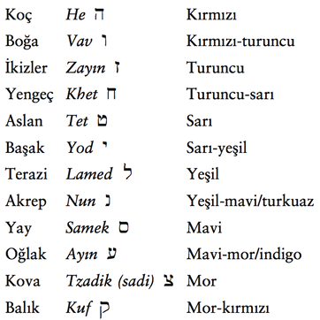
Kâğıda beş dakika baktıktan sonra gözlerinizi kapayın ve zihninizde beliren imgelerin ve düşüncelerin notunu alın. Bu şekillerin ve fikirlerin bazıları, burçlar yolculuğunuzu zenginleştirecek önemli mesaj veya ipucu içerebilir. Yarın yapmanız gereken bir şey vardır. Dünyaya çıktığınızda farkına varmanız gereken bir nesne olabilir. Bu harflerle ne kadar çok meditasyon yaparsınız aldığınız mesajları çözmekte o kadar ustalaşırsınız.
Gözleriniz kapalı, on dakika daha oturun. İbranice harfin imgesinin ve diğer her şeyin yavaşça akıp gitmesine izin verin. Gözlerinizi açın.
Eş-zamanlılıklar, spiritüel gelişmemizi zenginleştirecek ve dünyevi hedeflerimize doğru bizi götürecek ipuçlarını bulmamız için dış dünyaya bakmamızı önerir. Meditasyon ise aynı şeyler için içe bakmamıza olanak tanır. Kozmik gezgin bu iki gücü de kullanır.
İyi yolculuklar!
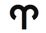
Koç: Kurtarıcı
21 Mart-19 Nisan
Anahtar ifade: “Ben...”- kimlik
Genel Nitelikler: Liderlik, öncü, savaşçı, doğrudan, güçlü, kurtarıcı, güçlü adalet duyusu Karanlık Yön: Ben-merkezli, saldırgan, maço, sözünü esirgemeyen, baskıcı, tutarsız, kazaya eğilimli Element: Öncü ateş Gezegen: Mars Gün: Salı Tema: Kıvılcım
Beden Bölümleri: Baş, kan, yüz, jenital bölge, kaslar
Renk: Kırmızı
Değerli Taş: Pırlanta
Müzik Notu: Do- skalanın başlangıcı
İbranice Harf: He 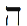
Harfin Kabalistik Anlamı: Ruhun penceresi ve Tanrının adının kısaltılmışı
Yaşam Ağacındaki İzlek: İzlek 4, Güzelliği ve Bilgeliği birleştirir
Tarot Kart: İmparator
Filmler: Gladyatör, 300, Matrix, V. Henry, süper kahraman filmleri, aksiyon filmleri
Olumlama: “Ben güçlüyüm ve her şeyin üstesinden gelirim. Yaptıklarım ve yapacaklarım için minnettarım.”
Genel Bakış
İlk zodyak burcu olan Koç, kimlik ve nefis bilgisinin birincil arketipini içerir. Koç ilkbaharın gelişini haber verir ve kışın donmuş toprağından kurtulma sürecini başlatır. Amaç duyumuzu bize geri kazandırır ve kahramanın harekete geçme çağrısını simgeler. Onunla, güvenli girişkenliğimizi elde eder, liderlik becerilerimizi canlandırır ve sınırlamalarımızdan kurtuluruz. Koç haftasında güvenli girişken olmayı deneyeceksiniz. Bir lider, kılavuz ve kurtarıcı olmayı öğreneceksiniz. Baskıcınızı tanıyacak ve Koç arketipi ile çalışarak sizi engelleyen ne varsa kurtulacaksınız.
Koç Burcunun Sahası
Önceden kılavuz olmamış bir kimse peygamber olamaz.
-Hz. Muhammed, bir Koç
Koç burcu astrolojik yılı başlatır ve yaşamı, kışın donmuş bağlarından kurtarır. Baraj kapaklarının aniden açılmasına benzer şekilde, Koçun yaşam enerjisi dalgalar halinde akar ve acımasız soğuğun zincirlerini kırar. Koç, gün ve gecenin eşit ve dengeli olduğu ilkbahar ekinoksunda (gün-tün eşitliği) başlar. Koç burcunun başlangıcından yaz gündönümüne (21 Haziran) kadar gün ışığı her gün biraz daha artarak karanlığın bandını giderek daraltır. Koç ışığı zafere ulaştırır.
Öncü ateş burcu olarak Koç bizi ileri iter. Savaş tanrısı Mars tarafından yönetilen Koç, başedilmesi zor bir burçtur. Onun acımasız gücünden nefret etmek veya ondan korkmak kolaydır. Geleneksel astrologlar, Koç burcunu ve Mars gezegenini tüm yıkım, çekişme, şiddet ve savaşların nedeni olarak gösterirler. Ateş yakar. Ama aynı zamanda bizi kış boyunca ısıtır. Ve Koç bize ilk kıvılcımı vererek, bizi öğle yemeği niyetine yiyen hayvanlara karşı üstünlük sağlamamıza olanak tanımıştır. Anne Babamız (ay ve güneş) tarafından yalnız bırakıldığımızda, zodyakın en büyük kardeşi olarak Koç nesiller boyu bizi korumuştur.
Güneş burcu Koç olan insanlar, bedavaya çalışmazlar. Kendi yaşamlarını tehlikeye atarak bizi kurtardıklarını, sürekli bize anımsatırlar. Kim olduklarını ve ne kadar önemli olduklarını, kaçınılmaz ve bazen saldırgan bir şekilde bilmemizi sağlarlar. Aralarında Musa, İsa ve Muhammed gibi liderler vardır. (İsa büyük bir olasılıkla, Kudüse yapılan ilkbahar hac yolculuğu Hamursuz sırasında Beytüllahim’de bir ahırda doğmuştu.) Onlar bizi kaderimize götüren çobanlarımız veya öncü koçlarımızdır. Onları selamlıyoruz ve onlara ne kadar borçlu olduğumuzu bize anımsatmayı bırakmaları için onların yeteri öz-güven kazanmalarını diliyoruz.

Koç burcu zodyakın, inanılmaz fiziksel ve zihinsel ustalıklar sergileyebilen savaş sanatlarında eğitilmiş komandosudur. Haritanızda Koçun yönettiği ev, muazzam enerji ve güç taşıyan yaşam alanınıza işaret eder.

Özel Koç Burcunuz
Haritanızda Koç burcunun yönettiği evi (veya yaşam alanınızı) bulun. Sonra Koç burcunda gezegen olup olmadığını saptayın. (Bu kitabın 2. Kısmında, gezegenlerin her birinin bu burçtaki yorumuna yeniden bakabilirsiniz.)
Bu hafta süresince Koçun yönettiği evin işaret ettiği yaşam alanına odaklanın. Örnek olarak, eğer Koç burcu ikinci evinizi yönetiyorsa çabalarınızı finansa ve yeteneklere yöneltin. Yaşamınızın o alanına uygulanabilecek eş-zamanlılıkları ve fırsatları kollayın. Bu tarz özel odaklanma, on iki burcun her birinden geçerken yıldızların bilgeliğine daha kişisel ve yakın bir bağlantı kurmanızı sağlayacaktır.
Koç Birinci Evde (Yükselen Burcunuz): Yeni bir zorlu işe iki kez düşünmeden atlayan cesur ve gözü pek bir insansınız. Aşırı enerji harcama eğilimindesiniz. Biraz sakinleşin. Her şeyi kendiniz yapmak yerine iş dağıtımı yaparak daha çok şey elde edebilirsiniz. İçten yüreklenen, yarışmacı, fevri ve biraz sabırsız bir insansınız. Yaşamın sizi, işin başına ittiği doğuştan bir lidersiniz. Koç haftasında görünüşünüze, bedeninize ve sağlığınıza odaklanın.
Koç Ikinci Evde: Para kazanmaya ve yeteneklerinizi sergilemeye gelince tuttuğunu koparan bir insansınız. Aşırı harcama ile paranızı tüketmemeye çalışın. Gizli yeteneklerinizi ortaya çıkarmalısınız. Daha çok para kazanmak için bir lider ve öncü konumuna gelmelisiniz. Koç haftası sırasında finansa, yeteneklere ve öz-değere odaklanın. Bir serüven veya yeni bir para kazanma olasılığı için çağrı alabilirsiniz.
Koç Üçüncü Evde: Silahı zekâ ve sözcük olan bir savaşçısınız. Keskin ve sivri olabilen saldırgan bir zihne sahipsiniz. Konuşma, yazma ve iletişim kurma tarzınız ile düşman yaratmamaya çalışın. E-pstalarınızı göndermeden önce iki kez okuyun. Tartışmacısınız ve son sözü söylemeyi seviyorsunuz. Zihninizi eski düşünce örüntülerinden kurtarmanız gerekmektedir. Koç haftası sırasında kardeşlerinize, komşularınıza, iletişime, yazılara ve iş girişimlerine dikkat edin.
Koç Dördüncü Evde: Ev yaşamınız size bir savaş alanı gibi gelebilir veya belki de yarışma ve saldırganlıkla dolu bir ailede büyüdünüz. Özellikle ileri yaşamda, sıcak bir yerde yaşamanız çok iyi olacak. Kendinizi erken çocukluğunuzla ilgili duygusal bağımlılıktan, özellikle gerçek kimliğinizden ödün verdirmiş veya onu bastırmış olan travmalardan kurtarmanız gerekiyor. Koç haftasında ev yaşamınız, aileniz ve duygusal sağlığınız ile ilgilenin. Bir veya daha fazla aile üyesini, onlara sıkıntı vermekte olan bir konudan kurtarmak için çağrı alabilirsiniz.
Koç Beşinci Evde: Yaşamınız kısa ve çarpıcı aşk serüvenleri ile dolu. Çocuklarınız erkek veya doğa olarak çok erkeksi olacak. Çocuklarla aranız iyi çünkü siz de oyunu seviyorsunuz. Yarışmacı veya uç sporlar sizi çekiyor. Dürtü ile ve içinizden geldiği şekilde proje, oyun, gezi ve parti yaratmayı/düzenlemeyi seviyorsunuz. Aşık olma korkusundan kendinizi kurtarmanız gerekir. Koç haftasında daha çok eğlenmeye ve yaratıcılığınızı artırmaya çalışın. Çocuklarınıza ve sevgilinize ilgi gösterin.
Koç Altıncı Evde: Kendiniz için çalışma yollarını aramanız gerekir çünkü başkası tarafından yönetildiğiniz veya size patronluk taslandığı zaman rahatsız oluyorsunuz. Çalışanlarınızla çatışma yaşayabilirsiniz. Baş yaralanmaları, kesikler ve kazalar için önlem alın ve kan basıncınızı kontrol etmeyi unutmayın. Sağlığınız genelde iyi ve düzenli egzersizden çok yararlanacaksınız. Yeteneklerinizi ve gücünüzü baltalamak isteyen insanlardan kendinizi kurtarmalısınız. Koç haftası sırasında sağlığınıza, beslenmenize, egzersizinize ve işinize odaklanın.
Koç Yedinci Evde: Aşkta ve işte güçlü ve bağımsız ortaklar/ eşler ile ilgileniyorsunuz. Ve bu ilişkiler sıklıkla savaş alanına dönüşüyor. Düşmanlarınız acımasız ve saldırgan olabilir. Kendinizi baskıcı ilişkilerden veya sizden çekinen ve sizin kötülüğünüzü isteyen insanlardan kurtarmalısınız. Koç haftasında ortaklarınıza, eşinize ve müşterilerinize odaklanın.
Koç Sekizinci Evde: Cinsellik, samimi yakınlık, ortak parasal işler veya miras ile ilgili savaş veya çatışma yaşayabilirsiniz. Erkeksi ve dışa dönük insanlar sizi cinsel olarak cezbediyor. Güçlü bir cinsel dürtünüz var ama zararlı olabilecek arzulardan kendinizi kurtarmanız gerekiyor. Büyüye ve iyileştirme sanatına çok ilgi duyuyorsunuz. Koç haftasında samimi yakınlığı, cinselliği ve yapıştığınız şeylerden kurtulmayı vurgulayın.
Koç Dokuzuncu Evde: Seyahat ve eğitim konularında serüvencisiniz. Yabancı kültürlere, özellikle ılık iklimli ülkelere ilgi duyuyorsunuz. Evlilikle gelen ailenizle bir çatışma yaşayabilirsiniz. Kendinizi dar görüşlülükten, katı ahlâkçılıktan ve bağnazlıktan kurtarmalısınız. Koç haftasında yabancılardan, seyahatten ve yüksek eğitimden gelen fırsatlara dikkat edin.
Koç Onuncu Evde: Profesyonel sahanızda doğuştan bir lidersiniz. Kendi işinizi yönettiğinizde gelişiyorsunuz. Her şeyi şimdi ve burada istiyorsunuz ama kariyerinizde sabrı öğrenmelisiniz. Toplumunuzu baskıdan kurtarmalısınız. Ezilenleri bulun ve onlar için savaşın. Koç haftasında kariyerinize ve topluma olan katkılarınıza odaklanın.
Koç On birinci Evde: Nereye giderseniz gidin arkadaş grubunuza- özellikle erkeksi ve dışa dönük arkadaşlara- ihtiyacınız var. Her zaman arkadaşlara, gruplara ve kuruluşlara ilgi duyuyorsunuz. Yeni insanlarla tanışmaya açıksınız ve çevrenizin lideri olma eğiliminiz var. İnsancıl çalışmalar ve kâr dışı kuruluşlar, sizin kendinizi bir kurtarıcı gibi hissettiğiniz yerler. Koç haftasında arkadaşlarınızı, grupları ve kuruluşları vurgulayın.
Koç On ikinci Evde: Geçmiş bir yaşamınızda bir olasılıkla, güçlü ve saldırgan bir lider vaya çok kan akıtmış bir asker veya savaşçı idiniz. Bu yaşamda, geçmişteki kurbanlarınızla barışmak durumundasınız. Bu geçmişten dolayı, gücünüzü ve yeteneklerinizi açığa çıkarmaktan korkuyor olabilirsiniz. İçteki lidere yeniden bağlanmak ve büyük bir görevi üstlenmek zorundasınız. Koç haftasında spiritüelliğinizi, gizemciliğinizi ve çevrenizde acı çeken insanları vurgulayın.
Koç Burcu ve Tanrı Kompleksi
Bir müzisyen olarak İstanbulu sadece çarpıcı güzelliği için değil, aynı zamanda günde beş kez bedavadan dinlenebilen olağanüstü müzik için de seviyorum. Sözünü ettiğim şey, şehrin camilerinden yükselen, müezzinler tarafından okunan ezandır. Ezan her zaman bana, sıradanlığın ötesindeki yüksek bilinç dünyasının günlük anımsatıcısı ve eyleme çağrı gibi gelmiştir. Arapçada ezan şöyledir: “Eşhedü enla ilahe illahlah eşhedü enne Muhammeden Resülullah.” Anlamı: “Ben şeha-det ederim ki Allahtan başka ilah yoktur, ben şehadet ederim ki Muhammed Allahın resulüdür (elçisidir).” Bu güçlü ifadeye (mantraya) Muhammedin neden adını soktuğunu hiç anlamadım. Kimliğini ve imzasını duaya ekleme dürtüsünü yenememiş miydi? Neden bu kadar Koç olmak zorundaydı?
Derken bir gün Bizans Hristiyan kilisesi Aya Sofya’da (İstanbulda ünlü Sultanahmet Camiinin karşısında) Muham-medin gerçek niyetini anladım. Ben-merkezli olduğu için değil, müritlerinin bir gün onu- İsa gibi- Tanrı ilan etmelerinden ve Arap kavimlerini tek tanrı altında birleştirme görevinden vazgeçmelerinden kaygılandığı için kendi adını Müslümanların günlük yaşamlarına eklediğini anladım. Muhammed sanki onlara şunu söylemek istiyordu: “Allahtan başka ilah yoktur ve eğer siz beni bir ilah yapmak istiyorsanız size bir şey söyleyeyim: Ben sadece bir elçiyim.”
Bir diğer Koç Musa, insanlarını kölelikten kurtarmak, onlara insancıl kanunları öğretmek ve onları savaşçı bir millete dönüştürmek için çağrıldı. Musa, azim ve büyü ve Koç ateşi ile bu imkânsız görevi başardı. Musa, Exodus’un (Mısırdan Çıkış) sorgulanamaz kahramanı olmasına rağmen adı, Musevilerin Mısırdaki kölelikten kaçış öyküsünü anlatan ve her Hamursuz bayramında okunan kitap Haggadah’da adı sadece bir kez geçer. Bunun nedeni, Haggadah’ı biraraya getiren hahamların, insanların olağanüstü Musaya Tanrı olarak tapacakları korkusu idi.
Nasıralı İsa da benzer bir Koç konusu ile karşı karşıya kalmıştı. Doğumunu 25 Aralıkta kutlamamıza rağmen İsa bir Oğlak değildi. İsayı Apollo, Horus ve Mitras gibi eski dünyanın kurtarıcı ilahları ile ilişkilendirmek için kilise büyüklerinin onun- Hris-tiyan ezoterik geleneklere göre 1 Nisan olarak saptanmış- doğum gününü kış gündönümüne almalarıyla, dördüncü yüzyıl dolaylarında Noel kutlaması başladı. İsanın mesajı, bir içsel tek tanrılık idi: Tanrı hepimizin içindedir. İsa, Tanrının krallığının dışarda göklerde bir yerde değil, her gün burada bizimle birlikte olduğunu söyledi. Her birimizin Tanrı kıvılcımını içimizde taşıdığımızı, kendi örneğiyle gösterdi. Ölümünden sonra müritleri, İsanın insan mı tanrı mı olduğu konusunda ikiye bölündüler. Konstan-tin Hristiyanlığı yasallaştırdıktan sonra Kilise büyüklerinin bu konuda karar vermelerini istedi, böylece diğer tarafta olanları idam ettirebilecekti. M.S. 325’te İznik Konsülü en sonunda Hris-tiyan formülünü oluşturdu: İsa hem tanrı hem insandı.
Çoğu Koç, böyle bir uzlaşıyı kendisi için de kabullenebilir. Hepsinde, burada büyük bir amaç için bulundukları, dünyayı kurtarmak için doğdukları gibi önüne geçilemez bir his vardır.
Haritanızda Koç, ev veya gezegen olsun, Tanrının sizinle temas ettiği yerdir. Koç içinizdeki ilahi gücü vurgular. İçteki Tanrı kıvılcımının parladığı yeri simgeler. Ama bir uyarı: Kendinizi fazla ciddiye almayın. Tanrının size dokunması, Tanrı olduğunuz anlamına gelmez.
Öte yandan, özellikle Koç burcu tarafından etkilenen yaşam alanlarında, büyük olmaktan korkmayın. Örnek olarak, Koç burcu birinci evinde (kişilik evi) olan bir adam, Koç haftası sırasında birçok iltifat aldığını söyledi. Ben de kendisine, belki de sürekli iltifat aldığını ama onları duymazlıktan geldiğini çünkü gücünü kabul etmenin, onu daha az alçakgönüllü ve insancıl yapacağına inandığını söyledim. Koç enerjisini bir hafta boyunca özgür bırakmak ona, Tanrı dokunuşunu takdir etmesini ve en önemlisi, içindeki “kıvılcımı” tatlı bir şekilde yüreklendirenlere teşekkür etmesini öğretmişti.
Kimlik: “Ben...im”
Her burcun, kendisini en iyi anlatan bir ifadesi vardır. “Ben...im” ifadesi, Koçun kimliğini bulma ve aynı zamanda başkalarına kendi kimliklerini bulmalarına yardım etme ihtiyacını anlatır. Doğum tarihimizin ve saatimizin bizi astrolojik olarak betimlemesi gibi astrolojik yılı başlatan Koç da diğer bütün burçlara kimlik sunar. Musa yanan çalılığı görünce Tanrının onu imkânsız bir göreve gönderen sesini duydu. Açık sözlü ve korkusuz bir Koç olarak Musa hemen Tanrının adını, Tanrının kimliğini talep etti. Tanrının yanıtı olan “Ben benim,” tektanrılığın mantrası ve aynı zamanda Yaşam Ağacının ilk küresi için Tanrının adı oldu.
“Ben...im” hem her yerde hem de hiçbir yerdedir. Siz, ben, çiçekler ve ağaçlar hepimiz o’yuz. İslam gizemcileri Sufiler bu felsefeyi, Tanrıyı herkeste ve her şeyde gören kusursuz insan kavramı ile pekiştirirler. Tanıştığınız her insanda Tanrıyı görerek “kusursuz insan” olma alıştırması yapın.
Bu hafta, bu yaşamdaki kimliğinizi ve gerçek amacınızı gösterecek eş-zamanlılıklara dikkat edin. Bu ipuçlarını Koç burcunun yönettiği yaşam alanında arayın.
Ek olarak, adınızı araştırın. Kimliğinizi ve görevinizi, adınız kadar ortaya çıkaracak hiçbir şey yoktur. Eğer adınızın anlamını bilmiyorsanız Google gibi internet arama motorları ile araştırma yapın. Birçok bebek-adı web sitesi vardır ve orada hemen her adın kökenini ve anlamını bulabilirsiniz.
Yanan çalılığın Musayı eyleme çağırması gibi siz de sizi göreve yönlendiren kışkırtıcı bir olaya rast geleceksiniz. Bu eylem çağrısının ipucu, Koç burcunun yönettiği evde ve belki de adınızda yatmakta.
Kurbanlık Koyun
Önde duran, tehlikeyi ve bilinmezi göğüsleyen kurtarıcı Koç, aynı zamanda kurban ile ilişkilendirilir. Kurbanlık koyun kimdir? Bebek Koç- büyüyüp koç olmadan önce kurban edilen kuzu. Koç burcunu simgeleyen askerler, ön safhalarda yer alarak bizi korurlar. Başkalarının daha özgür, daha güvenli bir yaşam sürmelerini sağlamak için kendilerini kurban ederler. İbranicede “savaş” sözcüğü krav’dır. Çoğu insan bu sözcüğü, İsrail Savunma Gücü tarafından öğretilen savaş sanatı Krav Maga’dan bilir. Krav, “kurban” anlamına gelen Korban sözcüğü ile aynı kökten gelmektedir. İbranicede ve Koç arketipinde savaş ve kurban ilişkilidir. Hindu geleneğinde rahiplerin seçkin sınıfı Brahmin, Tanrıya adanan kurbanı yakan ateşe (Koç) adını vermiştir.

Haritanızda Koç, ev veya gezegen olsun, Tanrının sizinle temas ettiği yerdir. Koç içinizdeki ilahi gücü vurgular. İçteki Tanrı kıvılcımının parladığı yeri simgeler.

Koç haftasında bir çeşit kurban uygulaması yapacaksınız. Neden veya kimden vazgeçeceğinizi önerecek eş-zamanlılıklara dikkat edin.
Hz. Muhammed ve Cebrailden Sıkı Bir Kucaklama
Geleneğe göre, Hz. Muhammed Mart veya Nisan ayında doğmuştu; bu da onu bir Koç yapar. O bir kurtarıcı, savaşçı ve bir liderdi. Kırk yaşında çöl mağaralarında spiritüel inzivaya çekildi. Ondan önceki Musa ve İsa gibi Koçun ateşli sıcak sahası çöl, onun eyleme çağrı yeri idi.

Bu hafta, bu yaşamdaki kimliğinizi ve gerçek amacınızı gösterecek eş-zamanlılıklara dikkat edin. Bu ipuçlarını Koç burcunun yönettiği yaşam alanında arayın. Ek olarak, adınızı araştırın. Kimliğinizi ve görevinizi, adınız kadar ortaya çıkaracak hiçbir şey yoktur.

Ramazanın on yedinci gecesinde M.S. 610’da yaratıcısı ile birleşmek için bir dağa tırmandı. Muhammed, Cebrailin dağda kendisini ziyaret ettiğini ve ona “Oku” dediğini anlatır. Muhammed gerçek bir Koç gibi davranır ve reddeder. (Çoğunuz, bir Koça ne yapması gerektiğini söylemenin neredeyse imkânsız olduğunu herhalde biliyorsunuz.)
Meleğin tartışmacı Koçlarla çok deneyim yaşadığını bilmeyen Muhammed, onunla kavga etmeye çalışır. Ama, daha sonra Muhammed ekler, “Melek beni kucaklayarak dayanma gücüm kalmayıncaya kadar sıktı” (En Eski Kaynaklara Göre Muhammedin Yaşamı, Muhammed İbn İsmail al-Bukhari). Koçu Tanrının iradesine teslim etmek için baş meleğin onu sıkıca kucaklaması ve onunla biraz güreşmesi gerekiyordu. Sonunda kapılar açıldı ve Muhammed Kuranı iletmeye başladı. İslam sözcüğünün anlamlarından birinin “teslim” olmasına şaşırmamalı.

Koç haftasında bir çeşit kurban uygulaması yapacaksınız. Neden veya kimden vazgeçeceğinizi önerecek eş-zamanlılıklara dikkat edin.

Siz de haritanızda Koç burcu olan yerde Tanrı ile güreşiyor, kaderiniz ile ilgili onunla tartışıyorsunuz. Tanrı ile bir miktar uğraşmak geçerli olabilir. Bir melekle yaptığı karşılaşma sırasında Eyübün kalça kemiği yerinden oynamıştı; bu yüzden uğraşınızı ölüm pahasına sürdürmeyin.
Haritanızda Koç ayrıca, yaşamda aşırı kavga ettiğiniz yeri belirtir. Yaşamınızın bu alanını belirleyin ve teslim olmaya, bırakmaya, yaşamın sizi yönlendirmesine izin vermeye, kontrolden vazgeçmeye, bu kadar çok çabalamamaya çalışın.
Tohumları Ekmek
Astrolojik yıl ve aynı zamanda ilkbahar Koç burcu ile başlar. Koç burcu tohumları toprağa bırakır. Ama Koç bakan, besleyen bir burç değildir. Tohumların filizlenmesini beklemez. Huzursuz ve sabırsız Koç, yeni bir serüvene atlamayı yeğler.
Bir Koç olan Joseph Campbell başyapıtı Bin Suratlı Kahraman kitabında, bütün efsanelerin temelde “fevkalade ama değişmez öyküler” olduklarını ileri sürmüştür. Her masalın, her şeyin aynı ve bir olduğunu, hepsinin bir kaynaktan tohumdan- geldiğini bize böylece bir Koç söylemiş oluyor. Joseph Campbell bu birlik fikrine “tek-efsane (monomit)” dedi. Musa, İsa ve Muhammed, hepsi Tanrının gerçek adının Birlik (Tevhid) olduğunu yinelediler. Onlara kim ne diyebilir ki? Üçünün de burcu, tohumun DNA’sında kodlanmış kimlik burcudur, ilk burçtur.
Koç burcunun tohuma bağlılığı, neden bu burcun sürekli kendisinden söz ettiğini açıklar. Koç tohumu toprağa eker. Ve tohum orada, aylar sonra Boğa burcunda veya İkizler burcunda veya sonbahar hasatında ortaya çıkıncaya kadar görünmeden yatar. Lezzetli hediye, Koç çoktan kaybolduğunda gelir. Koçu o zaman anımsayan olabilir mi? Dolayısıyla, Koç sürekli bize kendini anımsatır: “Tohumu toprağa ben ektim. Ben yaptım. Ben, ben, ben.” Başka türlüsü onlar için mümkün değildir.

Haritanızda Koç burcu olan yerde Tanrı ile güreşiyor, kaderiniz ile ilgili onunla tartışıyorsunuz. Koç ayrıca, yaşamda aşırı kavga ettiğiniz ve teslim olmanız gereken yeri de belirtir.

Koç İle Geçinmek
- Koç bir ateş burcudur ve yanmak için oksijene (havaya) ihtiyacı vardır. İnsanları genelde hava burçları ile yönetilen sözcüklerle güçlendirdiğimiz için hava, pekiştirmek demektir. Teşvik sözcüklerinde cimri olmayın. Koç, övgüye veya olumlamaya ihtiyacı yokmuş gibi gözükür ama aslında durum bunun tam tersidir. Onlara küçük çocuklar gibi ne kadar müthiş olduklarını sürekli anımsatmanız gerekmektedir.
- Bir Koça asla ne yapması gerektiğini söylemeyin. Koç hayvanı sürünün başıdır; onun işi liderlik yapmaktır, izlemek değil. Koçun bir şey yapmasını istiyorsanız öneride bulunun. İma edin. Emretmeyin. Patrona patronluk taslayamazsınız. Tanrı bile Musa ve Muhammede ne yapmaları gerektiğini söylerken zorlandı.
- Bırakın Koç kendisi hakkında konuşsun. “Ben” onun en sevdiği konudur. Ve çoğu zaman eğleneceksiniz. Eğer bu “ben” sohbeti aşırıya kaçmaya başlarsa konuyu değiştirin. Bir savaş istemiyorsanız boğazına sarılmayın.
- Koçun sizi fethetmesine izin vermeyin. Koç, ayaklarına kapanan veya aşırı ihtiyaç içindeki insanlardan hoşlanmaz. Asla tümüyle teslim olmayın. Koç sizi elinde tuttuğunu hissederse fethetmek için bir sonraki kişiye geçecektir. Siz tümüyle onun emrinde olmadıkça Koç kalbinizi kazanmak için savaşacaktır.
- Koça bir görev, uğruna savaşılacak bir amaç, kötü bir imparatorluk veya adaletsizlik gibi yenilgiye uğratılacak bir şey verin. Koç, bir görevi olduğu sürece gizilliğini tam anlamıyla ortaya çıkaracaktır. Koç, sıkıldığı veya amaçsız kaldığı zaman bir zorbaya veya yıkıcı bir askere dönüşür. İşsiz bir savaşçı kadar tehlikeli bir şey pek bulamazsınız.
- Koçun, kendi grubuyla oyun veya eğlence için bir araya gelmesine izin verin. Bırakın eğlensinler, oynasınlar. Ancak o zaman bir Koç size sadık kalacaktır.
- Kendiliğinden, doğal ve öngörülemez olun. Ona beklenmedik şekilde davranın. Koç yeni ve değişik olanı sever.
Gücün Karanlık Yönü: Koç
Koç ısrarcı, talepkâr, bencil, saldırgan, şiddetsever ve hislerinden kopuk olabilir. Çabuk sinirlenen ve sabırsız bir kişi olarak aynı anda bir milyon proje başlatıp sonunu getirmez. Küçük bir çocuk gibi anında doyum talep eder. Koçun nefis ile takıntısı, artık başka hiçbir şeyin önemi olmadığı bir noktaya kadar tırmanabilir. Bu durum, Koçun Tanrı olduğu ve gerisinin konu dışı olduğu çarpıtılmış bir tektanrılık sürümüdür.
En karanlık gölge, kişisel veya sosyal bir seviyede ortaya çıkar. Koç enerjisinin gidecek bir yeri olmadığında işsiz savaşçı sendromu belirir. Etkin ve amaçlı bir yaşamda Koç canlanır. Duraksama olduğunda dikkat edin. Böyle bir durumda Koç saldırgan özünü en yakındaki kişiye yöneltecektir ve sonuç, yaralayıcı, kanlı ve felaket olabilir. Koçun Tarot kardındaki İmparator, dünyayı fethetmeye hazır kaslı ve güçlü bir adamdır. Bu imparator fethettiği yerlerde bir zorbaya dönüşür. Roma Augustus’tan sonra bu Koç-dürtülü kadere sürüklendi ve atıl ve sıkılmış imparatorlar Caligula ve Neron, kendilerini ve büyük imparatorluğu mahvettiler.
Koç burcunun yönettiği yaşam alanınızda işsiz bir savaşçıyı barındırıyor olabilirsiniz. Bu alanda sık sık olumlu projeler başlatarak ve bunları sonlandırmaya özellikle çaba göstererek Koç burcu evinin enerjisini yenileyin.
İbranice Harf He
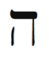
Kozmosun yaratılışını anlatan Kabalistik metin Sefer Yet-zirah’ın beşinci bölümünde yazar, İbranice harfleri zodyak burçları ile açık bir şekilde ilişkilendirir. Ve kitap, Tanrının bu asal enerji parçaları ile tüm evreni oluşturduğunu ileri sürer. İbranice harf He Koç burcunun enerjisini, Koç burcu da He harfinin enerjisini yayar. Bugün bile insanlar, hangi dili konuşurlarsa konuşsunlar dikkat çekmek için birbirlerine “Hey!” diye bağırırlar; bu da Koç enerjisinin her zaman dikkat çektiğine dair Tanrının anlayışını kabul etmektir.
İbranicede He sözcüğü, İngilizce sözcük the ile benzer şekilde isimden önce kullanılır ve ismi belirginleştirir; örneğin, çocuk sözcüğünden önce kullanılan He, bir çocuğu o çocuğa döndürür- tek ve biricik çocuk (tam bir Koç ifadesi!).
Tevrat’ta Abraham, He sözcüğünü hem kendi hem de karısının adına iliştirerek doğurganlığı harekete geçirdi. Bu harfle meditasyon yaparak yaşamınızda istediğiniz her şeyi uyarabilirsiniz. Her zaman kazanan ve her zaman korkusuzca işini bitiren içteki süper kahramanı canlandırmak istiyorsanız He harfi ile meditasyon yapın.
He harfine gözünüzü kırpmadan mümkün olduğu kadar uzun süre bakın ve sonra gözlerinizi kapatın. Harfi, siyah bir arka planda beyaz çerçeve içinde göreceksiniz. Bu güç lü harfin enerjisini harekete geçirmek için zihninizin gözü ile gördüğünüz He harfini, daha çok güvenli girişkenlik ve güce ihtiyacınız olan alan- lardaki imgelerle yan yana koyun. Örnek olarak, üret- ken bir iş toplantısını yönettiğinizi veya uzun süredir dokunmaktan korktuğunuz bir projeyi başlattığınızı hayal edin. He’nin gücünü artırmak için, kâğıda çizdiğininiz harfi Koçun rengi olan kırmızıya boyayabilirsiniz.

Koç burcunun yönettiği yaşam alanınızda işsiz bir savaşçıyı barındırıyor olabilirsiniz. Bu alanda sık sık olumlu projeler başlatarak ve bunları sonlandırmaya özellikle çaba göstererek Koç burcu evinin enerjisini yenileyin.

Antik İbranicede He, bir öncünün ve keşifçinin içinden bakarak uzaktaki ufku görebildiği “penceredir.” Gözler ruhun pencereleridir. Bu tarz bir görsel meditasyon, sadece yaşamınızı canlandırmayacak aynı zamanda, yüksek nefsinizin ihtiyaçlarına ve dürtülerine ulaşmanıza olanak tanıyacaktır. Bu yüce fikir açısından baktığımızda, JFK rumuzunun Amerikan Başkanı John F. Kennedy’nin adını simgelediği gibi He harfi de genelde Tanrının kısaltılmış adıdır. He’nin görüldüğü her yerde Tanrının da olduğunu düşünebiliriz.
Bedenin Bölümleri
Koç burcu başı, yüzü, her iki beyin yarıküresini ve kasları, aynı zamanda Akrep burcu ile birlikte cinsel organları yönetir. Koç kan ile de ilişkilendirilir. İbranicede dam “kan,” adom “kırmızı” ve adam “insan” demektir. Hepsinin kökü aynıdır. İnsanoğlu kırmızı kan ve toprak karışımıdır, yani yoğun bir Koçtur.
Koçlar atletik ve kaslı görünürler, genelde güçlü ve sağlıklıdırlar. Sıklıkla kendilerini baş önde olmak üzere tehlikeye attıkları için yüzlerinde yara izleri veya doğum izleri olabilir.
Bu hafta, kan dolaşımı ve kas çalışması için bol beden egzersizi yapın. Marsın ve Koçun metali demiri içeren yeşillikten bol miktarda yiyin.

Her zaman kazanan ve her zaman korkusuzca işini bitiren içteki süper kahramanı canlandırmak istiyorsanız He harfi ile meditasyon yapın.

Koç Burcunun Rengi: Kırmızı
Kırmızı düşünün, Koç burcunu uyandıracaksınız: Tutkuyu simgeleyen kırmızı gül, yaradan fışkıran kırmızı kan, gelişmiş bir silahtan çıkan infrared ışık, sarhoş edici kırmızı şarap ve tabii ki kırmızı gezegen Mars. Kırmızı renk hem savunmada hem de hücumda etkili. Örnek olarak, Kabala uygulayanların sol bileklerine taktıkları kırmızı ip, kem gözden korur. Mantığa göre Koç burcunun enerjisi, başkalarından gelen olumsuz enerjiyi defeder. Antik günlerde, koç boynuzundan (Koç Burcu) çıkan sesin kabilenin savaşçılarını çarpışmaya çağırması gibi kırmızı alarm da yakın bir saldırıya işaret eder. Kırmızı ışık durmamızı söyler. Eğer kırmızı ışıkta durmazsak polis arabası kırmızı sireni ile bizi kovalamaya başlar veya daha kötüsü, karşı trafik ile şiddetli bir çarpışmaya gireriz. Genetik programımızda kırmızıya dikkat etmemiz yazılıdır. Bedenimizden kırmızı kan boşaldığında hemen önlem almazsak ölebiliriz.

Bu hafta, kan dolaşımı ve kas çalışması için bol beden egzersizi yapın. Marsın ve Koçun metali demiri içeren yeşillikten bol miktarda yiyin.

Güçlü bir lidere, savaşçıya veya öncüye rastgelmek istiyorsanız giysinize bir parça kırmızı iliştirin. Eğer yatak odanızda tutku eksikliği varsa odada biraz kırmızı kullanın. (Meksiko Şehrindeki Zona Roja’yı, Paris’teki Moulin Rouge’u ve Amsterdam’daki kırmızı-ışık bölgesini düşünün.) Bu hafta kırmızı renklerle giyinin ve bu değişikliğin getirdiklerine dikkat edin. Şu uyarıyı anımsayın: Kırmızı kaçınılmaz olarak dikkat- ve belki de biraz saldırganlık- çekecektir.
Koç Haftasında Neye Odaklanmalıyım?
Haritanızdaki Koç burcu, kimliğiniz ve kaderinizi nasıl gerçekleştireceğiniz hakkında bilgi verir. Yaşamınızın bu alanını inceleyin ve bir görev, bir eylem veya ezilenleri kurtarma çağrısı ipuçlarını yakalamaya çalışın. Bu hafta daha çok kırmızı giyinin, yeni projeler başlatın, hangi lokanta veya hangi sinema gibi küçük kararlar da olsa liderliğinizi ortaya çıkarın. Kaslarınızı kullanın. Bir egzersiz rutini oluşturun veya her zamankinden daha çok egzersiz yapın. Koçlar koşmayı, atlamayı, atış yapmayı, güreşmeyi, aşk yapmayı ve terlemeyi severler. Ek olarak, bu hafta birlik üzerine odaklanın. Her şeyin nasıl ilişkili olduğunun ve bu karşılıklı ilişki ortamının nasıl merkezi olduğunuzun farkına varın.
Koç burcu ile ilgili eş-zamanlılıkları kollayın ve size yöneltilen sembolik ve pratik mesajları yorumlamaya çalışın. Koç burcunun simgeleri: Koç hayvanı, kırmızı renk, Mars, demir, yüz, kan, kaslar, ateş, kıvılcım, kibrit, savaşçı, çatışma, şiddet, savaş, güvenli girişkenlik, tutku, liderlik, tohum, kimlik, süper kahramanlar, İmparator Tarot kardı, güreş, kurtarma, kölelik, pencereler, Salı, Musa, İsa ve Leonardo da Vinci.
Koç Haftası Kontrol Listesi
• Haritanızda Koç burcunu bulun ve Koçun öğretilerini liderlik, öncülük, eylem ve tutku- yaşamınızın o alanında uygulamaya çalışın.
• Güvenli girişken olun.
• Kimliğiniz için ipuçları arayın.
• Kimliğinizi anlatan bir cümle yazın.
• Yaşamınıza bir tohum, yeni bir başlangıç ekin. İsterseniz bir saksıya veya bahçeye gerçek bir çiçek ekin.
• Kararlı olun. Bilge Yoda’nın dediği gibi “Çabalamayın. Yapın veya yapmayın.”
• Karşılaştığınız her insanda Tanrıyı görmeye çalışın.
• Egzersiz yapın. Bu hafta terlemeye ihtiyacınız var. Çabadan dolayı yüzünüzü kan basarsa iyidir.
• İbranice harf He ile meditasyon yapın.
• Koç burcunun olumlamasını, bir uyanınca bir de yatarken olmak üzere günde iki kez okuyun: “Ben güçlüyüm ve her şeyin üstesinden gelirim. Yaptıklarım ve yapacaklarım için minnettarım.”
• Kırmızı giyinin ve sonuçları izleyin.
• Hissettiğiniz bir baskıdan kendinizi kurtarın.
• Birşeykurbanedin:İhtiyacınızolmayanbirşeyibırakıngitsin.
• Size yapılan herhangi bir komplimanı kabul edin ve teşekkür edin.
Koç Burcu Ritüeli: Yanan Arzu
Koç burcu astrolojik yılı başlatır. Yükseklerdeki bazı arkadaşların yardımı ile bu yıla başlamak için eski zamanların (genelde hayvan) kurbanlarını anımsatan bu ritüeli deneyin. Böylece Koç burcunu uyaracaksınız.
Kırmızı kalemle bu yıl başarmak istediğiniz bir şeyi, önemli bir görevi yazın. Sonra bu kâğıdı kırmızı bir mumun alevi ile yakın. (Lütfen başka bir şeyin yanmamasına dikkat edin.) Kâğıt yanarken ne görüyorsunuz? Kâğıt tümüyle yanıyor mu? Yanması zor muydu? Ritüel sırasında başka bir şey oldu mu? Bu ipuçları ve eş-zamanlılıklar size hevesiniz ile ilgili çok şey öğretecek. Şimdi görevi tamamlamak size kalmıştır.
Bu hafta, Tevrat’taki Exodus (Mısırdan Çıkış) öyküsünü yeniden sahneye koymak isteyebilirsiniz. Exodus’ün bir ve on iki arasındaki bölümlerini okuyun. (Öykü on ikinci bölümden sonra da devam eder ama bu yeterlidir.) Kabalaya göre Musanın köleleri kurtarması ve onları vaadedilmiş topraklara götürmesi güçlü bir metafordur. Bu zaman ötesi destanı okumadan önce izleyen sorular üzerinde düşünün: Size kim veya ne baskı yapıyor veya sizin gerçek kimliğinize erişmenizi engelliyor? (Eğer hastaysanız baskı yapan şey, bedeninizdeki organ olabilir.) Sizin vaadedilmiş topraklarınız nerededir, gerçekleştirmek istediğiniz arzu nedir? Exodus’ü okurken kendinizi köle İsrailli ve firavunu da zulümcünüz olarak hayal edin. Musa sizin içinizdeki Tanrı kıvılcımını, kurtarıcıyı, Koçu simgeler. Vaadedilen topraklar da hedefinizi.
Tevrat’taki karakterlerin yerine kendinizi, ikilemlerinizi ve hedefinizi koyarsanız kurtulmanızı sağlayacak ipuçlarını yakalayabilirsiniz. İsraillilerin özgürlüğe doğru ilerleyişinin her paragrafını okuduktan sonra bunun sizin zorlu durumunuza olan ilişkisi hakkında düşünün veya yazın. Şu anda, Musanın ve kavminin davranışlarına metaforik olarak uyan hangi eylemde bulunabilirsiniz? Hedefinizin gerçekleşmesini teşvik edecek hangi eşdeğer adımı atabilirsiniz?
Örnek olarak, kendinizi gaddar bir patronun elinde köle gibi hissettiğinizi varsayalım. İlkönce baskıyı tanımlamanız ve neden kendinizi “Mısır’da” bulduğunuzu keşfetmeniz gerekmekte. Başta, Museviler bile Musadan kuşkulandılar ve köleliğin bilinirliğini, özgürlüğün bilinmezliğine yeğlediler.
Gaddar patron örneğine geri dönecek olursak, acı çekmenize neden olan şeyi saptayın. Neden sıkıntılısınız? Evet, bilinmeyende yürümek zorunda kalabilirsiniz veya kendinizi daha da kötü bir iş ortamında bulabilirsiniz. Ateş çemberinden atlayarak hediyelerini kapan Koç, inanç sıçraması yapmamız için bizi teşvik etmektedir.
Sigmund Freud’un “ikincil kazanç” dediği şeyden, yani baskıcı duruma yapışmanın yarattığı tuhaf çıkarın size verdiği zevkten kurtulma cesaretini bulmak size kalmıştır. Örnek olarak, ikincil kazancınız, saygın ve nüfuzlu konumunuz veya başka birisinin size ne yapmanız gerektiğini söylediği zamanki mutluluğunuz olabilir. En sonunda, inancınızı korumak için çölde uğraş verirken kurtarıcınız Musa size On Emiri getirir. O zaman, yüksek nefsinizle yaptığınız anlaşmayı yazın. On adet yükümlülük listesi yapın- yapmayı söz verdiğiniz on olumlu şey (“Özgeçmişimi yollayacağım,” “Eğitimimi ilerleteceğim.” “İlişki çatışmalarımı çözeceğim” vb.) ve beş “yapmayacağım” sözü (“Maaşımla ilgili ödün vermeyeceğim,” “Kendimi küçük düşürmeyeceğim,” vb.).
Bu alıştırmanın tümü sadece size acıdan kurtulmanız için yardım etmeyecek, aynı zamanda size, her kültürün eskiden gelen çileli öykülerini, bugünü yaşamak için nasıl simgesel ve etkili bir strateji olarak algılayabileceğinizi öğretecek.
Ünlü Koçlar
Musa, İsa, Muhammed Peygamber, J. S. Bach, Leonardo da Vinci, Thomas Jefferson, Akira Kurosawa, Aretha Franklin, Robert Frost, Rafael, Vincent Van Gogh, Rene Descartes, Mother Hale, Billie Halliday, Russel Crowe, Hans Christian Anderson, Joseph Campbell, Marlon Brando, Bette Davis, Ashley Judd, Harry Houdini, Jackie Chan, Samuel Beckett ve Charlie Chaplin.

Kendini bağlayarak her türlü fiziksel esirliğe bilinçli olarak giren, sonra bundan kendini kurtaran illüzyonist Harry Houdini bir Koçtu.

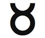
Boğa: Sanatçı ve Finansçı
20 Nisan-20 Mayıs
Anahtar İfade: “Ben...sahibim”- öz-değerden banka hesabına kadar.
Genel Nitelikler: Sanatçı, şefkatli, dengeli, güvenilir, sabırlı, pratik, finansal beceri, duyusal zevk alma hüneri, doğa sevgisi.
Karanlık Yön: Maddeci, tahakküm edici, değişime direnç, inatçı, fanatik, dar görüşlü, açgözlü, düşkünlük gösteren.
Element: Sabit toprak.
Gezegen: Venüs
Gün: Cuma
Tema: Destek veren, geçindiren
Beden Bölümleri: Boğaz, boyun, tiroid bezi
Renk: Kırmızı-turuncu
Değerli Taş: Yeşim taşı
Müzik Notu: Do diyez- ikinci ton
İbranice Harf: Vav 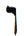
Harfin Kabalistik Anlamı: Çengel veya çivi
Yaşam Ağacındaki İzlek: İzlek 5, Bilgeliği ve Merhameti birleştirir
Tarot Kart: Hierophant (Papa)
Filmler: Çikolata, Acı Çikolata, Koku
Olumlama: “Ben kendimin spiritüel kılavuzuyum. İç zenginliğimi, maddi bolluğa dönüştürme yeteneğine sahibim. Başarıyı ve parasal bereketi hak ettim.”
Genel Bakış
Shakespeare’in ve Budanın burcu olan Boğa, savaşçı Koçun korumaya çalıştığı maddi yaşamı simgeler. Eğer Koç savaşçı ise Boğa da onun şerden kurtardığı prensestir. Boğa burcu duyusal zevki, sanatı, lüksü, varlıkları, değerleri, parayı ve finansı oluşturur. Boğanın öğretileri, öz-değer kavramı içinde saklıdır. Kendinize değer verdiğinizde bereket yaratmak için doğal yeteneklerinizi kullanma olanaklarını keşfedebilirsiniz. Boğa size, özel becerilerinizi en iyi şekilde kullanıp para kazanmanız için öz-saygı seviyenizi yükseltmeyi öğretecek. Boğa aynı zamanda doğa ile ilişkimizi, beş duyumuzu kullanıp yaşamın küçük zevklerinden keyif alma yetimizi simgeler.
Boğa Burcunun Sahası
İlkbaharın tam ortasında, çevredeki en değerli emlâğa yerleşmiş olan Boğanın para ve finansı yönetmesine şaşırmamalı. Boğa, tam hızla çiçek açmakta ve mest halinde olan Doğa Anayı görür, işitir, koklar, tadar ve ona dokunur. Dolayısıyla Boğa yiyecek, sanat, duyusal zevk ve müziği içeren beş duyumuzun zevklerini gözetir. Mayıs ayı, antik dünyanın insanlarının bereket törenleri yaptığı bir aydı. O zamanlar erkekler ve kadınlar, bahar bayramı direğinin çevresinde toplanır ve aşklarını tamama erdirirlerdi.
Bizler bahar çiçeklerinin açmasından nasıl keyif alıyorsak Boğa da yaşamdan aynı şekilde ve her gün zevk alır. Boğa bizi yaşamın tatlı inceliklerine bağlar. Zengin ve ağır tatlılar, kaplıcalar, bahçeler, lüks oteller, düşkünlük simgesi yemekler, şımartıcı masajlar, doğa yürüyüşleri, kaşmir çoraplar, senfonik orkestralar, ısıtılmış araba koltukları, tropik plajlarda kokteyler ve buna benzer birçok gösterişli zevk Boğanın temel simgesidir.
Sabit toprak burcu Boğa insanları inatçı ve fikirlerine, değerlerine, zevklerine sıkı bir şekilde bağlı olabilirler. Nereye bakarlarsa baksınlar müthiş tatlar ve hazlar ortaya çıkıyorsa onları kim suçlayabilir? Ama Boğa, bazı geleneksel astrologların ileri sürdüğü kadar maddeci değildir. Bu burç ile ilişki-lendirilen Tarot kardı Hierophant (Papa), spiritüel öğretmeni, maddi dünyanın güzelliğini ve bolluğunu farkeden ama daha deneyüstü mest halini yeğleyen insanı simgeler. Buda bir Boğa idi. Yirmi dokuz yaşında, insan çilesinin kaynağını saptamak için prenslik yaşamını reddetmeyi yeğledi. Budanın lüksten daha yüce iyiye doğru yolculuğundan dolayı biz bugün onun öğretilerinden keyif alıyoruz. Herman Hesse’nin romanı Sidd-harta, Budanın ve Boğanın bu spiritüel yolculuğunun zevkli bir anlatımıdır.
Değerler
Boğa bize para, yetenekler, değerler ve öz-değer kavramlarını sunar. Mantık basittir: Siz kendinize değer verdiğiniz sürece başkaları da o değeri gözlemleyecek. Yeteneklerinize yüksek değer biçebileceksiniz ve maaşınız yüksek olacak. Bunun karşılığında, diğer yeteneklerinizi geliştirmek için daha çok paranız olacak ve bu yeteneklerinizle daha fazla para kazanacaksınız.
Düşük öz-değere sahip yetenekli bir kuaför düşünün. Bu kişi yeteneklerine değer vermemektedir. Bu yüzden, kendisinden daha az becerikli ama çok daha fazla öz-güven sahibi başka bir kuaföre kıyasla müşteriden çok daha az ücret talep etmektedir. Düşük öz-değer aynı zamanda, üstün yeteneklerini pazarlamaya ve müşteri sayısını artırmaya da engel olmaktadır. Bu kişi daha büyük bir yer sahibi olmayı, çalışan sayısını artırmayı hayal etmektedir ama tükenmiş öz-değer algılayışı yüzünden işini büyütmek için borç almak şöyle dursun, faturalarını ancak ödeyebilmektedir. Bu arada öz-gü-ven sahibi kuaför, yüksek ücretlerle hizmet vererek daha çok kazanmakta ve kazandığı ile iş hacmini katlamaktadır. Boğa burcu bize, nefsi takdir etmenin giderek daha fazla başarı ve daha fazla varlık getiren erdemli bir döngü yarattığını öğretir. Ve ne yazık ki öz-değer yoksunluğu da mali sınırlar oluşturan bir kısır döngüye neden olmaktadır.
Para sonuç değil süreçtir. O sizin öz-değerinizin barometresi, evrenin size bahşettiği yetenekleri ne denli takdir ettiğinizin ölçüsüdür. Para sizi kendi başına mutlu yapamaz. Ama siz kendinizden ve işinizden mutlu iseniz banka hesabınız- ve daha önemlisi iç ve dış bereket duyunuz- kabaracaktır.
Ama şunu unutmayın: Eğer kendinizi çok ciddiye alırsanız, yetenekleriniz hakkında böbürlenir veya onları gerçekdışı değerlendirirseniz insanlar sizi saçmalamakla suçlayacaklardır.
Wall Street’de ayı piyasası fiyatların düştüğü piyasayı, boğa piyasası- Boğa burcu piyasası- ise borsada fiyatların yükselişini simgelemektedir. (Size astrolojinin her yere sızdığını söylemiştim.) Wall Street’deki taarruza geçen boğa heykeli kentin simgelerinden biridir. Bu üç tonluk heykeli, 1987 çakı-lışından sonra Wall Street’e iyimserlik aşılamak için heykel-traş Arturo Di Modica yarattı. Dünyanın finans liderlerinden biri olan Merrill Lynch’in logosu da bir boğadır. Gereğine uygun olarak Boğa, sadece finansı değil sanatı da yönetir.
Haritanızda Boğa burcu, yaşamınızda çok sayıda müthiş yetenek ve boğa-piyasası fırsatlar barındırdığınız alanları vurgular. Aynı zamanda, öz-değerinizi geliştirmeniz gereken yerleri de gösterir. Bu hafta tüm yeteneklerinizin, her birine ayırdığınız para ve zamanla birlikte bir listesini çıkarın. Sonra, bu yetenekleri destekleyecek eş-zamanlılıkları kollayın. Evrenden gelen bu ipuçları, yeteneklerinizin hangisini gelire döndürebileceğinizi saptamanıza yardım edecek.
Örnek olarak, tanıdığım bir kadın pişirdiği hamur işleri için çevresinden sürekli övgü alıyordu. Bu işi, arkadaşları ve ailesi için ve sadece bir hobi olarak yapıyordu. Yetenek listesini yaparken yazdığı “Herkes benim çöreklerime bayılıyor” ifadesi, sonunda bir adım atmasına neden oldu. Mutfağını yenilemek için bir miktar para harcadı ve organik kek yapımına başladı. Derken, oğlu bu girişime katıldı; kapı kapı gezerek çevredeki kafelere ve lokantalara annesinin yaptığı hamur işlerini sattı. Bir yıl içinde bu kadın, evindeki mutfaktan kendi güzel pastanesine geçecek kadar para kazanmıştı.
Değerini Bulmak: Misyon Bildiriniz
Boğa arketipi misyonunuzu belirlemeniz için sizi teşvik eder. Bir kâğıda, Tanrının neden sizi bu dünyaya göndermiş olabileceğini anlatan bir cümle yazın. Siz kimsiniz? Buraya ne yapmak için geldiniz? Koç burcu size kimlik verdi, Boğa burcu bu kimlikle bağdaşan değeri ve yetenekleri sunuyor.

Haritanızda Boğa burcu, yaşamınızda çok sayıda müthiş yetenek ve boğa-piyasası fırsatlar barındırdığınız alanları vurgular. Aynı zamanda, öz-değerinizi geliştirmeniz gereken yerleri de gösterir.

Tanrıyı bir Işık yatırımcısı olarak hayal edin. Şimdi siz, Tanrının Işık ve enerji yatırımı yapacağı yaşamınızın iş planını sunmak durumundasınız. Örnek olarak, bir finans danışmanı (bir Boğa) bana, neye inandığımı ve kim olduğumu açıklayan bir cümle yazmamı söyledi. Bu açık ve kesin amaç, herhangi bir gün aklıma gelen bir sürü proje ve fikir arasından seçim yapmama olanak tanıyacaktı. Danışman bana Ritz-Carlton otel şirketinin misyon bildirisini gösterdi: “Bayanlara ve baylara hizmet veren bayanlar ve baylar.” Bu önermeye uymayan herhangi bir proje veya düşünce, Ritz-Carlton girişiminin bir parçası değildir, dolayısıyla terkedilmelidir.
Bu hafta misyon bildirinizi yazın ve onu görünen bir yere (masanızın üstüne, arabaya veya yatak odasının duvarına) asın. Finans danışmanım, bildirimi dürüstlükle desteklediğimde, diğer bir deyişle söylediğimi yaptığımda (Boğa sonuç olarak pratik bir toprak burcudur) bereket ve paranın çabasız akacağını söyledi. Bu benim için böyle oldu ve Ritz-Carlton için de aynı şeyin geçerli olduğu görülüyor. Sizin için de aynı şeyler söz konusu olabilir.
Özel Boğa Burcunuz
Boğa burcu eviniz, Doğa Anaya ve duyusal zevklere doğrudan bağlandığınız yerdir. Beş duyunuzun uyarılarını dikkate alarak hedefinize doğru ilerleyebileceğiniz yaşam alanıdır. Sizi hem parasal hem de duygusal olarak destekleyecek dayanak noktasıdır. Boğa, sabit toprak burcudur ve siz de bu ev tarafından yönetilen konularla dinmeyen bir çaba içinde uğraşmalısınız. Yaşamınızın bu alanı, para kazanmanın ve yeteneklerinizi geliştirmenin anahtarını da elinde tutar.
Boğa Birinci Evde (Yükselen Burcunuz): Sanata, finansa, güzelliğe ve rahata güçlü bir eğilimi olan sabırlı ve inatçı bir kişisiniz. Gizilliğinizi ortaya çıkarmak için yaşamda denge ve kararlılığa ihtiyacınız var. Sık sık yaşamdan keyif almaya çalışın. Boğa haftası sırasında bedeniniz, görüşünüz, sağlığınız ve yaşamdaki hedefiniz ile ilgilenin.
Boğa İkinci Evde: Sizi parasal olarak destekleyecek çeşitli yeteneklere sahipsiniz ve para kazanma beceriniz var. Düzenli ve güvenli bir geliri sağlama almak için bu yeteneklerden birini seçmeniz iyi olabilir. Finansta olduğu kadar sanatta da yetenekleriniz var. Boğa haftasında, finans durumunuz ile ilgilenin ve hünerlerinize yatırım yapmayı düşünün.
Boğa Üçüncü Evde: Öğrenmekte yavaş olabilirsiniz ama edindiğiniz bilgi uzun süre sizinle kalıyor. Bazen inatçı ve dar görüşlü olabilirsiniz ama yoğunlaşma gücünüz çok yüksek. Yetenekli kardeşleriniz para kazanmada veya sanatta becerikli. Boğa haftasında iletişimize, komşularınıza, iş planlarınıza ve kardeşlerinize özel ilgi gösterin.
Boğa Dördüncü Evde: Dengeli bir ev yaşamınız var. Doğaya yakın veya bitki ve hayvanlarla dolu bir evde yaşamalısınız. Eviniz rahat ve lüks olsun. Emlâk ve mal-mülk alım satımından para kazanabilirsiniz. Boğa haftasında, aile ilişkilerine ve evinizin durumuna odaklanın.
Boğa Beşinci Evde: Aşkın keyfini gerçekten çıkarmak için dengeli ve güvenli bir aşk yaşamına ihtiyacınız var. Kibar, güvenilir ve sanatçı insanlar ilginizi çekiyor. Son derece yaratıcı bir insansınız ve kız çocukları ile özel bir bağınız var. Boğa haftasında, çocuklarınızı, eğlenceyi, yaratıcılığı ve mutluluğu özellikle vurgulayın.
Boğa Altıncı Evde: Sağlığınız genelde iyi ama lütfen tiro-id bezinizi ve boğazınızı sık kontrol edin. Parasal yükler veya güvence yoksunluğu fiziksel hastalıklara neden olabilir. Siz, hem çalışan ve hem de patron olarak takdir edilen dengeli ve çalışkan bir insansınız. Boğa haftasında, beslenmenize, sağlığınıza, işinize ve hizmete odaklanın.
Boğa Yedinci Evde: Size duygusal ve parasal güvence sağlayan duyumsal ve sanatçı insanlar ilginizi çekiyor. Parasal durumunuzu bir temele bağlayan ve yeteneklerinizi ortaya çıkarmanızı sağlayan bir ortağa ihtiyacınız var. Boğa haftasında eşinize, ortaklarınıza ve ilişkilerinize ilgi gösterin.
Boğa Sekizinci Evde: İşte veya aşkta bir ortak bulmanız, parasal durumunuzu ve güvence duyunuzu iyileştirecek. Büyük olasılıkla, bir miras veya bağış gelecek. Başka insanların yeteneklerinden ve parasından para kazanma konusunda çok yeteneklisiniz. Boğa haftasında cinselliğiniz, samimi yakınlık ve ortağınızın/eşinizin bereketi ile ilgilenin.
Boğa Dokuzuncu Evde: Yüksek eğitiminiz sanat ve finans ile ilgili ama siz, yaşamda pratik olarak uygulayabileceğiniz konuları çalışın. Sanat ve kültür yönünden üstün bir mirasa sahip ülkeleri gezin. Çok uluslu kuruluşlar veya yabancılarla iş yaptığınızda para akıyor. Boğa haftasında, gerçek yaşamda olmasa bile internet veya kitaplar yolu ile yabancı ülkelere ve aynı zamanda, yüksek eğitime ve evlilik yolu ile gelen akrabalara odaklanın.
Boğa Onuncu Evde: İşinizin karşılığını iyi bir şekilde almalısınız. Sanatta veya finans dünyasında başarı sahibisiniz. Maddi bolluk getirecek birçok yeteneğiniz var. Kariyerinizde beş duyunuzu da kullanmaya çalışın. Boğa haftasında ününüz, kaderiniz ve kariyeriniz ile ilgilenin.
Boğa On birinci Evde: Boğa niteliklerine sahip veya Boğa burcundan birçok arkadaşa sahip olabilirsiniz. Gruplar, arkadaşlar ve kuruluşlar yolu ile para gelebilir. Dengeli ve güvenilir arkadaşlara ihtiyacınız var. Özellikle kadın gruplarından keyif alıyorsunuz. Boğa haftasında arkadaşlarınıza ve profesyonel veya toplum gruplarına odaklanın.
Boğa On ikinci Evde: Gizemciliği finansa bağlıyorsunuz ve spiritüel arayışlardan, yaratıcı görselleştirmelerden gelir elde ediyorsunuz. Bir olasılıkla geçmiş bir yaşamda bir sanatçı idiniz ve bu yaşamda hâlâ parasal sorunlarla uğraşıyorsunuz. Para sahibi olmayı seviyorsunuz ama maddecilikten nefret ediyor olabilirsiniz. Boğa haftasında spiritüelliğiniz ve başkalarının acıları ile ilgilenin.
Bat Kol: Sesin Kız Çocuğu
Boğa burcu müziği, sezgiyi ve iç sesinizi yönetir. Tevrat sezgiyi, “sesin kız çocuğu” anlamına gelen Bat Kol deyimiyle betimler. Kız çocuğu sözcükleri, kadınsı toprak burcu olan ve dünyamızın maddi yönü ile göklerin bilgeliğini birleştiren Boğaya uygundur. Bat Kol Tanrının bizimle, ezgisel bir ses yolu ile iletişim kurduğunu ileri sürer. Bu da popüler kültürde meleklerin neden şarkı söyler gibi gözüktüğünü açıklamaktadır.
Burada soru şudur: Göksel iç sesimizle korku dolu düşüncelerimizi nasıl ayırt edeceğiz? Boğa burcuna göre, gerçek sezgimiz bize müzik gibi gelmelidir. Ingilizcede bu Boğa kuralına uygun bir söz vardır: “Sağlam öğüt” anlamına gelen ve “ses” sözcüğünü kullanan “Sound advice.” iyi öğüt, ahenkli çan sesleri gibi titreşmelidir. Korku ise bulandırır ve rahatsız eder, karnınızda, boynunuzda veya alnınızda gerilimli ve can sıkan hisler uyandırır.
Boğa burcu Doğa Anayı simgelediğine göre bir ağaç bulun ve altına oturun. Gözlerinizi kapayın ve işittiğiniz seslere odaklanın. Sesleri birbirinden ayırt etmeye, sesin kaynağını bulmaya çalışın. Bu çalışmayı birkaç dakika sürdürün. Şimdi aynı alıştırmayı, düşüncelerinize uygulayın. Her bir düşüncenizi dinleyin. Bir tek düşüncede odaklanıncaya kadar bekleyin. O son düşünce bir olumlama ile bitmeli: “Beni böyle yarattığı için Tanrıya minnettarım.”
Manhattan’da yaşayan bir adam, bu alıştırmayı Central Park’ta bir ağacın altında otuz gün boyunca aralıksız yaptı. Bir ay sonra maaşına zam geldi. Ağaç meditasyonları sırasında maaşını veya işini düşünmemişti. Öz-değeri üzerine çalışmıştı ve maaş zammı bunu izledi.
Boğa İle Geçinmek
- Bir Boğayı mutlu etmek istiyorsanız onun beş duyusuna da hitap edin. İyi yemek pişirmek, iyi gözükmek, iyi kokmak, güzel şarkı söylemek ve dokunmak, dokunmak, dokunmak önemlidir. Örnek olarak, eğer bir Boğa için yemek hazırlıyorsanız, geri planda müzik olsun, güzel kokan mumlar yakın ve yiyeceği sanatsallıkla sunun. Tüm duyusal deneyim önemlidir.
- Boğa aç veya rahatsız iken onunla iş konuşmayın.
- Ucuz olmayın. Lüks düşünün.
- Boğanın görünüşünü, giysilerini, kullandığı arabayı övün.
- Eğer Boğa belirli bir konu hakkında konuşmak istiyorsa bırakın istediği olsun. Eğer onu değiştirmek istediğinizi hissederse büsbütün inatlaşacak ve konumuna yapışacaktır.
- Boğaya, kendi yeteneklerini görmesi, takdir etmesi ve onlara yatırım yapması için yardım edin. Boğanın tüm sanatsal çabalarını destekleyin.
Gücün Karanlık Yönü: Boğa
Beş duyuya saplanan Boğa, aşırı maddi olabilir. Rahatlık içinde durgunlaşır ve her türlü uyarıya rağmen hareket etmeyi reddeder. Fikirlerine saplanma eğilimi vardır. Boğa burcunun birinci gününde doğan Adolf Hitler, büyük bir hırsla ırkçılığa ve saldırganlığa saplanmıştı. Başka bir Boğa olan Karl Marx felsefesine sıkıca yapıştı. Dinin kitlelerin afyonu olduğunu ileri sürdü. Birçok açıdan haklı olmasına rağmen sonunda kendisi de komünizm denilen dini yarattı. Yine başka bir Boğa olan Sigmund Freud, psikolojinin ilk tutarlı sistemini oluşturdu ama tüm sorunlarımızın seksten ve bedensel işlevlerden kaynakladığı konusuna takıldı. Boğa burcunun bedensel duyuları yönettiğini ve cinsellik burcu Akrepin tam karşısında olduğunu anımsarsak bu durumun pek de şaşırtıcı olmadığını görürüz. Freud sonunda boğaz kanserine yakalandı. Insanlar bazen aşırı kullandıkları bir uzvun hastalığını çekerler. Boğa boğazı yönetir ve Freud konuşma tedavisini geliştirdi. Belki de onun Boğa doğası, bedenin bu kısmını aşırı etkinleştirdi ve sonunda onu ölüme götürdü.
İbranice Harf Vav
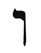
Yaratılış Kitabı Sefer Yetzirah’a göre Ibranice harf Vav Boğa burcuna atanmıştı. Vav’ın anlamı “çengel” veya “çividir” ve şekil de gerçekten keskin bir çiviyi andırır. Boğa bir çivi gibi iki nesneyi birleştiren bir fiziksel birleştiricidir.
Boğa, eski simya formülü “yukarıda olduğu gibi aşağıda da” ifadesininin simgesidir. Simya Yaşam Ağacını, bu antik formülün simgesi, yani gökleri yeryüzüne bağlayan bir çivi olarak gördü. Ağaçlar doğayı simgeler; bu da Boğanın spiritüellikle maddeciliği fiziksel olarak birbirine bağladığının işaretidir. Yoga sözcüğü, Sanskritçe bağlamak anlamına gelen “yoke” (boyunduruk) sözcüğünden gelmektedir ve yoga uygulaması, bedeni ruha bağlamak için tasarlanmış bir spi-ritüel sistemdir. Vav harfi, Boğanın lüksün ve maddeciliğin ötesinde bir burç olduğunun kanıtıdır. Sağlam bir şekilde toprağa oturmuş olan Boğa burcu, bir merdiven veya bir bezelye ağacı gibi ilahi güce yükselir. Hiçbir dine veya spiritüel uğraşa inanmayan tanrıtanımazlar ve bilinemezciler bile doğanın o muhteşem ve açıklanamaz gücüne (Boğa) inandıklarını kabul etmişlerdir.
İbranicede Vav harfi, ve sözcüğü gibi bir bağlaçtır- erkekler ve kızlar, siyah ve beyaz gibi. Boğa burcu da aynı şekilde iki ayrı şeyi birbirine çiviler. Ek olarak Tevrat Vav’ı, fiilleri gelecekten geçmişe dönüştürmek için kullanır; bu da Boğa burcunun (ve maddi dünyanın) sadece uzayda nesneleri değil, zamanda eylemleri de birleştirdiğinin işaretidir. Bu kavram bazı insanları karışık felsefi tartışmalara itelebilir ama Vav’ın ve Boğanın basit gerçeği, maddi dünyamızdaki her şeyin Bir olduğudur. Boğanın çivisi ile birleştirilen tüm nesneler ve tüm zaman (geçmiş, şimdi ve gelecek) birdir. Boğa ve bu maddi dünya, yaşamın ve birliğin gelişip serpildiği bir kaptan başka bir şey değildir.
Bir şeye veya bir kimseye bağlanmak istediğiniz zaman Vav harfi ile meditasyon yapın. Bolluk veya yetenekleriniz için bir çıkış istediğinizde yine bu harfi kullanın. Ek olarak, bu hafta en az iki yoga dersine gidin ve Ağaç Pozunu öğrenin.
Bedenin Bölümleri
Boğa burcu boynu, boğazı ve tiroid bezini yönetir. Bedendeki en dar bölgeleri, diğer bir deyişle enerji bloklarına ve hastalığa açık yerleri gözetir. Örnek olarak, bağışıklık sistemimize aşırı yüklendiğimizde boğazımız ağrır. Başımızın tepesinden ayaklarımızın tabanlarına kadar giden bir enerji akışını düşünecek olursak boğazımız, trafiğin kolayca tıkanacağı bir darboğazdır. Bu tehlikeden dolayı birçok dini gelenek boğazdaki tıkanıklığın açılması için, her gün şarkılarla dua edilmesini, ilahi söylenmesini teşvik eder.
Boğaz hastalıkları aynı zamanda ihtiyaçlarınızı yeterince iletemediğinizin bir işareti olabilir. Belki de öz-değerinizi ifade edemiyorsunuz. Bu hafta sesinizi çıkarmaya çalışın. Aynı zamanda, Yaşam Ağacı ile ilişkili Tanrının adlarını (Bakın, 10. Bölüm) veya kendinize yakın bulduğunuz herhangi bir mantrayı mırıldanabilirsiniz. Bu güçlü seslendirmeler boğazınızda, enerjinin düzgün bir şekilde akmasını sağlayacak bir şerit açacaktır.
Ayrıca çoğu kültür, boynu özellikle erotik veya duyusal addeder. Kadınlar genelde duyusallık burcu ile ilişkili beden bölümünü takılar ve kokularla vurgulamak ve zenginleştirmek istercesine Boğa boyunlarını süslerler.
Boğa Burcunun Rengi: Kırmızı-turuncu
Boğa burcunun rengi kırmızı-turuncudur- daha açık ve sakin bir kırmızı ile daha koyu ve zengin bir turuncu. Gar-drobunuzda, ofisinizde ve yatak odanızda yeteri derecede Boğa olup olmadığını kontrol edin. Bereketin ve duyusallığın enerjisini çekmek için kırmızıyı ve turuncuyu harmanlanmış olarak veya yanyana kullanabilirsiniz. Isterseniz Vav harfini kırmızı-turuncuya boyayabilir ve meditasyonlarınızda kullanabilirsiniz.
Boğa Haftasında Nelere Odaklanmalıyım?
Bu hafta yeteneklerinizin listesini yapın ve onları takdir etmeye çalışın. Boğa burcu, kendinize değer vermeniz için sizi teşvik eder. Kendinizi memnun edin ve şımartın. Bir kaplıcaya gidin, masaj yaptırın, lezzetli tatlılar yiyin ve kendinize bir hediye alın. Boğa size, bunu hak ettiğinizi söyler. Berekete ve iyiliğe açık olduğunuzu evrene gösterin.
Ek olarak, bahçede ve doğada zaman geçirin. Müzelere, sanat galerilerine ve konserlere giderek Boğayı uyarın. Beş duyunuzu da harekete geçirdiğinizden emin olun.
Her zamanki gibi, Boğa burcu ile ilgili eş-zamanlılıkla-rı kollayın ve size yöneltilen sembolik ve pratik mesajları yorumlamaya çalışın. Burcun simgeleri: Boğa, beş duyu ile ilgili herhangi bir şey (kokular, tatlar/yiyecekler, zengin ve ağır tatlılar, müzik, gürültü, dokunuşlar, çarpışmalar, sarılmalar, sanat), doğa, ağaçlar, kir, boğaz, ses, para, finans, borsa, çiviler ve boyunduruklar, öz-saygı, yetenekler, kırmızı-turuncu, inatçılık veya inatçı insanlar, lüks nesneler, Cuma, Venüs, Buda veya Budizm, Shakespeare-vari oyunlar, zevk.

Bir şeye veya bir kimseye bağlanmak istediğiniz zaman Vav harfi üzerinde meditasyon yapın. Bolluk veya yetenekleriniz için bir çıkış istediğinizde yine bu harfi kullanın. Ek olarak, bu hafta en az iki yoga dersine gidin ve Ağaç Pozunu öğrenin.

Boğa Haftası Kontrol Listesi
- Haritanızda Boğa burcunu bulun ve o alanda Boğanın derslerini- zevk, duyusallık ve öz-değer- uygulayın.
- Beş duyunuza bağlanın. Çalışırken bir müzik çalın, kokulu bir mum yakın, insanlara sarılın ve onlara dokunun, nefis yiyecekler yiyin ve sanat izleyin.
- Her gün şu Boğa olumlamasını okuyun: “Ben kendimin spiritüel kılavuzuyum. İç zenginliğimi, maddi bolluğa dönüştürme yeteneğine sahibim. Başarıyı ve parasal bereketi hak ettim.”
- Kendinizi şımartın.
- Tüm yeteneklerinizin listesini yapın ve her birine ne kadar zaman ve para yatırdığınızı yazın.
- Misyon bildirinizi yazın.
- Doğaya gidin.Ormanda yürüyüş yapın.Yereyatınvetoprağı hissedin.
- Bir ağacın altına oturun ve özdeğer düşüncelerinizi güçlendirin.
- Yoga yapın.
- Vav harfi ile meditasyon yapın.
- Bir ağaç dikin.
- Kırmızıturuncu renkler giyin.
Boğa Burcu Ritüeli: Ağaç Dikmek
Boğa burcu Doğa Anayı olduğu gibi ilkbaharı da yönettiği için bir ağaç dikerek, kendi Boğa Yaşam Ağacınızı dikerek, bu arketipi onurlandırın. Ilkönce, en önemli yeteneğinizi- geliştirmeyi ve güçlendirmeyi arzuladığınız yeteneğinizi- yazın. Yeni diktiğiniz ağacın yanına bu kâğıdı gömün. Eğer ağaç dikecek yeriniz yoksa bir bitki veya küçük bir çalılık dikin.
İzleyen iki hafta süresince bu ağacı/bitkiyi her gün ziyaret edin ve beslemeye karar verdiğiniz yetenek üzerinde meditas-yon yapın. Ağacın/bitkinin büyüyüşü, yeteneğinizin gelişmesini yansıtacak.
Eğer bir ağaç dikecek yeriniz veya durumunuz yoksa bizim Yaşam Ağacı ormanımıza bağışta bulunabilirsiniz: www.Tre-eofLifeGrove.org (ABD’deki ağaçlar için) veya www.Treeof-LifeGrove.org.il (İsraildeki ağaçlar için).

John Muir, ABD’de milli park kavramını bulan ve yok etmediğimiz şeyleri koruma açısından tüm dünyaya ilham veren inanılmaz bir doğacı idi

Ünlü Boğalar
John Muir, Rudolph Valentino, William Shakespeare, Buda, Sigmund Freud, Eva Peron, Barbara Streisand, Salvador Dali, George Lucas, Karl Marx, Vladimir Lenin, Duke Ellington, Sokrates.
İkizler: Elçi
21 Mayıs-20 Haziran
Anahtar İfade: “Düşünüyorum”- “Düşünüyorum, o zaman varım.”
Genel Nitelikler: Zeki, aydınlatıcı, çok yönlü, çevik, uyabilen, güçlü iletişim becerileri, iyi bağlantıları olan, becerikli iletişim ağı kurabilen, yazar, konuşmacı, elçi
Karanlık Yön: Aşırı konuşkan, abartıya eğilim, yanıltıcı, yalan ve hırsızlığa yatkınlık, duygusal uzaklık, değişken ruh halleri, çifte kişilik, aşırı akılcılık
Element: Değişken hava
Gezegen: Tanrıların elçisi Merkür
Gün: Çarşamba
Tema: Esneklik
Beden Bölümleri: Eller, akciğerler, sinir sistemi
Renk: Turuncu
Değerli Taş: Saydam kristal
Müzik Notu: Re- Beatles’ın en sevdiği nota
İbranice Harf: Zayın 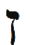
Harfin Kabalistik Anlamı: Akılcılığın kılıcı
Yaşam Ağacındaki İzlek: İzlek 6, Anlayış ile Güzelliği birleştirir
Tarot Kart: Aşıklar
Filmler: Amerikan Güzeli, Rastlantının Böylesi
Olumlama: “Yaşamıma doğru ilişkiyi çekiyorum. Çevremi beni anlayan ve beni seven insanlarla dolduruyorum. Yaratının geri kalan kısmına vereceğim ve onlarla paylaşacağım bilgiye kolaylıkla erişiyorum.”
Genel Bakış
Koç burcu saf erkeksi gücü ve Boğa burcu kadınsılığı simgelerken Ikizler burcu, onların ve aslında tüm karşıt güçlerin birliğini kapsar. John F. Kennedy’nin, Henry Kis-singer’ın ve Bob Dylan’ın burcu olan Ikizler, kozmosun iletişimcisidir, elçisidir. O, konuşmadan önce düşünmemizi ve davranmadan önce konuşmamızı öneren burçtur. Ikiz-ler, yaşamımızda bulacağımız herhangi bir boşluğu veya uyumsuzluğu kapatmak için zekâyı ve iletişimi kullanır. Iş, müzakere, yazarlar, pazarlama ve halkla ilişkiler burcudur. Ikizler haftasında iletişim becerilerinizi geliştirecek ve başkaları ile nasıl etkileşime girdiğinize dikkat edeceksiniz. Ikizler burcu, müzakere ve iş becerilerinizi geliştirecek. Ve siz, ortak bir amaç için insanları biraraya getirmeyi ve kendi önemli elçilerinizi tanımlamayı öğreneceksiniz.
İkizler burcunun enerjilerine dalmadan önce, bu bölümün uzun ve konuşkan olduğunu belirtmek isterim. Bunun nedeni, bu kitabın konferanslarımı temel aldığıdır ve ben ne zaman bu burç hakkında konuşsam konferansın hızının ve süresinin uzadığına tanık olmuşumdur.
İkizler Burcunun Sahası
İkizler elçilerin ve habercilerin burcudur. Ikizler, zodya-kın pazarlamasını ve tanıtımını yapar. Gazetelerin günlük fal köşeleri, internetteki astroloji sitelerinin bolluğu, dünyanın dört bir yanındaki barlarda ve kafelerde herkesin birbirine “Burcun ne?” diye sorması, ikizlerin durmaksızın çalıştığını gösterir. Ikizler marka uzmanıdır.
Zodyak yılında Ikizlerin konumu, bu çevik ve konuşkan burcun gerçek anlamını ortaya koyar. Ikizler ilkbaharın sonunda gelir ve değişken hava burcu olarak, yılın sürmesine ve yaz döneminin başlamasına olanak tanıması için Boğayı ilkbaharı özgür bırakması konusunda ikna eder. Daha önce gördüğümüz gibi Boğa en inatçı ve en takılı kalmış burçtur. Ikizler tüm kurnazlığını, hünerini ve iletişim becerilerini kullanarak Boğayı güç koltuğundan indirmeye çalışır. Ve her yıl tüm engellere rağmen Ikizler bu işi başarır.
Elçi görevi aynı zamanda, Koç ile Boğayı evlendirmek veya onları uzlaştırmak işini de içerir. Mars tarafından yönetilen Koç, doruktaki erkeği, Venüs tarafından yönetilen Boğa, doruktaki kadını simgeler. Ikizler bu ikisi arasındaki ilişkiyi sağlar. Bu önemli görevin karşılığında Tarot, Ikizler kardı olarak Aşıkları atamıştır. Bu arketip, etkili iletişim teknolojisi ile tüm karşıtları birleştirir. ikizler lisan uzmanıdır ve dayanılmaz konuşması ile ikiyi bir yapar.
İkizler bunu nasıl yapar? Bu gizemli hünerin anahtarı burcun adında yatmaktadır. Ikizler burcunun Ingilizce karşılığı Gemini, Latincede “ikiz” sözcüğünden gelmektedir. Bu ikizlerin genleri aynıdır ama biri erkek, diğeri dişidir. Aynı rahimden aynı anda doğmalarına rağmen karşıttırlar (erkeksi ve kadınsı). Ve hem aynı hem de değişik olmaları sayesinde ikizler, gizemcilerin “Tanrının Birliği” ve “yaşamın çokluğu” dedikleri arasında mantıklı bir köprü oluşturur. Ikizler burcunun aynı anda mantıklı ve mantıksız olma gibi çelişkili bir yeteneği olması bizim, “her şey Birdir” belitindeki (aksiyom) ikiliği, bu Birlik kendini birçok birey-selleşmiş ve görünürde apayrı yaratıklarda göstermesine rağmen, anlamamıza yardım eder.
İkizler burcu- ikizler, iki olan- ikiliği içerir. Ikizler, evreni anlamamıza yardımcı olmak için mantık ve lisan araçlarını kullanır. Ikizler bilgiyi saklamazlar, ketum değillerdir. Öğrendikleri her şeyi paylaşırlar. Aldıkları her şeyi verirler. Kitabım Israil’de ilk çıktığında kısa zamanda insanlara ulaşabilmek için bir yol arıyordum. Yakın arkadaşım Ikiz-ler burcundan No Tishby, kitap için bir olay düzenlemeyi önerdi. Kendisi Israil’de büyük bir şöhrettir ve kırksekiz saat içinde, Israil’deki tüm medyayı ve ünlü yıldızları kitap imzalama günü için biraraya topladı. Herkes güzel Ikizlerin bir mesajı olduğuna inanıyordu ve onun söyleyeceklerini dinlemek için koşarak geldiler. Bu fırsatı kaçırmak istemiyorlardı.
Elçiler
Tüm iyi elçiler gibi Ikiz-ler taraf tutmazlar. Bir çevirmenin, arabulucunun veya savaş alanındaki gazetecinin nesnelliğini korurken herkese sadık olduklarını belirtirler.
İkizler aynı zamanda, iş ve müzakere burcudur. Eski uygarlıkların ilk yazılı metinleri, tanrılara övgü, kanunlar veya tutkulu aşk şiirleri içermiyordu. Tersine, ilk yazılı metinlerin yüzde 85’i ticaret listeleri idi: “5 koyun, 3 çuval arpa.” Geri kalan metinler, koyun ve arpa sözcüklerinin nasıl yazılacağını açıklayan ve böylece tüm tüccarların aynı sayfada- bu durumda aynı tablette- toplanmalarını sağlayan sözlüklerdi. Yazılı iletişim baştan beri iş ile ilgiliydi.

Bu hafta bir elçi olmayı deneyeceksiniz. Kendinizi tüm iletişim biçimlerine açın ve başkalarının da yararlanmasını sağlayın. Radyoda bir haber duyduğunuzda buna ihtiyacı olabilecek birisi var mı diye düşünün ve haberi o kişiye ulaştırın. Tetikte ve esnek olun, tartışmayın. Haberi, duygusal bir bağ veya yargı olmadan iletin.

Bugün Ikizler burcu faks, e-posta, telefon, internet, mektup, kitap ve ticaret gibi çoğalmakta olan tüm iletişim ve ticaret araçlarını yönetmeyi sürdürür. Bugünün teknolojisi Ikizleri, yerkürenin her köşesini birbirine bağlamasını sağlamıştır. Boğanın ardından beliren Ikizler, bir önceki arketipin yarattığı sanatı satar ve tanıtır. Boğanın ürettiği para ve finans ile ticaret yapar. Dünya Ticaret (Ikizler burcu) Merkezi bir zamanlar, New York’taki Ikiz (Ikizler burcu) Kulelerdeydi. Ikiz Kuleler, karma ve zorluklar (meydan okumalar) gezegeni Satürn, Ikizler burcunda iken 2001’de yok edildi.
Bu hafta bir Ikizler olacaksınız. Bir elçi olmayı deneyeceksiniz. Kendinizi tüm iletişim biçimlerine açın ve başkalarının da yararlanmasını sağlayın. Radyoda bir haber duyduğunuzda buna ihtiyacı olabilecek birisi var mı diye düşünün ve haberi o kişiye ulaştırın. Tetikte ve esnek olun, tartışmayın. Haberi, duygusal bir bağ veya yargı olmadan iletin.
Duymaktan Hoşlandığımız Yalanlar
İkizleri hemen tanırsınız. Çabuk konuşurlar ve kendilerini ifade etmek için ellerini kullanırlar. Cümlenizin ortasında sözünüzü keserler çünkü ne söylemek istediğinizi biliyorlardır ve hemen bir yanıt hazırlamışlardır. Sıkıldıkları zaman yüzlerini kaşırlar. Hedefinize doğru ilerlemede yardım edecek insanları size tanıştırmakta ısrar ederler. Onlar birleştiricidir. Ikizlerin ağzından çıkan her şeye inanmayın. Bazen, yaymak istedikleri habere bir iki ayrıntı eklerler. Bilgiyi zengin göstermek, daha eğlendirici yapmak ve onu satmak için abartırlar. Gece geç vakit yayımlanan uzun reklamlarda sunulan bazı çılgın vaatleri düşünün. Hatta herhangi bir ilandaki iddiayı düşünün. Bunların hepsi Ikizlerin ustalığından kaynaklanmaktadır. Onlar dünyamızın masalcılarıdır. Bu onların işidir. Eğer masal/öykü dinleyicinin ilgisini çekecek kadar güçlü değilse o zaman Ikizler onu bir miktar abartı ile süsler. “Iki haftada 10 kilo kaybedin.” “Irakta güvenliğimizi tehdit eden kitle imha silahları var.” Tabii, mümkündür. Tabii.
Bilgi çağında her taraftan uyarıcı yağdıkça farkedilmek zordur. Ikizler bu yığının arasından sıyrılmak için her şeyi dener. Los Angeleste birçok ünlü oyuncu ve müzisyeni temsil eden tanınmış bir halkla ilişkiler şirketinde çalışan bir arkadaşım var. Onun müşterilerinin çoğunu belki de posterlerden ve sokak afişlerinden size gülümserken gördünüz. Arkadaşım şirketinin, sıklıkla bilgisayar-grafik tasarımcıları ile çalıştığını ve bu tasarımcıların, ünlülerin tanıtım fotoğraflarını dönüştürdüğünü-onları biraz daha ince, biraz daha kaslı, tenlerini daha pürüzsüz, daha yanık ve genel görünümü daha çekici yaptıklarını- anlattı. Kalçaları çerçeveye göre ayarladıklarını, sarkık karnı düzleştir-diklerini ve kırışıklıkları yok ettiklerini anlattı. Evet, fotoğraflar yalan söyler ama Ikizlere göre onlar, duymaktan hoşlanacağımız müthiş yalanlardır.
İşte size bir Ikizler olma yolu. Buna, üç ile beş dakika arası kanunu deniyor. Bu hafta bir sosyal olaya gidin. Bu bir galeri açılışı, bir kokteyl parti, bir ağ oluşturma partisi veya tanımadığınız birçok insan görebileceğiniz bir bar veya kafe olabilir. Buraya vardığınızda ilk gördüğünüz insanla konuşmaya başlayın. Sonra, tanımadığınız bir insanla üç ila beş dakikadan fazla konuşmamanız gerektiğini söyleyen kanunu uygulayın. Ne az ne de fazla. Beş dakikayı doldurunca konuşmayı saygı içinde bitirin ve bir sonraki kişiye ilerleyin. Konuşmayı bitirenin ve ayrılanın siz olmasına dikkat edin. Bu durum, diğer kişide daha fazlasını isteme hissi uyandıracaktır.
Özel İkizler Burcunuz
İkizler burcu haritanızda bir elçi olarak sivrileceğiniz alanı gösterir. Aynı zamanda, sizi bekleyen enerji hazinelerini usta bir iletişimle ortaya çıkaracağınız yaşam alanını vurgular. Ikizler evi, ikilik yaşayacağınız sahayı da belirtir. Örnek olarak, Ikizler burcu onuncu kariyer evinde olan bir adam iki ayrı kariyer ile ilgileniyor olabilir. Dördüncü ev ve aile evinde ikizler burcu olan bir kadın, sürekli Los Angeles ile New York arasında seyahat edip duruyordu. Bu tarz Ikizler ikiliğini çözmenin yolu ikiden birini seçmek değil, ikiyi bir yapmanın yolunu bulmaktan geçer. iki ayrı yerde evi olan kadın, örneğin, çareyi sevgilisi ile evlenip Miami’ye taşınmakta buldu.
Haritanıza bakın ve ikizler burcunu bulun. Burcun yönettiği evi bulduktan sonra bu evi iletişimi geliştirmek, halkla ilişkiler/ tanıtım yürütmek veya bir bölünmeyi birleştirmek çabası ile ilişkilendirin.
İkizler Birinci Evde (Yükselen Burcunuz): Herkesi ve her şeyi büyüleyici bulan çok meraklı bir insansınız. Konuşuyor ve konuşuyorsunuz ve rahatlamakta, sakin oturmakta zorlanıyorsunuz. Entelektüel bir lider ve güçlü bir iletişimci olabilirsiniz. ikizler haftasında bedeninize, görünüşünüze ve insanların sizi nasıl gördüğüne odaklanın. Bu sizin kişisel tanıtım zamanınızdır. Herkesin sizin kim olduğunuzu bilmesini sağlayın.
İkizler İkinci Evde: Halkla ilişkiler, pazarlama, reklam ve müzakere konularında çok büyük yetenekleriniz var. Sözcüklerle değişik bir ilişkiniz var, bu da sizin yazarak ve iletişim kurarak para kazanabileceğinizi gösterir. Birleştirilmeye ihtiyacı olan iki ayrı yeteneğiniz veya para kazanma olanağınız olabilir. ikizler haftasında yetenekleriniz ve finansınız ile ilgili çalışma yapın ve evrenin gelirinizi nasıl desteklediğini görün.
İkizler Üçüncü Evde: Doğuştan bir yazar ve elçisiniz. Göreviniz insanlığa mesaj iletmek. Çabuk ve çevik bir zihniniz ve birçok ilgi alanınız var. Uzdilli ve zekisiniz, çekici ve sosyalsiniz. Belirli bir konu üzerindeki anlayışınızı derinleştirmek için tüm gücünüzü kullanmayı öğrenmelisiniz. Komşularınız ve kardeşleriniz ile genelde iyi geçiniyorsunuz. ikizler haftasında düşünme, konuşma ve yazma tarzlarınız ile ilgilenin. Komşularınız ve kardeşleriniz ile ilişkilerinizi yenilemeyi unutmayın.
İkizler Dördüncü Evde: Eviniz entelektüel ilgilerinizi yansıtıyor. Eğer bir apartımanda yaşıyorsanız mümkün olan en üst katı seçin. ikizlerin özüne erişmek için bir manzara yardımcı olabilir. Sığınacak liman olarak kabul ettiğiniz iki eviniz veya iki yeriniz olabilir. Aile üyeleri arasındaki iletişim sizin için çok önemli. ikizler haftasında aile üyeleri ile ve evinizde zaman geçirin.
İkizler Beşinci Evde: Çok büyük entelektüel yaratıcılığınız var. Çocuklarla ve oyunsever, yaratıcı insanlarla iletişim kurma yeteneğiniz var. Elleri, akciğerleri (koşma) ve zihni (satranç) ilgilendiren sporlar size iyi geliyor. Çocuklarınız zeki ve onlarla iyi ilişkiniz var. ikiziniz olabilir. Aşk yaşamınız dalgalı ve aynı anda iki sevgiliniz olabilir. ikizler haftasında aşk yaşamınızı ve yaratıcılığınızı vurgulayın. Bu süre içinde, eğer gerekiyorsa, çocuklarınızla ilişki yenilemeniz iyi olabilir.
İkizler Altıncı Evde: işinizde bir elçi- yazar, pazarlamacı veya tüccar- olduğunuz zaman başarılı oluyorsunuz. Yazarak insanlığa hizmet edebilirsiniz. Aynı anda iki ayrı işte çalışabilirsiniz; zamanla bunları birleştirmeniz iyi olacak. Sinir sisteminiz, elleriniz ve akciğerleriniz ile ilgilenin. Düşünme ve nefes alma tarzınız sağlığınızı etkileyebilir. Koşmak sizin için tedavi edici olabilir. ikizler haftasında beslenmenize, sağlığınıza ve işinize odaklanın.
İkizler Yedinci Evde: iletişim kuran, zeki ve meraklı insanlar ilginizi çekiyor. Ortağınız/eşiniz zekânızı uyarmalı, yoksa sıkılacak ve aranmaya başlayacaksınız. Aynı anda iki kişi ile ilgilenebilirsiniz. Yalan söylememeye çalışın. ikizler haftasında ortaklığınıza odaklanın ve hasımlarınızla iletişim kurmak ve uzlaşmak için biraz zaman ayırın.
İkizler Sekizinci Evde: Başka insanların yetenek ve paraları ile ilgili anlaşmalarda ve müzakerelerde başarılı oluyorsunuz. iletişim tarzınız, hem fiziksel hem de sözel olarak cinsellikle ilgili. Ortağınızın yazma ve iletişim konularında yeteneği olabilir ve siz onun becerilerinden para kazanabilirsiniz. ikizler haftasında cinselliğinizi ve samimi yakınlık ihtiyacınızı ifade etmeye odaklanın.
İkizler Dokuzuncu Evde: Yabancı dil konuşma ve belki de yabancı kültürlerde iş yapma konusunda çok güçlü bir ihtiyaç duyuyorsunuz. Evlilik ile gelen akrabalarınızla iyi iletişim kurmak çok önemli. Siz sadece bir filozof değilsiniz, felsefenizi yaşamınızda da uyguluyorsunuz. Bu hafta özellikle iş için seyahat etmeye çalışın. Evlilik ile gelen akrabalarınızla veya yabancı arkadaşlarınızla anlaşmazlıklarınızı düzeltmenin tam zamanı.
İkizler Onuncu Evde: Arasından seçmeniz gereken iki kariyeriniz var. Birleştirme, ağ oluşturma, yazma ve iletişim kurma içeren mesleklerde başarılı olabilirsiniz. Bir müzakereci ve birleştirici olarak tanınacaksınız. Değişik ilgi alanlarınız var ama bunları tutarlı bir yolda toplamanız iyi olacak. ikizler haftasında, kariyerinizde iletişime odaklanın. Bu hafta dünyevi hedeflerinizde ilerleme kaydedebilirsiniz.
İkizler On birinci Evde: Birçok ilginç arkadaş ve değişik gruplarla birlikte oluyorsunuz. Arkadaşlarınız sizden daha genç ve konuşkan. Yaşama esprili bakış açınızdan dolayı popüler ve sevilen bir insansınız. ikizler haftasında uzun zamandır konuşmadığınız arkadaşlarınızla iletişim kurun.
İkizler On ikinci Evde: Zekânız ve sözcükleriniz gizemcilik ve spiritüellikle ilişkili. spiritüellik ile ilgili okumaya meraklısınız. Geçmiş bir yaşamda yazdığından dolayı şiddetle cezalandırılmış bir yazar olabilirsiniz ve bu yüzden bu yaşamda yazmaya çekiniyor olabilirsiniz. Başkaları hakkında dedikodu yapmamaya, iftira atmamaya çalışın, güçlü düşmanlar yaratabilirsiniz. Bu hafta bir süre için ortamdan uzaklaşmaya, meditasyon gibi spiritüel etkinlikler uygulamaya ve ihtiyacınız olmayan şeylerden kurtulmaya çalışın.

Bu hafta, tanımadığınız birçok insan görebileceğiniz bir sosyal olaya gidin. Buraya vardığınızda ilk gördüğünüz insanla konuşmaya başlayın ama üç ila beş dakikadan fazla konuşmayın. Beş dakikayı doldurunca konuşmayı saygı içinde bitirin ve bir sonraki kişiye ilerleyin. Konuşmayı bitirenin ve ayrılanın siz olmasına dikkat edin. Bu durum, diğer kişide daha fazlasını isteme hissi uyandıracaktır.

İkizler ve İkili Dil
Dünyanın her yerinde- Çin’de, Hindistan’da, Bulgaristan’da, Avrupa’da, Brezilya’da, Hollanda’da, Dubai’de ve Zimbabwe’de- bilgisayarlar aynı dili konuşmakta. Bu dilin sadece iki simgesi var: Sıfır ve bir. Buna ikili dil deniyor. Annenizin dijital imgesi, Beethoven’in beşinci senfonisinin dijital kaydı veya e-posta olarak gönderdiğiniz bir aşk mektubu, hepsi ikizlerin dili ile ifade edilmekte.
Uzun süre, bilgisayarların neden bağımsız bilince sahip olamadıklarını anlayamadım. Yapay zekâ neden başarısız olmuştu? Ama ikizler burcu hakkında düşündükten sonra sorunun farkına vardım. Bilgisayarlar her şeyi sıfırlara ve birlere indirgiyorlar; dünyayı iki güce bölünmüş olarak “görüyorlar.” Bu ikilik takıntısına bazı gizemci öğretilerde de rastlarız. Kabala, örneğin, yaşamı vermek ve almak olarak ikiye böler. Taoizm, yaşamın yin ve yang arasında bir dans olduğunu ileri sürer. Budizm, yaşamın Biçim ve Boşluktan ibaret olduğunu söyler. Simya dünyayı, yukarısı ve aşağısı arasındaki ilişki olarak görür ve astroloji yaşamı, gün içindeki aydınlık ve karanlık saatlerin oranı olarak algılar. Ama bu spiritüel öğretilerin hepsi, bu ikilikleri bir yapabilmek için yöntemler sunar; bilgisayarlar ise sonu gelmeyen doğru/yanlış, evet/hayır, kapalı devre/ açık devre, sıfır/bir mantıksal döngüleri içinde hapsolmuştur.
İnsanlar, diğer duyusal varlıklar gibi iki cinsiyete ayrılmıştır- dişi ve erkek. Erkeğin cinsel organı bir sayısına (1), kadının cinsel organı ise sıfır sayısına (0) benzer. Cinsel birleşme sonucunda insanlar, bir ile sıfırı birleştirmeyi başarırlar ve erkek ile kadının cinsel organlarının birleşmesi ile yeni bir yaşam ortaya çıkar. Kadın ve erkek aşk yaparak çocuk denilen yeni bir biyolojik “makine” yaratabilir. Dünyanın her yerindeki bilgisayar programcıları, bilgisayarların insan gibi çalışmaları ve “zekâ” sahibi olmaları için ellerinden geleni yapıyorlarsa da bilgisayarlar henüz sıfırları ve birleri yanyana getirmenin ötesine geçemediler. Sıfırları ve birleri kaynaştırma yetileri yok. Yeni bir zekâ yaratamıyorlar ve bu yüzden sanırım, bir farkındalık veya ruh sahibi olamıyorlar.
Tarot bu çözümlemeyi destekler. Tarot’da ikizler burcu Aşıklar kardı ile temsil edilir. Bu kart, ikili dili oluşturan sıfırların ve birlerin sonsuz zincirinin birbirleri ile iletişime girmeleri ve aşk yapmaları konusunda, bilgisayarı- veya onu geliştiren insanları- uyarır. Ancak o zaman bilgisayarlar yeni tarzda bilinç geliştirebilecekler. Açıkça belli oluyor ki iki basamağın birbirine aşık olması için çok becerikli bir programcı gerekmekte. Belki de programcıların biraz çöpçatanlık yapmayı öğrenme zamanları geldi. Büyük bir olasılıkla çözüm, tek bir parçacığın aynı anda iki ayrı yerde olabileceğini (ikizler burcunun simgesi olan karşıtlık ve aynılık fikri) söyleyen kuan-tum kuramından gelecek.
Bilgisayarlar bu ikilik sorununu çözemeyebilir ama siz çözebilirsiniz. ikizler haftasında, tüm sıfırlarınızı ve birlerinizi bir araya getirdiğinize emin olun. Yaşamınızdaki ikiliği bulun. Aşk yapması veya birleşmesi gereken hangi karşıtlar arasında sıkıştınız? Bu zıtlaşan seçenekler arasından birini seçmek yerine onları nasıl evlendirebilirsiniz? Bu ikilikleri ararken iletişiminizi ve müzakere becerilerinizi geliştireceksiniz.
Adem ile Havva: İlk İkizler
Yaratılış Kitabının ilk yaratılış öyküsünde Tanrının Adem ile Havva’yı kendi suretinde ve aynı anda yarattığını okuruz. “Tanrı insanı kendi suretinde yarattı. Böylece insan Tanrı suretinde yaratılmış oldu. insanları erkek ve dişi olarak yarattı” (Yaratılış 1:27). Bu öyküye göre Adem ile Havva doğduklarında hem sevgili hem de ikizdiler. Bu kavram, yaygın inanış sahibi dini liderlerin hoşuna gitmeyebilir ama astroloji ve Tarot sistemi bu önermeyi doğrulamaktadır. Tarot Aşıklar kardına bakarsanız Cennetten bir manzara göreceksiniz. Adem sağda duruyor ve solunda Havva bir meleğe bakıyor. iki sevgilinin/ikizin arasında iyi ve Kötünün Bilgi Ağacı yer almış. iyi ve kötü, bir ve sıfır, evet ve hayır- ikizler dünyamızın ikilikleri.
Adem bilinci simgeler, Havva bilinçaltını. Akılcı zekâmızın simgesi Adem, bilinçaltının veya varlığımızın gizemsel yönlerinin simgesi Havvaya bakarken tepede süzülmekte olan meleğin simgelediği ilahi yüksek nefsi anlamaya ve yaşamaya çabalar.
Bir gün Hollywood’da Sunset Bulvarı’nda arabamı sürerken bu simgelerin zaman öteliğini ve evrenselliğini anladım. Büyük bir reklam panosunda bir erkek ve bir kadın yanyana duş alıyorlardı. Her ikisi de çok seksi ve hoştular ama reklamın mesajı bu değildi çünkü kusursuz bedenlerinin PhotoShop’ta oluşturulduğunu, hiç olmazsa kesilip biçildiğini biliyordum. Derindeki mesaj sağdaki erkeğin, solda duran ve duştan akan suya bakmakta olan kadına bakması idi. Karşımda Adem ile Havva duruyordu. Bunun anlamı da erkeksi enerjinin, ilahi kaynak ile temas edebilmek için kadının enerjisine ihtiyacı olduğu idi. Bu simgeler bize, ikizler burcunun ve tüm iletişim araçlarının gerçek misyonunun, yaşamın erkeksi ve kadınsı, etkin ve alıcı yönlerini birleştirmek olduğunu göstermekte.
Siz dahil herkesin bir erkeksi Adem yönü, bir de kadınsı Havva yönü vardır. Erkeksi yön iletişime girer ve kadınsı yön dinler. iyi bir iletişimci olmak için bu iki enerjinin içinizde birbirini tamamlamasını sağlamalısınız. Eğer genelde çok konuşuyorsanız bu hafta daha az konuşmaya ve daha çok dinlemeye çalışın ve eğer genelde pek konuşmuyorsanız o zaman sesinizi çıkarmaya çalışın. Böylelikle insanlarla gerçek ve anlamlı iletişime girdiğinizi göreceksiniz.

İkizler haftasında, yaşamınızdaki ikiliği bulun. Aşk yapması veya birleşmesi gereken hangi karşıtlar arasında sıkıştınız? Bu zıtlaşan seçenekler arasından birini seçmek yerine onları nasıl evlendirebilirsiniz? Bu ikilikleri ararken iletişiminizi ve müzakere becerilerinizi geliştireceksiniz.

Bir yıl kadar önce Türkiye’de dinamik ve güçlü bir iş adamının haritasını yorumladım. ikizler burcu yedinci evde idi (ilişki evi). iş adamı elli sekiz yaşında, hâlâ kalıcı ve anlamlı bir aşk ilişkisi yaşayamamıştı. On dakika bu konu üzerinde sızlandı. Temel yakınması, çok verdiği ve karşılığında çok az aldığı idi. Bir ara biraz bilgi vermek istedim ama Türk çevirmen söylediğimi aktarıncaya kadar iş adamı yeni bir soru ile sözümü kesti. Sonunda, dikkatini bana yöneltmesi için onu uyarmak zorunda kaldım; bilgi edinmek için ücret ödediği görüşme sırasında bile kendi sözcüklerini yağdırıyordu. Bu görüşme sırasında olanların, yaşamındaki olayları yansıttığını belirttim. Sürekli konuşuyor ve konuşuyordu. Dinleyemiyor-du. Sonunda onu susturan basit bir soru sordum: “Neden sessizlikten bu kadar korkuyorsunuz?” Ona, enerji yaymakla çok meşgul olduğunu, bu yüzden Tanrının veya insanların ona ulaşmasına izin vermediğini söyledim. Ara vermeden o kadar çok soru soruyordu ki yaşam onu yanıtlayamıyordu. Görüşmenin son on dakikasında sessizce oturdu ve dinledi. Sonunda alabilmişti.
İyi ve Kötünün Bilgi Ağacı
Yaratılış kitabının ikinci bölümünde Tanrının Adem ile Havva için bir bahçe yarattığını ve bahçenin ortasına iki ağaç diktiğini okuruz- Ölümsüz Yaşam Ağacı ve iyi ve Kötünün Bilgi Ağacı. Bu simgelerle Tevrat, özgür irade kavramını sunar. (Hiçbir şeyin yıldızlarla kesinlik kazanmadığını anımsayın; özgür irade için her zaman yer var.) Tanrı Adem ile Havvayı, iyi ve Kötünün Bilgi Ağacından meyve yememeleri için uyardı. Hepimiz bunun sonunda ne olduğunu biliyoruz. Yeni yaratılmış çift yasak meyveden bir parça yiyerek mirasımıza ve Hristiyanların “ilk günah” dedikleri şeye yol açtı. Kişisel olarak ben bunun bir ilk (bir çocuğa bir şeye dokunmaması gerektiğini söylemeye çalışın) veya bir günah olduğunu düşünmüyorum. Ama öykünün önemli kısmı, Adem ile Havvanın Bilgi Ağacından yaratılış ile ilgili bilgiyi aldıklarıdır. Yaratılış Kitabı bize onların gözlerinin açıldığını söyler. Birden bilinmesi gereken her şeyi bildiler ama bu bilgiyi doğrudan yaşamamışlardı. Bu durum, aşk yapmanın karışıklığını ve zevkini duyup hiç uygulamamaya benziyordu.

Siz dahil herkesin bir erkeksi Adem yönü, bir de kadınsı Havva yönü vardır. Erkeksi yön iletişime girer ve kadınsı yön dinler. İyi bir iletişimci olmak için bu iki enerjinin içinizde birbirini tamamlamasını sağlamalısınız. Eğer genelde çok konuşuyor- sanız bu hafta daha az konuşmaya ve daha çok dinlemeye çalışın ve eğer genelde pek konuşmuyorsanız o zaman sesinizi çıkarmaya çalı- şın. Böylelikle insanlarla gerçek ve anlamlı iletişime girdiğinizi göreceksiniz.

Kitaba göre Adem ile Havva meyveden tattıktan sonra çıplak olduklarını farkeder-ler. ilk kez, değişik cinsiyetlere sahip olduklarını anlarlar. Bilgi Ağacının meyvesi bu bölünmeyi, erkeğin kadından ayrılışını, biri ve sıfırı yarattı. Ama ikizler Ağacının yol açtığı ikilikler burada bitmedi. Özel yerlerini incir yaprakları ile örttükten (ve böylece ilk modayı yarattıktan) sonra Adem ile Havva Tanrıdan saklandılar. Bu ilk saklambaç oyunu, yüksek nefis ile benlik (ego) veya Tanrı ile insan arasındaki ayrışmayı oluşturdu. Tanrıdan ayrılan Adem ile Havva Cennetten de ayrılmak zorunda kaldılar ve Bilgi Ağacından öğrendikleri her şeyi yaşamak için yeryüzüne indiler. (Tanrının Adem ile Havvayı cennetten kovduğu fikrini kabul etmiyorum. Bilgi Ağacının sarhoş edici meyvelerinden tattıktan sonra sersemlik yaşadıklarına ve “çöküntü” hissinin cenneten düşmüş deneyimi yaşattığına inanıyorum.)
Bu öykü- Batının ana yaratılış efsanesi- ikizler burcunun bir oyunudur, o ikizler burcuna misyonunu veren öyküdür. ikizler burcu birleştirmek için ayırır. Erkek ve kadın veya insanlar ve Tanrı arasında ayırım olmadıkça birleştirecek bir şey de yoktur. Ve ikizlere gerek yoktur. Tanrıdan düşüşü veya ayrılışı yaşamamız gerekliydi ki evrimleşme ve aydınlanmanın ilahi haline dönme fırsatımız olsun. Elmayı tatmak bir günah değildi; o, insan gelişmesinin gerekli bir aşaması idi. Adem ile Havvayı seçimleri için kınamamalıyız. Tersine, belki de ikizler burcu ile birlikte bize bahşettikleri fırsat için onlara teşekkür etmeliyiz. Evet, merak konusunda dikkatli olmalıyız (ikizler eviniz, çok dikkatli olmanız gereken yeri vurgular) ama bu merak, gelişme yolunda insanlığa kılavuz olmakta.
Hristiyanlığa göre isa, cennetin anahtarını tutan ikinci Ademdir. Kabala ise, Yaşam Ağacını incelememiz ve meyvelerinden (kürelerinden) yiyerek Tanrı ile yeniden birleşmemiz için bizi teşvik eder. ikizler birleştirmek için ayırır. O bizi yeryüzüne getirdi ve şimdi ikizler arketipi ve onun görevlileri, bizi yeniden birleştirmek ve bize cennetin yolunu göstermek için ellerinden geleni yapıyorlar. Aslında, ikizler burcu bu kitabı ve birlik mesajını veren her iletişim biçimini yönetmekte. Bugün, internet denilen yeni bir Bilgi Ağacımız var. Bu ağaç bize her şey hakkında sonsuz bilgi akışı sağlamakta ama biz, bu dijital ikilik ağacının meyvelerini tadarken yaşam meyvelerini yaşamaktan da geri kalmamalıyız.
Kavşak
İkiliğin arketipi olan ikizler burcu tüm bağlantı noktalarını yönetir. Kavşaklar veya bağlantı noktaları her zaman ticaret, mal değiş tokuşu, fikirlerin ve felsefelerin aktarımı ile ilişki-lendirilmiştir. Orta Doğunun sürekli haberlerde yer almasının nedenlerinden biri, uzun süredir Doğu ile Batı arasında, Avrupa, Afrika ve Asya arasında, çeşitli dini gelenekler ve yaşam bakış açıları arasında bir bağlantı noktası olarak görev yapmasıdır. Şu anda israil denilen bölge her zaman bir bağlantı noktası idi. Ama ne yazık ki bu noktada trafik ışıkları yok ve son dört bin yıldır çeşitli kültürlerin enerjileri, felsefeleri ve insanları bu noktada bazen şiddetli hızlarla çarpışmaktalar.
Coen kardeşlerin filmi Nerdesin Be Birader üç kahramanın, uzak bir bağlantı noktasında bir gitarcı ile tanışmasını anlatır. Gitarcı daha önce aynı noktada şeytan ile karşılaşmış ve gitar çalabilme becerisi karşılığında ruhunu satmıştır. O kadar güzel gitar çalar ki kahramanlarımız gitarcının iyi bir anlaşma yaptığı sonucuna varırlar. Bu sahne bir efsaneye dayanmaktadır: Rock-and-roll’un büyükbabası Robert Johnson, Clarkdale, Mississippi’de 61. ve 49. Otoyolların kesiştiği noktada şeytanla karşılaşmıştır. Burada, bağlantı veya kesişme noktalarında, ikizler burcunun etkisi altında, ruhlar dahil birçok şeyin değiş tokuş yapılabildiğinin kanıtını görüyoruz. Bu kavşak efsanesi Batı Afrikanın Yoruba kabilelerinde de var. Bu kültürün dalavereci elçi tanrısı Elegua, sıklıkla kavşakta pusuya yatıp alış veriş zamanını kollar.
Bu hafta yaşamınızı gözden geçirin. Kendinizi kritik bir kavşakta bulup iki veya daha fazla seçenek arasından yaşamınızı değiştirecek seçim yapmak durumunda kaldınız mı? Kavşaktaki Elegua’nız kimdi? Geçmişinizi ve onun kavşaklarını anlamak, bugünün ve yarının önemli kavşaklarını tanımanıza yardım edecek. Bugünden sonra kendinizi bir kavşakta bulduğunuzda en iyi seçimi yapabilmek için ikizler burcunun enerjisini ve araçlarını kullanın, ibranice harf Zayın ile meditasyon yapın (Bakın, bu bölümdeki “ibranice Harf Zayın”).
Benim yaşamımı değiştiren kavşağı, Meksika’da parkın kapısında bir genç adamın bana gerçek Guadalajara’yı gösterme teklifinde bulunduğu o anı çok iyi anımsıyorum. Soyulma endişesi ve böbreklerimin çalınıp karaborsada satılacağı korkusu bana kaçmamı söylüyordu. Ama bu arada kavşağın enerjisi, yeni yola atlamam için beni dürtüyordu. O özel an benim, iki yıllık planlanmamış Guadalajara ikametimi başlattı. Bu süre içinde yogayı, Kabalayı ve astrolojiyi öğrendim. Bu kitap kesinlikle, o gün Meksikada parkın yakınındaki kavşağın ve orada otuz yaşındaki Elegua ile karşılaşmamın doğrudan bir sonucudur.
Size çılgın bir teklif ile yaklaşan herhangi bir yabancıyı izlemeniz gerekir diye bir şey söylemek istemiyorum. Bazen bir şeyi yapmamak da hayırlı olabilir. ikiz kız kardeşi olan bir müşterim vardı. Üniversitede iken bir arkadaşları ikisine de eroin teklif etmiş. Müşterim reddederken kız kardeşi kabul etmiş. On yıl sonra kız kardeş hâlâ eroin alışkanlığı ile uğraşırken müşterim, uyuşturu alışkanlıkları uzmanı bir psikolog. ikizler burcu, ikizler- aynı ama zıt.
İkizler İle Geçinmek
- Bir ikizler ile ilk tanıştığınızda paylaşacağınız değerli bilgileriniz olduğundan emin olun. Bilgiyi kısa ve eğlenceli bir tarzda sunun. Üç ila beş dakika kanununu anımsayın.
- İkizler kafalarını kaşımaya, saçları ile oynamaya veya kıpırdanmaya başladıkları zaman bunun bir tek anlamı vardır: Sizden sıkılmışlardır. Konuyu değiştirin ve ikizlerin konuşmasına izin verin.
- İkizlerin ikili doğasının her iki yönüne de hitap etmeye çalışın. Örnek olarak, ayakkabı, manikür, hangi bar en revaçta gibi yüzeyselliklere takılmış olan bir ikizler, aynı zamanda spiritüellikle derinden ilgileniyor olabilir. Dolayısıyla, onunla biraz vakit geçirin ve sonra onu bir spiritüel sohbet toplantısına davet edin. Kişiliğinin her iki yönünü de takdir etmenizden çok hoşlanacaktır.
- İkizler arkadaşlarınızı başkaları ile tanıştırın. ikizler, ilişkilere her şeyden çok değer verirler.
- Entelektüel yönünüzü özellikle ortaya çıkarın. Bilginizi paylaşın. ikizlerin uyarılmaya ihtiyacı vardır.
Gücün Karanlık Yönü: İkizler
Yunan ve Roma mitolojisinin elçisi ile aynı adı taşıyan gezegen Merkür, ikizleri yönetir. Yunan mitinde Hermes olan Merkür, ilahi bir elçi ve hem Olimpus’a (cennet) hem de Yeraltına (cehennem) erişimi olan tek tanrı idi. Saf ve bayağı olanlar onu aynı şekilde seviyorlardı. Yeraltı Merkürü kabul etti ve ona değer verdi çünkü o, aynı zamanda hırsızların ve yalancıların tanrısı idi. Neden Merkür ve onun uzantısı ikizler burcu hırsızlığı ve yalancılığı yönetir? Basit. ikizler tüccardır. Fiyatları artırıp para kazanır. Ve bazen de bu artış için gerekçe uydurmak zorunda kalır. iş önde gelir. Başarılı bir anlaşma, başarılı bir ikizler demektir ve bazen ikizler işi bitirmek için her şeyi yapabilir ve konuşabilir.

Bu hafta yaşamınızı gözden geçirin. Kendinizi kritik bir kavşakta bulup iki veya daha fazla seçenek arasından yaşamınızı değiştirecek seçim yapmak durumunda kaldınız mı? Geçmişinizi ve onun kavşaklarını anlamak, bugünün ve yarının önemli kavşaklarını tanımanıza yardım edecek. Bugünden sonra kendinizi bir kavşakta bulduğunuzda en iyi seçimi yapabilmek için İkizler burcunun enerjisini ve araçlarını kullanın.

İkizler konuşmayı sever ama her zaman dinlemez. Dikkat aralığı kısadır ve bu da işitilmediğini düşünen kimseleri incitebilir. Ayrıca bu dikkat eksikliği, ikizlerin her şey hakkında az bir şeyler bildiğini ve bir tek şey hakkında pek bir bilgisi olmadığını gösterir. ikizler aynı zamanda, merak konusunda dikkatli olmalıdır. Kediyi öldüren merak, irdeleyen zihni ile bilinmeyen tehlikeli bölgelere kolaylıkla gidebilen ikizler için de söz konusu olabilir (o küçük elmayı ve Adem ile Havvayı anımsayın). Bu burcun ikili doğası manik depresif (çift kutuplu rahatsızlık) göstergesi olabilir. Ruh halinde veya enerjide keskin dalgalanmalara dikkat edin.
İbranice Harf Zayın
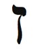
Yaratılış Kitabı Sefer Yetzirah’a göre Zayın harfi ikizlere atanmıştır. ibranicede Zayın, ikizler gibi iki anlama sahiptir: “Silah” ve “penis.” Her iki anlam da kılıcı akla getirir. Kılıcı nesneleri kesmek, ikiye bölmek için kullanırız. Bu silah aynı zamanda, kılıç ucu şeklindeki dil ile de ilişkilendirilir. Dil tabii ki konuşur; konuşmak ikizlerin varolma nedenidir ve ikizlerin dili bir kılıç gibi, belki de daha keskin olabilir. Kalem kılıçtan güçlüdür, derler. Yaşamı gruplara ayırmak, insanları ve nesneleri sınıflandırmak ve anlamak için lisanı kullanıyoruz. iskemleleri masalardan, ağaçları kayalardan ayırarak bu dünyada işlevsel olmaya çalışıyoruz ve biliyoruz ki aslında her şey özünde aynı minik atomlardan oluşmuştur.
Zayın harfinin şekli erkek cinsel uzvunun dış hatlarını andırır. Penis aşk yaparken kullanılır. Dişi ile erkeği birleştirir, bu da ikizlerin misyonudur. Bu durumda Zayın, iki tarafı keskin kılıcı simgeler. Keser ve böler ama sonra birleştirir.
Bir elçinin veya bir aracının dikkatini çekmek istediğinizde veya yazmada, iş fırsatları yaratmada veya entelektüel arayışlarda yardım istediğinizde Zayın harfi ile meditasyon yaparak iletişim becerilerinizi güçlendirin.

Bir elçinin veya bir aracının dikkatini çekmek istediğinizde veya yazmada, iş fırsatları yaratmada veya entelektüel arayışlarda yardım istediğinizde Zayın harfi ile meditasyon yaparak iletişim becerilerinizi güçlendirin.

Bedenin Bölümleri
İkizler burcu elleri, akciğerleri ve sinir sistemini yönetir. Dünyanın her yerinde insanlar iletişim için ellerini kullanırlar. Konuşamayanlar ise düşüncelerini dile getirmek için işaret dilini kullanırlar. Eller ikizler burcunun ikiliğini simgeler- iki taraf birlikte bir insanın hizmetinde çalışmaktadır.
Sinir sistemi ikizler burcunun en üstün niteliklerini içerir. Sinir sistemi insan bedeninin iletkeni olarak çalışır. Beynin emirlerini uzuvlara, duyarlıkları ve acıyı beyne taşır. Bir şey yanlış gittiği zaman beden acı mesajı gönderir. Bu hafta acının farkına varın. Bedeninizin mesajlarını dinleyin. Bedeninizde ağrıyan bölümü bulun ve 3. Kısımdaki tüm burçları okuyarak hangi burcun/arketipin o beden bölümünü yönettiğini öğrenin. Bu size, bir şeylerin eksik olduğunu söylemeye çalışan bir mesaj olabilir. Sinir sisteminin merkezi olan beyin de ikizler gibi iki kısma ayrılmıştır- sol ve sağ yarıküreler.
İkizler Burcunun Rengi: Turuncu
Bilgi ve iletişim rengi olan turuncu (“bana bak”) ikizler burcunun rengidir. Aslında, birçok tasarımcı yeni milen-yumun renginin, bilgi çağının rengi olan turuncu olduğunu kabul eder. Kabala Yaşam Ağacında turuncu, iletişim küresini (ihtişam) simgeler.
Turuncu kesinlikle hızın ve dalaverenin, oyunbazlığın rengidir. TV dizisi Starsky ve Hutch’ta, örneğin, (ikiz) kardeş gibi davranan kahramanlar turuncu bir araba ile sağa sola koşuştururlar. Yine başka bir TV dizisi Çılgın Kuzenler’de iki kuzen, General Lee diye adlandırdıkları turuncu arabaları ile müthiş bir kargaşa yaratırlar.
Renk tedavisinde turuncu bir uyarıcı olarak kullanılır ve depresyon tedavisinde etkili olmuştur. Turuncu aynı zamanda bronşit ve astım gibi akciğer sorunları için de kullanılmakta.
Oyunbazlık ve eğlence niteliklerinizin farkedilmesini istiyorsanız turuncu giyin. Bu renk iletişim ve zekâ konularında size yardımcı olabilir.
İkizler Haftasında Neye Odaklanmalıyım?
İkizler haftasında iletişim becerilerinize odaklanın. Kendinize şunu sorun: Ben nasıl başkaları için bir elçi olabilirim ve benim için elçi olabilecek kişiler kimlerdir? Bu hafta, iletişim becerilerinizi ve yazma yeteneklerinizi düzeltecek, onaracak ve genişletecek en iyi zamandır.
Ayrıca, kardeşlerinize, akrabalarınıza ve komşularınıza özel ilgi gösterin. İkizler burcu, sıklıkla iletişime girdiğiniz bu insanları yönetir. Eğer komşularınız ile az temasta iseniz veya hiç temas etmiyorsanız ilişki kurma zamanı gelmiştir. Sufiler, yakın bir komşunun uzak bir ağabeyden daha iyi olduğunu söylerler.

Oyunbazlık ve eğlence niteliklerinizin farkedilmesini istiyorsanız turuncu giyin. Bu renk iletişim ve zekâ konularında size yardımcı olabilir.

En önemlisi, başkaları hakkında nasıl konuştuğunuza dikkat edin. Hahamlar, yapabileceğimiz en kötü şeyin bir başkasını kötülemek olduğunu söylemişlerdir. Dedikodu da bu sınıfa girer. Bu hafta hemcinsleriniz ile ilgili olumsuz şeyler konuşmaktan kaçının. Bunun sonunda kimse de sizin hakkınızda kötü şeyler söylemeyecektir.
Bugünün kültüründe telefonunuz- genelde her zaman yanınızda taşıdığınız cep telefonunuz- sizin bir numaralı elçinizdir. insanlar sizi aradığınızda telefona nasıl yanıt verdiğinize dikkat edin. Ne diyorsunuz? En önemlisi, insanlar aradıklarında ve size ulaşamadıklarında ne işitiyorlar? Karşılama yanıtınızı dinleyin. Yapacağınız ilk şey, karşılama yanıtının kendi sesiniz olmasını sağlamaktır. insanlar telefonda sizin enerjik mesajını duymak isterler, dijital bir ses değil. Mesajınız kısa, öz ve candan olmalı. Bir kadın, kendi karşılama mesajını dinledi ve ilk kez, neden sosyal çevresinin ve iş arkadaşlarının ona mesaj bırakmaktan vazgeçtiklerini anladı. iki dakika süren karşılama mesajı, sevdiği bir şarkı ile başlıyor ve sonu gelmeyen kutsamalar ile sürüyordu. iyi bir niyet gösterisi idi ama kimse mesajı sonuna kadar dinlemiyordu ve o da böylece birçok habere ulaşamıyordu. Size haber iletenleri boğmayın.
İkizler burcu simgeleri geniş bir yelpazeyi kaplar ama siz bu hafta, reklam panolarından bir telepazarlamacı telefonuna kadar tüm iletişim biçimlerinin önemli bir eş-zamanlılığa işaret edebileceğini unutmayın. Bu simgeleri kollayın ve size yöneltilen sembolik ve pratik mesajları bulmaya çalışın. ikizler burcunun simgeleri: Kılıç, kalem, posta ve postacı, bilgisayar, internet, reklam panosu, radyo, medya, TV, kitap, lisan, ticaret, akrabalar, kardeşler, komşular, yazma, elçiler, faturalar, ikizler, köprü, otoyol, ikilikler, zekâ, eller, akciğerler, sinirlilik, turuncu renk, kavşaklar, bağlantı/kesişme noktaları, alış-veriş merkezleri ve telefonlar.
İkizler Haftası Kontrol Listesi
- Haritanızda İkizler burcunu bulun ve yaşamınızın bu alanına, İkizlerin derslerini- iletişim, zekâ ve birleştirici ikilikler- uygulamaya çalışın.
- Başkalarına bilgi taşıyın.
- Daha az konuşun, daha çok dinleyin.
- Kendi habercilerinizi bulun.
- İkiliklerinizi bulun ve onları birleştirmeye çalışın.
- Zayın harfi ile meditasyon yapın.
- İkizler burcunun olumlamasını yüksek sesle söyleyin: “Yaşamıma doğru ilişkiyi çekiyorum. Çevremi beni anlayan ve beni seven insanlarla dolduruyorum. Yaratının geri kalan kısmına vereceğim ve onlarla paylaşacağım bilgiye kolaylıkla erişiyorum.”
- Turuncu giyinin.
- Kardeşlerinizle ve komşularınızla ilişkiye geçin.
- Kötülemeyi ve dedikoduyu bırakın.
- Nefe alışınızı canlandıracak kardiyovasküler (kalp damar) hareketler yapın ve akciğerlerinizi çalıştırın.
- Telefon mesajlarınızı ve epostalarınızı geliştirin.
İkizler Ritüeli: Yaşam Nefesi
Bu egzersiz, eski bir yoga nefes alma tekniğinden gelişmiştir ve yaşamınızı gerçekten değiştirebilir. Yoga, bedeni ruh ile birleştirmek için tasarlanmıştır. ikizler nefesi bunu sağlayabilir.
Rahat bir pozisyonda oturun ve sağ elinizi yüzünüzün önüne getirin. Başparmağınızı sağ burun deliğinin üstünde tutun. işaret parmağınızı üçüncü gözünüze, alnınızın tam ortasına yerleştirin. Orta parmağınızı sol burun deliğinin üstüne koyun. Şimdi nefese başlayacaksınız. Orta parmağınız ile sol burun deliğini kapatın ve sağ burun deliğinizden derin bir nefes alın. Nefesinizi ciğerlerde tutarken sağ burun deliğini kapatın. Orta parmağınızı serbest bırakın ve nefesi sol burun deliğinden verin. Şimdi sol burun deliğinden nefes alın. Nefesi ciğerlerinizde tutun, orta parmakla sol burun deliğini kapatın ve sağ burun deliğinden nefesi verin.
Bu tekniği on dakika uygulayın. Nefeslerinizi derin ve yavaş bir şekilde alın ve verin. Bu meditasyonu sabahları kalkar kalkmaz ve akşamları yatmadan önce yapın.
Hindu geleneğine göre, sol tarafımız (sol burun deliği) Ida’ya, yani kadınsı, lunar (aya ait) yöne bağlı; sağ tarafımız (sağ burun deliği), Pingala, erkeksi ve solar (güneşe ait). Burun deliklerinden dönüşümlü olarak nefes aldığımızda iç ikiliğimizi dengeliyor ve içteki erkeksi ile kadınsı yönleri evlendiriyoruz. Gün içinde kendinizi uykulu ve halsiz hissettiğinizde sol burun deliğinizi kapatın ve sağ burun deliğinden on dakika süre ile derin nefes alıp verin. Bu nefes sizin erkeksi enerjinizi harekete geçirecek. Eğer kendinizi gerilimli veya endişeli hissediyorsanız sağ burun deliğinizi kapatın ve sol taraftan nefes alarak bedenin kadınsı ve sakinleştirici enerjilerini uyarın.

Telefonu açtığınızda ne diyorsunuz? En önemlisi, insanlar aradıklarında ve size ulaşamadıklarında ne işitiyorlar? Karşılama yanıtınızı dinleyin. Yapacağınız ilk şey, karşılama yanıtının kendi sesiniz olmasını sağlamaktır. insanlar telefonda sizin enerjik mesajını duymak istiyorlar, dijital bir ses değil. Mesajınız kısa, öz ve candan olmalı.

Ünlü İkizler
Laurence Olivier, John F. Kennedy, Marilyn Monroe, Arthur Conan Doyle, Queen Victoria, Bob Dylan, Miles Davis, Bob Hope, Walt Whitman, Angelina Jolie, Donald Trump, Clint Eastwood, Thomas Mann, Prince, Che Guevera, Adam Smith, Igor Stravinsky, Paul McCartney, Ralph Waldo Emerson, Henry Kissinger, John Paul Sartre, Tupac Shakur, Salman Rushdie.
Yengeç: Şefkatin Uzmanı
21 Haziran-22 Temmuz
Anahtar İfade: “Hissediyorum”- koşulsuz sevgi
Genel Nitelikler: Besleyen ve bakan, doğuştan şifacı, destekleyici, şefkatli, aileye dönük, duyarlı, evcil, anaç
Karanlık Yön: Suçluluk, bağlılık, bağımlılık, edilgen-saldırganlık (pasif-agresif), derin bir ihtiyaç duyulma ihtiyacı
Element: Öncü su
Gezegen: En karanlık anlarımızda ışık veren ay
Gün: Pazartesi
Tema: Doğum
Beden Bölümleri: Kaburgalar, karın, memeler, iç organlar, rahim
Renk: Turuncu-sarı
Değerli Taş: İnci
Müzik Notu: Re diyez
İbranice Harf: Het 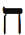
Harfin Kabalistik Anlamı: Duvar
Yaşam Ağacındaki İzlek: izlek 7, Anlayışı ve Haşinliği birleştirir
Tarot Kart: İki Tekerlekli Savaş Arabası
Filmler: Piyano, Kundun ve tüm aile filmleri
Olumlama: “Ailem tarafından seviliyorum ve evren tarafından besleniyorum. Beni incitenleri affediyorum ve incittiklerimden af diliyorum.”
Genel Bakış
Yengeç burcu yaşam verir, Yüce Ananın ve yaratılış rahminin arketipidir. Zodyakın kraliçesi Yengeç burcudur, kralı ise bir sonraki burç Aslandır. Dalai Lama’nın ve Prenses Diana’nın burcu olan Yengeç, aileyi ve evi, güvenlik ve barınak sağlayan (yengeç) kabuğu, korumayı ve duygusal yüreklendirmeyi simgeler. Tüm burçların arasında Yengeç, çocuklarını kanatları altına alan bir anne gibi en bakıcı ve besleyici olanıdır. Yengeç burcu, aile sorunlarınızı düzeltmenize ve iyileştirmenize, güvenliğinizi sağlamanıza ve gelişmek için güvenli bir ortam yaratmanıza yardım eder. Yengeç haftasında, aile ilişkilerinizi geliştirmeyi, aile ve ofis ile olan duygusal ilişkilerinizi zenginleştirmeyi öğreneceksiniz. Aynı zamanda, şefkat ve koşulsuz sevgi yetinizi de geliştireceksiniz.
Yengeç Burcu Sahası
Yengeç burcu, yaz gündönümü- en uzun gün ve en kısa gece- ile yazı başlatır. Gündönümünün ingilizce karşılığı olan solstice, Latince sol (“güneş”) ve sistere (“hareketsiz”) sözcüklerinden gelir. Haziranın sonlarına doğru Kuzey Kutbu güneşe doğru yaklaşır ve bir sarkaçın salınımın üst noktasına erişmesi gibi güneş, yönünü değiştirmeden önce bir an hareketsiz duruyormuş hissini verir. Astrolojide 21 Haziran, ışığın tam olarak hakim olduğu anı gösterdiği için “insanlığa açılan kapı” olarak anılır.
İnsanlığın belki de en ayırdedici özelliği, yani hepimize açılan kapı, hislerdir- sevme, kederlenme ve eşduyuma girme. Öncü su burcu olarak Yengeç duyguları doğurur. Bilinen tüm yaşam için su gerekli unsur olduğundan dolayı Yengeç burcu yaşamı başlatır, doğumu ve anneliği yönetir. Bu burç bizi, duygularımızla ve annelerimizle yüzleşmeye zorlar. Annemizin bizi bir zamanlar rahminde tuttuğu gibi Yengeç burcu da bize, ilk duygusal deneyimlerden geçtiğimiz kabı, yani evimizi sunar. ideal olarak ailemiz ve evimiz, kendimizi güvende hissedeceğimiz, koşulsuz sevgi ve destek bulacağımız bir yerdir. Evimizin güvenliği olmadan hedeflerimizi gerçekleştiremeyiz.
Hristiyan geleneği, yaz gündönümünü Yahya Peygamber (Vaftizci Yahya) ile ilişkilendirir. Diğer bir deyişle Yengeç burcu insanları, spiritüel evrimin önemli bir adımı olarak suda, yani eşduyumun içinde vaftiz eden adamı ortaya çıkardı. Çoğu Hristiyan Yahya Peygamberi, isanın gelişini gördüğü için Hristiyanlık inancının öncüsü olarak tanıtır: “Ben sizi su ile vaftiz ettim ama benden sonraki sizi ateşle vaftiz edecek” (Matta 3:11). Yengeç Yahya (su), Koç isayı (ateş) çağırdı.
Modern mitolojiler aynı astrolojik benzetmeyi kullanırlar. Matrix filminde örneğin, Morpheus kahramanı, yani Neo’yu bir hap ve bir bardak su (Yengeç) ile uyandırır. Bu psikolojik benzetmeler, sevgi dolu bir annenin bir kahramanı doğurmasını anımsatır. Freud ve birçok psikolog en imrenilecek özelliklerimizin, travmalar ve korkularla birlikte bize annemizden ve yakın aile üyelerinden geçmiş olduğunu savunurlar. Bu arketiple çalıştıkça güvenlik duyunuzu engelleyen korkularınız ile yüzleşmek durumunda kalacaksınız.
Yengeç burcu anneliği, aileyi, evimizi ve enerjimizi içeren tüm yaşam alanlarını yönetir. O bizim Kutsal Kâsemizdir. Eğer zamanınızın çoğu arabada geçiyorsa Yengeç burcunu araba temsil eder. Eğer çok çalışıyorsanız aynı şey ofisiniz için geçerlidir. Zodyakın mantığı ile, Koç ilk erkeksi arketip veya Adem olarak geldi ve onu Boğa, kadınsı arketip veya Havva izledi. ikisi karşılaştılar ve birbirlerine aşık oldular. Bunu sağlayan, birleştirici ikizler ve Tarot kardı Aşıklar idi. Yengeçte, Koç ve Boğa birlikte duygusal açıdan güvenli bir ev oluşturmaya karar verirler. Ve bu Yengeç evinde Havva hamile kalır. Zodyak ailesine doğan ilk bebek ise bir sonraki burç Aslandır.
Haritanızda Yengeç burcu, erken çocukluktan kalan anıların hedeflerinizi engellediği veya desteklediği yaşam alanını vurgular. En savunmasız ve duygusal, bakılmaya ve korunmaya muhtaç olduğunuz yaşam alanınıza işaret eder. iç güvenlik bakanlığını kuran Başkan George W. Bush bir Yengeçtir.
Özel Yengeç Burcunuz
Yengeç evinizi saptayın ve bu hafta, yaşamınıza yeni bir şey katmaya çalışın. Yengeç besleme, bakma ve annelik burcudur. Kendi içinizden bir şeye, bir bebek gibi büyüyüp gelişecek bir şeye ışık vererek doğayı taklit etmeye çalışın.

Haritanızda Yengeç burcu, erken çocukluktan kalan anıların hedeflerinizi engellediği veya desteklediği yaşam alanını vurgular. En savunmasız ve duygusal, bakılmaya ve korunmaya muhtaç olduğunuz yaşam alanınıza işaret eder.

Yengeç Birinci Evde (Yükselen Burcunuz): Duygusal ve duyarlısınız.Yeteneklerinizi en üst düzeye çıkarmak için duygusal güvenceye ihtiyacınız var. Güçlü annelik içgüdünüz, ihtiyaç duyulmaya ihtiyacınız olduğunu söylüyor. Aydan etkilendiğiniz için ruh hallerinizi kontrol edebilmek amacı ile ayın döngülerine dikkat etmelisiniz. Bu hafta bedeninize, sağlığınıza, fiziksel ve duygusal beslenmenize odaklanın.
Yengeç İkinci Evde: Finansal ve duygusal esenlik için duygusal güvenceye ihtiyacınız var. Tasarruf yapmak, endişenizi azaltacak. Besleme ve iyileştirme yetenekleriniz size para kazandırabilir. Aileye çok değer veriyorsunuz. Yengeç haftasında finansınızı, yeteneklerinizi ve öz-değerinizi besleyin.
Yengeç Üçüncü Evde: Az rastlanan bir zekâ ve duygusallık karışımına sahipsiniz. Büyük bir şair veya duyguları ve hisleri iletmede becerikli bir insan olabilirsiniz. Komşularınıza ve kardeşlerinize karşı güçlü bir anaç içgüdünüz var. Açılıp kendinizi ifade etmelisiniz. Bu hafta iletişim becerilerinizi ve işinizi vurgulayın ve akrabalarınıza ilgi gösterin.
Yengeç Dördüncü Evde: Annenizle ve evinizle güçlü bir bağlantınız var ve genelde aile üyelerine karşı korumacısınız. Büyüdüğünüz yere yakın veya benzer bir çevrede yaşamak yararlı olacak. Suya yakın yaşamaya çalışın. Bu hafta evinizi ve ailenizi besleyin, onlara bakın. Eviniz, aileniz, annelik ve anne ile ilgili birçok rastlantıya tanık olabilirsiniz.
Yengeç Beşinci Evde: Çocuklar sizi seviyor çünkü içinizdeki çocuk parıldıyor. Yaratıcılığınız bilinçaltında yatıyor. Her zaman ne yaratacağınızı bilmiyorsunuz ama o imrenilecek buluş kendiliğinden ortaya çıkıyor. Sevdiğiniz kişilere karşı romantik ve duyarlısınız. Bu hafta yaratıcılığınız ve mutluluğunuz üzerinde çalışın. Çocuklarla zaman geçirin. Ayrıca, bir su sporu deneyebilirsiniz.
Yengeç Altıncı Evde: En iyi evden çalışıyorsunuz, rahat ve sıcak işyerini yeğliyorsunuz. Çalışanlarınıza ve iş arkadaşlarınıza bakmayı, onları beslemeyi ve desteklemeyi seviyorsunuz. Bir ailenin yanında veya başka insanlara bakabileceğiniz bir alanda çalışmalısınız. Dış dünyadan olumsuz enerji almamaya dikkat edin. Gerilim ve duygusal sorunlar hastalık yaratabilir. Hazım sisteminize ve iç organlarınıza dikkat edin. Yengeç haftasında iş alanınıza, beslenmenize ve sağlığınıza özel ilgi gösterin.
Yengeç Yedinci Evde: Besleyen, bakan ve duygusal insanlar ilginizi çekiyor. Önemli yetişkin ilişkilerde ortaklarınıza/ eşinize aşırı annelik yapmaktan sakının. Evlilik ortaklığınız, duygusal güvence ve denge yaratma ihtiyacına odaklanmış. Yatak odanıza bir çeşme koymayı ihmal etmeyin. Yengeç haftasında ortaklıklarınızı ve eşinizi besleyin, zenginleştirin ve koruyun.
Yengeç Sekizinci Evde: Bir aile mirası gelebilir. Ayrıca, kendi ailenizden veya ortağınızın/eşinizin ailesinden para akıyor. Duygusal güvenceniz, cinselliğinizi ve samimi yakınlık kurma yeteneğinizi büyük oranda etkiliyor. Ailenizin doğaüstü veya büyü ile bir ilişkisi olabilir. Bu hafta, ortak finansal ve sanatsal işlere, aynı zamanda cinselliğe ve samimi yakınlığa odaklanın.
Yengeç Dokuzuncu Evde: Evlilik ile gelen akrabalarla güçlü bir duygusal ilişki kurabilirsiniz. Bir süre değişik bir ülkede yaşayabilirsiniz. Yüksek eğitim arayışlarınız, duygusal konularla ilgili olmalı çünkü yaşam felsefeniz konusunda genelde duygusalsınız. Yengeç haftası seyahat etmek, çalışmak ve doğruluk anlayışınızı zenginleştirmek için uygun bir zaman.
Yengeç Onuncu Evde: Kariyer ve profesyonel yaşama duygusal olarak bağlanmaya ihtiyacınız var. Sadece para için çalışamazsınız; sizin için anlam da gerekli. Aile üyeleri ile çalışın veya ailelerle veya evlerle uğraşan bir mesleğiniz olsun. Yengeç haftasında kariyerinize, ününüze ve toplumdaki yerinize odaklanın.
Yengeç On birinci Evde: Arkadaşlarınıza, topluma ve kuruluşlara duygusal olarak bağlısınız; onları koşulsuz olarak destekliyor ve besliyorsunuz. Bu insanlara genelde aileniz olarak bakıyorsunuz. Yengeç haftasında arkadaşlarınızla, gruplarla ve kuruluşlarla zaman geçirin.
Yengeç On ikinci Evde: Annenizle, annelikle veya aile üyelerinizle karma veya zorluk yaşayabilirsiniz. Geçmiş bir yaşamda anneniz kızınız olmuş olabilir. Şefkat ve koşulsuz sevgiyi vurgulayan bir spiritüel uygulama bulun. Bu hafta ev, annelik veya anneniz ile ilgili eski örüntülerden kurtulmaya odaklanın. Eğer mümkünse bir süre spiritüel inzivaya çekilin.
Yüce Ana İsis
Mısır mitolojisinin yüce ana tanrıçası isis, Yunan ve Roma dahil diğer kültürlerde de kutsal addediliyordu. Antik Mısırlılar ona, Nil Nehrinin (su) şeklini vererek doğum tanrıçası olarak tapıyorlardı. isisin birçok tasviri onu, sonraki Hristi-yan resmetmesindeki (ikonografi) Meryem ve isa pozlarında olduğu gibi Horus adındaki çocuğunu kucağında emzirirken gösterir. Mısırlılar ayrıca Isisi, Yengeç ile ilişkilendirilen göksel cisim ayda görürler. isis başında, ayın üç ana fazını- yeniay, dolunay ve küçülen ay- simgeleyen iki hilal ile çevrelenmiş lunar (ay) yuvarlaktan yapılmış bir taç taşır.
İsis genelde bir tahtta oturur ama bu, onun tahtı değildir. Taht, firavunları temsil eden kocası Osirise aittir. isis, tahtın gerisindeki güçtür ve bu gücü kendinde barındırır. isis, şekli simgeler, firavun ise özü (görünmez enerjiyi) temsil eder. Yengeç burcu duygusal özümüzün evidir, kabıdır. Olgunlaşmamız ve büyümemiz için gerekli şekli ve sınırları belirler. ilk günlerden itibaren, örneğin, bizi dış dünyanın mikrobik tehlikelerinden korumak için bir duvar, bir kabuk rolü üstlenen anne sütünden destek alırız ve böylece bağışıklık sistemimiz güçlenir. Sırtında evini taşıyan yengeç gibi ailemizin genetik ve çevresel etkisini her gittiğimiz yere taşırız.
Bu isis arketipi bizi, anne konularımızla yüzleşmeye çağırır. Yengeç burcuna ayırdığınız haftanın başında annenizi, her zamanki gibi bir merhaba için arayın. Aramadan hemen sonra meditasyon yapın. Kendinizi, aydan annenize ışık gönderirken hayal edin. Yapmış olabileceği tüm hatalar için onu affedin ve işlemiş olabileceğiniz tüm hatalar için ondan özür dileyin. Şimdi yeniden onu arayın. Bu sefer, sizin için yaptığı her şey için ona ne kadar minnettar olduğunuzu söyleyin. iki konuşma arasındaki farkı gözlemleyin. (Eğer anneniz yaşamıyorsa meditasyonu arama olmadan yapın. isterseniz telefon konuşmalarının diyaloğunu hayal edip yazabilirsiniz.)
İki Tekerlekli Savaş Arabası: Merkavah
Yengeç burcuna atanan Tarot kardı olan iki Tekerlekli Arabanın uzay, zaman ve kültürleri aşan bir simgesi vardır. Bu arabadan ilk kez, M.Ö. altıncı yüzyılda Kudüs’te söz edilmişti. Kudüsteki ilk tapınağın M.Ö. 586’da yıkılmasının ardından Yahudi milletinin asilleri ve entelektüel liderliği Babile sürülmüştü. Orada Babil nehirlerinin üzerinde (Yengeç burcu, suyun simgesi) Ezekiel Peygamber olağanüstü bir görüntüye tanık oldu. Gökyüzünden muazzam bir araba iniyordu. ilk Kabalistler bu görüntüye Merkavah’ın işleyişi dediler (Mer-kavah ibranicede “iki tekerlekli savaş arabası” demektir). Kabalistlere göre Ezekielin ilhamı bir sorunu çözdü. Görsel-leme gücü ile çalışan bir gizemci, nasıl olur da şekilsiz, sınırsız ve her şeye gücü yeten Tanrının imgesini oluşturabilirdi? Herhangi bir Tanrı imgesi muhakkak ki yetersiz kalacaktı. Kabalistler Tanrıyı erkek veya kadın, yaşlı veya genç, büyük veya küçük göstermekten sakındılar çünkü Tanrının Bir olduğunu ve her şeyi kapsadığını biliyorlardı. Tanrıyı, Mikelanjın Vatikan için çizdiği gibi yaşlı ve beyaz saçlı olarak düşünemeyiz çünkü Tanrı erkek değildir ve sonsuz Tanrı, kesinlikle sert ve sonlu bir adama benzemez. Ama araba kusursuz bir imge sundu- Tanrının tahtının imgesi. iki tekerlekli araba, şefkat, merhamet ve koşulsuz sevgi evinin, Tanrının özünü içeren bir yerin çağrışımını yaptı.
Bu Tanrı betimlemesi, Şefkat Budasını aydınlanmanın en üstün mertebesi olarak kabul eden Tibet Budist öğretisi ile uyumludur. Şefkat Budasının reenkarnasyonu olarak kabul edilen On dördüncü Dalai Lama Hazretlerinin, yükselen burcu da Yengeç olan bir Yengeç olduğunu anımsatalım.
Aynı şekilde, Hindu destanı Bhagavad Gita tanrı Krişna’yı, kahraman prens Arjuna’ya yaşamın gizemli yönleri konusunda öğüt veren bir araba sürücüsü olarak gösterir. ikili, arabada Arjuna’nın akrabalarına karşı yaptığı savaşın erdemlerini tartışırken bu öğüt de araya girer. Burada, aile işlevselsizliği hakkındaki bir öyküde, savaş arabasının Tanrının bilgeliği ile olan kültürlerarası ilişkisi ortaya çıkmaktadır. Yengeç burcu, ailenin burcudur.
Modern yaşamda, eskinin savaş arabası bugünkü araba-nızdır. Bu hafta arabanızla spiritüel seviyede bağlantı kurun. Arabanın durumuna bakın- boyasına, motoruna, temizliğine. O, sizin bedeninizin durumunu yansıtmaktadır. Arka koltukta neler yığılmış? Döküntü, ıvır zıvır, dosyalar, müzik? Bu eşya, yaşama yaklaşımınızı sergiler. Bu hafta arabanızı içten dıştan temizleyin. Ona, yüksek özünüze veya ruhunuza davranır gibi davranın. Bunun için harcadığınız enerji üçe katlanarak size geri gelecektir.
İlk su burcu olan Yengeç, tüm gizemsel yolculukları yönetir. Derin, dalgalı ve yansıtıcı su, psişik görüntüler için ezoterik bir koddur. Dalai Lamanın on dördüncü reenkarnasyonunu arayan Tibetli rahipler, bir Tibet yaylasında kristal berraklığında bir gölün kenarında kamp kurarak arayışlarına yön verecek görüntüyü beklediler. Amerikan Yerlilerinin geleneklerinde, bazı kabileler şelalelere bakarak doğaüstü bilgeliğe erişmek ve geleceği öngörmek istediler. Kral Arthur’un Batılı destanında, gölün gizemli hanımı Lady Avalon Arthur’a (kahraman), krallığını birleştirecek yolculuğu başlatacak kılıcı (ikizler burcunın güçleri) verir. Su ve Yengeç burcu tarafından sunulan bu gizemsel güçlere erişme kodu basit ama derindir: Cennetin kapılarını açmak için hissetmeliyiz. spiritüel dünyaya geçiş parolası şefkat olarak yazılır.

Bu hafta annenizi, her zamanki gibi bir merhaba için arayın. Aramadan hemen sonra meditasyon yapın. Kendinizi, aydan annenize ışık gönderirken hayal edin. Yapmış olabileceği tüm hatalar için onu affedin ve işlemiş olabileceğiniz tüm hatalar için ondan özür dileyin. Şimdi yeniden onu arayın. Bu sefer, sizin için yaptığı her şey için ona ne kadar minnettar olduğunuzu söyleyin. iki konuşma arasındaki farkı gözlemleyin. (Eğer anneniz yaşamıyorsa meditasyonu arama olmadan yapın. isterseniz telefon konuşmalarının diyaloğunu hayal edip yazabilirsiniz.)

Yengeç eviniz, nefis farkındalığı ve başarı arayışında sizi taşıyacak savaş arabasını ve tahtı bulacağınız yaşam alanını tanımlar. Haritanızda Yengeç burcunun olduğu alana bir çeşme yerleştirin. Eğer Yengeç burcu birinci evde ise suyun içinde zaman geçirin. Eğer burası para evi ise iş yerine çeşme yerleştirin. Eğer Yengeç burcu yedinci ilişki evinde ise yatak odanıza bir çeşme koyun.
Her şeyden önemlisi, bu hafta başkalarına özellikle dört kez şefkat gösterin. Şefkat göstererek affetme ve kabul ile ilgili çok şey öğreneceksiniz.

Bu hafta arabanızla spiritüel seviyede bağlantı kurun. Arabanın durumuna bakın- boyasına, motoruna, temizliğine. O, sizin bedeninizin durumunu yansıtmaktadır. Arka koltukta neler yığılmış? Döküntü, ıvır zıvır, dosyalar, müzik? Bu eşya, yaşama yaklaşımınızı sergiler. Bu hafta arabanızı içten dıştan temizleyin. Ona, yüksek özünüze veya ruhunuza davranır gibi davranın. Bunun için harcadığınız enerji üçe katlanarak size geri gelecektir.

Ayın Dalgalarında Sörf Yapmak
Birçok gelenekte ay, yaşamımızın en karanlık anlarında bize ışık ve sevgi veren anneyi simgeler. Yeni bilimsel kuramlara göre, ayın yerkürenin büyük su kitleleri üzerindeki etkisi karada yaşamı başlattı. Gelgitler, 2.7 milyar yıl sığ su birikintilerinde evrimleşen yerkürenin minik organizmalarını karaya, sonra da yeniden suya sürükledi. Bir süre sonra bu yaratıklar her iki yerde de evrimleştiler ve sonunda bunların bir kısmı ayrılarak karada, bizim gibi hava soluyan yaratıklara dönüştü. Bu kuram astrolojiye uyar çünkü Yengeç (ay ve su) doğumun ve yaşamın burcudur.
Aysar (ayın etkisiyle huyunun değiştiği sanılan kimse), aygın (bitkin) gibi sözcüklerle insanlar uzun süredir duyguları ve değişik ruh hallerini, ay ile ilişkilendirmişlerdir. Yahudilikte tatillerin çoğu ay ile saptanır. Hamursuz bayramı, ilkbahar Gündönümünü izleyen Dolunayda kutlanır. Yahudi Yeni Yılı ve Adem ile Havvanın doğum tarihi olan Rosh Hashana, Terazi burcunda Yeni Ay zamanıdır. Ayın etkisi altında duygusal ve içgüdüsel doğamıza bağlanırız. Zekâ ve mantığımızı bastırır, Doğa Ananın besleyen, yaşam veren gücü ile bir oluruz. Ay, arzularınızı gerçekleştirmek ve yaşamda ihtiyacınız olanı ortaya çıkarmak için yirmi sekiz günlük bir süre sunar. Ayın enerjilerinin gelgiti ile sörf yapmayı öğrendiğiniz zaman ruh hallerinin dalgalanmasını önleyebilirsiniz. Yüce tanrıçanın üç gücü, ayın üç fazında yansıtılmıştır: Büyüyen ay (güzel Bakire), dolunay (seven Anne) ve küçülen ay (Bilge).
Yeniayda- ayın dünyanın gölgesi ile tümüyle kaplandığı gece- bir proje başlatın. Bu yeni bir ilişki, iş için gönderilen öz-geçmiş, kitap yazmak, iş planı yapmak veya sağlık rejimi olabilir. Ay büyüdükçe büyük harf D ( s.175) şeklini alacak ve bu iki hafta siz projenizde çaba gösterceksiniz. Dolunayda geri çekilin ve düşünün. Dinlenin ve ilerlemenizi değerlendirin. Sonra ay küçülüp C (buraya sembol girecek. s.176) şeklini alınca projenizi gözden geçirin, kesinti yapın veya yeniden düzenleyin. Bu, ilerlemenizi engelleyen ilişkilerden veya tıkanıklıklardan kurtulma zamanıdır. Bu programa göre çalışarak kendinizin astrologu olabilirsiniz. Göklerin mekaniği ile uyum sağlayabilirsiniz. Ay ışığını artırdıkça yaşamınıza bir şeyler ekler, ay ışığını eksilttikçe yaşamınızı ona göre ayarlarsınız. Ay aynı zamanda içgüdüleri ve duyguları yönettiği için projenize his katmayı ihmal etmeyin.
Lotus Yaprağındaki Mücevher: Şefkat ve Koşulsuz Sevgi
Yengeç burcu affetmeyi içerir. Annelerimizin bizi ne yaparsak yapalım sevmeleri ve ailemizin bizi sorgusuz desteklemesi gibi Yengeç burcu bize sevmeyi ve koşulsuz affetmeyi öğretir. Tibet Budizmi şefkatten sanat üretmiştir. Yüzyıllar boyunca Tibetin bilge kadınları ve erkekleri, insanlığın bu kutsanmış niteliği güçlendirmesine yardım için kusursuz spiritüel yöntemler oluşturdular. Tibet “kar ülkesi” anlamına gelir ve kar, sudan oluşur (Yengeç burcu). Tibetliler, “lotus yaprağındaki mücevher” demek olan Om Mani Padme Hum diye bir ilahiyi, şefkat enerjisi oluşturmak için söylerler. Mücevher, Yengeç burcunun taşı olan incidir ve lotus suda yetişir.

Haritanızda Yengeç burcunun olduğu alana bir çeşme yerleştirin. Eğer Yengeç burcu birinci evde ise suyun içinde zaman geçirin. Eğer burası para evi ise iş yerine çeşme yerleştirin. Eğer Yengeç burcu yedinci ilişki evinde ise yatak odanıza bir çeşme koyun.

Yengeç burcuna ve şefkate adadığınız haftada Dalai Lama’nın Mutluluk Sanatı kitabını okuyabilirsiniz. (Yengeç burcu arabanızı da yönettiğine göre bu kitabın bir işitsel (odyo) sürümünü alabilir ve arabanızı sürerken dinleyebilirsiniz.) Ne yazık ki ülkelerini seven Tibetliler, elli yıl önce Çin istilası ile ülkelerinden sürüldüler. Ama bu fedakârlık, şefkat öğretisinin tüm dünyaya yayılmasına neden oldu. Sanki Tibetliler, özgürlüklerini ve ülkelerini çalanları affederek öğretilerinin gerçek değerini dünyaya göstermek istiyorlardı. Dalai Lama’nın dediği gibi başkasına şefkat göstermek için ilkönce acı çekmek gerekir. Bu acı sizi iyi kalpli, sevgi dolu ve affedici olmaya itecektir çünkü siz, o acının korkunç bedelini anlayabilirsiniz.
Müşterilerimden biri, sağlıklı bir yoga hocası. Öğrencileri ona sırt ağrıları veya başka bir bedensel sıkıntı ile geldiklerinde onları, anlamsız bir spiritüel zırva ile başından savıyordu: “O sırt ağrısını sen yarattın. Yaptığın bir yanlışlığı veya spi-ritüel eksikliği bu şekilde dengelemek istedin.” Sonra bir gün bu yoga hocası, yoga minderini almak için eğildiğinde beline bir şey oldu ve iki hafta yerinden kalkamadı. Zar zor hareket ediyordu. Bu acıdan sonra başkalarına olan tavrını değiştirdi. Bugün birisi sırt ağrısından yakındığında ona ilgi, sevgi ve anlayış gösteriyor.
Doğum sırasında annelerin aynı nedenden dolayı dayanılmaz ağrılar çektiklerine inanıyorum. Bu ıstırap, bebeğin doğumunu sağladığı gibi şefkat ve koşulsuz sevgiye de hayat veriyor. Acı çektiğimiz zaman döktüğümüz göz yaşları bize, duygunun ezoterik simgesi olan tuzlu okyanusun yöneticisi Yengeç burcunun bu dersini anımsatır. Haritanızdaki Yengeç burcu, acı çekerek şefkat doğuracağınız alanı gösterir. Bu acı bir lanet değildir. O sizi, derin ve şefkatli bir insan yapar.
Yengeçler İle Geçinmek
- Yengeçlerin ihtiyaç duyulmaya ihtiyaçları vardır. Savunmasızlığınızı göstermekten çekinmeyin. Duygusal yönünüzü gösterdiğinizde bunu takdir edeceklerdir.
- Yengeçlere karşı sabırlı olun. Çok yavaş davranırlar. Eğer bir Yengeç ile yaşıyorsanız dışarı çıkmadan hazırlanması için ona yeteri zaman tanıyın.
- Yengeç arkadaşlarınızı evlerinde ziyaret edin. Evleri için bir şey götürün. Ev sahibi olarak onlara övgü yağdırın.
- Yengeçlerin kendilerini suçlu hissetmelerine katkıda bulunmayın. Suçluluk onların işidir. Kendilerini kötü hissetmelerine neden olursanız orantısız bir tarzda tepkide bulunacaklardır.
- Eğer bir Yengeç arkadaşınız veya aile üyesi evini veya ofisini taşıyorsa yardım önerin. Bir yengecin yeni bir kabuk arayışı sırasında savunmasız olması gibi Yengeç de aynı süreçten geçecektir.
- Yengecin aile üyeleri ile iyi geçinmeye çalışın. Ailelerinden yakınsalar bile tarafsız kalın. Ne olursa olsun o aile üyelerini kötülemeyin.
- Onları besleyin, sevin ve dinleyin. Yengeçler duygusal destek ile yaşarlar.
- Eğer Yengeç kabuğuna çekilirse her şeyi bırakıp onunla konuşun. Duygusal acıyı yaratan konu hakkında konuşmasını teşvik edin. Bize şefkati getiren bu insanlara şefkat gösterin. Bazen, sevildiklerini ve bakıldıklarını bilmeye ihtiyaçları vardır.
Gücün Karanlık Yönü: Yengeç Burcu
Yengeç burcunun karanlık yönü, bu bakım ve şefkat yetisinin son derece yüksek olmasından kaynaklanır. Ben buna, sevdiğin insana karşı bağlılık ve aşırı koruma hisleri karışımı olan Yahudi anne sendromu diyorum. Bu, suçluluk hissi yaratabilir ve yıkıcı bir karşılıklı bağımlılığa kadar gidebilir. Hastasına insanüstü bir çaba ile bakan bir hemşire düşünün. Ve bu hemşirenin hastasına aşık olduğunu hayal edin. Bu duygu hemşirenin, hastayı tam olarak iyileştirmesini engelleyebilir çünkü iyileşmiş bir hasta ve dolayısıyla aşk, hastaneden çıkıp gidecektir. Yengeçler yolun karşısına geçmek istemeyen yaşlıları, yardım etme dürtülerini tatmin etmek için zorlamamaları gerektiğini farketmelidirler.
Yengeçler aynı zamanda edilgen-saldırgan (pasif-agresif) olabilirler. Yengeç burcunun simgesi yengeç gibi yan yan kaçma eğilimindedirler. Bize doğrudan ne istediklerini söylemek yerine dolambaçlı ve dağınık yollarla neye ihtiyaç duyduklarını hissettirmeye çalışırlar. Hepimizin telepati yeteneği varmış gibi davranırlar ve biz onların söylemek istediklerini otomatik olarak anlamayınca kabuklarına çekilirler ve kendimizi kötü hissetmemize neden olurlar. Yengeçlerin, çoğumuzun günün yirmi dört saati psişik (medyum) olmadığını öğrenmeleri gerekir. Ve isteklerini doğrudan iletmeye çalışmalıdırlar.

Haritanızdaki Yengeç burcu, acı çekerek şefkat doğuracağınız alanı gösterir. Bu acı bir lanet değildir. O sizi, derin ve şefkatli bir insan yapar.

İbranice Harf Het
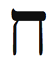
Kabalaya göre ibranice harf Het, Yengeç burcunun enerjisini yayar. Het “duvar” veya “çit” demektir. Bu harf, yengecin kabuğunu, nüfusu koruyan ve güvence altına alan şehir duvarlarını, aile evinin çevresindeki çiti simgeler. Het, yaşam anası “Havva” (isis’e güçlü bir atıf) anlamına gelen ibranice sözcük Chava’nın ilk harfidir. Yengeç burcunun Yüce Ananın enerjisini kapsaması gibi Het harfi de doğumu simgeler.
Üretkenlik (çocuk, fikir veya proje) için Het harfi ile medi-tasyon yapın. Rüya evinize kavuşmak, aile konularını çözümlemek, şefkat yaratmak ve dalgalanan ruh hallerini sakinleştirmek için Het harfini kullanın.
Bedenin Bölümleri
Yengeç burcu, herhangi bir organı içeren tüm beden bölümlerini, örneğin, kalbinizi koruyan göğüs kafesini yönetir. Göğüs kafesi, anne Yengeç ile ilişkili olmasına rağmen kalp bir sonraki burç çocuk Aslanla ilgilidir. Yengeç burcu, birçok hayati madde içeren hücrelerin cidarlarını gözetir. Mideyi ve ceninin ilk evi rahmi yönetir. Bu ilişki, anlatılamaz duygular veya önsezi olarak ifade edebileceğimiz içgüdüsel hislerin karın bölgesi ile ilgili olmasını açıklamaktadır. Diğer bir deyişle, duyarlı ve psişik (mdyum) Yengeç ile ilişkilendiri-len organlar sezgilerimizin barometresi olarak çalışıyor. Ülser ve karın ağrısı, duygularımızı (Yengeç burcu) biriktirmekten kaynaklanır. Hislerinizi doğrudan ifade etmeye çalışarak edilgen-saldırgan olmaktan ve kendinizi için için yemekten kaçının.
Sağlıklı bir Yengeç enerjisi için günde on bardak su için. Su bedeninizi temizlemek ve iyileştirmekle kalmayacak, aynı zamanda daha psişik, sezgili ve şefkatli olmanızı sağlayacak.
Yengeç Burcunun Rengi: Sarı-Turuncu
Yengeç burcunun rengi turuncu sarı veya yumuşatılmış koyu sarıdır. Şefkat, besleme, bakma ve annelik enerjisini vurgulamak istediğinizde bu rengi giyin. Ve evinizin her yerine bu renkten serpiştirmeyi ihmal etmeyin.
Yengeç Haftasında Neye Odaklanmalıyım?
“Hissediyorum” ifadesi Yengeç burcunu tanımlar. Bu hafta duygularınıza odaklanın. Bu hafta yavaşlamaya ve hissetmek için zaman ve alan yaratmaya çalışın. Bu hafta, evinizi yeniden dekore etmek veya eve çeki düzen vermek ve su kenarında vakit geçirmek için de iyi bir zamandır.
Annemiz ve aile üyelerimiz, güçlü ve biraz tatlı, biraz acı duygular yaratırlar. Sıkıntıda olduğumuzda Anneden yardım isteriz: Mama Mia (italyanca), Mommy (ingilizce), ima’le (ibranice), Annee (Türkçe). Evin sözde güçlü adamı baba yerine annemizden yardım istemek biraz tuhaf ama astrolojik olarak bu bir anlam taşıyor.
Her zamanki gibi Yengeç burcu ile ilgili eş-zamanlılıkları, özellikle Yengeç burcu tarafından yönetilen eve ait olanları kollayın ve size yöneltilen simgesel ve pratik mesajları yorumlamaya çalışın. Yengeç burcunun simgeleri: Yengeç, kabuklar, evler, aile, anneler, annenin yerini tutanlar, duvarlar, çitler, Tibet, şefkat, hisler, gözyaşları, mide, rahim, doğum, savaş arabası, arabanız, turuncu-sarı, inciler, su, okyanus, nehirler, ay, göller, acı çekmek, suçluluk, önseziler (sezgiler), anılar, koşulsuz sevgi.
Yengeç Haftası Kontrol Listesi
- Kendinizi güvende hissetmenizi önleyecek korkuları inceleyin.
- Eviniz için özel bir şey yapın.
- Evinize ve ofisinize feng shui ilkelerini uygulayın.
- Yengeç burcunun olumlaması üzerinde çalışın: “Ailem tarafından seviliyorum ve evren tarafından besleniyorum. Beni incitenleri affediyorum ve incittiklerimden af diliyorum.”
- En eski anınıza gitmeye çalışın.O zaman ki minik halinizigöz önüne getirin ve o küçük çocuğu kucakladığınızı ve ona baktığınızı hayal edin.
- Annenizi arayın, affetme üzerine meditasyon yapın ve onu yeniden arayın.
- Her gece ayın değişen ışığını izleyin.
- Het harfi ile meditasyon yapın.
- Turuncusarı veya iki rengin bileşimini giyin.
- Arabanızı temizleyin.
- Dört şefkat gösterisinde bulunun.
- Bol miktarda su için.
Bir Yengeç Burcu Ritüeli: Feng Shui Eviniz İçin spiritüel Bir Gözden Geçirme
Çinliler evlerine ve yaşam çevrelerine özen gösterirler. Çevreleri ile uyum içinde yaşamaya ve yaşam alanlarını tapınağa dönüştürmeye yardımcı olması için “rüzgâr ve su” anlamına gelen feng shui adında bir sistem geliştirdiler. Çin Duvarını (Het harfi) yapan kültürün, bize aynı zamanda alan düzeni ve ev tasarımı ile ilgili spiritüel bilim sunduklarına şaşırmıyo-rum. izleyen kısımda, bu karmaşık ve güzel gelenek ile ilgili temel bilgi bulacaksınız. Daha fazlası için evinizi ve yaşamınızı spiritüel olarak gözden geçirmenizi sağlayacak feng shui kitaplarına başvurun.
Feng shui evinizi veya ofisinizi, sekiz kenarlı bir diyagram olan Bagua’ya yerleştirir (Şekil 5). Bagua’nın her bölümü yaşamınızın bir yönünü gösterir. Örneğin, ilişkiler ile ilgili bölüme birbirini kucaklayan iki kişinin bir resmini veya sevgilinizin size verdiği bir nesneyi koymak isteyebilirsiniz. Para bölümüne, sürekli akan bereketi simgeleyecek bir çeşme yerleştirebilirsiniz. Süreç, yaşamınızın o alanına şans getirecek enerjinin akışını vurgulamaktan ibarettir.
Herhangi bir alanın- tüm evinizin ve ofisinizin, yatak odanızın, vb- planını Bagua’nın üstüne koyun. Alanınızın ana girişini, Şekil 5’teki girişin üzerine gelecek şekilde ayarlayın. Eğer mümkünse, diyagramın “ortaklık” bölümüne rastgelen odayı ana yatak odası, “varlık” bölümüne yakın odayı ofisiniz olarak kullanın. Genelde odaları diyagrama uydurmak için oynatmak mümkün değildir ama Bagua ile çalışabilir ve herhangi bir alana nesne ekleyerek veya çıkararak alan sorunlarını çözebilirsiniz. Bir kadın, örneğin, yeni evine taşındığından beri ilişki konusunda şanslı olamadığını söylemişti. Evinde ıvır zıvır koyduğu odanın ilişki köşesine rastgeldiğini keşfettik. Bu depoyu boşalttık ve yatağını oraya taşıdık. Altı hafta sonra yeni birisi ile çıkmaya başladı. Bir yıl içinde nişanlanmıştı. Mucize mümkündür. Sadece bazen bir yardım eline ihtiyacı vardır.
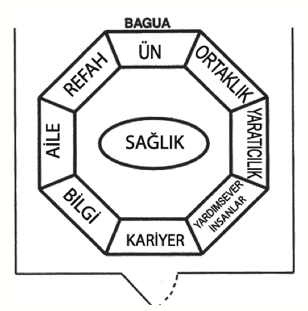
Şekil 5: Bagua
Ünlü Yengeçler
On dördüncü Dalai Lama Hazretleri, Alfred Kinsey, George Orwell, Helen Keller, Princess Diana, Hermann Hesse, Mel Brooks, George W. Bush, Bill Cosby, Tom Cruise, Har-rison Ford, Jean Cocteau, Frida Kahlo, Gustav Mahler, Wole Soyinka, Rembrandt, Nelson Mandela, Ernest Hemingway, Carlos Santana, Robin Williams
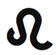
Aslan: Kral ve Kraliçe
23 Temmuz-22 Ağustos
Anahtar İfade: “Yapacağım”- otorite
Genel Nitelikler: Çocuksu, oyunsever, eğlence sever, cömert, sadık, güçlü, çekici, asil, otoriter, karizmatik ve yaratıcı
Karanlık Yön: İnatçı, egemen, ben merkezli, kendini beğenmiş, direngen, kontrolcü ve sabit fikirli
Element: Sabit ateş
Gezegen: Güneş
Gün: Pazar
Tema: Hanedan
Beden Bölümleri: Kalp ve omurga
Renk: Altın ve sarı
Değerli Taş: Kaplan gözü
Müzik Notu: Mi
İbranice Harf: Tet 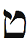
Harfin Kabalistik Anlamı: Yılan
Yaşam Ağacındaki izlek: İzlek 18, Merhamet ve Haşinliği birleştirir
Tarot Kart: Güç
Filmler: Cesur Yürek, Aslan Kral, Narnia Günlükleri, Beşinci Element
Ünlü Kişiler: Bill Clinton, Napoleon Bonaparte, Madonna, Alfred Hitchcock, Fidel Castro, Carl Jung
Olumlama: “Kendimi güçlü, canlı ve mutlu hissediyorum. Kendi kaderimi kendim çizebilirim ve tüm arzularımı gerçekleştirebilirim. Keyfimi ve sevgimi çevremdeki herkes ile paylaşmaya hazırım.”
Genel Bakış
Birçok beyliğin gücünü birleştiren bir kral veya kraliçe gibi Aslan burcu zodyakı birarada tutar. Eski Başkan Bill Clinton’ın, Napolyon’un ve Madonna’nın burcu olan Aslan, sevgi, aşk, çocuklar, mutluluk, oyunseverlik, spor, kumar, ağırlama ve eğlence gibi yaşamın birçok çekici yönünü kapsar. Aslan burcunun enerjisi, ilgi merkezi olmayı ister ve içimizdeki çocuğun ortaya çıkması için bizi dürtükler. Aslan burcu öz-güveni, yaratıcılığı ve spiritüelliğe bağlanmayı öğretir. Aslan ile sevgiye, mutluluğa ve oyunseverliğe odaklanacaksınız. Yaratıcı olmayı ve bir çocuğun masum gözleri ile görmeyi deneyeceksiniz. Yaşamdaki güzelliği tanımayı ve karizmanızı zenginleştirme yollarını öğreneceksiniz. Aslan burcu, yaşamın sunacağı tüm armağanları hak ettiğiniz hissini verirken iradenizi uygulama fırsatları da tanıyacaktır.
Aslan Burcunun Sahası
Yaşam kendini bulmak değildir. Yaşam kendini yaratmaktır.
-George Bernard Shaw, bir Aslan
Güneş nasıl ki milyarlarca yıldır bize ışığını göndermekte, Aslan burcunun sabit ateşi de diğer zodyak burçları için bir deniz feneri görevini üstlenmiş durumda. Aslan, yaz mevsiminin sabit burcudur. Erkeksi ısının, canlılığın ve saf enerjinin destekleyici gücünü simgeler. Yazın, Aslan burcunu yöneten güneşin yeleyi andıran yuvarlağı, önlenemez ışımasını yerküreye gönderir. Tüm burçların en güçlüsü ve ışık kapasitesi en üst seviyede olanı Aslandır. Işığı (fiziksel ve spiritüel olarak) yönlendirme yeteneği, Aslanı astrolojik sistemin kralı yapmıştır. Okul bittiğinde gelen Aslan, çocukların her yerde Tanrının elçileri gibi koşuşturmalarından ve bize kendimizi fazla ciddiye almamamız gerektiğini anımsatmalarından anlayacağımız gibi eğlenceyi, mutluluğu ve çocukları yönetir.
Aslan burcunun sabit ateşi, Tanrının sonsuz alevini simgeler. Kudüsteki eski tapınakta sürekli yanan yedi mumlu lamba, Tanrının bu dünyadaki ebedi varlığını simgeliyordu. Aslan burcunun madeni altın, birçok gelenekte kusursuzluğun göstergesidir. Simya, dört elementi karıştırarak kurşunu altına dönüştürmeye çalışır. ilkönce ateşi (Koç) alacaksın, ona toprağı (Boğa) ekleyeceksin, sonra biraz da hava (ikizler) katacaksın ve en son olarak karışımı suda (Yengeç) eriteceksin. Hepsi pürüzsüz olarak beşinci burç, beşinci element Aslanın içinde harmanlanır. Aslan burcu, önceki burçların ideal birikimidir. Bu mantık Aslan burcunun, her biri bir elementin karşılığı olan dört odacıklı kalbi yönetmesini açıklar. Aslan burcu, yaşamın doruk dersini sunmak için gelir: Her şey sevgi ve Işıktır (spiritüellik).
Kral Aslan, babayı temsil eder. Bu hafta, babanızla veya patron gibi otoriteyi simgeleyen başka birisi ile ilişki kurmaya çalışın. Kral tüm tebaasından saygı talep eder; siz de babanıza, abartmadan gereken sevgi ve saygıyı gösterin.
Özel Aslan Burcunuz
Aslan burcu eviniz, kükremeniz ve kendinizi göstermeniz gereken yerdir. Burada bir kral veya kraliçe gibi davranabilirsiniz. Aslında, burada tam anlamıyla bir kral olabilirsiniz. Bu krallıkta, spiritüellikle, sevgi vererek ve alarak gelişirsiniz. Aslan burcu tarafından yönetilen yaşam alanınıza eğlence ve yaratıcılık gönderin- bir çocuk gibi hareket edin.
Aslan Birinci Evinizde (Yükselen Burcunuz): Siz, karizma ile kutsanmış doğuştan bir lidersiniz. Kendinizi tam olarak ifade edebilmek için içteki çocuğu canlı tutmanız gerekiyor. Dünya ile paylaşacak müthiş bir canlılığınız ve mutluluğunuz var. Aslan haftasında kendinizi sevin, yaratıcılığınızı, kişisel gelişmenizi ve sağlığınızı beslemeye odaklanın.
Aslan İkinci Evde: Gelirinizden ve yeteneklerinizden gurur duymalısınız. Yeteneklerinize ve hünerlerinize olan güveniniz sizi refaha götürecek. Becerikli bir eğlence ve gösteri insanısınız. Para ve finansla oyunsever, çocuksu bir tavır içinde uğraşın. Aslan haftasında finansınız, yetenekleriniz ve iletişim becerileriniz ile ilgilenin.
Aslan Üçüncü Evde: Zekânızdan, yazma ve iletişim becerilerinizden gurur duyuyorsunuz. Çevrenizdekileri esinleyen veya ürküten çarpıcı ve yaratıcı bir iletişim tarzınız var. Aynı zamanda, kardeşlerinizle ve komşularınızla güçlü bir ilişkiniz var. Aslan haftasında akrabalarınıza, iletişim becerilerinize ve işinize odaklanın.
Aslan Dördüncü Evde: Büyük ve ferah bir evde oturmalı ve onu bir şato gibi dekore etmelisiniz. Eviniz sizin kaleniz. Mirasınızla gurur duyuyorsunuz, aile üyelerinize ve köklerinize sadıksınız. Bu hafta evinizi, ailenizi ve annenizi vurgulayın.
Aslan Beşinci Evde: Ağırlama/eğlendirme ve spor konularında müthiş bir yeteneğe sahipsiniz. ilgi merkezi olmaktan hoşlanıyorsunuz, çocuklarla ve yaratıcı, oyunsever insanlarla iyi geçiniyorsunuz. Çoğu insanın yapamadığı bir şekilde tam anlamıyla aşık olma yetiniz var. “Sırılsıklam” deyimini sizin bulduğunuzu düşünüyorum. Aslan haftasında aşkı sonuna kadar yaşadığınıza emin olun.
Aslan Altıncı Evde: Emir almasını sevmiyorsunuz, bu yüzden patron olmanız veya kendi işinizi yapmanız daha iyi olacak. Yaptığınızdan gurur duymaya ihtiyacınız var. Sağlık konusunda kalbinize ve sırtınıza iyi bakın. Bedeninizi aşırı çalıştırıyor veya yoruyorsunuz. Bu hafta iş yerinize, beslenmenize ve sağlığınıza özel ilgi gösterin.
Aslan Yedinci Evde: Renkli, eğlendirici ve yaratıcı insanlar ilginizi çekiyor ama bu kişiler bazen bencil ve çocuksu olabiliyor. Eşinizle ve/veya yaşamınızdaki diğer önemli kişilerle gurur duyma ve onları örnek alma eğiliminiz var. Aslan haftasında ortaklıklarınızı, eşinizi ve diğer önemli kişileri koruduğunuzdan ve onlara gerekli ilgiyi gösterdiğinizden emin olun.
Aslan Sekizinci Evde: Buyurgan ve güçlü ortaklar/eş ve iş arkadaşları çekim alanınıza giriyor. Başka insanların yetenekleri ve parası ile ilgilenmeniz iyi sonuç veriyor. Cinsellik açısından da güçlü ve hükmedici insanlar ilginizi çekiyor. Aslan haftasında cinselliğinize, samimi yakınlığa ve spiritüel dönüşüme odaklanın.
Aslan Dokuzuncu Evde: Felsefenizden ve yaşama bakış açınızdan gurur duyuyorsunuz. Değişik kültürlere ve ülkelere seyahat etmek, aşkı bulmanıza yardımcı olabilir. Yabancı geleneklerin ritüelleri ve seremonileri ilginizi çekiyor. Aslan haftasında, başka kültürlere seyahat edin veya onları inceleyin.
Aslan Onuncu Evde: Kariyerinizden gurur duymak istiyorsunuz. Profesyonel alanınızda etkili bir lider olabilirsiniz.
Eğlendirme yeteneğiniz var ve ilgi merkezi olmayı seviyorsunuz. Zamanınızı ve çabalarınızı kariyeriniz için harcayın. Bu hafta gelişme ve başarı elde edebilirsiniz.
Aslan On birinci Evde: Birçok eğlendirici ve ilginç arkadaşınız var ama çoğu ne yazık ki kendine dönük. Sadık bir arkadaşsınız ve aynı sadakati başkalarından da bekliyorsunuz. Genelde toplumunuzun liderisiniz ve insanlar sizin gücünüze hayran kalıyor. Aslan haftasında arkadaşlıklarınızı besleyin ve geliştirin.
Aslan On ikinci Evde: Geçmiş bir yaşamda ünlü bir kişi olmuş olabilirsiniz. Bir olasılıkla, ününüzü aşırı sahiplendiniz ve aslında Tanrının armağanlarının bir kanalı olduğunuzu unuttunuz. Bu yaşamda, başarı ve tanınmaya giden yol uzun ve engellerle dolu. Geçmiş bir yaşamda babanız çocuğunuz olabilir; otoriteyi simgeleyen kişilerle çözümlenmemiş sorunlarınız olabilir. Aslan haftasında, spiritüelliğinize odaklanmak için işten zaman ayırın ve eski psikolojik ve duygusal engellerden kurtulmaya çalışın.
Drama Kraliçeleri (Ve Kralları)
Aslanı Aslan yapan dramadır. (Aslan burcu eğlendirmeyi, ağırlamayı ve sinemayı yönetir.) Krala veya kraliçeye yaklaştığımız zaman “Ekselansları” deriz ve önünde eğilir, reverans yapar ve daha birçok resmiyetten geçeriz. Bunlara ne gerek var? Kral kral olduğunu ve kraliçe kraliçe olduğunu bilmiyor mu? Kral neden asa, taht ve limuzinde ısrar ediyor? Kraliçe neden mücevherli taç takıyor? Normal bir şapka yeterli değil mi? Neden saray? Gerçekten büyük bir ev yeterli değil mi? Kral ve kraliçe kim olduklarını bilecek kadar kendilerinden emin değiller mi?
Hayır ve işte konu da bu zaten. Aslanlar, tıpkı ünlü kişiler (ve bazı spiritüel gurular) gibi ne kadar büyük olduklarını sürekli duymak isterler. Herkesten. Çocuk gibi, düzenli güvence desteği ve pekiştirme talep ederler.
Kabalistik astroloji, spiritüel sistemin bütününde- ve hatta yaşamın tümünde- önemli bir unsuru ortaya çıkarır. Ben buna tersine kuram diyorum. Aslanlar kendilerinden eminmiş gibi davranırlar ama değillerdir. Aslan olarak (veya haritalarında yoğun Aslan vurgusu ile) yeniden yaşama gelmek isteyen ruhlar, aslında öz-güven edinmek ve bunu geliştirmek istemektedirler. Oz Büyücüsü’ndeki cesaret arayan aslanı anımsıyor musunuz? Boğa sanat burcudur ama Boğanın sanatçı olduğuna inanıyor musunuz? Hayır. O, sanatçı olmayı öğrenmek için Boğa olarak doğmuştur. Oğlaklar sabırlı mıdır? Pek sayılmaz. Aslında sabır konusunda yetersiz olan tek burç Oğlaktır. Ve böylece hepimiz, eksikliğini hissettiğimiz arketipte eğitim görmek için belirli bir burcu seçeriz.
Çimenin rengi nedir? Size bir ipucu vereyim: Yeşil değil. Renkler, tıpkı burçlar gibi belirli frekanslarda ışık dalgalarıdır. Çimen yeşil gözükür çünkü yeşil dışında bütün renkleri (veya ışık frekanslarını) içerir. Tüm renk tayfını içeren beyaz ışık çimene vurunca yapraklar, yeşil dışındaki renkleri emer ve yeşili yansıtırlar, böylece gözünüzdeki retina yeşili kapar. Aynı şey kırmızı elma ile de olur. Elma, kırmızı dışındaki tüm renkleri temsil eder. iletişimden sorumlu ikizler burcunun, “elma kırmızıdır” demeyi “elma, kırmızı dışındaki tüm renklerdir” demekten daha kolay bulduğu belli oluyor. Bu da ikizlerin yalanlarından biri olsa gerek.
Aslan burcu da o zaman, Aslan dışındaki tüm burçları kapsar. “Aslan dışındaki tüm burçlar” veya “Başak hariç bütün burçlar” demek verimsiz ve yorucu olacağı için Aslan ve Başak der geçeriz. Aslanların ilgiye- görkem, drama, taç ve taht- ihtiyaçları vardır çünkü aslında yönetiyor olmaları gereken nitelik olan öz-güvenden yoksundurlar. Sizin için de aynı şey söz konusudur. Burcunuzun özellikleri, buraya öğrenmek için geldiğiniz niteliklerdir. Bu nitelikleri özümsemek için çaba göstermelisiniz çünkü onlardan yoksun doğdunuz. Ana arketipiniz- hangisi ise- gizilliğinizi, kaderinizi ortaya çıkarır. Ona sahip çıkmak sizin elinizdedir. Aslan burcu, kozmik gezginin- burcu ne olursa olsun- nefsini keşfetmek ve nefsini gerçekleştirmek üzere yelken açtığını söyler. Yerkürenin her santimetrekaresi ölçüldüğüne, haritası çıkarıldığına ve internette herkesin görebilmesi için yayınlandığına göre gezginler yeni bir serüven ve yeni bir keşif için açılamazlar. O zaman biz de yolculuğumuzu içe, kaynağa, Bir’e doğru yaparız. Aslanlar, kalplerindeki birleştirici ve bitmeyen sevgiyi anımsatarak bize yol gösterirler.
Aslan burcu, krallığımızın kralı veya kraliçesi olmamız için bizi yüreklendirir. Kralın önemli oranda yetki duyusuna ihtiyacı vardır. Şu olumlamayı yüksek sesle söyleyin: “Ben iyi bir insanım ve sevgiyi, bereketi ve mutluluğu hak ediyorum.” Sonra Aslan burcu için anahtar ifade üzerinde çalışın: “Yapacağım.” Ne istiyorsunuz? Çevrenizdeki insanlardan istediklerinizin listesini yapın. Ölüm vasiyeti yerine yaşam dileklerinizi yazın. Evrenden ne istiyorsunuz?
Aslan Sevgisi
Aslan burcu kalbi ve omurgayı yönetir. Kabalistler Tevrat’a, l ve v’yi simgeleyen ibranice harflerle başlayıp bittiği için ibranicede “kalp” anlamına gelen Lev derler. Bu lakap, eski ahitin bilgeliğini zihinle değil, kalple anlamamız gerektiğini ima eder. Eski Mısır hiyeroglifleri insanı her zaman, göğsünü önde ve yüzünü profilden göstermiştir. Bu tuhaf bileşim, Mısırlı sanatçıların ilkelliğinden kaynaklanmaz; bu, tersine insan kalbinin beyne olan üstünlüğünü gösteren şairane bir ifadedir.
Omurga da birçok kültürün efsanesinde ve spiritüel öğretisinde önemli bir yer kaplar. Kutsal kitap Exodus’te (Mısırdan Çıkış) Tanrı Musa’ya, Tanrının harikalarının Musanın çoban değneği ile yönlendirileceğini söyler. Değnek, veya baston, büyücülerin ana aracıdır; cadılar ise daha pratik bir baston olan süpürgeyi kullanırlar. Baston omurgayı simgeler. Kundalini yoga, omurganın dibinde kutsal bir yılanın çöreklendiğini söyler. Yoga ve spiritüel uygulamalar ile bu yılanı uyandırmayı, onun omurgada yükselerek taç şakraya erişmesini ve böylelikle aydınlanmayı hedefleriz. Diğer bir deyişle, Aslan burcu (kalp ve omurga) Tanrıya ulaşmamıza olanak tanır. ilahi sevgiye varmak için beş burçtan- dört elementin hepsinden- geçmemiz gerekti. O Işığı yönlendirdiğimiz zaman, sevdiğimiz zaman, zodyaka göre kaderimizin kralı, Aslan oluruz.

Kral Aslan, babayı temsil eder. Bu hafta, babanızla veya patron gibi otoriteyi simgeleyen başka birisi ile ilişki kurmaya çalışın. Kral tüm tebaasından saygı talep eder; siz de babanıza, abartmadan gereken sevgi ve saygıyı gösterin.

Hemen her spiritüel gelenek Tanrı yolunun sevgiden geçtiğini söyler. Büyük Sufi ve şair Rumi, Tanrı ile olan ilişkisinin sevgiliye duyulan özlem olduğunu anlatır. Büyüleyici gizemsel destan C. S. Lewis’in Narnia Günlükleri’nde baş kahraman, Aslan adında bir aslandır (Aslan, Türkçedir). Bu öyküde Aslan (Aslan burcunun simgesi) sevginin ruhunu simgeler. Aslan burcu aynı zamanda iç çocuğu ve genelde çocukları temsil eder. Aşık olduğumuz zaman genelde çocuksu ve yaratıcı oluruz. Her şey, hatta yolda yapılan sıradan yürüyüşler veya market alışverişi bile eğlenceye dönüşür. Aslan burcu, sevgi ve aydınlanmanın kralıdır. Aslanın enerjisi dönüştürücü ve büyülüdür. Ve bu nedenle Aslan burcuna, tüm diğer arke-tipler üzerinde egemenlik hakkı verildi.
Haritanızdaki Aslan burcu, bir Işık hüzmesi ve Sevgi yolu olabileceğiniz yaşam alanını vurgular. Açık bir kalbin ve açık bir sevginin size güç, cesaret ve başarı katacağı yeri gösterir.
Altın Çocuk
Aslanlar çekicidir. Oynamasını, partileri ve eğlenmeyi severler. Küçük çocuklar gibi ilgiden hoşlanırlar ve durmadan eğlendirirler; dolayısıyla, Aslan burcu sinemayı, tiyatroyu, tüm gösteri biçimlerini, yaratıcılığı, sporu ve kumarı gözetir. Friedrich Nietzche Böyle Buyurdu Zerdüşt adlı eserinde ruhun üç aşamasını açıklar. Hepimiz, bir yük hayvanı olan ve sahibinin iradesine bağlı bir deve olarak başlarız. Sonra, kendi irade ve arzularına bağlı bir aslana (Aslan burcu) dönüşürüz. Aslan hiç kimsenin buyruğu altına girmeyecek kadar gururlu olmasına rağmen kendisinin kölesidir. Kabala, kendi irademize olan takıntımızdan kurtulacak, gönüllü olarak kendimizi maruz bıraktığımız benlik köleliğini aşacak yolu gösterir. Kabala, Tanrının iradesini kendimizinkinin önüne koyduğumuzda gelişmenin bir üst aşamasına yükseleceğimizi söyler. Usta bir Kabalist olan isa bu öğretiyi, “Tanrının iradesi yerine gelecek” şeklinde özetledi.
Tarot kardı Güç, Aslan burcunun bu öz spiritüel belitini (aksiyom) vurgular. Sadece güçlü, gerçekten cesur ve yenilmez olan birey, iç Aslanından, yani kendi iradesinden vazgeçebilir. Kendi irademizin ve benliğimizin esiri olmayı durdurduğumuz anda Nietzche’ye göre son aşamaya geçeriz. işte o zaman aslanın içinden Nietzche’nin “Çocuk” olarak adlandırdığı, kimseye bağlı olmayan ama her şeyle uyumlu olan kusursuz varlık, altın çocuk çıkar. Bu çocuk, çocuksu değildir; yaşamla gülen ve ağlayan çocuk gibi bir insandır. Birçok seçkin spiritüel lider sürekli güler. Aptalca gözükmekten veya hayranları arasında oyunla karışık şaka yapmaktan asla korkmazlar.
Aslan burcu, iç çocuğunuzun (yüksek ruhunuzun) evini gösterir. Ve Aslan eviniz sizi doğrudan Tanrının iradesine bağlar. Yaşamınızın bu alanında bir spiritüel usta olabilir, bir çocuk gibi davranarak ve eğlenceyi besleyerek muhteşem bir şekilde parlayabilirsiniz. Başarı, yaratıcılık ve oyunseverlik ile gelir. Yaşamın bu alanında saçmalık yapın, o zaman daha ciddiye alınacaksınız.

Aslan burcu, krallığımızın kralı veya kraliçesi olmamız için bizi yüreklendirir. Kralın önemli oranda yetki duyusuna ihtiyacı vardır. Şu olumlamayı yüksek sesle söyleyin: “Ben iyi bir insanım ve sevgiyi, bereketi ve mutluluğu hak ediyorum.” Sonra Aslan burcu için anahtar ifade üzerinde çalışın: “Yapacağım.” Ne istiyorsunuz? Çevrenizdeki insanlardan istediklerinizin listesini yapın. Ölüm vasiyeti yerine yaşam dileklerinizi yazın. Evrenden ne istiyorsunuz?

Aslan burcu iş evinde olan bir kadın, ciddi iş arkadaşlarına uyum sağlayabilmek için iş yerinde iç çocuğunu ve oyunseverliğini bastırmış olduğunu farketti. Bu arada, zam veya terfi de alamıyordu. Aslan haftasında, doğal mizah duyusunu ve komikliğini ortaya çıkarsın diye iş yerine kocaman doldurulmuş bir aslan oyuncak getirdi. Aniden, çalışanların ruh halleri değişti ve herkes gülmeye, saçma oyuncak hakkında şakalar yapmaya başladı. Altı ay sonra, bu kadın terfi etmiş ve büyük bir zam almıştı. Tek sıkıntı, komik kukla gösterileri ile eğlendirmekten zevk aldığı insanları geride bırakıp yeni bir bölüme geçmesi idi. Ayrılma hediyesi olarak onlara neşeli aslanını bıraktı.
Doğum Gününüz: Aslan Gününüz
Bugünden itibaren her yıl doğum gününüzü mutlaka kutlamaya karar verin. “Yaşlanma korkusu” denilen zırvayı unutun. Doğum gününüzü asla gizlemeyin. Bu tehlikeli bile olabilir. Hepimiz bir noktada, ilerleyen yaş ile ilgili sıkıntı çekmeye başlıyoruz. Bir seferinde, doğum yılını söylemek istemeyen bir kadın için doğum haritası çıkarmam gerekiyordu ama bu kişi, yaşını söylemeden haritasını oluşturamayacağıma inanmak istemiyordu. Tüm yaşayan ve ölü tanrılar ve tanrıçalar adına sırrını kimseye açıklamayacağıma yemin ettikten sonra ancak, bilgileri alabildim.
Neden bu kadar gurur ve acı pahasına, yaş-metrede bir çizgi daha atlamamızı kutlayalım? Çünkü doğum gününüz Aslan günüdür. Bu tarihte güneş, doğum anınızdaki noktaya geri döner. Haritanızı güçlü bir şekilde aydınlatır. Böylece bir güneş yerine iki güneşe sahip olursunuz- doğum haritanızda kazılan güneşin üstünde her yıl bütün burçları gezen bugünün gerçek güneşi. Astrologlar buna solar (güneş) buluşma derler. Müthiş değil mi? San Diego’daki hava gibi güneşli ve sıcak. Ama bu aynı zamanda tehlikelidir. Çok fazla güneş- iki ateşli güneş- çok, çok sıcak olabilir.
Astrolojik açıdan doğum gününüz yılın en zorlu günlerinden biridir (yaşınız ne olursa olsun). iki güneş sizi bir fırın gibi pişirir ve gerçekçi olmayan beklentiler yaratır. Aslan burcu güneşi yönettiği için çifte Aslan olursunuz; ilgi, şımarma ve krala (size) saygı ihtiyacınız katlanır. Dolayısıyla, eski zamanlardan beri birçok gelenek, bu haşin günle başetmemizi kolaylaştırmak için kabul edildiğimizi, sevildiğimizi, özel ve krallara layık olduğumuzu hissetmemizi sağlayan ritüeller (Aslan burcu) oluşturmuştur. Hediyeler (krala saygı) alırsınız. Doğum gününüzü kutlamak için arkadaşlarınız sizi arar veya yemeğe, içkiye götürür (unutanların kafası uçmalı!). Sevenleriniz size alevli bir kek getirirken siz odanın ortasında durursunuz. Ünlü bir kişiymişsiniz gibi herkes fotoğrafınızı çeker. O gün siz ünlü bir kişisiniz. Bu nedenle, iki güneşin sizi yakmasına izin vermeyin. Kutlayın.
Doğum gününüz bu Aslan haftasına rastgelmese bile şimdi bir Aslan olmak durumundasınız. Kendinize bir hediye alın. Evrene özel olduğunuzu ve almayı hak ettiğinizi bildiren bir mesaj gönderin. Evren yetkinizi tanıyacak ve ek hediyeler gönderecektir.
Aslan İle Geçinmek
- Mutlu ve oyunsever olun. İlginç olmak ve bakmayı/beslemeyi sevmek bu burç için pek bir şey ifade etmiyor. Aslanlar eğlenceye değer verirler.
- Aslanları sevin, onlara hayran olun ve onları kral gibi hissettirin.
- Aslanlara mümkün olduğu kadar çok ilgi gösterin. Evreninizin merkezi olduklarını hissederlerse parıldarlar.
- Mümkün olduğu kadar çok kompliman yapın, olumlama sunun.
- Serüven ve riskli etkinlik başlatın. Bunlar, Niagara Çağlayanından atlamak gibi aşırı olmak zorunda değiller ama heyecanlı olmalılar.
- Aslanların ritüele ihtiyaçları vardır. Mümkünse onlarla, her Salı öğleden sonra saat birde birbirinizi aramak, her ayın ilk Pazarında yoga dersine gitmek gibi düzenli etkinlikler oluşturun.
- Sadık bir arkadaş olun. Aslanlar, ihanete tahammül edemezler ve bir haini nadiren affederler. Tarih boyunca krala veya kraliçeye ihanet, şiddetli ceza ile son bulmuştur. Aslanlar en iyi arkadaş ve en kötü düşman olma eğilimindedirler.
- Aslanlara iradelerini ifade etmeleri için olanak tanıyın. Projelerinde ve girişimlerinde yardım önerin.
Gücün Karanlık Yönü: Aslan Burcu
Şimdi büyük bir risk alıyorum. Bir Aslanın kusurlarını açıklamaya cesaret etmek, ihanet etmekle birebirdir- en azından siz dışardaki Aslanlar için. Ama kral arkadaşlarımızdan saygımızı eksik etmeyerek söyleyebiliriz ki Aslanların kırılgan öz-güveni, eleştiri almaya yatkın değildir. Alice Harikalar Diyarı’ndaki Kupa Damını anımsıyor musunuz? Kim iradesine kafa tuttuysa hemen tipik bir Aslan komutu “Kafası uçsun!” ile karşılaşmıştı.
Ek olarak Aslanlar aşırı verme eğilimindedirler ve başkalarından almakta zorluk çekerler. Tabii ki aşırı övgüyü severler ama gururları- içsel öz-kuşkuyu ve yetersizliği gizleme eğilimi (bir kral zayıflık gösteremez)- yüzünden bir şeye ihtiyaç duyduklarını açıklayamazlar. Karşılığında bir şey yapma zorunluluğunu hissetmeden yardım alamazlar. Baba filminin ilk sahnesinde, bir adam Don’u ziyaret eder ve bir iyilik ister. istediğini alır ama bunun bir bedeli vardır. Gelecekte bir gün, Baba ondan bir şey isteyecektir. Bu güzel bir pazarlık değildir. Bedelin ne olacağını veya ne zaman ödeneceğini bilemezsiniz. Bu, kraldan arazi ve varlık alan ama inansa da inanmasa da bir gün kral için savaşa gideceğini bilen beyin durumuna benzer. Aslanlar koşullu verirler. Bu koşul sadakattir. Bu riskli anlaşmayı başkaları ile zorla yaptıkları için alırken biraz kıvranırlar. Az da olsa güç devretmekten hoşlanmazlar. Bu yüzden, bir Aslana bir şey verirken, niyetinizden kuşku duymaması için koşul koymamak en iyisidir. Ve Aslanlar da herkesten çok, aynı konu üzerinde çalışmalılar.

Doğum gününüz bu Aslan haftasına rastgelmese bile şimdi bir Aslan olmak durumundasınız. Kendinize bir hediye alın. Evrene özel olduğunuzu ve almayı hak ettiğinizi bildiren bir mesaj gönderin. Evren yetkinizi tanıyacak ve ek hediyeler gönderecektir.

Çocukların burcu olarak Aslanlar çocuksu, ben-merkezli, talepkâr ve kontrolcü olurlar. Her şeyi- genelde övgü, sevgi ve ilgi- hemen şimdi isterler. Tanıdığım bir Aslan, bir öfke anında, beni aradı ve onu aramamamı söyledi. Ben onu aramamıştım bile ama son emri kendisinin vermesi gerektiğini hissetmişti. Aslanlar aynı zamanda, sevmeleri gereken insana değil, aşkın kendisine aşık olmanın çocuksu eğilimini sergilerler. Aşk hissi o denli baş döndürür ki eşlerini unuturlar. Eğer bu eş siz iseniz Aslanı varlığınızdan haberdar etme durumundasınız.
Bir ufak kusur daha ve söz veriyorum, bundan sonra Aslana hak ettiği şekilde hayran kalmayı sürdüreceğiz. Napoleon sendromu, birey kendini fiziksel, spiritüel, entelektüel veya duygusal olarak küçük gördüğü zaman ortaya çıkan Aslan-temelli bir nevrozdur. Bu insan sonra, “Kimin küçük olduğunu size gösteririm!” dercesine saldırgan bir şekilde çevreyi fethederek ve kontrol ederek, bu yetersizliğini örtmeye çalışır. Napoleon, kendini imparator ilan ederek ve Avrupanın büyük bir kısmını fethederek bir süre başarılı oldu ama dünya sonunda onun bu saçmalıklarından bıktı ve onu küçük bir adaya hapsetti. Çare: Aslana övgü ve olumlama sunun. Ve tüm Aslan okurlarıma kişisel bir not: Başımı bağışladıkları için Ekselanslarına teşekkür ederim.
İbranice Harf Tet
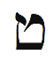
İbranice harf Tet Aslan burcunu simgeler. Harfin simgesinin, Sanskrit dilinde kundalini diye bilinen çöreklenmiş yılana benzemesi gerekiyor. Doğunun ve Batının ezoterik öğretileri, Tanrının elçilerini Aslan burcu ile ilişkili simgelerle anlatır. Kabalistik gelenek ibranice harflerin gerçek gücünü, Tevrat’ta o harf ile başlayan ilk sözcüğü inceleyerek anlayabileceğimizi ileri sürer. Tet ile başlayan ilk sözcük, “iyilik,” “iyi” veya “güzellik” anlamına gelen Tov’dur. Diğer bir deyişle, Aslan burcu iyiliği ve iyi niyeti yönetir. Bu burç bize keyif ve rahatlık sunmayı çok sever. Tov sözcüğü Yaratılış kitabının tam başında yer alır. Tanrı Işığı yaratır ve dize, Tanrı “bunun iyi (Tov) olduğunu” gördü, der. Diğer bir deyişle, Tanrı bunun Aslan olduğunu gördü. Aslanların şişmiş benliklere sahip olma eğilimlerine ve kral gibi davranmalarına şaşırmamalı. Aslan Tanrının Işığını betimler ve kapsar.
Haritanızdaki Aslan burcu, iyilik ve güzellik sergileme gizilliğinizi vurgular. Bu burcun olduğu ev, insanların sizi takdir edecekleri ve sevecekleri yaşam alanıdır. Sevgi, aşk, oyunseverlik ve cömertlik istediğinizde Tet harfi ile meditas-yon yapın.
Bedenin Bölümleri
Aslan burcu kalbi, omurgayı, sırtı ve göğsü yönettiği için Aslanların (ve Aslan yükseleni olanların) göğüslerinin büyük olma olasılığı vardır. Kalp sorunlarına biraz daha yatkındırlar; bunun da nedeni belki de A tipi kişiliğe (sabırsız, dakik, kontrolcü, yarışmacı, saldırgan, kusursuzluk arayan, ç.n.) sahip olmalarıdır. Bir kalp krizi geçirdiğimizde sanki Aslan krizi geçiriyor gibi oluruz. Ya yeteri Aslan enerjimiz yoktur (sevgi, spiritüellik, oyunseverlik) ya da bu enerjiyi aşırı kullanıyor olabiliriz. Her iki halde de bu durumu düzeltmek, Aslan arketipini dengelemek demektir. Bu hafta, A tipi kişiliğinizi zora sokmadan kendinizi A listesine yerleştirin. Yavaş yürüyün, sırada sabırla bekleyin ve derin nefes alın. Aerobik hareketler kalbin dostudur; dolayısıyla, en az üç kez koşun, yüzün veya yürüyüşe çıkın.
Aslan Burcunun Renkleri: Sarı ve Altın
Aslan burcunun rengi, asil renk altındır. Altının parldaya-rak göze çarpması gibi Aslanlar da ilgi çekmeyi severler. Aslan burcunun enerjilerini yönlendirmek için altın takı ve giysi kullanın. Altının kuzeni, güneşin rengi ve aslanın kürkü olan sarı da Aslan burcunun rengidir. Evinize yeteri kadar sarı veya altın rengi serpiştirdiğinizden emin olun. Böylelikle size sevgi, mutluluk ve canlılık akacaktır.
Aslan Haftasında Neye Odaklanmalıyım?
Aslan haftasında eğlenceye odaklanın. Çocuklarla ve oyun-sever insanlarla zaman geçirin. Risk alın ve bir serüvene çıkın. (Kendinize veya başkalarına zarar vermemeye dikkat edin.) Sahneye çıkın, rol yapın, gösteri sergileyin veya bir çocuk gibi davranın. Ek olarak, yaşamınıza yeni bir şey katın- işte, ailede, aşk hayatında, seks hayatında veya Aslan burcu haritanızda nerede yer alıyorsa.
Sizi, kendinizi ve yaratıcılığınızı ifade edebileceğiniz yerlere yönlendirecek eş-zamanlılıkları kollayın. Aslan burcunun simgeleri: Aslanlar, güneş, çocuklar, ünlüler, kraliyet üyeleri, cesaret, güç, sevgi, spor, kumar, risk, spiritüellik ve spi-ritüel totemler, Pazar, ritüeller, saç yeleleri, altın rengi veya sarı, kalp, omurga, yılanlar, kendini beğenmişlik, bencillik, çocuksu olmak, doğum günleri, eğlence, serüven, kompliman, mutluluk, yaratıcılık
Aslan Haftası Kontrol Listesi
- Bir kral veya kraliçe olun.Haketme duyunuz üzerinde çalışın.
- Aslan burcunun olumlamasını günde iki kez söyleyin: “Kendi mi güçlü, canlı ve mutlu hissediyorum. Kendi kaderimi kendim çizebilirim ve tüm arzularımı gerçekleştirebilirim. Keyfimi ve sevgimi çevremdeki herkes ile paylaşmaya hazırım.”
- “İradem yerine gelecek!” Yaşam arzunuzu yazın. Ne istiyor sunuz?
- Tet harfi ile meditasyon yapın.
- Sarı veya altın rengi giyin.
- Babanızı, patronunuzu veya sevdiğiniz başka bir otoriter kişiyi arayın.
- İç çocuğunuzu özgür bırakın. Oyun oynayın.
- Doğum gününüz olmasa bile kendinize doğum günü hediyesi alın.
- Çocuklarla zaman geçirin.
Aslan Ritüeli: Gördüğünüz Her Şeyde Güzel Bir Şey Bulmak
On yıldır Hollywood’da yaşıyorum ve birçok oyuncuyu, hem üne kavuşmadan önce ve hem de üne kavuştuktan sonra tanıdım. Bu insanların hepsinde bir çekicilik ve enerji vardır. Sanki içlerindeki Aslan ortaya çıkıp onları ünlü yapmıştır. Bunu nasıl başarıyorlar? Ünlü bir şarkıcı bana sırrını anlattı. Bir partide, görüşmede veya sette birisi ile karşılaştığında hemen o kişi ile ilgili güzel bir şey arayıp bulduğunu ama bunun sahte olmadığını söyledi. Ben şeytanın avukatlığını oynayıp sordum: “Ya güzel bir şey bulamazsan? Herkes bir yıldız olamaz ki!” Şarkıcı hemen yanıtladı: “Herkeste güzel bir şeyler vardır. Altının parıltısı bir şekilde farkedilir.” Şarkıcının bunu nasıl uyguladığına tanık oldum. Bir gün bir toplulukta, pek de çekici olmayan bir adama rastladık. Şarkıcı adamın elini sıktıktan sonra ayaklarına işaret etti. “Bunlar ne güzel ayakkabılar böyle! Nereden aldınız?” Haklıydı. Ayakkabılar gerçekten göze çarpıyordu. Ve kompliman bir büyü gibi çalıştı. Adam, arkadaşım ile konuşurken açıldı ve uzun süre iş ve ayakkabı konuştular.
Sadece şunu anımsayın: Büyü, yalan söylemediğinizde çalışıyor. Bu hafta karşılaştığınız herkesle bu büyüyü deneyin. Kendinizle başlayın. Ortağınızla/eşinizle, arkadaşlarınızla ve yabancılarla kullanın. Bu yöntem birlikte olduğunuz, çalıştığınız her bireyin kalbini açacaktır. Neden? Çünkü yöntem, insanın kendisini bir Aslan gibi hissetmesini sağlıyor- kral gibi, özel ve muhteşem.
Ünlü Aslanlar
Ünlü Aslan listesi bu kitabı kapsayabilir çünkü Aslanlar doğuştan, ün ve tanınma için çabalarlar. işte bunlardan bazıları: Stanley Kubrick, Henry Ford, C. G. Jung, Mick Jagger, Amelia Earhart, Arnold Schwarzenegger, Jennifer Lopez, Barry Bonds, Percy Bysshe Shelley, Neil Armstrong, Lucille Ball, Mata Hari, Dustin Hoffman, Whitney Houston, Cecil B. DeMille, Alfred Hitchcock, Fidel Castro, Magic Johnson, Lawrence of Arabia, Madonna, Robert De Niro, Robert Redford, Bill Clinton

Haritanızdaki Aslan burcu, iyilik ve güzellik sergileme gizilliğinizi vurgular. Bu burcun olduğu ev, insanların sizi takdir edecekleri ve sevecekleri yaşam alanıdır. Sevgi, aşk, oyunseverlik ve cömertlik istediğinizde Tet harfi ile meditasyon yapın.

Başak: Onaran ve Yapan
23 Ağustos-22 Eylül
Anahtar İfade: “Çözümlüyorum”- otorite
Genel Nitelikler: Alçakgönüllü, dürüst, ılımlı, incelikli ayırım yapabilen, düzenli, çözümleyici, mantıklı, sorumlu, fedakâr (özgecil), çalışkan, şifacı ve tanı koyucu güce sahip
Karanlık Yön: Kusursuzluğu arayan, takıntılı-zorlantılı, aşırı eleştirel, küçük ve önemsiz ayrıntılara aşırı ilgi gösteren
Element: Değişken toprak
Gezegen: Merkür
Gün: Çarşamba
Tema: işlerin olmasını sağlamak
Beden Bölümleri: Bağırsaklar, kolon
Renk: Sarı-yeşil
Değerli Taş: Akik
Müzik Notu: Fa
İbranice Harf: Yod
Harfin Kabalistik Anlamı: Tanrının eli
Yaşam Ağacındaki izlek: izlek 9, Güzelliği ve Merhameti birleştiren
Tarot Kart: Keşiş
Filmler: Elizabeth: Bakire Kraliçe, Elizabeth: Altın Çağ, Mary Poppins, Benden Bu Kadar, Neşeli Günler, Gülün Adı
Olumlama: “insanlığa ve Tanrının iradesine hizmet için kendimi adadım. Arındım ve sağlıklıyım. Gizilliğimi ortaya çıkarmama yardım ettiği için bedenime teşekkür ediyorum.”
Genel Bakış
Başaklar, zodyakın tüm arızalarını onarırlar. Bir yerde onlar, her an hizmete hazır Tanrının teknik destek ekibidir. ilgi isteyen çocuksu Aslan burcundan sonra gelen Başak burcunun görevi, aslanların geride bıraktığı dağınıklığı düzenlemek ve döngünün pürüzsüz hareketini sağlama almaktır. Kraliçe 1. Elizabeth’in ve Rahibe Teresa’nın burcu olan Başak, iş, hizmet, sağlık ve saflık arketipidir. Başak burcu bize, fiziksel bedenin önemini anımsatır. Başak için doğru beslenme, düzen ve sağlık en başta gelir. Bu arketip aynı zamanda, çözümleyici, düzenli, yöntem sahibi ve hassas çalışan olmamız için bize yardım eder. Başak burcunda iş ahlâkınızı ve sağlığınızı geliştireceksiniz. Yediğinize dikkat edecek ve fiziksel esenliğinizi iyileştirmek için ipuçları bulacaksınız. Bu burç, daha çok kendine yeten bir insan olmanız ve kendinizi bağımlılıktan, karşılıklı bağımlılıktan kurtarmanız için sizi yüreklendirecek.
Başak Burcunun Sahası
Başakların işi zordur. Sabit burç olarak tahtına yapışmış Kral Aslanı, tacını ve gücünü bırakması için ikna etmek durumundadırlar. Bitmez tükenmez bir Aslan hali, ölümcül olabilir. Aslan kavurucu güneş ile dünyayı çöle dönüştürebilir. Başak, zekâsını kullanıp Aslanı kenara itmeli ve serin mevsime yol açmalıdır. Hileci gezegen ve tanrıların elçisi Merkür bu belalı görevi teşvik eder. ikizleri ve Başağı yöneten Merkür bu iki değişken burcu, imparatoriçe Boğayı ve Kral Aslanı değerli mülklerini terketmek için kandırmak üzere güzel konuşma yeteneği ve zekâ ile donatır. Başak, yatmamakta direnen söz dinlemez çocuk gibi tahtını terketmeyi reddeden aslanın vahşi krizlerine ve kükremelerine dayanabilmek için azimli olmalıdır. Başak, zodyakın Aslanı uyumaya gönderen süper dadısı-dır ve aynı zamanda, Yaşam Kitabının ayrıntılara dikkat eden editörüdür. Bir editör olarak, her paragrafın birbirini uyum içinde izlediğine emin olmalıdır. Başak olmaksızın en muhteşem öykü bile, okunamaz kargaşaya dönüşür.
Başlangıç aşamasındaki bazı astrologlar, Başak ile ikizler burçlarını birbirinden ayırdetmekte zorlanırlar çünkü her ikisi de Merkürün inandırıcı iletişim gücüne sahiptir. Basit olarak belirtmek gerekirse, ikizler yazar, Başak editördür. Hava burcu ikizler, havada bir radyo dalgası gibi seyahat eden mesajı oluştururken toprak burcu Başak, bu mesajı duymamızı sağlayan radyo gibidir.
Astroloji hakkında az bilgisi olan Başak babam, bu ikiliğin en özlü açıklamasını yaptı. Dünyanın, her şey hakkında hiçbir şey bilmeyen insanlar (ikizler) ve hiçbir şey hakkında her şeyi bilen insanlar (Başak) olarak ikiye ayrıldığını söyledi. ikizler, Merkürün enerjisini kullanarak mümkün olan her konu hakkında biraz bilgi toplar (ki bu, onu ilginç yapar) ve Başak, küçük bir yaşam dilimine dalmak için Merkürden yararlanır (bu da onu kusursuz çalışan bir insan yapar). ikizler teleskoptur, Başak mikroskop. Bilimin ikisine de ihtiyacı vardır.
Haritanızda Başak ve ikizler evlerini bulun. Başak burcu tarafından yönetilen evde bir mikroskop olarak mı çalışıyorsunuz? ikizler burcunun yönettiği alanda bir teleskop mu kullanıyorsunuz? Bazı insanlar bu kurulumu tersine döndürmüşler, Başak evindeki her şeyden bir miktar bilmeye ve tek bir konu hakkında fazla bir şey bilmemeye odaklanmışlardır. Yöneten burçla olan bu uyumsuzluk, yaşamın o alanında başarı elde etmeyi zorlaştırır. Bir kadın, örneğin, Başak burcunun sağlık ve beslenmeyi barındıran altıncı evde olduğunu saptamıştı ama bu evde bir ikizler gibi davranıyordu. Sayısız beslenme biçimleri deniyor, iki haftada bir rejim değiştiriyordu. Bu, Başak burcu enerjisi için yanlış bir yaklaşımdı ve beklenildiği gibi, rejimlerin hiçbiri işe yaramadı. Kadın, Başak yaklaşımını benimsediğinde bir tek beslenme biçimini seçip inceledi, ona bağlı kaldı ve uzun süre bu rejimi uyguladı. Bu onun için zor bir uğraştı ama üç ay sonra, on yıl öncesinden kalma pantalonlarını giyebilmeye başlamıştı.
Başak Burcu ve Sağlık: Mikroskop Altındaki Yaşam
Başaklar yaşama mikroskoptan bakarlar. Bir mikroskopla baktığınızda ne görürsünüz? Büyük bir Rönesans resminin müthiş güzelliğini göremezsiniz ama çerçevesinin bir köşesinin biraz çarpık olduğunun farkına varırsınız. Yeni boyanmış duvarınızın odadaki mobilya ile ne güzel uyum sağladığını göremezsiniz ama lambanın arkasında, halıya küçük bir damla boya sıçramış olduğunu seçebilirsiniz. Mikroskopla baktığınızda genelde gördüğünüz şey mikroplardır.

Haritanızda Başak ve ikizler evlerini bulun. Başak burcu tarafından yönetilen evde bir mikroskop olarak mı çalışıyorsunuz? ikizler burcunun yönettiği alanda bir teleskop mu kullanıyorsunuz? Bazı insanlar bu kurulumu tersine döndürmüşler, Başak evindeki her şeyden bir miktar bilmeye ve tek bir konu hakkında fazla bir şey bilmemeye odaklanmışlardır. Yöneten burçla olan bu uyumsuzluk, yaşamın o alanında başarı elde etmeyi zorlaştırır.

Mikroskopla bakıp atomun yapısını çıkaran Ernest Rut-herford bir Başaktı. Bu her şeyi parçalara ayırıp inceleme ve çözümleme takıntısı Başağı, hastalıkların nedenlerini bulmada, beslenmekteki kusurları ortaya çıkarmada ve yaşamlarımızda hatalı olan her şeyi temizleme ve düzeltme konusunda inanılmaz derecede becerikli yapar. Başak, gıda ambalajındaki ufak yazıları okuyup ürünün katkı maddesi içerip içermediğini bilmek ister. Doğal olarak, Başak burcu sağlık ve hijyeni yönetir. Başağın üstün organizasyonu ve küçük ayrıntılara olan ilgisi bizi, Aslanın azgın ve dağınık partisinden sonra kendimize çeki düzen vermeye zorlar. Bunun eğlenceli bir iş olduğu söylenemez. Ama Başak bizi ölümüne içmekten ve dansetmekten kurtarır.
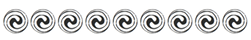
Bu hafta her gün Başak Organik Tahıl Ezmesi yemeye çalışın. Hemen müthiş değişimlere tanık olacaksınız.

Bir psikoanalist ve natüropat (doğal yöntemlerle iyileştiren kişi) olan yakın arkadaşım Dr. Julian Neil, bir ara sabah beslenmem ile ilgilendi. Ona rastlamadan önce kahvaltı benim için kapuçino ve çikolatalı bisküviden ibaretti (bu bisküviyi çok özlediğimi itiraf etmeliyim). Arkadaşım bu tarz beslenmenin beden üzerindeki ayrıntılı ve şaşırtıcı etkisinin biyolojisini anlatınca her şey değişti. Kısacası, yakında organlarım isyan edecekti. Neil her sabah organik tahıl ezmesi hazırlamamı önerdi. Alışmam uzun sürdü ama bu yeni rejimin sağlığım, enerjim ve mizacım üzerindeki etkisi mucizevi oldu. (Ve ben de çikolatanın insanları mutlu ettiğini sanırdım.) Bu hafta her sabah bu kahvaltıyı yapmaya çalışın. Hemen müthiş değişimlere tanık olacaksınız. (Zihinsel, duygusal, psişik veya spiritüel sorunlardan kaynaklanan tıbbi konular için lütfen Neil’in web sitesini ziyaret edin: www.DrJulianNeil.com. Orada birçok değerli makale ve sağlık ipuçları bulacaksınız.)
Başak Organik Tahıl Ezmesi
Malzeme
Küçük, geniş ağızlı bir termos
Beş organik tam tahıl taneleri (işlenmiş veya pul pul olmayacak): Darı, arpa, çavdar, amarant (horoz ibiği çiçeği), keten tohumu
Organik ham susam ve ayçiçeği tohumları Dr. Bernard Jensen’in Pirinç Kepeği Şurubu
Dr. Bernard Jensen’in Vişne Suyu Konsantresi (Üzüm veya elma konsantresi de olabilir.)
İki organik meyve; (kivi dışında) turunçgil olmayacak (Nitrat veya sülfit içermeyen kuru organik meyve da kullanabilirsiniz.)
Yapılışı
1. Tam tahıl tanelerinin her birinden yedişer çorba kaşığı ayırın ve hepsini temiz bir kahve öğütücüde öğütün.
2. Tohumların her birinden ikişer çorba kaşığı öğütün.
3. Öğütülmüş tahıl tanelerini ve tohumları karıştırın.
4. Akşam, karışımdan üç çorba kaşığını termosa koyun.
5. Karışımı kaşıkla karıştırırken kaynar su ekleyin. Tohumlar ve taneler su emeceği için karışım çorba kıvamında olsun.
6. Termosun kapağını iyice kapatın ve gece bekletin.
7. Sabah, bulamacı termostan çıkarın ve aşağıdakileri ekleyin:
Seçtiğiniz iki meyve
Bir çorba kaşığı pirinç kepeği şurubu
Bir çorba kaşığı vişne suyu konsantresi
Tarçın veya baharat. (Şeker veya bal olmaz. Bulamacın daha tatlı olmasını istiyorsanız pirinç kepeği şurubu miktarını artırın.)
Bu bulamacı her sabah yiyin. Zamanla hormonları dengeleye- cek, bağırsak hareketlerini düzenleyecek, sinir sistemini güçlen- direcek ve kanı temizleyecektir.
Arınma
Başak burcu, zodyakın ani değişiklik dönemidir. Otuz günlük hovarda Aslan tatilinden sonra Başak burcu bizi gerçeğe geri getirir. Çocukların okulu başlar. Birçok yetişkin tedaviye gider. Los Angeles’te ve New York’ta çalıştığım için sürekli, Anonim Alkolikler veya benzer on-iki-adım programlar içeren tedavi merkezlerinde insanlarla konuşuyorum. Hepsi gururla ilan ediyor: “Üç yıl, beş ay ve yirmi gündür ayığım.” (Bu insanların saatine kadar, uyuşturucudan veya içkiden uzak kaldıkları süreyi çok iyi anımsamlarını ama evlilik sürelerini veya çocuklarının yaşını unutmalarını hep hayretle izlemişim-dir.) Başaklar hassas hesap yaparlar ve ayrıntıya meraklıdırlar. Bu ayrıntılar, Başak arınmasını sağlar. Aynı zamanda, iyileşmekte olan bağımlıların ne süredir Başak burcunun yardım edici- ve bazen hayat kurtarıcı- etkisi altında olduklarını gösterir.
Başak burcu ayrıca, birisinin çalışıp eve ekmek getirmesini sağlama alır. Aslan çevreye “bunu yap, şunu yap” diye emirler yağdırırken Başak işin yapılmasını sağlar. Başak çalışır ve hizmet eder. Bu arketip giderleri kısar, tüm kaynakları bulur, her dağınıklığı toparlar, yaşamı sürdürmenin ve işlevsel olmanın yolunu gösterir. Başak en alçakgönüllü burç olarak gözükmesine rağmen bu ekibi kesinlikle küçümsememeliyiz. Onlarsız hiçbir şey gerçekleşemez. Hiçbir çocuk büyüyemez, hiçbir film piyasaya sürülemez ve hiçbir kuruluş hedeflerine erişemez.
Başak (Virgo), “serinkanlı” anlamına gelen Latince bir kavramdan türemiştir. Bu denli bağımsız ve öz-güven sahibi olan Başaklar, zodyak çemberinin dönmeyi sürdürmesi için gerekli olduğuna inandıkları şeyleri önemle vurgularlar. işlerini yapmak için kimsenin yardımına ihtiyaçları yoktur. Aslında çoğu zaman, çevrede karışacak kimse olmazsa her şey daha kolaydır. Tarot kardı Keşiş ile ilişkilendirilen Başak burcu, manastırları, rahibeleri, rahipleri ve keşişleri yönetir. Bakire Meryemin, örneğin, çocuk yapmak için bir erkeğe ihtiyacı yoktu.
Başak burcu hizmet edeni simgeler ama Başaklar köle değildir. Başak burcu, Avrupanın gördüğü en güçlü hükümdarlardan birine- kırk yıl hüküm sürmüş, ingiltereyi imparatorluğa dönüştürmüş ve Shakespeare gibi insanları desteklemiş bir kadına- hayat vermiştir. Kraliçe 1. Elizabeth sadece bir Başak (Virgo) değildi, aynı zamanda Bakire (Virgin) Kraliçe olarak anılıyordu. Evlenme ve bir adama teslim olma sorumluluğunu almamak için kendini bakire ilan etti. Gerçek bir Başakta olduğu gibi serinkanlılık kazanmıştı. Kraliçenin aleni “bakireliği” seks yapmadığı anlamına gelmiyordu. Belli ki birçok sevgilisi vardı. Ama o enerjisini kendine sakladı ve inancına bağlı kaldı. Dağınık ve haylaz imparatorluğunu yola getirdi.
Başak burcu tarafından yönetilen yaşam alanınızda bağımsızlık ve öz-güven uygulayın. Kendi başınıza ve kendi yönteminizle işinizi yapmaya odaklanın.
Özel Başak Burcunuz
Haritanızdaki Başak burcu, daha etkili ve hassas olmanızı gerektiren yaşam alanını vurgular. Bir miktar düzenlenmeyi, yeniden organize edilmeyi ve temizlenmeyi gerektiren alana işaret eder. Yaşamınızın bu alanı, başkalarına hizmet etmeniz için size olanak tanır. Başak haftasında işinize, beslenmenize ve hizmete odaklanın. Ve pratik sonuçlar getirecek küçük ayrıntılar ile ilgilenin.
Başak Birinci Evde (Yükselen Burcunuz): Alçakgönüllüsünüz ve başkalarına hizmet ettiğinizde kendinizi çok iyi hissediyorsunuz. Parlak ve çözümlemeci bir zihne sahipsiniz ve her zaman küçük ayrıntılarla ilgileniyorsunuz. Kendinizi ve sevdiklerinizi eleştirme eğiliminize dikkat edin. Başak haftasında, sağlığınızı, liderlik becerilerinizi ve yaşamdaki yönünüzü vurgulayın.
Başak ikinci Evde: Muhasebe ve düzenleme (edit etme) konusunda yeteneklisiniz. Küçük ayrıntılara odaklanarak ve yeteneğinizi çözümleme için kullanarak para kazanabilirsiniz. iş ve kişisel yaşamınızda ayrıntılı bütçe yararlı olacaktır. Başak haftasında finansınız, yetenekleriniz ve öz-değeriniz ile ilgilenin. Kendinize biraz değer vermeniz önemlidir.
Başak Üçüncü Evde: Keskin ve ayırım yapabilen gözlemci bir zihne sahipsiniz. Söyledikleriniz ve yazdıklarınız ile başkalarını ürkütmemeye dikkat edin. iletişim tarzınız belirgin, hassas ve ciddi. Kardeşlerinizi ve komşularınızı eleştirmekten kaçının. Bu hafta akrabalarınıza, iletişim becerilerinize ve işinize odaklanın.
Başak Dördüncü Evde: Birisinin çok eleştiri yaptığı bir ailede büyüdünüz. Ailenizin sizden beklentileri yüksek. Düzenli, tertipli bir eviniz var ve ofisinizi eve kurduğunuzda iyi iş yapıyorsunuz. Bu hafta evinizi, ailenizi ve annenizi vurgulayın.
Başak Beşinci Evde: Sevgilinizi ve çocuklarınızı aşırı eleştiriyorsunuz. Daha romantik ve aşkta daha yaratıcı olmaya çalışmalısınız. Risk almaktan veya kumar oynamaktan hoşlanmıyorsunuz. Başak haftasında çocuklarınıza, sevgililerinize, mutluluğunuza ve eğlenceye ilgi gösterin.
Başak Altıncı Evde: işte ve hizmette çok başarılısınız. Güçlü bir iş ahlâkınız var ve istatistikte, hizmetle ilgili mesleklerde ve muhasebede çok iyisiniz. Evcil ve diğer hayvanlar sizin için çok önemli. Bu hafta işinizi, beslenmenizi ve sağlığınızı vurgulayın. Yediklerinize dikkat edin. Sisteminiz her türlü yiyeceği kaldıramaz.
Başak Yedinci Evde: Topluluktan uzaklaşma eğiliminiz var ve bu yüzden yakın ilişkiler oluşturmaya çalışın. Ortaklarınıza/ eşinize hizmet etmeyi seviyorsunuz. Çalışkan insanlar ilginizi çekiyor. Ortağınızı/eşinizi veya ilişkilerinizi eleştirmemeye çalışın. Başak haftasında ortaklarınıza, eşinize ve diğer önemli kişilere odaklanın.
Başak Sekizinci Evde: iş ortağınızın veya eşinizin, muhasebe ve düzenli finans yönetimi konusunda yeteneği var. Cinsel ilişki veya samimi yakınlık kurduğunuz kişilere karşı eleştirel olabilirsiniz. Özellikle seks konusunda, ayrıntılara olan ilginizi azaltın. Bu hafta cinselliğinize ve samimi yakınlığa odaklanın.
Başak Dokuzuncu Evde: Pratik felsefelere ve pratik bakış açılarına ilgi duyuyorsunuz. Yüksek eğitimden yararlanıyorsunuz ve yabancı mutfaklardan hoşlanıyorsunuz. Evlilik ile gelen akrabalarınızı aşırı eleştirel ve yargılayıcı buluyorsunuz. Başak haftasında seyahat etmeye, yüksek eğitime ve iç doğrunuzu bulmaya odaklanın.
Başak Onuncu Evde: Muhasebede, editörlükte, hizmette veya hassaslık, düzen ve çözümlemeci beceri gerektiren herhangi bir meslekte başarılı olabilirsiniz. Kargaşayı düzene dönüştürebilen etkili, düzenli ve becerikli bir insan olarak tanınıyorsunuz. Başak haftasında kariyeriniz ve toplumdaki konumunuz ile ilgilenin.
Başak On birinci Evde: Arkadaşlarınıza ve gruplarınıza karşı eleştirel olabilirsiniz. Öte yandan, toplumun inançlarının bekçisi olarak topluma hizmet edebilirsiniz. iş arkadaşlarınız en iyi arkadaşlarınız olabilir. Arkadaşlarınıza hizmet etme eğiliminiz var. Başak haftasında arkadaşlarınıza, gruplara ve kuruluşlara odaklanın.
Başak On ikinci Evde: Başka bir yaşamda, daha yüksek bir bilinç seviyesine erişmek için kendini arındırmaya çalışan bir rahip veya rahibe olarak yaşamış olabilirsiniz. Bu yaşamda toplumdan kaçıyorsunuz. Artık bir rahip olmadığınızı anımsayın. Bu hafta kusursuzluk arayışını, eleştiriyi ve öz-kuşkuyu atmaya çalışın.
Süper Dadı
Başak burcu Koçun ve Boğanın, ikizler yolu ile tanışıp evlendikten ve Yengeç burcunda Aslanı doğurduktan sonra tuttukları süper dadıdır. Başak, o taşkın ve vahşi Aslan çocuğu büyütür, ehlileştirir, yola sokar ve arındırır. Sizin için ise Başak burcu, içteki şamatacı Aslan çocuktan sonra arınmak ve temizlenmek için gelen bir haftayı temsil eder.
Neşeli, erdemli ve kusursuz giyinen Mary Poppins bu arketipi simgeler. Dünyaya paraşüt gibi bir şemsiye ile iner ve katıldığı aileye düzen, büyü ve yapılanma getirir. Hepimizin ikinci veya vekil annesi olan en önemli Başak, bakire anne Mary (Meryem) gibi onun adı da Mary’dir. Neşeli Günler’in Maria’sı da (Maria, Mary’nin Latincesidir) bir Başak süper kahramandır. Saf ve alçakgönüllü bir rahibe olan Maria, annesiz bir ailenin içine düşer ve bir sürü çocuğu Nazilerden kurtarır.
Mary adını taşıyan bu üç kadın da hizmete odaklanmıştır. Üçünün de misyonu belirgin olarak çocuklara hizmettir. Ve Başaklar en çok birisine hizmet ettikleri yer ve zamanda sivrilirler. Bir Başak olan Rahibe Teresa, Kalküta’da evsizlere, hastalara ve yoksullara hizmet ettiği için tüm dünyada sayıldı ve sevildi. Aslan genelde hizmet etmek için ünlü olmayı arzularken Başak hizmet ederek ünlü olur.
Süper dadılar sıklıkla hayır demek zorundadırlar. Karışıklığa hayır. Aşırı düşkünlüğe hayır. Tembelliğe hayır. Katışıklığa hayır. Başağın temel öğretisi hayır’dır. Birçok insan sürekli hayır der ama onlar, Başağın gerçek öğretisini özümsememişlerdir. Doğru şekilde söylenen hayır, sihirli bir değnek gibidir. Eğer uygun noktalarda sınır koyacak şekilde hayır derseniz, aslında gelişme ve edinim için sessiz bir evet diyorsunuz. Başaklar, yabani otlara, aşırı güneşe, lezzetli kökleri yiyen böceklere ve yeni biçilmiş çimin üzerinde koşmak isteyen çocuklara hayır diyen bahçıvanlara benzerler. Bir bakire uygunsuz ziyaretçilere hayır diyemezse nasıl bakire olarak kalabilir ki?
Başak hayır diyerek ne ve ne kadar yediğimizi de kontrol eder. Kilo kaybetmek istiyorsanız şekere, beyaz ekmeğe ve keklere hayır der- siniz. Sınır koyarsınız. Tüm yiyeceklere hayır demezsiniz, sadece sağlığa evet dersiniz.

Başak burcu tarafından yönetilen yaşam alanınızda bağımsızlık ve öz-güven uygulayın. Kendi başınıza ve kendi yönteminizle işinizi yapmaya odaklanın.

Bu hayır deme yatkınlığı içinde Başak muhasebeyi ve bütçeleri de yönetir. Büyük, dramatik bir Aslan filminin prodüktörü, yönetmen ayrılan fonu aştığı zaman hayır diyebilmelidir. Eğer bunu yapamazsa film asla bitirilemeyebilir. Editörler, bütün ile uyuşmayan bir sahneyi veya bölümü kestiklerinde de hayır demektedirler.
Haritanızdaki Başak burcu, hayır demeyi deneyeceğiniz yaşam alanını vurgular. Bu, olumsuz olmak veya kendinizi kısıtlamak demek değildir. Daha sıkı sınırlar koymanız anlamına gelir. Zaman veya harcama açısından nerelerde sınır çizmelisiniz, araştırın.
Başak ve Evcil Hayvanlar
Bilimsel çalışmalar, evcil hayvan beslemenin gerilimi azal-tığını ve sağlığımızı genelde iyileştirdiğini göstermekte. En azından, koltuğumuzdan kalkar ve köpeğimizi dolaştırmaya çıkarız. Bu buluş astrolojiye uymaktadır çünkü Başak burcu hayvanları ve sağlığı yönetir. Evcil hayvanlarımıza da dadılık yaparız, pisliklerini temizleriz ve böylece Başak hizmet etme dürtüsünü tatmin ederiz.

Haritanızdaki Başak burcu, hayır demeyi deneyeceğiniz yaşam alanını vurgular. Bu, olumsuz olmak veya kendinizi kısıtlamak demek değildir. Daha sıkı sınırlar koymanız anlamına gelir. Zaman veya harcama açı- sından nerelerde sınır çizmelisiniz, araştırın.

Evcil hayvanlar aynı zamanda derin bir Kabalistik amaç taşır. Çoğu şehir sakini kedisever ve köpeksever olarak ikiye ayrılır. Köpekler sahiplerini koşulsuz severler. Kapıdan girdiğimizde mutlu bir şekilde zıplar ve kuyruk sallarlar. Sevgiyi nasıl kabul edeceğimizi bize öğretirler çünkü açıkçası başka bir şansımız yoktur. Bu arada, soğuk ve hiperbağımsız kediler genelde bizi görmezden gelirler. Onları sevip sevmediğimiz ile ilgilenmezler, odanın öbür köşesine yürüyüp giderler veya dolapta saklanırlar. Birçok veteriner, kedilerin sahiplerinden çok yaşadıkları eve bağlı olduklarını söyler. Bu kayıtsızlıklarına rağmen kedilerimize bakar, onları besler ve severiz. Kediler de bize vermeyi öğretirler. Evcil hayvanlarımız içsel dengesizliklerimizi vurgular. Kabala gibi bize, verme ile alma arasında denge kurmayı öğretirler.

Amerikada evlerin %63’ünde evcil hayvan var. Kırk dört milyonun köpeği, otuz sekiz milyonun kedisi var. Bu, Amerikalıların genelde sevgi almayı öğrenmeleri gerektiğine mi işaret ediyor?

Güçlü Al Capone’u Alteden Ayrıntı Odaklı Muhasebeciler
1931’de tutuklanıncaya kadar ünlü Şikagolu gangster Al Capone, öyle güçlü ve etkiliydi ki kimse ona dokunamıyordu. Bu kötü adamı kim dize getirdi dersiniz? Süperman? Batman? Spiderman? Hayır. Al Capone’u alteden Başaklardı: Maliyenin muhasebecileri. Kötü kurdu vergi kaçırmaktan yakaladılar. Bu suçlama, onun topluma verdiği zararın ve neden olduğu cinayetlerin yanında ikinci derece ve ilgisiz kalıyordu ama işe yaradı. Vergilerini düzgün beyan etmediği için saltanatına son verildi. Başaklar, Capone’un maliyeye olan borcunu tam olarak 215.080,48$ olarak saptadılar. Tanrı Başaklardan razı olsun.
Haritanızdaki Başak burcu, küçük ayrıntılara dikkat etmeniz gereken alana işaret eder. Yapın bunu. Baştan savma bir gözetim yüzünden Al Capone gibi altedilmek istemezsiniz herhalde.
Başak en alçakgönüllü burçtur. Alçakgönüllü sözcüğün ingilizce karşılığı humble, “toprak” veya “boynu bükük” anlamına gelen Latince humilis’ten türemiştir ve Başak bir toprak burcudur. Aslan kükreyerek ve göğsünü yumruklayarak bir Tarzan gibi varlığını ilan ederken Başak, işini sessizce kendi başına yapar.
Bu noktayı vurgulamak için küçük bir oyun oynayalım. Üç ünlü yönetmen söyleyin. Şimdi üç ünlü oyuncunun adını söyleyin. Kolay değil mi? Şimdi ise üç ünlü film editörünün adını söyleyin. Ne oldu? Neden bu kadar sessizsiniz? Yönetmenler ve oyuncular Aslanın projektörü altında dururken, isimsiz film editörleri alçakgönüllü Başağın enerjisi ile didinirler. Ama herhangi bir sinema kurdu size, editörün bir filmin niteliğini, oyunculardan ve yönetmenlerden çok daha fazla etkilediğini anımsatacaktır. Bir ara, gişe rekorları kıran bir filmin edit edildiği bir seansa katılmıştım. Çok eğlenceliydi. Editörler bir araya gelmiş, rezalet oyunculuk ve aptal senaryo ile alay ediyorlardı. Onlar Başak enerjisinin elçileri olarak tüm kusurları belirlemek ve “Hayır, bu olmaz” diyerek gerekli temizlikleri yapmak için para alırlar. Editörler, oyuncuların ve yönetmenlerin yetersizliklerini dengelemek için çekimleri ve tepkileri değiştirirler ve kaydırırlar. Müzik prodüktörleri ve mühendisleri- hepsi Başak editörü- pop yıldızlarının bocalayan seslerini makaslama, canlandırma ve biçim değiştirme gibi akıllı elektronik uygulamalar ile düzeltirler. Bazen o müthiş ünlü yıldızın erişemeyeceği notalar için hayalet şarkıcı tutarlar. Başaklar sahne arkasında çalışır ve gerekeni düzeltirler. Pek tanınmazlar ama vazgeçilmezdirler. Ve hizmet etmeye bayılırlar.

Haritanızdaki Başak burcu, küçük ayrıntılara dikkat etmeniz gereken alana işaret eder.

Başak ile Geçinmek
- Bütün t’lerin çizgisini çizin ve i’lerin noktasını koyun. Sözcüklerinizi, sanki az bulunur bir kaynak gibi dikkatli seçin. Bir e-posta gönderiyorsanız doğru gramer kullandığınıza emin olun.
- Başakların fikrini sorun. Reddeder ve uzman olmadıklarını söylerlerse (ki büyük olasılıkla uzmandırlar) yine de içgörülerine değer verdiğinizi söyleyin.
- Temiz ve düzenli olun. Duruma uygun giyinin. Rahat ve baştan savma tarzlardan pek hoşlanmazlar.
- Başaklar tartışma havasına girerlerse nazikçe konuyu değiştirin. Mantık ve titizlikleri ile başetmek zordur. Bir Başak ile tartışma kazanamazsınız.
- Dışarda yemek yemekten hoşlanırlar ama fazla para harcamayı sevmezler. iyi ama çok pahalı olmayan lokantaları seçin.
- Kompliman yapmakta cimri davranırlarsa üzülmeyin. Ama eğer bir kompliman aldıysanız bunu gerçekten haket-tiğinizi düşünebilirsiniz.
- Başaklara, hizmet etmeleri için yardım edin ve yararlı olun. Bütün istedikleri budur.
Gücün Karanlık Yönü: Başak
Tırtıl tırtıl,
Nergisleri ölçüp duruyorsun,
Bir durup baksan
O kadar güzeller ki!
-”Tırtıl” Frank Loesser
Başaklar bir tırtıl gibi, sınıflandırmak, çözümlemek ve ayırmak ile o kadar meşgullerdir ki çiçeklerin ve yaşamın getirdiklerinin tadına varmayı unuturlar. Haritamızın Başak burcu tarafından yönetilen alanında hepimiz bu tarz takıntılara yatkınız. Başak burcu ilişki evinde olan bir adamın haritasını yorumlamıştım. Tüm yorumun eşi ile ilgili olmasını talep etmişti. Onun hakkında her şeyi öğrenmek istiyordu. Bir süre sonra isyan ettim ve ona, eşini sınıflandırmakla meşgul olmaktan ilişkinin tadına varamadığını söyledim. Bu Başak eğilimi kelebek seven bir kişiyi, kelebekleri öldürüp iğneleyip sonra incelemeye ve her beneğini not etmeye kadar sürükler.
Bazen bir deneyime teslim olmak ve onu hissetmektense onu sınıflandırmak daha kolaydır. Bu mantıklı ve uzaklaştırıcı davranış, bize yaşam üzerinde kontrol sahibi olduğumuzu hissettirir. Bu tırtıl sendromu Başakları, daha büyük, daha zengin ve daha canlandırıcı bütün pahasına yaşamın küçük bir dilimine zumlamaya ve takılmaya yöneltir. Keserler, biçerler, en ufak parçaya varıncaya kadar kırparlar. Ama sonra, ne aradıklarını unuturlar.
Başakların ayrıntılara dikkat etmeleri ve dağınıklıkları düzeltme arzuları, kusursuzluk arayışını getirir. Herhangi bir şeye zumladığınızda doğal olarak bir kusur veya hata bulursunuz. Ve bu başka bir Başak özelliğini ortaya çıkarır: Eleştiri. Onlar genelde, bizi kötülemekten zevk alan zalim insanlar değillerdir. Sıklıkla kendilerini başkalarından daha şiddetle eleştirirler. Yine de bir Başağa ne kadar yakınsanız o kadar çok eleştiri savuşturmak zorunda kalırsınız. Neden? Onlar kusursuz olmak isterler. Ve yaşamlarındaki her şeyin, siz dahil kusursuz olmasını isterler. Başakların, yaşamı tüm kusurları ile yargılamadan yaşamaya ihtiyaçları vardır.
Benden Bu Kadar filmindeki karakter gibi Başakların düzen ve rutin arayışları onları, takıntılı-zorlantılı (obsesif-kompul-sif) bozukluğa yatkın yapar. Bir örnek vereyim: iki haftada bir SpiriTalk adı altında bir e-posta bülteni gönderirim. Ben bir Başak değilim ve dolayısıyla, yazım yanlışları benim için önemli değildir. Bana göre, mesaj biçimin önünde gelir. (Ama bu kitabın yayımlanabilmesi için bir editör tutmak zorunda kaldım. Keşke içimde bir miktar daha Başak barındırabilsey-dim!) Bir seferinde, gece geç vakit bülteni yazarken korkunç yazım hataları yaptım ve gerekli denetimi yapmayı unutarak bülteni binlerce kişiye gönderdim. Ertesi sabah, kaygılı bir kadın telefon ederek please sözcüğünün yanlış yazıldığını bildirdi. Özür diledim ama kadın yanlışı düzeltmemi istedi.
Bunun mümkün olmadığını çünkü e-postanın çoktan gittiğini ve geri alınamayacağını söylediğimde “Aman Tanrım!” diye nefesini tuttu. Geçirdiği şaşkınlık beni şaşırtmıştı. Bir Başak olup olmadığını sordum. Evet deyip telefonu kapattı.
Erken Amerikan tarihinin Puritanları, çılgına dönmüş Başak enerjisinin bir başka örneğidir. Onlar gerçekten çalışkan ve hizmete odaklanmış insanlardı. Ama “hayır” deme olayını çok ciddiye aldılar ve bu durum sonunda katılığa, yalancı sofuluğa ve on yedinci yüzyılın Salem cadı avları gibi gaddarlıklara neden oldu.
İbranice Harf Yod
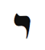
Kabala Başak burcuna ibranice harf Yod’u atadı. Yod ibrani alfabesinde en küçük harftir. Ve Kabala, tüm diğer harflerin Yod harfinin değişik düzenlenişlerinden oluştuğunu ileri sürer. Yod, Başak burcunun alçakgönüllü enerjisini simgeler. Küçüktür ve az dikkat çeker. Ama tüm diğer harfler, görkem ve şekillerini Yod harfine borçludurlar. Yod ve Başak, her şeyi oluşturan ve canlandıran mikroskopik birim atom gibidir. Yod “el” anlamına gelir. Başak burcu, Tanrının eli olarak Tanrının işini yapmakla meşguldür.
Küçük Yod şekli aynı zamanda, Tanrının spermini temsil eder. Mikroskopun bulunmasından yüzyıllarca önce Kabalistler, Yod harfinin şeklini meninin görünmez bileşeni ile iliş-kilendirdiler. ilk başta, Tanrının spermini korumakla görevli burcun, bakire Başak olması tuhaf gelebilir. (Başak burcuna atanan Tarot kardı Keşiş benzer şekilde, normal bedensel ayartılardan arınmış bir insanı simgeler.) Ama bunun bir anlamı vardır. Eğer Boğa veya Akrep gibi cinsel bir burç Tanrının spermini yönetseydi belki de elimizde pek bir şey kalmazdı. Doğu geleneği Tantra’da, gizemcilik hizmeti içinde cinsel birleşmenin kutsal yogasını rahipler ve rahibeler uygular. Bu harf simge olarak, Başak burcunun gizilliği (spermdeki DNA’yı) alıp onu gerçek bir şeye dönüştürmesini açıklar. Başak bu önemli görevi, ayrıntılara dikkat ederek, temiz ve düzenli olarak ve hizmete kendini adayarak yerine getirir.
Haritanızdaki Başak burcu, engin bir gizillik alanına işaret eder. Tanrının spermini içeren bu alanda, daha büyük bir iyiliğe hizmet için yöneldiğinizde bereket gelecektir. iş, hizmet, sağlık, temizlik, arınma ve düzen için ihtiyacınız olan enerjiyi artırmak istiyorsanız Yod harfi ile meditasyon yapın.
Bedenin Bölümleri
Başak burcu, kolonu ve bağırsakları yönetir. Bu burç temel olarak, zehirleri ve atıkları atmaktan sorumlu sindirici sistemleri gözetir. Başak işleyişi, yediğimiz yiyeceklerdeki iyiyi kötüden çıkarır ve ayırır. iç Başağınızı desteklemek için temizlenme, oruç, zehirlerden arınma (detoks) uygulayın ve hijyene dikkat edin. Başağın size yardım etmesi için ona yardım edin. Bu hafta bir çeşit detoks programı deneyin; bu, beslenmenizden alkol ve şekeri kaldırmak kadar basit olabilir.
Başak Burcunun Rengi: Sarı-Yeşil
Başak burcunun rengi sarı-yeşildir. Arınma ve sağlık enerjisi için bu bileşimi- sarının yanında yeşil- giyin.
Başak Haftasında Neye Odaklanmalıyım?
Başak haftasında, beslenmenizi ve sağlığınızı iyileştirmeye odaklanın. Sizi tükettiğine veya kötüye kullandığına inandığınız maddelerden, kimyasallardan ve hatta insanlardan arının. Sizi geri bırakan engellerden kurtulmak için yaşamınızı yeniden düzenleyin (edit edin). Ayrıca, yakınlarınıza, toplumunuza ve dünyaya nasıl bir hizmette bulunabilirsiniz, araştırın.
Özellikle, işiniz, evcil hayvanlarınız, iş arkadaşlarınızla ilişkileriniz ve sağlığınız ile ilgili eş-zamanlılıkları kollayın. Başak burcunun simgeleri: Bakireler ve bakirelik, Bakire Meryem, dadılar, keşişler, rahibeler, Merkür, beslenme rejimleri, detoks, iyileştirme programları (rehabilitasyon), temizlik, düzen, hazım ve boşaltım sistemleri, çalışanlar, takıntı-zorlantılar, eller, sperm, alçakgönüllülük, iş, hizmet, eleştiri, küçük ayrıntılar, temizleme, kendine yeterlilik, hayır sözcüğü.

Haritanızdaki Başak burcu, engin bir gizillik alanına işaret eder. Tanrının spermini içeren bu alanda, daha büyük bir iyiliğe hizmet için yöneldiğinizde bereket gelecektir. İş, hizmet, sağlık, temizlik, arınma ve düzen için ihtiyacınız olan enerjiyi artırmak istiyorsanız Yod harfi ile meditasyon yapın.
Başak Haftası Kontrol Listesi
- Bir hafta boyunca kendinizi temizleyin: Alkol, kızarmış yiyecek, beyaz ekmek, beyaz şeker, kahve veya tatlılar yok.
- Haftada iki kez Başak olumlamasını söyleyin: “İnsanlığa ve Tanrının iradesine hizmet için kendimi adadım. Arındım ve sağlıklıyım. Gizilliğimi ortaya çıkarmama yardım ettiği için bedenime teşekkür ediyorum.”
- Kahvaltıda Başak Organik Tahıl Ezmesi yemeğe başlayın.
- Yod harfi ile meditasyon yapın.
- Sarıyeşil veya sarı ile yeşilin bileşimini giyin.
- Sağlıklı sınırlar çizmenin yanında hayır demeyi deneyin.
- Eğer mümkünse, uzak bir yerde telefonsuz, kitapsız ve bilgisayarsız bir gece geçirin. Bir günlüğüne bir rahibe veya rahip olarak yaşamanın nasıl olduğunu hissedin.
- Sahne arkasında bir hizmet gerçekleştirin.
- spiritüel adınızı bulun.
Başak Burcu Ritüeli: spiritüel Adınız
Başaklar, çevremizdeki nesnelere ve durumlara ad takarak onları etiketler ve sınıflandırırlar. Ben de daha önce, Başakları tırtıl sendromuna sahip olmakla suçlayarak aynı şeyi yaptım. Doğum adınız Koç etiketini temsil ederken, spiritüel adınız Başağı yansıtır. Mary ve Maria gibi popüler adlar, Başak burcunun enerjisini taşır. Maria adı, Eski Ahitte Musanın kız kardeşinin adı olan antik ibrani adı Miriam’dan gelir. Yeni Ahit, bu adı saran enerjiyi sürdürmek için isanın annesine aynı adı verdi. Her iki durumda da Miriam/Mary/Maria bir kurtarıcı ile yakından ilişkilidir. O, bir kahramana hizmet etmek ve kahraman başkalarını kurtarırken onun çabalarını desteklemek için oradadır. Koç kahramanın, hizmet etmek istediklerinden ve kendisinden korunması için Başağa ihtiyacı vardır.
“Mary’nin bir kuzusu vardı” anaokulu şarkısı, Koç (kuzu veya genç adam) ile Başak (Mary) arasındaki ilişkiyi anlatır: “Çocuklar ‘Kuzu Mary’yi neden o kadar çok seviyordu?’ diye sorarlar; öğretmen ‘Çünkü Mary kuzuyu seviyordu’ diye yanıtlar.” ibranicede, Miriam iki ayrı sözcükten oluşur: Mar (su) ve yam (acı). Böylece Miriam’ın anlamı “acı deniz” veya “acı su”dur. Diğer bir deyişle Başak, ıstırabın acısını su veya şefkat ile yıkar. Başak hizmet ettiklerinin acısına tanık oldukça hizmet biraz can acıtır. Miriam sözcüğünün harflerini, adın gizli mesajını bulmak için Kabalistik tarzda karıştırırsak Yam-ram sözcüğü karşımıza çıkar ki bunun anlamı “yükseltilmiş su”dur. Başak özverili hizmeti ile Miriam veya Mary’nin acı suyunu yükseltilmiş veya kutsal suya dönüştürür.
Hindistanın Sih geleneği, “Adı, Doğru” diye çevirebileceğimiz güçlü mantra (sürekli yinelendiğinde ruhani güçlerin uyan-dırılmasını sağlayan kutsal söz) Sat Nam’ı vurgular. Şimdi göreviniz, adınızdaki yüksek doğruyu bulmaktır. Bir düş veya meditasyon sırasında veya adınızın harflerini karıştırdığınızda bu adı bulabilirsiniz. Bulduktan sonra onu bir sır olarak saklayın. Tanrıya veya yüksek nefsinize erişmek istediğinizde o güç veren sözcüğü kullanabilirsiniz. Erkek kardeşim, Başak arketipi üzerine yaptığım bir çalışmaya katıldıktan sonra bu alıştırmayı yaptı ve spiritüel adını sır olarak sakladı. Sonra Ekvador’a gezmeye gitti ve orada soyguncuların saldırısına uğradı. Saldırı sırasında paniklemedi, sadece güç adını yineleyerek tehlikeyi defetmek için Yukarıdan yardım istedi. Sıyrık almadan ve parasını çaldırmadan kurtuldu.
Bazen, konu adımız olunca, burnumuzun dibindekini bulmak için dünyayı dolaşmak zorunda kalırız. Sürekli anne babası ile kavga halinde olan Angela adındaki bir kadın (Başak burcu, dördüncü aile evindeydi) adından nefret ediyordu. Gerçek doğasını yansıtan spiritüel bir ad bulmak için Hin-distana bir guruyu ziyarete gitti. Sonra, gurunun ona takdığı egzotik Sanskrit adı, arkadaşlarına ve ailesine kabul ettirmeye çalıştı. Ama hiç kimse bu adı kullanmak istemedi. Angela yaptığım çalışmalardan birine katılmıştı, ona Sanskrit adının anlamını sordum; gururla “sevgi elçisi” dedi. Sonra asıl adını sordum, kaşlarını çatarak “Angela” dedi. Odada bir dakika sessizlik oldu. Herkes kıkırdamaya başlayınca Angela durumu anladı. Sonra Tevrat’ta, meleklerin (ingilizce angel) nasıl elçi ile eş anlamlı olduğunu konuştuk. Onlar Tanrı sevgisinin elçileridir. Angela ilk kez, akıllı gurunun onu, doğumda anne babasının verdiği ad ile ödüllendirmiş olduğunun farkına vardı. Zaten sahip olduğu spiritüel adı bulmak için dünyanın öbür ucuna seyahat etmişti.

Bulgaristan’a yaptığım bir kitap gezisinde, adımızın nasıl kaderimizle ilgili bir yol haritası sunduğuna yeniden tanık oldum. Sofya’nın en büyük gazetelerinden biri olan 24 Saat’in ön sayfasında, gece yarısı hayvanat bahçesinden kaçmış bir çakalın resmi vardı. Çakala Houdini adının verenin ne düşündüğünü bilmiyorum ama eninde sonunda “on parmağında on marifet” olan birisi tabii ki en sıkı zincirlenmiş bir kafesten bile kaçmayı becerebilecektir. Dolayısıyla, işinize, çocuklarınıza, hatta evcil hayvanlarınıza verdiğiniz adlara dikkat edin.

Ünlü Başaklar
Rahibe Teresa, Sean Connery, Charlie Parker, Leonard Bernstein, Johann Wolfgang von Goethe, Mary Shelley, Ernest Rutherford, Queen Elizabeth I, Peter Sellers, Leo Tolstoy, D. H. Lawrence, Agatha Christie, B. B. King, Greta Gar-bo, Sophia Lauren, Stephen King, Kobe Bryant.

Terazi: Güzel ve Avukat
23 Eylül-22 Ekim
Anahtar İfade: “Dengeliyorum”- uyum
Genel Nitelikler: Mantıklı, arkadaş, zarif ve kibar, yumuşak başlı, sosyal, estetik zevke sahip, diplomatik, güçlü bir adalet duyusu
Karanlık Yön: Yüzeysel, kararsız, kendine hizmet eden, aşırı hoşgörülü, iki yüzlü
Element: Öncü hava
Gezegen: Venüs
Gün: Cuma
Tema: İlişkilerin aynası
Beden Bölümleri: Böbrekler, bel, yumurtalıklar
Renk: Yeşil
Değerli Taş: Opal
Müzik Notu: Fa diyez
İbranice Harf: Lamed 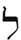
Harfin Kabalistik Anlamı: Öğrenme ve öğretme
Yaşam Ağacındaki İzlek: İzlek 11, Güzelliği ve Haşinliği birleştirir
Tarot Kart: Adalet
Filmler: Güzel ve Çirkin, Gandhi, Kramer Kramere Karşı, ilişkilerle ve avukatlarla ilgili herhangi bir film Olumlama: “Yaşamla uyumlu dengeli bir insanım. Adalet yerini bulacaktır ve ben çabalarım için ödüllendirileceğim. Tüm ilişkilerimle barış ve sakinlik yayıyorum.”
Genel Bakış
Terazi burcu, zodyakın ortasındadır; terazisi dengeyi ve adaleti simgeler. John Lennon, Ghandi, Eleanor Roosevelt’in burcu olan Terazi, uyum ve güzelliği yansıtır. ilişkileri, ortaklıkları ve yakın bağlantıları yönetir. Terazi burcu bize, ilişkilerimizin kimliğimizin aynası olduğunu öğretir. Terazi aynı zamanda hukuk, mahkemeler, düşmanlar, tasarım, moda, sanat ve yaşam biçimi ile ilişkilendirilir. Terazi haftasında ilişkilerinize ve ortaklıklarınıza odaklanacak, tasarım ve moda duyunuza bağlanacaksınız.
Terazi Burcunun Sahası
Göze göz, tüm dünyayı kör yapar.
- M. K. Gandhi, bir Terazi
Terazi burcu, sonbahar ekinoksunda (gün-tün eşitliği)-gece ve gündüz, ışık ve karanlık arasındaki dengenin kusursuzluğa eriştiği zaman- gelir. Dolayısıyla bu arketip adalet, yansızlık, denge ve uyumlu ilişki yayar. Burada, astrolojik yılın ortasında, kadın ve erkeğin, karanlık ve ışığın ortaklığı gibi herhangi bir ilişkinin arkasındaki gerçek güzelliği görürüz. ilişkiler eşitlik üzerine canlanır. Her iki taraf da aldığı kadar verirse, beslendiği kadar beslerse, iyileştirildiği kadar iyileştirirse ilişki çiçek açar ve uyum yayar. Sonbahar ekinoksundan sonra, günler kısaldığı, karanlık yükseldiği için öykü biraz hüzünleşir. Işığın azalması ruh halimizi etkiler. Ve biz de daha çok içerde kalarak sertleşen koşullardan kaçmaya çalışırız. Giderek bilinçaltımıza, içimize döneriz. Terazi burcu yılın bu içe dönük yarısını başlatır.
Öncü (başlatıcı) hava (iletişim) burcu olarak Terazi burcu, iletişimi de başlatır. Konuşmak için sizi dinleyecek ve yanıtlayacak bir kişiye ihtiyacınız var. ilişkiler- en azından insan ilişkileri- iletişim gerektirir. Terazi, “Merhaba, nasılsınız?” burcudur.
Bu ilişki sorumluluğu neden Terazinin oldu? Bir zamanlar, en büyük emlâk kralı Tanrı, yaşamın kutsal dağında on iki çocuğuna arazi dağıtmak istedi. Dağın tepesini düzleştirdi ve dairesel alanı on iki eşit parçaya böldü. En büyük çocuk Koça ilk seçimi tanıdı ve Koç, en geniş manzaralı en stratejik bölgeyi seçti. Boğa hemen Koçun yanındaki arsaya yerleşti çünkü onu her şeyden koruyacak büyük güçlü ağabeyinin yanında olmak istiyordu. Sonra, ikizler Boğanın yanına, dağın merkezine giden ana yolun kenarına evini kurdu ve bu arada yolun ortasına geçiş gişesi oturtmayı planlıyordu. Yengeç yandaki arsada bir kuyunun tam üzerine evini yaptı. Aslan, annesi Yengecin yanına sokularak yüksek kuleli kocaman bir şato dikti ve Başak, her zaman Aslanın yardımına ihtiyacı olacağını bilerek alçakgönüllü kerpiç evini onun arsasının yanına inşa etti.
Koç tüm bu inşaatı görmezlikten geldi çünkü hiçbiri ufku gören evinin manzarasını kapatmıyordu. Ama Terazi gelip Koçun tam karşısındaki arsaya yerleşti. Ve güzelliğin, mimarinin ve tasarımın arketipi olarak muhteşem malikanesini inşa etmeye başladı. Koç duruma bir baktı ve sorun çıkacağını anladı. Bu Terazi yerleşimi, dünyayı görmesini engelleyecekti. Yaklaşan düşmanları göremeyecek, kendini ve kabilesini korumada aciz kalacaktı. Öfkeden kıpkırmızı olmuş Koç, Terazi temelleri atarken araziye girdi ve bağırmaya başladı: “Bu deliliği biran önce bırakıp burayı terketmelisin!”
Terazi davetsiz misafire sakin bir şekilde yaklaşıp nazikçe sordu: “Merhaba komşu! Bir sorun mu var, kardeşim?”
Terazinin cahilliğine sinirlenen Koç karşılık verdi: “Benim evimin önüne inşaat yapamazsın. Manzaramı kapıyorsun!”
Terazi o önlenemez gülümsemesiyle yanıtladı: “Manzaranı kapatmama imkan yok, sevgili arkadaşım, çünkü manzaran benim.”
Afallayan Koç birkaç saniye sessiz kaldı. Bu denli derin bir yanıt beklemiyordu. “Dinle bak” dedi, “Ben keşiflerin ve yeni ufukların burcuyum. Yolumu tıkamana izin veremem.”
Terazi “O zaman benim içimden geçerek keşifte bulunacaksın” diye kesip attı. “Ben senin aynanım. Bana baktığında kendini göreceksin.”
Koç bu değişik olayı nasıl yorumlayacağını bilemedi. Yaşamında ilk kez geri çekilmek zorunda kalıp düşünceye daldı.
Çemberde bir diğerinin doğrudan karşısına düşen ilk burç olan Terazi, gerçek bir ilişki gerektiren ilk burçtur. Koç tek başına duran bir arketipti. izleyen burçlar, yan arkadaşlıklardan yararlanıyorlardı ama her birinin enerjisi saftı. Hiçbirinin doğrudan karşısında bir şey yoktu. Ama Terazi, Koçun tam karşısına, onun göz hizasına yerleştiği için Koçla başetmek zorunda kaldı. Bu yüzden Terazi ilişki başlatır, düşünceli ve diplomatik davranışı, uzlaşmayı teşvik eder. Bunu nasıl yapar? Bir ayna gibi davranarak. ilişkilerimiz gerçek doğamızı yansıtır. Karşımızdakinde nefret ettiğimiz şeyler aslında kendimizde hoşlanmadığımız niteliklerdir. Ve karşı tarafta sevdiklerimiz, kendimizde değer verdiklerimizdir. Ayna imgemizi ters yansıtır. Karşıt burçlarla da aynı şey söz konusudur. Eğer Terazi hakkında bir şeyler öğrenmek istiyorsanız Koçun niteliklerini inceleyin ve onları tersine çevirin. Koç bir savaşçı ise Terazi barışçıdır. Koç kendine dönük ise Terazi eşine dönüktür. Koç Mars ile ilişki kuruyorsa Terazi Venüse sokulur. Tüm karşıt burçlar (Boğa-Akrep, ikizler-Yay, Yengeç-Oğlak, Aslan-Kova, Başak- Balık) bu şekilde çalışır. Boğa “benim paramı,” Akrep “eşimin parasını” simgeler. ikizler alt eğitimi, Yay yüksek eğitimi yönetir. Yengeç aile ise Oğlak ailenin dışında kariyere odaklanmak demektir. Aslan Kralı simgeliyorsa Kova demokrasiyi destekler. Başak gerçeğe odaklanmışsa Balık düşlem içinde yüzer.
Haritanızdaki Terazi, kendinizi tam anlamıyla anlamanıza olanak tanıyacak bir ortağa, bir aynaya ihtiyacınız olan yaşam alanına işaret eder.
Özel Terazi Burcunuz
Terazi burcu tarafından yönetilen yaşam alanınız, hedeflerinize ulaşmak için diplomasi ve denge uygulamanız gereken yerdir. Burası ilişkilerin ve sizin için önemli kişilerin son derece değerli olduğu yerdir. Yaşamınızın bu alanına uyum, barış, huzur ve güzellik getirmeye çalışın. Ve başkalarının ihtiyaçlarını düşünmeniz, kendi istek ve eğilimlerinizden vazgeçmeniz gereken anların çok olacağını kabullenin.
Terazi Birinci Evde (Yükselen Burcunuz): Güzellik, simetri ve uyum eğilimi ile kutsanmışsınız ve siz de fiziksel olarak çekicisiniz. Ne olursa olsun yüzleşmeden kaçıyorsunuz ama bazen bu, çıkarlarınızı etkiliyor. Giyim ve sanatta zevklisiniz. Terazi haftasında bedeniniz, sağlığınız ve duygusal, fiziksel beslenmeniz ile ilgilenin.
Terazi İkinci Evde: Gelir ve giderlerinizde dengesizliklere dikkat edin. Gelirinizde dalgalanmalar yaşayabilirsiniz. Sanat yeteneğiniz var ve güçlü bir adalet ve yansızlık duyusuna sahipsiniz. Büyük bir avukat veya arabulucu olabilirsiniz. Daha çok para kazanmak için bir ortağınız olsun veya ortağınıza paranızı yönetme olanağı tanıyın. Bu hafta finansınıza, yeteneğinize ve öz-değerinize odaklanın.
Terazi Üçüncü Evde: Kardeşleriniz ve komşularınız ile uyumlu ilişkiler yaşıyorsunuz. Diplomatik ve sakin bir tarzda konuşuyor ve yazıyorsunuz. Evlilik ile gelen kardeşlerinizin arkadaşlığından hoşlanıyorsunuz. Bu hafta akrabalarınızı, iletişim becerilerini ve işinizi vurgulayın. iş ve yaşam ortaklarınızın öğütlerini dinleyin.
Terazi Dördüncü Evde: Güzel ve zevkli döşenmiş bir evde yaşıyorsunuz. Başarılı bir ailenin yolu uyumdan geçer. Anneniz güzel bir kadın ama çevresinden aşırı etkileniyor olabilir. Aile üyeleri ile iyi geçiniyorsunuz. Terazi haftasında ev, aile, annelik ve anneniz ile ilgili rastlantıları kollayın.
Terazi Beşinci Evde: Güzel çocuklara sahip olabilirsiniz ve onlarla uyumlu bir ilişkiniz olacak. Bir sevgiliye ihtiyacınız var. ihtiyaç halinizin seçimlerinizi etkilememesine dikkat edin. Önünüze gelen herkesi kabul etmeyin. Terazi haftasında yaratıcılığınıza, çocuklarınıza ve sağlığınıza odaklanın. Birlikte spor yapacak birisini bulmaya çalışın.
Terazi Altıncı Evde: iş arkadaşlarınızla, çalışanlarla ve ev hayvanlarınızla uyumlu bir ilişkiniz var. insanlarla ve işyeri müşterileri ile ilişkilerinizi geliştirmek önemli. Böbreklerinize ve yumurtalıklarınıza dikkat edin. ilişkilerdeki sorunlar hastalıklara neden olabilir. Bu hafta işyerinize, beslenmenize ve sağlığınıza özel ilgi gösterin.
Terazi Yedinci Evde: Eşiniz ile güzel ve uyumlu bir ilişki sürdürme olanağınız var. Eşiniz size ayna görevi görüyor. Yakışıklı ve kibar insanlar ilginizi çekiyor. Doğal diplomasi yeteneğiniz ile çatışmaları barışçıl yolla çözebilirsiniz. Terazi haftasında ortaklıklarınızı ve eşinizi beslemeye ve korumaya çalışın.
Terazi Sekizinci Evde: Ortağınızın/eşinizin ailesinden bir miras gelebilir. Çekici ve büyüleyici insanlar sizi cinsel olarak çekiyor. Samimi yakınlık için dengeli bir ilişkiye ihtiyacınız var. Bu hafta, samimi yakınlıklarınız, cinselliğiniz, ortak sanatsal ve parasal işleriniz, ölüm, dönüşüm ve bırakmak/ vazgeçmek konuları ile ilgilenin.
Terazi Dokuzuncu Evde: Birçok yabancı arkadaşınız ve yabancı kültürlerle ilişkileriniz var. Yaşam veya iş ortağınız bir yabancı veya seyahat ederken tanıştığınız birisi olabilir. Hukuk, moda veya sanat içeren yüksek eğitim ile ilgileniyorsunuz. Evlilik ile gelen akrabalarınızla uyumlu ilişkileriniz olabilir. Terazi haftasında seyahat etmeyi ve bir şeyler çalışıp öğrenmeyi deneyin.
Terazi Onuncu Evde: Gizilliğinizi tam anlamıyla gerçekleştirmek için bir ortağa ihtiyacınız var. Kariyeriniz hukuk, sanat, müzik, moda veya tasarım ile ilgili olabilir. insanlar sizi barışsever ve diplomatik olarak görüyor. Bu hafta kariyeriniz, ününüz ve toplumdaki yeriniz ile ilgilenin. Kariyerinizde parlıyorsunuz.
Terazi On birinci Evde: Arkadaşlarınızla ve gruplarınızla iyi ilişkileriniz var ama bazı arkadaşlarınız sığ veya yüzeysel olabilir. iş veya yaşam ortağınızın yolu ile yeni kimselerle tanışabilirsiniz. Terazi haftasında enerjinizi arkadaşlarınıza, gruplara veya organizasyona yöneltin.
Terazi On ikinci Evde: iş ve yaşam ortağınız ile çözümlenmemiş karmanız var. Eşiniz ile etkileşime girdiğiniz anda bilinçaltı psikolojik konular yüzeye çıkıyor. iyi dönemlerde bile, çift danışmanlığına gitmeyi öneriyorum. Bu hafta spi-ritüel inziva deneyin ve ilişkilerde, hukukta ve adalette eski örüntüleri terketmeye çalışın.
Terazi Burcu: Denge ve Uyum
Mükemmel bir zekânın göstergesi, iki karşıt fikri aynı anda zihinde tutmak ve hâlâ işlevsel olabilmektir.
- F. Scott Fitzgerald, bir Terazi
Bir diğer hava burcu olan ikizler bize, ikilikleri belirleyip birleştirmeyi öğretmişti; Terazi burcu ise, ne kadar aşırı olursa olsun tüm karşıtların eşit ve dolayısıyla aynı olduklarını söyler. Terazi burcunun simgesi olan terazi, bu dersi destekler. Terazinin bir kefesine bir nesneyi, öbür kefesine görünürde değişik bir nesneyi koyarız. Ağırlığın, dolayısıyla önemin, aynı olduğunu gördüğümüzde bu nesnelerin aynı özü yaydığı sonucuna varırız. Terazi burcu, herhangi bir aşırılığın karşıt aşırılık yaratacağını ileri sürer. Örnek olarak, Aslan burcunda dört veya beş gezegen toplandığını görürseniz bu haritanın sahibi bir süper-Aslan değil, onun tam karşıtı Kovadır. Milletini kurtarmak için süper Koç olarak hizmet eden Musa aslında bir kanun yapıcı olarak bilinir (kanun ise Koçun karşıt burcu Terazi tarafından yönetilir). Dünyanın yarısını fetheden savaşçı Cengiz Han ise barış burcu olan Terazi idi.

Haritanızdaki Terazi, kendinizi tam anlamıyla anlamanıza olanak tanı- yacak bir ortağa, bir aynaya ihtiyacınız olan yaşam alanına işaret eder.

Bu nasıl olabilir? Yaşam Ağacının kürelerden oluşması gibi bizim varoluşumuz da çemberler veya küreler ile ilgilidir. Yuvarlak bir gezegende yaşıyoruz ve çevremizle, yuvarlak bir zodyak çemberinin kurallarına göre etkileşime giriyoruz. Karşıtlar, kürenin iki yanında yer alırlar. Eğer bu karşıtlar daha da aşırıya kaçarlarsa, birbirlerinden uzaklaşırlarsa sonunda aynı noktada buluşurlar. Doğunun doğusunda ne yatar? Batı. Batının batısında ne yatar? Doğu. California, örneğin, Vahşi Batı olarak bilinir ve ABD’nin en batısında yer alır. Ama Los Angelesten batıya doğru hareket ederseniz Uzak Doğu diye bilinen Çin ve Japonyaya ulaşırsınız. Bu karışıklık Terazi burcunun büyüsüdür. Her aşırılık aslında aynıdır. Yeni Ahitin bazı kısımlarını yazan ve derleyen Aziz Paul, ilk Hristiyanlara zulmetmeye ve onları yok etmeye çalışan bağnaz bir Yahudi idi. Aşırılığı sonunda, onun Hristiyanlığı kabul etmesine ve bir zamanlar nefret ettiği öğretileri tüm dünyaya yaymasına yol açtı.
Terazi burcu tarafından yönetilen yaşam alanınızda sert dalgalanmalar yaşayacaksınız. İki karşıt seçenek veya olasılık arasından seçmek zorunda kalabilirsiniz. Karar vermek zor olabilir. Teraziler genelde kararsızdır. Terazi burcunun size, tüm ikiliklerin yanılsama olduğunu gösterdiğini anımsayın. Her iki seçenek de değerlidir.
Ödün: İlişki Gerekliliği
Hepimizin bir ilişkiye ihtiyacı vardır. Başkasının bizim için önem taşıması, bizim de onun için önemli olmamız demektir. Önemli olarak kalmak, ilişkiyi sürdürebilmek için bir noktada, ne olursa olsun ödün gerekli olacaktır. 1977’de, bir Terazi olan Jimmy Carter, can düşmanı iki ülke İsrail ile Mısır’a barış anlaşması imzalattırdı. Bu iki hasmı biraraya getirmenin imkânsız olduğu düşünülüyordu. Ama Carter, her iki tarafa da ödün verdirterek imkânsızı başardı. Bu büyük ve küçük ödünlerle, süreğen bir savaş uyuma dönüştü.
Tüm ilişkiler ödün ister. Bazen fedakârlık bile gerektirir. Burada farkına varılması gereken şey, fedakârlığın ortak için değil, ortaklık için yapıldığıdır. Plajda geçirebi- leceğiniz serbest gününüzü, kocanızın ofisini taşımak için adadığınızda bu fedakârlığı onun için değil, evliliğiniz için yapıyorsunuz. Ve gerçek şudur ki mutlu uyumlu bir evlilikten siz de yararlanacaksınız. Siz arabaya dosya kutularını taşıdıkça bu fedakârlık kocanız için kısa vadede bir yarar sağlar. Ama uzun vadede hoş ve sıcak bir evliliğin zevki, basit angaryaların getirdiği yarardan daha üstündür. Ödün verdiğiniz zaman ortaklığa olan bağlılığınızı aklınızdan çıkarmazsanız, edilgen-saldırgan suçluluk hissi oluşturma olasılığını azaltmış olursunuz.

Terazi burcu tarafından yönetilen yaşam alanınızda sert dalgalanmalar yaşayacaksınız. İki karşıt seçenek veya olasılık arasından seçmek zorunda kalabilirsiniz. Karar vermek zor olabilir. Teraziler genelde kararsızdır. Terazi burcunun size, tüm ikiliklerin yanılsama olduğunu gösterdiğini anımsayın. Her iki seçenek de değerlidir.

Ayrıca, eşinizde bir şey değiştirmek istediğinizde kendinizde de bir şey değiştirmeyi hedefleyin. Eşiniz arabada sigara içmekten vazgeçerse siz de daha az konuşmaya söz verebilirsiniz. İkinizden birisinin kuralları ihlal etmesi durumunda ne olacağını belirlemek için bir anlaşma imzalayın. Örneğin, ihlal eden kişi bir ay boyunca bulaşıkları yıkamayı kabul edebilir. (Yaşam Ağacının Anlayış küresi ile ilişkilendirilen) Karma beyi gezegen Satürn, Terazi burcuna rastgeldiği zaman güçlenir. Satürn resmi olarak Oğlak burcunu yönetse de en rahat Terazi burcunda çalışır. Satürn, güneşin çevresini yirmi sekiz-yirmi dokuz yılda dolaşır. Her yedi yılda bir (Terazi yedinci burçtur) bu gezegen haritanızın bir köşesine dokunur. Bir ilişki yedinci yılını doldurduğunda Satürnün ilk öpücüğünün yarattığı zorluk ve gerilim sonucunda eşler, birliktelikleri üzerinde düşünmeye ve değerlendirme yapmaya başlarlar. Yedi-yıl-kaşıntısı dediğimiz şey budur. Bu zorlu dönemden sonra ortaklık ya daha güçlenmiş ve dayanıklı olarak ortaya çıkar veya çöker.
Bazı bireyler, eşlerinin artık kendilerini çizik bir ayna gibi doğru yansıtmadığını düşünerek arayışa geçerler. Çoğu kültür, kırık aynanın yedi yıl uğursuzluk getirdiğine inanır; bu da Terazi (ayna burcu) ile Satürn (yedi-yıl-kaşıntısı gezegeni) arasındaki astrolojik dansın bir çeşitlemesidir. Bazı Kabala öyküleri ve ritüelleri, bu Satürn-Terazi yedi testinin neden olduğu sıkıntının etkilerini hafifletmeye çalışır. Haftanın yedinci günü, Satürn günü olan Cumartesi (Saturday), iş yapılmayan bir dinlenme günüdür. Birçok insan bu günü Tanrıya, eşine ve ailesine adar. İsrailin on iki kabilesinin yüce atası Eyüp, Leah ile evlenmek için yedi yıl ve Rachel (Rahime) ile evlenmek için bir yedi yıl daha çalışmak zorunda kaldı; bu didinme onun, armağanlarını takdir etmeyi ve onlara sahip çıkmayı öğrenmesi için tasarlanmıştı. Ve Yahudi evlenme törenlerinde gelin, damadın çevresinde yedi kez dönerek onu sevgisi ile sarmalar ve eşinin yedi şakrasının duvarlarını yıkmaya çalışır.
Her yedi yılda ve belki de yedi ayda bir, kişisel ve iş ortaklıklarınızın gözden geçirilmeye ve yeniden değerlendirilmeye ihtiyacı vardır. Bu dönemleri, ortağınıza daha da yakınlaşmak için kullanın. İlişkiyi sağlamlaştırmak için Terazi burcunun esinlediği ödünleri ve fedakârlıkları kullanın.
Hukuk
Gezegen Venüs tarafından yönetilen Terazi burcu, güzelliğe, sanata, müziğe, tasarıma, modaya ve estetiğe adanan Venüs enerjisini simgeler. Terazilerde derin bir mekân ve simetri anlayışı ve içsel bir adalet duyusu vardır. Terazi burcunun Tarot kardında Adaleti, terazi taşıyan güzel ve gözleri bağlanmış bir kadın temsil eder. Adaletin, yansız ve dolayısıyla kör olduğu söylenir. Bir Çinli müşterim bana güneş gözlüklerinin doğduğu yer olan Çinde yargıçların, dava ile ilgili duygusal tepkilerinin gözükmemesi ve böylelikle yansız görünmeleri için güneş gözlükleri taktıklarını söylemişti. Ama göz bağlamanın astrolojik mantığı, Terazinin güzelliğe olan içten bağlılığından kaynaklanır. Terazinin, yakışıklı bir şövalye ile çirkin bir kılıksıza aynı adaleti göstereceğinden emin olamayız. Bu yüzden adalet burcunun gözlerini bağlayarak estetiğe olan bağlılığını saf dışı bırakmaya çalışırız.

Her yedi yılda ve belki de yedi ayda bir, kişisel ve iş ortaklıklarınızın gözden geçirilmeye ve yeniden değerlendirilmeye ihtiyacı vardır. Bu dönemleri, ortağınıza daha da yakınlaşmak için kullanın. İlişkiyi sağlamlaştırmak için Terazi burcunun esinlediği ödünleri ve fedakârlıkları kullanın.

Bir durumun her unsurunu dengelemeye çalışmak, yani yansız olabilmek, hukuk gibi güzellikte de vardır. Tasarım ve sanat, renk, nesne ve dizim simetrisine bağlıdır. Müzik, notalar arası uyumdur. Batı müzik skalasının atası Pitagoras, müziğin değişik notalar arasındaki matematiksel ilişkiler olarak betimlenebileceğinde ısrar etti. Bu yüzden skalada yedi adet beyaz tuş vardır. Bu arada, en eski yazılı kanun olan M.Ö. on dokuzuncu yüzyılın Hamurabi yazıtları “göze göz, dişe diş” der. Ama başka bir Terazi avukatı Gandhi, Terazinin o çok önemli ödün kuralını anımsadı ve “Göze göz tüm dünyayı kör yapar” diyerek daha üstün bir güzellik, adalet ve barış seviyesine erişti. Görünen o ki Mahatma (“yüce ruh”) Gandhi, adaletin o eski kaba açıklamasının kendisini körleştirmesine izin vermemişti.
Haritanızdaki Terazi burcu, hukukta, sanatta, müzikte, tasarımda ve tüm estetik arayışlarda sivrileceğiniz yaşam alanını vurgular. Bu alanda yaratıcı ve sanatsal olmak için çabalayın.
Ortaklar ve Düşmanlar
Terazi burcu, ilişkileri olumlu yönde yönetir ama aynı zamanda, bildik düşmanlarınıza, olumsuz ortalıklarınıza da hükmeder. Ortaklarınız gibi düşmanlarınız da gerçek kimliğinizin aynasıdır. Eşiniz iyi yönlerinizi yansıtırken düşmanınız, öğrenmeniz gereken nitelik ve durumları ortaya çıkarır. Ve bazen, bildik Terazi düşmanlarınızla hesaplaşmak için Terazi avukata ve Terazi mahkemeye ihtiyacınız olabilir.
Terazi burcu dünyada olduğu kadar kozmik ve evrensel anlamda da adaleti öğretir. Kişisel kozmik adaletiniz olan karma, “etki ve tepki” anlamına gelir. Geçmiş yaşamlarınızdaki her eylem için bu yaşamda ilişkili bir sonuç yaşayacaksınız. Ecclesiastes’ın (11:1) öğütü ve uyarısı şöyledir: “Ekmeğinizi sulara atın; birçok gün sonra onu bulacaksınız.” (Acaba bu dize nehirleri ve denizleri kirleten modern toplumun, daha sonra bunun sonucunu yaşayacağını ima eden gizli bir mesaj olabilir mi?) Bu özdeyiş, Doğunun karma derslerinin özünü yansıtır. Yaptığınız iyi veya kötü her şey, geleceğinizde size bir şekilde geri gelecektir. Sir Isaac Newton kozmik kanunları, kendi çığır açan hareket kanunları için kullandı. Her gücün, eşit ve karşıt bir gücü olduğunu söyledi. Newton’un kanunları, yaşamımızı ve uzay araçlarını yönetmekte.

Haritanızdaki Terazi burcu, hukukta, sanatta, müzikte, tasarımda ve tüm estetik arayışlarda sivrileceğiniz yaşam alanını vurgular. Bu alanda yaratıcı ve sanatsal olmak için çabalayın.

Karmaya göre bu yaşamdaki düşmanlarınız, size geçmişte yandaş olarak öğretemediklerini iletmek için düşmanınız olarak yeniden dünyaya gelmeye karar vermiş geçmiş yaşamlardaki ortaklarınız olabilir. Benzer şekilde, bu yaşamdaki sevgilileriniz geçmiş bir yaşamdaki düşmanlarınız olabilir. Belki şimdiki eşiniz geçmişte, tahammül edemediğiniz veya affedemediğiniz bir düşmanınızdı. Belki de şimdi aşkınızla o geçmişteki öfkeyi dindirecek ve Işığa bir adım daha yaklaşacaksınız. Sevgilileriniz ve düşmanlarınız sizin ruh arkadaşlarınızdır. Terazi burcu altında onlar eşit ve aynıdır.
Düşmanlarınıza karşı husumeti sürdürmek sizi sadece incitir. Terazi burcu ödün vermemiz, şiddetten kaçınmamız ve tutkulu bir şekilde diplomasi uygulamamız için bizi teşvik eder. Sadece böyle bir ince davranış etki ve tepki, yani karma döngüsünü kırabilecektir. Gandhi, örneğin, kendine özgü bir edilgen direniş tarzı uygulayarak zorlu Britanya İmparatorluğunu dize getirdi. Ve başka bir ünlü Terazi John Lennon’un şarkısı da şöyleydi: “Barışa şans tanıyın.” Ne yazık ki her iki Terazi barış devi de düşmanları tarafından öldürüldü.
Terazi evinizde, size değerli bir kozmik ders öğretecek düşmanlar olabilir. Bu insanlar saldırgan ve mantıksız hareket edebilirler. Onlar size aktaracakları önemli derslerin farkında olmayabilirler. Onlara karşı nazik ve affedici davranmak zor olabilir. Ama siz onlara düşman olmanın ötesinde bakarsanız, onların hasmane davranışlarındaki dersi açığa çıkarabilirseniz başarılı olabilirseniz. Ve o zaman karmanızı da aşmış olursunuz.
Terazi ile Geçinmek
- Terazilerle arkadaş olmak ve arkadaşlığı sürdürmek kolaydır. Dışa dönük, sosyal ve düşünceli davranan insanlardır.
- Terazilerin yanında iyi giyinin; giysilerin güzelliğine ve renklerin uyuşmasına dikkat edin.
- Güzel kokun. Dişlerinizi fırçalayın, saçınızı tarayın. Teraziler çekici ve bakımlı insanların yanında olmaktan hoşlanırlar.
- Karşılıklı meydan okumaktan kaçının. Saldırganlıktan hoşlanmazlar.
- Sosyal ve açık olun. Onları başkaları ile tanıştırın. Onları partilere ve sosyal etkinliklere davet edin.
- Ben, yalnız gibi sözcükler yerine biz, birlikte sözcüklerini kullanmaya çalışın.
- Görünüşlerini, giysilerini, takılarını ve görünüş ile ilgili her şeylerini övün.
- Ortakları/eşleri hakkında soru sorun ve kendi ilişkilerinizden söz edin.
- Onlarla başkaları hakkında dedikodu yapmaktan kaçının. Çok kolay havaya girerler ve dedikodu iki taraf için de kötü olabilir.
- Dünyaya anlatılmasını istemediğiniz şeyleri onlarla paylaşmayın. Sır saklamakta pek iyi değillerdir.
- Her zaman öykünün iki yönünü de sunun. Her bakış açısını, seçeneği incelemek isterler. Bir yöne aşırı kaymayın.
- Onlara liderlik yapabilirsiniz. Güçlü ve kararlı insanları severler.
Gücün Karanlık Yönü: Terazi
Teraziler kararsızlıkları ve yap bozları ile tanınırlar. Bu son cümle doğru ve yanlış. Bu bir Terazi ifadesine benzedi, değil mi? Teraziler her seçenekte hem iyiyi hem de kötüyü görürler. Her şeyi terazide tartarlar. Bu onların işidir. Ve bazen, seçim yapamazlar ve donup kalırlar. Avukatlar da böyle çalışır. Bazen müvekkillerinin suçlu olduğunu bilmelerine rağmen onları savunurlar. Güzel ve inanılmaz derecede zeki olan bir avukat arkadaşım, dükkan soygunculuğu yapan birisinin, obezliğinden dolayı dayanılmaz bir şekilde bunalıma sürüklendiği için suç işlediğini iddia ederek aklanmasını sağlamıştı. Sanık suçlu idi ama avukat, hislere hitap eden mantığı ile kararı etkilemişti.

Terazi evinizde, size değerli bir kozmik ders öğretecek düşmanlar olabilir. Bu insanlar saldırgan ve mantıksız hareket edebilirler. Onlar size aktaracakları önemli derslerin farkında olmayabilirler. Onlara karşı nazik ve affedici davranmak zor olabilir. Ama siz onlara düşman olmanın ötesinde bakarsanız, onların hasmane davranışlarındaki dersi açığa çıkarabilirseniz başarılı olabilirseniz. Ve o zaman karmanızı da aşmış olursunuz.

İletişimi başlatan burç olarak Terazi, çok konuşmaya meraklıdır. Sessizlikte kıvranır, sinirlenir. Seçeneklerini terazide tartarken dengeyi bulmadan önce bir aşırıdan diğerine savrulur. Bu çılgın aşırılık, eşleri delirtebilir. İlişki burcu olarak Teraziler genelde fazla bağımlı veya karşılıklı bağımlı olabilirler. Kendi çıkarlarını eşlerininki ile dengelemekte zorlanırlar veya eşlerini memnun etmek isterken kendi ihtiyaçlarından büyük oranda vazgeçebilirler.
Son olarak Terazilerin, duvardaki-ayna kompleksinden kurtulmaları gerekir. Pamuk Prenses bir Terazidir. Nereden mi biliyorum? Birlikte yaşadığı cücelerin sayısı neydi? Yedi. Üvey annesi de bir Terazi idi. Nereden mi biliyorum? Kim bütün gün aynanın karşısında durup “Ayna, ayna, güzel ayna, var mı benden güzel bu dünyada?” diye sorar? Üvey anne, krallığın en güzel kadını olmak için sayısız gaddarlıklar sergilemişti. Yüzeysel güzellik takıntısı vardı.
Ve bu küçük kaygı başka bir Terazi eğilimini yarattı: Kıyaslama. Teraziler sürekli kendilerini başkaları ile kıyaslarlar ve bu davranış, onlarda büyük sıkıntı yaratır. Başkalarının kendileri hakkında ne düşündükleri ile aşırı ilgilenirler. “Benim ne düşündüğüm hakkında ne düşünüyor acaba?” Aynadan aynaya geçen ayna simgesi gibi bu sonu gelmeyen kurgusal döngünün içinde sıkışıp kalırlar. Zeki bir hava burcu olarak bu kurguların doğurduğu karmaşık zihin jimnastiğinden zevk alırlar. Ve bu arada, onları izleyenler şaşkınlık ve sinir içinde bakakalırlar.
İbranice Harf Lamed
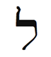
İbranice harf Lamed çok özeldir. Terazi burcunun zodyakın ortasında olması gibi Lamed de İbranice alfabenin tam ortasındadır. Yükseklik sınırını aşan tek şekildir ve en uzun İbranice harftir. Tüm arazinin en değerli göbek süsünde dalgalanan bir bayrak gibi her yere tepeden bakan bir dağ zirvesine benzer. Lamed, “öğren” ve “öğret” İbranice sözcüklerinin köküdür. Kabalaya göre öğretmek ve öğrenmek bir ve aynıdır. Herhangi bir Terazi ilişkisinde denge ve uyum elde etmek için tüm taraflar eşit derecede vermeli ve almalı, öğrenmeli ve öğretmelidir. Bir tarafın bir yana kaydığı- bir eşin hep öğrettiği ve diğerinin hep öğrendiği- bir ortaklık uzun sürmez.
Bu hafta, işte ve aşkta tüm yakın ilişkilerinizi inceleyin ve verme ile alma, öğretme ile öğrenme, iyileştirme ile iyileştirilme dengelerinin var olup olmadığını belirleyin. Uyumlu ilişki oluşturmak, ilişkileri düzeltmek ve iyileştirmek istediğinizde Lamed harfi ile meditasyon yapın. Bu harf aynı zamanda beden enerjinizi dengeler.
Beden Bölümleri
Terazi enerjisi böbrekleri, beli ve yumurtalıkları gözetir. Alt sırt ağrısı genelde böbrek sorunu demektir. Çok su içmek böbreklerinizi destekler. Terazi burcu ilişkileri yönettiği için bu hafta erkeksi ve kadınsı yönleriniz arasındaki dengeyi araştırın. Bedeninizde sol tarafınız kadınsı, sağ tarafınız erkeksidir. Yara izi, sakatlanma, ağrı ve acı olan bölgeleri belirleyin. Hangi tarafınız daha güçlü veya daha esnek? Sorunlarınız daha çok sol tarafta ise sevgi, hizmet ve iyi kalplilik gibi kadınsı nitelikleri güçlendirmeye ihtiyacınız var demektir. Altı kadınsı burcun ürettiği enerjiler ile daha çok çalışmanız gerektiği ortaya çıkar. Eğer beden sorunlarınız daha çok sağ tarafta ise altı erkeksi burcun enerjilerine yönelmeniz gerekebilir.

Bu hafta, işte ve aşkta tüm yakın ilişkilerinizi inceleyin ve verme ile alma, öğretme ile öğrenme, iyileştirme ile iyileştirilme dengelerinin var olup olmadığını belirleyin. Uyumlu ilişki oluşturmak, ilişkileri düzeltmek ve iyileştirmek istediğinizde Lamed harfi ile meditasyon yapın. Bu harf aynı zamanda beden enerjinizi dengeler.

Terazi Burcunun Rengi
Terazi burcunun rengi, görünür tayfın ortasındaki yeşil renktir. Yeşil huzur ve sakinlik getirir. Yeşil bir ormanda yürümek, örneğin, gerilimi atar. Yaşamınızda daha çok uyum yaratmak istiyorsanız yeşil giyinin; evde rahat ve huzurlu bir ortam için yeşil renk kullanın. Enerjinizi dengelemek için bahçenizde veya parkta veya ormanda gezin. Son zamanlarda medyanın yeşile ilgisi arttı ve insanlarda yeşil bilinci oluştu; diğer bir deyişle, medya ve insanlar eko-arkadaş oldular. Astroloji açısından bu yeni eğilim, yerküre ile olan ilişkimizi (Terazi burcu) düzeltmede yardımcı olacak.
Terazi Haftasında Neye Odaklanmalıyım?
Terazi haftasında sanata ve tasarıma odaklanın. Mobilyanın yerini değiştirin ve yaşadığınız mekanda yeni olasılıklar deneyin. Eşiniz ile fazladan zaman geçirin. Eğer bir eşiniz yoksa bu uyumlu ilişkiler arketipinin desteği ile gerçek aşkınızı aramaya başlayın.
İş ortaklarınız, sevgilileriniz, bildik düşmanlarınız, avukatlar, tasarımcılar ve sanatçılarla ilgili eş-zamanlılıkları kollayın. Terazi burcunun simgeleri: Teraziler, denge, tahterevalli, Venüs, orta, yedi, ilişkiler, evlilik, öğretmek ve öğrenmek, yeşil, iç dekorasyon, dekor, barış, huzur, diplomasi, ödün, böbrekler, yumurtalıklar, aynalar, kararsızlık, çoklu seçenek, sert dalgalanmalar, kişisel bakım, güzel giysiler veya güzel mobilya, çekici insanlar, hukuk, adalet, opal, yüzeysellik, şiddetten arınmışlık.
Terazi Haftası Kontrol Listesi
- İlişkilerinizi netleştirin ve besleyin. İş ve yaşam ortaklarınızın sizi nasıl yansıttıklarını belirleyin.
- Terazi burcunun olumlamasını yüksek sesle okuyun: “Yaşamla uyumlu dengeli bir insanım. Adalet yerini bulacaktır ve ben çabalarım için ödüllendirileceğim. Tüm ilişkilerimle barış ve sakinlik yayıyorum.”
- Lamed harfi ile meditasyon yapın.
- Yeşil giyinin.
- Yaşamınızda, dengelemeniz veya aralarında uyum sağlamanız gereken karşıtları (birbirinden hoşlanmayan iki arkadaş gibi) bulun.
- Kendinizi güzel şeylerle çevreleyin. Lüks giysiler giyin. Bir sanat veya moda gösterisine gidin.
- Ödün verin. İlişkilerde benliğinizi bir kenara koyun. Bir diplomat olun. Çatışmadan kaçının.
Terazi Burcunun Ritüeli: Çiftlerin Meditasyonu
Tantrik yoganın bu eş egzersizi, eşinizi bir ayna olarak görmenize olanak tanıyacak. Ek olarak, geçmiş yaşamlarla ilişkinizi ortaya çıkarabilir. Bu yöntemi yakın olduğunuz bir kimse ile uygulayın. Bu kişi, sevgiliniz olmak zorunda değil. Yakın bir aile üyesi veya bir arkadaş da olabilir. Cinsiyet önemli değil.
Başlamadan önce eşler, günün gerilimini ve olumsuzluğunu atmak için duş alırlar. Meditasyondan birkaç saat öncesinden başlayarak hiçbir şey yemeyin. Ve bu egzersizi, alkol veya uyuşturucu etkisi altında kesinlikle denemeyin.
Terazi saati olan günbatımında buluşun. Baştan aşağı beyaz giyinin. Yerde bağdaş kurarak veya iskemlede karşılıklı oturun. Dizleriniz eşinizinkilere hafifçe değmeli. Ellerinizi kaldırın, avuçlarınızı eşinizinkilere hafifçe değecek şekilde tutun. Ellerinizi böyle tutarak beş on dakika eşinizin gözlerine bakın. Gözünüzü kırpmamaya dikkat edin.
İlk başta utanarak gülebilirsiniz. Bu tepki normaldir. Avuçlarınız birbirine değmeyi sürdürsün. Enerji ve yoğunluk giderek artacak. Biraz sonra, aynı noktaya bakmaktan nöronlarınız yorulduğu için eşinizin yüzü kararmaya başlayacak. Bu etkiyi artırmak için gözünüzü kırpmamaya dikkat edin. Bir süre sonra eşinizin yüzünde imgeler görmeye başlayacaksınız. Bazen bunlar, ortak geçmiş yaşamlarınız ile ilgili olacak. Sabırlı olun. Normal görüşünüzün yorulması ve ritüelin özel etkilerinin belirmesi için zaman gerekir.
Bu meditasyonu aynı eş ile üç değişik zamanda yapın. Her seferden sonra deneyimlerinizi, hislerinizi ve gördüğünüz imgeleri yazın. Bunları eşiniz ile paylaşın. İlişkinizin doğası hakkında yavaş yavaş yoğun içgörü toplayacaksınız. Bu egzersiz, tuhaf ve güçlü düşlere neden olabilir. Bunları da paylaşın. Eğer isterseniz bu meditasyonu belirli bir sorun veya ortak bir konu üzerinde yapabilirsiniz. Önce konu ile ilgili bir süre düşünün, sonra meditasyona başlayın. Böylelikle, konuyu veya sorunu açıklığa kavuşturabilirsiniz.
Ünlü Teraziler
Mohandas Gandhi, Ray Charles, John Lennon, Catherine Zeta-Jones, Bruce Springsteen, F. Scott Fitzgerald, George Gershwin, Ivan Pavlov, Samuel Adams, Brigitte Bardot, Euripides, Matt Damon, Sting, Eleanore Duse, Susan Sarandon, Miguel de Cervantes, Lenny Bruce, Oscar Wilde, Arthur Miller, Dizzy Gillespie, Eleanor Roosevelt.
Akrep: Dönüşüm Beyi
23 Ekim-22 Kasım
Anahtar İfade: “Arzuluyorum”- dürtü
Genel Nitelikler: Yoğun, cinsel, samimi, tutkulu, güçlü dürtü sahibi, güçlü araştırmacı yetenekler, şifacı beceriler, ketum, doğaüstüne meraklı
Karanlık Yön: Tahakküm edici (aşırı sahiplenen), kinci, duygusal olarak kendine dönük, suç işleme dürtüsü, kuşkucu, yıkıcı
Element: Sabit su
Gezegen: Mars
Gün: Salı
Tema: Yenileme, yenilenme
Beden Bölümleri: Cinsel organlar, üreme organları, burun
Renk: Yeşil-mavi (turkuvaz)
Değerli Taş: Topaz
Müzik Notu: Sol
İbranice Harf: Nun
Harfin Kabalistik Anlamı: Balık ve yılan
Yaşam Ağacındaki İzlek: İzlek 13, Güzelliği ve Sonsuzluğu birleştirir
Tarot Kart: Ölüm
Filmler: Son Umut, Şeytan Çıkmazı, V for Vendetta, tüm casus ve korku filmleri
Olumlama: “Tutkulu ve cinsel bir insanım; karşılaştığım her insanla samimi yakınlık kuruyorum. Ölümü kabul ediyorum çünkü ölümden sonra yeniden doğuş olacağını biliyorum. Tanrının şifacı güçlerinin bir iletkeni olmaya hazırım.”
Genel Bakış
Akrep, yaşamın ölüm, cinsellik, büyü, doğaüstü, samimi yakınlık ve dönüşüm gibi göreceli olarak daha yoğun ve gizemli yönlerini yönettiği için anlaşılması en zor burçlardan biridir. Akrep, dönüşüm yarattığı için uzun süre önce iyileştirme burcu olarak tanımlandı. (Pablo Picasso’nun, Martin Luther’in ve Hillary Clinton’un burcu olan) Akrep, yenilere yer açmak için artık ihtiyacımız olmayan şeyleri atmamızı önerir. Bu burç ile dönüşüm, büyü, ölüm ve yeniden doğma enerjileri hakkında bilgi edineceksiniz. Ve çevrenizdeki insanlarla (cinsel veya öbür türlü) yakınlığınızı geliştirme üzerinde çalışacaksınız.
İkizlerin tanıştırdığı Koç ve Boğanın Yengeçte doğurduğu çocuk Aslan, Başak dadı ile büyüdü. Terazi ile evlendi ve yeni çift Akrepte aşk yaparak ve bütünleşerek birlikteliklerini tamamına erdirdiler. Bulgaristan’a yaptığım bir gezide Ayın Diğer Yüzü adlı bir milli radyo programına davet edilmiştim. Program, dolunay Akrep burcunda iken gerçekleşiyordu. Bana sorulan ilk soru “Amerika’daki Satanist Kilisenin farkında mısınız?” idi. İkinci soru ise Satanist tanıyıp tanımadığım ile ilgili idi. Sorulara şaşırmıştım. Kabala hakkında konuşacağımı sanıyordum. Ama sonra, dolunayın Akrep burcunda olduğu bir gecede ayın karanlık yönü adındaki bir programa çıktığımı anımsadım. Böyle bir zamanda insanların en çirkin korkularını ortaya çıkarmaları mümkündü. Bazı köktendinci Hristiyanların Hillary Clinton’a (Akrep) deccal (yani Şeytan) demelerini de anımsadım. Akrep burcunun etkisi altında bazen karanlıkla uğraşmaktan kendimizi alamayız.
Akrep Burcunun Sahası
Ölüyor, ölüyor, dünya ölüyor.
Ama kimse, yeniden ölmek
Zorunda kalmadan ölemez.
-Kabir, Büyük Sufi (on beşinci yüzyıl)
Akrep burcu sonbaharın ortasında gelir. Yılın bu zamanında yapraklar yeşilden turuncuya, kırmızıya ve sarıya dönüşür. Akrep burcunun simgelerinden biri olan yılanın derisini atması gibi ağaçlar da yapraklarını dökerler. Bu müthiş bir dönemdir ama aynı zamanda melankoliktir. Ağaçlar çıplak-laşır. Ölür gibi olurlar. Ölüyor gibi yaparlar. Ve ölümü yöneten burcun sırrı da budur. Akrep aslında ölümün kendisi ile ilgilenmez. Ölüm yenilenme getirir. Ölüm, dönüştürmek için yok eder.
Ölümün yaşamın önemli bir yönü olduğu kavramı, apop-tosis denilen biyolojik süreç ile çok güzel betimlenmekte. “Düşen yapraklar” (Akrep burcu) anlamına gelen apoptosis, 1972 yılında Kerr, Wyllie ve Currie tarafından bulunmuştur ve hücrelerin, nasıl ölerek yaşamı desteklediklerini anlatır. Aslında kanser, hücrelerin kontrol edilemeyen artışıdır. Bu hücreler ölmez ve ölüm kendi döngülerinin bir parçası olmadığı için barındıkları organizmayı öldürürler. Belli ki Ölüm Meleğini aldatamıyorsun. O zaman onun, yaşamın bir parçası olduğunu kabul etmek gerekiyor.
Akrep aynı zamanda cinselliğin ve samimi yakınlığın burcudur; bu da ağaçların neden çıplak, açıkta ve korunmasız olduklarını açıklar. Bu burç seksin büyüsünü gözetir. İyileşme ve daha iyiye dönüşme büyüsünün yaratıcısıdır. Tüm gizli büyü biçimlerini, bir yaşamdam diğerine dönüşümün gizli yerini ve aynı zamanda yaşam sonrasını yönetir. Cadılar Günü ve Ölüler Günü bayramları, bu arketipin perili gücünü vurgulamak için bu ay içinde kutlanır. Kelt halkına göre yaşayanları ölülerden ayıran perde yılın bu döneminde, bir taraftan diğer tarafa geçişi kolaylaştıracak şekilde incelir.
Bu hafta bir Akrep olarak kişiliğinizin ihtiyaç duymadığınız kısımlarını atacaksınız. Evrenden, gelişmenizi engelleyen nitelikleri ve eğilimleri size bildirmesini isteyin. Bu bir madde, ilişki, tavır, korku veya sahte bir umut olabilir.
Akrep Mantrası: “Ölüm Son Değildir”
Sabit su burcu olarak Akrebin duygusallığı yoğun, inatçılığı bunaltıcıdır. Akrep burcu, insan yaşamının en karışık ve gizemli iki unsurunu yönetir: Ölüm ve seks. Ünlü Hintli Sufi Kabir hepimizin, daha iyi yaşamayı öğrenmek için değil ama ölme sanatına egemen olmak için yineleyerek dünyaya geldiğimizi- yaşayıp öldüğümüzü, yaşayıp öldüğümüzü- ileri sürer. Tam olarak ölmeyi bildiğimizde yeniden yaşama geri dönmek zorunda kalmayacağız. Ama iyi ölmek için iyi yaşamalısınız. Yaşamı sevmeliyiz. Tersi durumda, ölmek başka bir kaçış yolu olur. Efsaneye göre Kabir 120 yaşında öldüğünde Müslüman ve Hindu muritleri, ölüm töreni üzerinde tartışmaya girdiler. Müslümanlar onu gömmek, Hindular ise ölüsünü yakmak istediler. Kabir ölmüş olmasına rağmen bu tartışmayı, Akrep burcunun şifacı ve aynı zamanda şaşırtıcı dersi ile sonlandır-dı. Muritleri ölünün kefenini çıkardıklarında fiziksel bedenin çiçeklere dönüşmüş (Akrep) olduğunu gördüler. Çiçeklerin bir kısmını Müslümanlar gömdü, geri kalanını Hindular yaktı.

Bu hafta bir Akrep olarak kişiliğinizin ihtiyaç duymadığınız kısımlarını atacaksınız. Evrenden size, gelişmenizi engelleyen nitelikleri ve eğilimleri bildirmesini isteyin. Bu bir madde, ilişki, tavır, korku veya sahte bir umut olabilir.

Çoğu yoga tarzı Şavasana veya “ceset pozisyonu”nu vurgular. Yoganın çeşitli pozlarını yapıp uygulamayı bitirdikten sonra sırtüstü yere uzanır, gözlerinizi kapar ve ölü gibi yatarsınız. Bu sadece bir rahatlama ve dinlenme armağanı değildir. Pozisyon, ölü olmayı denemenizi ister. Yaşam yolculuğunun sonunda sessiz ve sakin bir şekilde, endişesiz ve dirençsiz Tanrıya kavuşmaya hazır olmanız için sizi hazırlar.
Ben ölümü, ruhun yeniden yüklenmesi olarak görüyorum. Bilgisayarımıza eklediğimiz yeni bir programın kalıcı olması için sistemi yeniden başlatmak zorunda kalırız. Ölüm, ruhumuzun kapanıp yeniden yüklenmesine ve böylece yaşam boyu indirdiğimiz derslerin hepsini özümsememize olanak tanır. Edindiğimiz tüm bilgi ve büyüyü, gerçekten kullanıma sokmaya fırsat kazanmadan sonsuza dek yaşamak doğru olmazdı. Sistemimiz, anakart ile bütünleşemeyen dosyaların çokluğundan tıkanıp kalırdı. Ölüm, ruhumuzun daha becerikli ve hayranlık uyandırıcı olabilmesi için tüm deneyimlerimizi yeniden düzenler ve kaynaştırır.
Bu hafta her gece uyumadan önce birkaç dakika ceset pozisyonu meditasyonu yapın. Sırtüstü yatın, gözlerinizi kapayın ve sakin güzel bir yer hayal edin- öldüğünüz zaman ziyaret etmeyi isteyeceğiniz bir yer. Bu yer, güzel bir tropik koy, dev bir servi ağacı altında bir gölgelik veya muhteşem manzaralı lüks bir kat olabilir. Bu yer, siz öldükten sonra çekileceğiniz ve huzur içinde spiritüel kılavuzunuzu bekleyeceğiniz özel Cennet Bahçeniz olacak.
Anti-Halkla İlişkiler
Akrep birçok insan için gürültülü ve yorucu bir burçtur. Çiftlerin harita yorumunu yaptığımda eğer eşlerden birinde ay Akrep burcunda ise veya o kişi Akrep yükselen ise, diğer eş genelde “İşte, belli oldu” diye mırıldanır. Ne belli oldu? Yoğunluğun nedeni belli oldu.
Akrepler, zodyak burçları arasında en kötü halkla ilişkilere sahip olanıdır. Gittikleri her yere huzursuz bir gölge taşırlar. Size Akreplerle ilgili bir sır söyleyeyim (sırlar Akrep burcu tarafından yönetildiğine göre): Bu berbat imgelerini kendileri arzularlar. Bu itici izlenimden çok hoşlanırlar. Bunu binlerce yıldır tasarlamışlardır. Aslında titreyip kaçmamızı isterler. Cadılar Bayramının- Akrep bayramı- bütün eğlencesi bizim çok korkmamızdır.
Akrepler doğaüstünün ve yaşam sonrasının sırlarını saklarlar; bunlar gölgenin gizemidir. Akrepler Aslanların tersine, projektör altında hareket edemezler. Saklılık, özellik ve karanlık perdesi isterler. Akrep burcu, çoğumuzun gözlerden ırak yaşamak istediği cinsellik, iyileştirme, itiraf, ölüm, dönüşüm, casusluk, büyücülük, doğaüstü, intikam, miras ve soruşturma gibi yaşam unsurlarını yönetir. Bu liste Akrep burcunun açıkladığı listedir. Gizli saklı daha neler yönetiyor olduklarını siz düşünün. Bir insanın Akrep olup olmadığını nasıl anlarsınız? Sorun. Sizi duymazlıktan gelir veya “Neden öğrenmek istiyorsun?” derse bilin ki Akreptir.
Bu hafta ruhunuzun derinliğine bakın ve en karanlık sırrınızı belirleyin. Dolapta sakladığınız iskelet nedir? Gizli utancınız mı? Sonra eğer mümkünse, güvendiğiniz birisi ile özel bir yerde buluşun (veya güvenilir bir uzmanla- terapist, doktor, dini lider, vb- görüşme yapın) ve sırrınızı ve kendinizi açıklayın. Sırrı açıkladıktan sonra ne hissettiğinizi yazın- rahatlamış, canlanmış, korkmuş, eleştirilmiş, kabul edilmiş, sevilmiş. Bu açığa vurmayı izleyen eş-zamanlılıkları ve deneyimleri not edin.
Sırlarınızı Akrep evinizde araştırabilirsiniz çünkü yaşamınızın bu alanı genelde birçok yoğun sır ve anlatılmamış öykü içerir. Akrep burcu cinsellik evinde olan bir adam on yıl sonra annesini arayıp eşcinsel olduğunu söylemeye karar verdi. Her zaman yakın bir arkadaş olan annesinden özel yaşamını saklamak, ona çok acı vermişti. Anne, itiraftan sonra çok memnun olduğunu ve on üç yaşından beri durumu sezinlediğini söyledi. Bu yükün kalkması her şeyi dönüştürdü. Adam arkadaşlarını annesine tanıştırmaya başladı ve kısa süre sonra yaşamının sevgilisi ile tanıştı.

Bu hafta her gece uyumadan önce birkaç dakika ceset pozisyonu meditasyonu yapın. Sırtüstü yatın, gözlerinizi kapayın ve sakin güzel bir yer hayal edin- öldüğünüz zaman ziyaret etmeyi isteyeceğiniz bir yer. Bu yer, siz öldükten sonra çekileceğiniz ve huzur içinde spiritüel kılavuzunuzu bekleyeceğiniz özel Cennet Bahçeniz olacak.

Dönüşüm Beyleri
Akrep insanları derin ve genelde karanlıktır- kötülük yaydıkları için değil, enerji ile doldukları için. Bakışları delicidir. Yoğun halleri değişmemize neden olur. Dönüşümümüzü etkilemek için bir şey yapmaları gerekmez. Onların komşusu olmanız veya otobüste yanında oturmanız dönüşümü başlatmak için yeterlidir. Akreplerin röntgen ışığı gibi kişilikleri vardır. Sizin içinizi okurlar, sır kuyunuza dalarlar. Bu şekilde delip geçilmek, çoğumuzu rahatsız eder. Ve genelde tetikledikleri değişimleri, sonradan fark ederiz. Geri baktığımızda, dönüşümü bir Akrebe veya Akreple ilgili bir etkinliğe bağlarız. Örnek olarak, güçlü bir cinsel deneyimden (Akrep) sonra o ünlü sabah ışıltısını çevremize yayarız. Bakire seksten sonra bakire değildir. Birisinin ölümüne (Akrep) tanık olmak, yaşama bakış açımızı derinden değiştirir ve olgunlaştırır. Cadı (Akrep, büyü) kurbağayı prense döndürür.

Bu hafta ruhunuzun derinliğine bakın ve en karanlık sırrınızı belirleyin. Sırlarınızı Akrep evinizde araştırabilirsiniz çünkü yaşamınızın bu alanı genelde birçok yoğun sır ve anlatılmamış öykü içerir. Sonra eğer mümkünse, güvendiğiniz birisi ile buluşun (veya güvenilir bir uzmanla görüşme yapın) ve sırrınızı ve kendinizi açıklayın. Sırrı açıkladıktan sonra ne hissettiğinizi yazın- rahatlamış, canlanmış, korkmuş, eleştirilmiş, kabul edilmiş, sevilmiş.

Akrep simgeleri bu arketipin dönüştürücü özelliğine işaret eder. Diğer burçlarda enerjiyi simgeleyecek bir adet hayvan veya totem olmasına rağmen Akrep burcunda üç adet hayvan vardır. İlki olan akrep, Akreplerinin büyük bir kısmını tanımlar. Bu yaratık nedensiz saldırır ve sokar. Sonra gelen yılan, Akreplerin daha küçük bir oranını temsil eder. Bu yenilenmek için deri atan yaratık, Akreplerin yenilenme ve iyileştirme gizilliğini ortaya çıkarır. Ama yılan aynı zamanda, zehirli dişleri ile ısırır ve bu ısırık ölümcül olabilir. Akreplerin çok küçük bir oranı ise kartal veya anka kuşu ile temsil edilir. Bu şanslı azınlık, gizlice bizim yaşamlarımızı zenginleştiren şamanlar, şifacılar, büyücüler ve cadılardır.
Akrepler en iyi veya en kötü olabilirler. Şeytani akrep olarak başlayabilirler ama dönüşüm beyleri olarak bir yılana veya kartala evrimleşme olanakları da vardır. Akrep burcu ölümü ve yenilenmeyi yönettiği için Akrepler bazen, bir insan yaşamı boyunca çeşitli yaşamlardan (dönüşümlerden) geçebilirler. Ölmeden ölebilirler ve anka kuşu gibi, yeni bir insan olarak dirilirler. Bazen bir suçludan bir şifacıya dönüşürler katil çete reisinin zamanla başkalaşarak insanları çetelerden uzak tutmak için mücadele etmesi gibi.
Haritanızdaki Akrep, derinden değişme yeteneğine sahip olduğunuz yeri gösterir. Bu yaşam alanında yepyeni bir insan olabilirsiniz.
Özel Akrep Burcunuz
Akrep burcu, yenilenme ve dönüşme gizilliğinize işaret eder. Akrep evinizde birçok ölüm ve diriliş, yeniden doğma ve değişim yaşayacaksınız. Kendinizi bırakmak ve değişimin sonsuz nehri ile akmak, sizi için iyi olacaktır. Size bir ipucu daha: Bu arketip, başkaları ile samimi bir şekilde yakınlaştığınızda sizi yenilenmeye ve canlanmaya açar.
Akrep Birinci Evde (Yükselen Burç): Tutkulu, karmaşık ve yoğun bir insansınız. Çoğu kimse sizi ürkütücü ve başedil-mesi zor bulur. Bu yaşamda, bir şifacı ve dönüştürücü olmayı seçtiniz. Araştırma ve tüm süreçlerin asıl nedenlerini bulma yeteneğiniz var. Akrep haftasında, bedeninizi dönüştürmeye, samimi yakınlığı ve cinselliği beslemeye odaklanın.
Akrep İkinci Evde: Başkalarının yeteneklerini tanımlama ve onların paralarını yönetme yeteneğiniz var. Başarılı bir temsilci olabilirsiniz. Ek olarak, iyileştirme ve araştırma yeteneğine de sahipsiniz. Bu hafta finansınız, yetenekleriniz ve öz-değeriniz ile ilgilenin.
Akrep Üçüncü Evde: Araştırmaya meraklı derin ve güçlü bir düşünürsünüz. Sizin için hiçbir konu aşırı gizli, karanlık veya yoğun olamaz. İyi bir sorgulayıcı (dedektif) veya casus olabilirsiniz. Bu hafta ne yazdığınıza ve başkaları ile nasıl iletişim kurduğunuza dikkat edin.
Akrep Dördüncü Evde: Okyanusa veya bir göle yakın oturmalısınız veya suda zaman geçirmelisiniz. Konuşulmamış sırların ailenize dadanmasından dolayı aile yaşamınız çalkantılı ve duygusal olabilir. Aile üyelerinizden birinin iyileştirme gücü var. Akrep haftasında aile ilişkilerinize ve evinize odaklanın.
Akrep Beşinci Evde: Aşk yaşamınız gizlilik örtüsü altında. Karışık ve yoğun insanlar ilginizi çekiyor; aşkta ve yaratıcılıkta tutkulusunuz. Çocuklarınızın yoğun duygusal desteğe ihtiyacı var. Bu hafta çocuklarınızı, aşk yaşamınızı ve yaratıcılığınızı vurgulayın. İçteki çocuğu iyileştirmenin zamanı geldi.
Akrep Altıncı Evde: Beslenme ve sağlığınızda yoğun dönüşüm dönemleri geçiyorsunuz. Sağlığınızı iyileştirmek için hoşlandığınız bazı yiyeceklerden vazgeçmeniz gerekebilir. Fıtık ve üreme organları sorunlarına, cinsel hastalıklara yatkınsınız. Akrep haftasında beslenmenize, sağlığınıza, işinize ve hizmete odaklanın.
Akrep Yedinci Evde: Olumlu yoğunluk yerine çalkantıyı ve çekişmeyi teşvik eden derin ve karışık insanlar ilginizi çekiyor. Samimi yakınlık ve etkin bir cinsel yaşam, tatmin edici bir ortaklık oluşturacak. Bu hafta eşinize, ortaklarınıza ve ilişkilerinize odaklanın.
Akrep Sekizinci Evde: Sıklıkla çılgınlık yapmak isteyen tutkulu ve cinsel bir insansınız. Cinselliği veya büyüyü kötüye kullanmamaya dikkat edin. Geçmiş bir yaşamda, büyük bir olasılıkla bir büyücü veya cadı idiniz ama gücünüzü kötüye kullandınız. İnsanları iyileştirme ve dönüştürme konusunda az görülen bir yeteneğe sahipsiniz. Akrep haftasında cinselliğiniz, samimi yakınlığınız ve ortağınızın/eşinizin bereketi ile ilgilenin.
Akrep Dokuzuncu Evde: Finans, yatırım, iyileştirme sanatı veya dönüşümü içeren herhangi bir konuyu okumalısınız. Yaşam felsefeniz ve dini inançlarınız konusunda ketumsunuz. Bu hafta yabancı ülkelere seyahat etmeye çalışın. Yüksek eğitim ve evlilik ile gelen akrabalarınız ile ilgilenin.
Akrep Onuncu Evde: Bir prodüktör, şifacı veya yatırımcı olarak parlayabilirsiniz. Profesyonel alanınızdaki insanlarla yakınlık kurmak başarınızı artıracak. Kariyerinizde azimli ve tutkulusunuz. Bu hafta kariyerinize, ününüze ve kaderinize odaklanın.
Akrep On birinci Evde: Çok arkadaşa ihtiyacınız yok, sizin için birkaç yoğun ve yakın arkadaş yeterli. Ayrıca, gruplarla, kuruluşlarla ve şirketlerle yakınlaşabilirsiniz. Başka insanlar üzerinde büyük bir etkiniz var veya birçok etkili insan tanıyorsunuz. Akrep haftasında arkadaşlarınıza ve gruplara odaklanın.
Akrep On ikinci Evde: Geçmiş bir yaşamda zor bir ölüm deneyiminden geçtiniz; bu da bu yaşamda ölüm, cinsellik ve dönüşüm konularında sorun yaşamanıza neden oluyor. Bazı şeylerden vazgeçip değişime izin vermeniz gerekiyor. Korkmayın. Değişim yeniden doğuş demektir. Başka insanlar üzerindeki güç ve etkinizi kabullenmekte zorluk çekiyorsunuz. Bu hafta gizemciliği ve ihtiyacınız olmayan şeylerden vazgeçmeyi vurgulayın.
Yansıtmalar
Bir Akrebin herhangi bir anda ne düşündüğünü veya hissettiğini belirlemeye çalıştığımız zaman başımıza dert açarız. Akrepler her şeyi sır gibi saklarlar; bu da onları becerikli bir casus veya özel dedektif yapar. Bu gizlilik, öte yandan, hem kendileri hem de onlarla etkileşimde olan insanlar için tehlikeli olabilir. Bir insanın ne düşündüğünü veya ne hissettiğini bilemezsek tahminde bulunuruz. Ve bu kestirimler, çoğunlukla yanlıştır. Kendi korkularımızı ve güvensizlik hislerimizi başkasına yansıtma eğilimimiz vardır.
Örnek olarak birçok terapi hastası, terapistinin düşünceleri veya hisleri hakkında hiçbir şey bilmeden ona aşık olur ve terapist bu aşka yanıt vermediğinde mahvolur. Uzman, bilinçli bir şekilde güvenli ve özel bir ortam yaratarak hastasının yakınlık hissetmesini sağlar. Bir süre sonra hasta, bu sıcak ortamı terapistinin hisleri ile karıştırır ve kendi özlemini terapiste aktarmaya çalışır. Bu tarz yansıtma (aktarım ve karşı aktarım) iş veya kişisel yaşamımızda da söz konusu olabilir. Bazen kişinin ifadesiz yüzünü, bize yöneltilmiş bir olumsuzluk olarak algılarız. Patronun, tanıdığımızın ve hatta eşimizin bizden hoşlanmadıklarını düşünürüz. Onlar da öne çıkıp hayır, tersi doğru demedikleri için bize saygı duymadıklarına veya bizi eğlenceli bulmadıklarına inanmaya başlarız. Bunların hiçbiri doğru olmayabilir. Onlar, tüm kartlarını saklayan birer Akrep olabilirler. Ve bir de bakarız ki bir gün onlarla çirkin bir çatışmaya girmişiz.
Akrep tarafından yönetilen yaşam alanınızda, başkalarına asılsız umut ve duygular yansıtabilir veya başkalarının yansıtmalarına maruz kalabilirsiniz. Bu görüngü ile başetmenin en iyi yolu hislerinizi açıklamaktır. Başkalarının kendi sorunlarını size aktarmalarına izin vermeyin.
Akrep burcu on ikinci gizli düşmanlar evinde olan bir kadın, tanıdığı birçok kadının başarısından dolayı ondan nefret ettiğini farketti. Bu tanıdıklar kendi yenilgilerini ve öz-nefretlerini ona yansıtıyorlardı. Bu kadına, kendini tehdit edilmiş hisseden böyle bir kadın ile karşılaştığında ona hoş bir şeyler söylemesini önerdim. Örneğin, kadının giysilerini veya kullandığı kokuyu övecekti. Bu yöntem anında kadının yaşamından birçok olumsuzluğu attı ve işinde dönüşüm yarattı. Şimdi erkekten çok kadın müşteriler ile çalışıyor.
Zodyakın Gizli Servisi
Savaş tanrısı Mars tarafından yönetilen Akrep burcu, yine de bir su burcudur; bu da onun pürüzsüz bir şekilde kalabalığa karışmasını sağlar. Akrepler becerikli casuslardır. Araştırma konusunda üstündürler, sorunun kaynağına erişmek için tüm sırların içine derinlemesine dalarlar. Akrepler zodyakın Gizli Servis elemanlarıdır. Herhangi bir görüngünün arkasındaki gerçeği tüm çıplaklığı ile sergilerler. Onların görevi, basit olarak anlatmak gerekirse, açığa çıkarmaktır. Bir şifacı, örneğin, rahatsızlığınızın kaynağını tanımlar. Bir arkadaş veya terapist ile olduğu gibi yakın bir ilişkide kendi gizli yönünüzü açıklarsınız. “Bunu daha önce kimseye söylemedim” dersiniz. Sekste giysilerinizi çıkarır, bedeninizi ve sıklıkla duygularınızı açığa çıkarırsınız. Gizli nefsinizin açıklanması samimi yakınlık oluşturur, sizi çıplak ve savunmasız bırakır. Ve sizi bu şekilde görmüş olan kişinin, üzerinizde belirli bir gücü vardır. Bir ara gelir o kişi size ihanet edebilir. Doğu Avrupaya yaptığım gezilerin birinde, KGB’nin eğittiği güçlü bir adama rastladım (tesadüfen bir Akrepti). Gizli dernekler hakkında konuştuk ve Masonlar ile KGB arasında benzerlikler bulduk. Bu gizli kuruluşların güçlerinin, üyeleri arasında yakınlık duyusu yaratan gizlilik olduğunu söyledi.

Akrep tarafından yönetilen yaşam alanınızda, başkalarına asılsız umut ve duygular yansıtabilir veya başkalarının yansıtmalarına maruz kalabilirsiniz. Bu görüngü ile başetmenin en iyi yolu hislerinizi açıklamaktır. Başkalarının kendi sorunlarını size aktarmalarına izin vermeyin.

Akrep burcu aynı zamanda doğaüstünü ve büyüyü yönetir. Ne yaptıklarını nasıl yaptıklarını anlamadığımız için cadılardan ve şamanlardan korkarız. İnsanlık binlerce sözde cadıyı acımasızca katletmiştir. Bilinmeyene ve değişime- ve kanıma göre, en son değişim olan ölüme- karşı duyduğumuz dehşeti, bu gizemli güçlü kadınlara yansıttık ve kendi korku dolu yetersizliklerimizden dolayı onları cezalandırdık. Doğaüstü, gizliyi içerir ve herhangi bir doğaüstü çalışması (astroloji ve Kabala dahil) evrenin temeldeki kanunlarını açığa çıkarmak için yapılan düzenli bir çabadır. Akrepler ayın karanlık yönünde gezinirler; amaçları kötülük değildir, onlar sadece gömülü sırları ortaya çıkarmak üzere gölgelere doğru yönelmeyi severler. Terapistler bilinçaltımızı ortaya çıkarmamıza yardım ederler. Polis sorgulayıcıları suçluları ortaya çıkarır. Ve seks, ümit ederiz ki aşkımızı açığa çıkarır.
Haritanızdaki Akrep burcu, açığa ve ortaya çıkarma konularında toplu çabaya katkıda bulunacağınız yaşam alanını vurgular. Açıkladığınız sırlar tüm insanlığa yardım edebilir. Bu alan aynı zamanda, bir sorgulayıcı ve şifacı olarak sivrileceğiniz yerdir.
Akrep İle Geçinmek
- Asla yalan söylemeyin. Akrep sizin içinizi okur. Özel durumunuzu tehlikeye atmadan mümkün olanı dürüstçe paylaşın. Akrebin dedektiflerini üzerinize salmasını beklemeden sırlarınızın bir kısmını açıklamak iyi olacaktır.
- Akrep okyanusta bir girdap gibidir. Akıntıya karşı yüze-mezsiniz. Kaçmanın tek yolu kaynağa erişinceye kadar dibe dalmak ve dar dip yoldan dışarı çıkmaktır. Eğer Akreplerle sorun yaşarsanız onlarla dibe kadar inmelisiniz. Duygusal olun. İçteki özün derinlerine gidin. Bunun kısa yolu yoktur. Konunun kalbine dokunun. Akreplerin hislerini veya içgörülerini kenara itmeyin.
- Akreplere yakınlaşın ve doğal olun. Akrep arkadaşlarınızla bire bir zaman geçirin. Nitelikli zaman, nicelikli zamandan daha önemlidir.
- Akrep burcu cinselliği ve tutkuyu tetikleyen herhangi bir dürtüyü yönetir. Akrebi dürtüleyen şeyi bulun ve bunu destekleyin. Tanıdığım müthiş başarılı bir araba satıcısı, başarısının sırrını şöyle anlattı: “Arabaya biner ve en yakın otoyola giderim. Gaz pedalına basarım. On saniyede erek-siyon olursa, o zaman arabayı büyük bir kârla satacağımı bilirim.” Satıcı, arabanın km performansı veya lüks ekse-suarları ile ilgilenmiyordu. Sadece kökleşmiş Akrep tepkisine güveniyordu. Aklınızda tutun, Akrep eşittir dürtü.
- Akreplerin sırlarını açıklamayın. Onlar gizliliklerini seven insanlardır. Kişiliklerinin sınırlarına koydukları “girilmez” işaretlerine dikkat edilmesini isterler. Açıklanması gereken şeyleri onlar zamanı gelince açıklarlar.
- Birçok astroloğa göre Akrep, kendi burcundan insanlarla geçinebilen tek burçtur. Bunun nedeni, onların tahammül edilemez olmaları değildir; onların yoğunlukları ile başedebilen pek az burç vardır. Eğer bir Akreple geçinmek istiyorsanız bir Akrep olmayı deneyin. Cinsel ve gizemli olun. Samimi yakınlık gösterin.
Gücün Karanlık Yönü: Akrep
Bazı insanlar Akrep burcunun karanlık yönü olmadığını, burcun kendisinin karanlık ve sorunlu olduğunu söyler. Bu düşünce, yine yanlış yansıtmalar ürünüdür. Bununla birlikte, daha nesnel bir bakış açısı içinde, Akreplerin derinliklerinde bir dizi konunun yattığını söyleyebiliriz. Bilinçaltlarında birçok örümcek ağı ve zindan yer alır. Çoğunda dalgıcın, deniz içinde yönünü saptamasını önleyen dalgıç hastalığı vardır. Bu sorun, dalgıcın denizde güneş ışığının giremediği kadar derine dalması ile ortaya çıkar. Dalgıcın çevresi aynı karanlık renktedir. Dalgıç su yüzüne çıkmak için yüzer ama aslında daha derinlere doğru gitmektedir. Bu hata ölüme götürebilir. Akrepler bazen ruhlarının, bilinçaltının derinliklerine öyle dalarlar ki güneşi göremez olurlar. Karanlığa batma, bunalıma, düş kırıklığına ve kronik ağrıya neden olur. Bu durum paranoya (aşırı kuşku) da yaratabilir çünkü onların arkasından bu kadar derinlere dalan bir insanın onları yakalamak istediğine inanırlar. Aydınlığı kötülükten ayırmaya yardım edecek güneş ışığı olmadığı için gerçek bir akrep gibi durumun çok kötü olduğuna inanırlar ve kendileri dahil herkesi sokarlar. Bu eğilimi düzeltmek için Beatle’ların “Dear Prudence” şarkısını mırıldanmanızı öneririm: “Güneş çıktı, gökyüzü mavi, her şey güzel ve sen de..(The sun is up, the sky is blue, it’s beautiful, and so are you).” Akreplerin bazen, derinliklerden yukarı çıkıp oynamaları için çağrılmaya ihtiyaçları vardır.

Haritanızdaki Akrep burcu, açığa ve ortaya çıkarma konularında toplu çabaya katkıda bulunacağınız yaşam alanını vurgular. Açıkladığınız sırlar tüm insanlığa yardım edebilir. Bu alan aynı zamanda, bir sorgulayıcı ve şifacı olarak sivrileceğiniz yerdir.

Akreplerde aynı zamanda aşırı sahiplenme ve kıskançlık yaygın olabilir. Sabit su burcu olarak belirli bir insana, projeye veya fikre olan yoğun duygularından vazgeçmekte zorlanırlar. Deli gibi yapışırlar. Veya beklenmedik bir anda misilleme yapar, sokuverirler. Bazen de nedensiz sokarlar. Su burcu olarak Akrepler son derece psişiktirler (medyum). Ve zodyakın süper dedektifleri olarak gizli tuttuğunuz güvensizlik duyularınızı farkederler. Bam telinizi açıkça bilmemelerine rağmen çok iyi hissederler ve kıskançlık veya güvensizlik hislerine kapıldıklarında tele şiddetle basıp canınızı acıtırlar. Bir Hindu öyküsünde bir yogi, Indus nehrine kaza ile düşen bir akrebi izler. Yogi akrebin ıstırabına çok üzülür ve onu kurtarmak için hehire uzanır. Nankör akrep hemen onu sokar. Nehire ikinci bir akrep düşer. Yogi onu da kurtarmak isterken ikinci kez sokulur. Aynı şey üçüncü kez de olur ve yogi üçüncü ısırığını alır. Biraz ötede nehirde çamaşır yıkayan bir kadın bu dikkate değer ve inanılmaz derecede aptal sahneyi izlemektedir. Yogiye yaklaşır ve özgeci davranışını akrebin takdir etmemesine ve hatta onu cezalandırmasına rağmen neden ısrar ettiğini sorar. Yogi yanıtlar: “Akrep, doğası öyle olduğu için sokuyor. Ben de doğamdan dolayı sıkıntı içinde olanlara yardım ediyorum.” İncinebilirsiniz ama bir dahaki sefere Akrebi affetmeye çalışın. Doğaları, kendi doğanızı ifade etmeniz için size fırsat tanımakta.
Üç yaşımdayken benden üç yaş büyük ablamla aynı odayı paylaşıyordum. Otuz altı yıl sonra ablam, büyük kızını erkek kardeşine karşı gerekçesiz kötü davrandığı için azarladıktan sonra küçükken bana biraz eziyet ettiğini itiraf etti. Tatlı, saf ve meleksi bir görünümle uyuduğumu (parmağımı emerdim) görünce bu görüntüyü değiştirmek için içinde bir dürtü hissettiğini, yavaşça yatağıma tırmanıp beni gittikçe daha şiddetle çimdikleyerek ağlatıp uyandırdığını anlattı. Akrep her zaman Akrepliğini yapacaktır. Dürüst olmak gerekirse ben hiçbir şey anımsamıyorum; bu tabii ki iyi bir şey değil. Eğer beynim bu tacizi bastırmayı seçtiyse demek ki oldukça sarsıcı bir olaymış. Öte yandan küçükken sürekli, yerde akreplerin cirit attığı bir odada yatağıma hapsolduğum bir kâbustan uyandığımı anımsıyorum. Ablamın Bir Akrep olduğunu anlamışsınızdır herhalde. Ve onun (Akrep) çimdikleri benim akıl ve ruhuma akrep (yani ablam) kâbusu olarak geçmiş. Ablamı beni uykumda sokmaya iten şey köyü niyet değildi. Onun doğası öyleydi ama o sonra doğasını, şefkatli bir ablanın ve annenin-kine dönüştürdü. Tabii o zaman astroloji nedir bilmiyordum, ablamın burcundan da haberim yoktu. Bilinçaltımızın bizden daha çok şey bilmesi, gerçekten ilginç.

Birçok insan bana, Akrep burcunun nasıl hem öldürmeyi hem de iyileştirmeyi yönettiğini sormuştur. Bazı ilaçların, doza göre öldürebileceğini veya iyileştirebileceğini düşünün. Bu yüzden yılan, tıbbın simgesidir ama aynı zamanda ölümcül bir zehre sahiptir. Son istatistiklere göre her yıl hastane hatalarından ölenler, araba kazalarından veya meme kanserinden ölenlerden daha fazla. Ek olarak hastane enfeksiyonları, AIDS virüsünden beş misli daha fazla insanın ölmesine neden oluyor. Bugün bile öldürmenin ve iyileştirmenin kol kola yürüdüğüne tanık oluyoruz.

İbranice Harf Nun
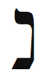
Kabala, Akrep burcuna İbranice harf Nun’u atamıştır. İbranicenin kök dili olan Aramaikte Nun “derinlerin balığı” anlamına gelir ve Akrebin, duygu ve bilinçaltı okyanusunda derinlere dalma eğilimini simgeler. Tevrat’ta balık ve Nun, Akrep burcunun cinsel doğasını anlatan verimlilik ve üremeye işaret eder. Nun ayrıca “ruh” demek olan İbranice sözcük Neshamah’ı da simgeler. Ruhumuz, hiç ölmeyen sonsuz yönümüzü temsil ettiğine göre Nun yeniden doğma niteliğini yayar. Nun aynı zamanda, “yılan” anlamına gelen Nahash’ın ilk harfidir.
Yaşamınızda samimi yakınlığı ve iyileşmeyi artırmak istiyorsanız Nun harfi ile meditasyon yapın. Bu şekil, geçirmekte olduğunuz dönüşüm için size yardımcı olacaktır.
Bedenin Bölümleri
Akrep burcu, üreme ve cinsel organları, burnu gözetir. Yakın bir ilişkide ancak, cinsel organlarımızı açarız. Buralara “mahrem yerler” denmesinin bir nedeni vardır. İyi ve Kötünün Bilgi Ağacından yiyen Adem ile Havva çıplak olduklarını farkettiler. Ve cinsel organlarını incir yaprakları ile örttüler. Antik İbranicede “bilmek,” “seks yapmak” demektir. Bilgi Ağacı onlara çıplaklıklarını gösterdi ve aynı zamanda, birbirlerini cinsel olarak tanıma, birbirlerinin bedenlerini araştırma yeteneğini bağışladı. Tevrat’taki öyküye göre, Adem ile Havva Tanrıdan saklandılar ama seks için özel bir yere gittiler. Akrep enerjisi seks yapmamız için bizi dürtükler. İşin zevkine varın. Ama eşinizin sırları hakkında yeteri kadar bilgi sahibi değilseniz- kiminle beraberdi ve nerede- zararlı ve hatta öldürücü cinsel hastalıklara yakalanabilirsiniz.

Yaşamınızda samimi yakınlığı ve iyileşmeyi artırmak istiyorsanız Nun harfi ile meditasyon yapın. Bu şekil, geçirmekte olduğunuz dönüşüm için size yardımcı olur.

Burun tarafından algılanan koku, hayvanların çevreyi incelemek için kullandıkları en önemli içgüdüdür. İnsan burnunun bu denli üstünlüğü yoktur ama “havayı koklamak” gibi burunla ilgili bir deyim kullanırız. Araştırma, inceleme ve açığa çıkarma için simgesel olarak burnumuza güveniriz. Bu hafta aromaterapi uygulayarak Akrep burcunu onurlandırın. Koku yağları satan bir dükkana gidin ve kokuları araştırın. Bilimsel çalışmalar, feromonların oluşturduğu bazı kokuların cinsel cazibeyi artırdığını göstermiştir.
Akrep Burcunun Rengi: Yeşil-Mavi
Akrep burcunun rengi, yeşil ve mavinin karışımıdır. Yeşil, bir önceki Terazi burcundan, mavi ise bir sonraki Yay burcundan gelir. Bu renklerin karışımı turkuvaz rengini oluşturur. Mısır, Tibet, Anadolu (Türkiye) gibi birçok gelenek ve Amerikan Yerlileri, şaman büyüsünü, gücünü, etkisini ve şaman iyileştirmesini harekete geçirmek için turkuvaz rengini ve taşını kullanır. Akrep burcunun enerjisine bağlanmak için bu rengi giyin.
Akrep Haftasında Neye Odaklanmalıyım?
Değişime odaklanın. Yeni fırsatlara yer açmak için ihtiyacınız olmayan şeyleri- eşya, ilişkiler ve tavırlar- atın. Ağacın yaprakları gibi, büyümeyi engelleyen ne varsa ölmesine izin verin. Aynı zamanda, yaşamınızdaki insanlarla samimi yakınlık oluşturmaya çalışın. Açılın. Sırlarınızı anlatın. Cinsel olun.
Akrep burcunun eş-zamanlılıklarını belirleyin ve kollayın. Bu arketipin simgeleri: Cinsellik, samimi yakınlık, doktorlar, şifacılar, şamanlar, vergiler, sigortalar, iyileştirme, ölüm, dönüşüm, büyü, doğaüstü, sırlar, casuslar, araştırma, Mars, turkuvaz, paranoya (aşırı kuşku), kıskançlık, derin-okyanus balığı, akrepler, yılanlar, kartallar, miras.
Akrep Haftası Kontrol Listesi
• Akrep burcunun olumlamasını günde iki kes yüksek sesle söy leyin: “Tutkulu ve cinsel bir insanım; karşılaştığım her insanla samimi yakınlık kuruyorum. Ölümü kabul ediyorum çünkü ölümden sonra yeniden doğuş olacağını biliyorum. Tanrının şifacı güçlerinin bir iletkeni olmaya hazırım.”
• Nun harfi ile meditasyon yapın.
• Yeşil-mavi giyin.
• Yaşamınızda ihtiyacınız olmayan şeylerin ölmesine izin verin.
• Ceset pozisyonunu çalışın.
• Bir yakınınıza (veya bir psikoloğa) en karanlık sırrınızı anlatın. Açığa çıkın!
• Samimi yakınlık yaratın. Eğer mümkünse seks yapın (güvenli olması koşulu ile, tabii).
Akrep Burcu Ritüeli: Ölüm ve Cinselliğe Kabul Töreniniz
Akrep burcunun bilgeliğine göre üç temel kabul törenimiz vardır- bizi sonsuza dek derinden değiştiren üç an. Birincisi, ölümlü olduğumuzu, sonsuza dek yaşayamayacağımızı anlamamızdır. İlk cinsel ilişkimiz ikinci, ölüm anımız üçüncü kabul törenimizdir. İzleyen egzersiz, Akrep dönüşümünün üç aşamasını içerir.
Rahat bir pozisyonda oturun ve nefesinize odaklanın. İsterseniz derin bir sakinlik için İkizler nefes ritüelini uygulayabilirsiniz. Rahatladığınızı hissedince o sabah kalktığınızdan beri karşılaştığınız olayları anımsamaya çalışın. Kalktınız, dişlerinizi fırçaladınız, bir tost atıştırdınız, park yerinde patronla karşılaştınız, vb. Sonra bir önceki günün ve daha sonra, ondan önceki günün olaylarını sıralayın. Şimdi en son doğum gününüzde ne yaptığınızı anımsamaya çalışın.
Sonra on üç yaşınıza ininceye kadar zamanda yavaş yavaş geri gidin. O yıldan bir iyi, bir de kötü bir olay anımsamaya çalışın.
Sonra zamanda daha da geri gidin ve ölümü ilk anladığınız zamanı yakalayın. Öleceğinizi ve anne babanızın öleceğini size farkettiren şey ne idi? Ölüm kavramı olmadan doğarız. Ama erken bir zamanda, genelde bir akrabanın, büyükanne veya büyükbabanın veya bir ev hayvanının ölümü bize bu Akrep gerçeğini tanıtır. Ölümlüğün farkındalığını tetikleyen olayı belirledikten sonra meditasyondan çıkın ve “ölüm günlüğüne” başlayın. Geçmişteki bu olay hakkında anımsadıklarınızı yazın. Anne babanız veya kardeşleriniz başta olmak üzere insanlarla konuşun. Bu olaya nasıl bir tepkide bulundunuz? Gerçek olay nasıldı? Ölüm Meleği ile olan ilişkiniz hakkında kişisel ve özel bir soruşturma yürütün.

Rock Hudson, AIDS salgınını dünya bilincine soktuğun için sana teşekkür ederiz.

Akrep burcu samimi yakınlığı da yönettiğine göre eşinizden veya yakın bir arkadaşınızdan, ölüm ile tanışmasını aynı şekilde araştırmasını isteyebilirsiniz. Daha sonra bilgilerinizi paylaşabilirsiniz. Bu karşılıklı açıklama, yakınlığınızı önemli oranda artıracaktır.
İkinci aşamada, ilk cinsel deneyiminizi anımsamanız istenir. Ölüm günlüğüne, o gün ve an hakkında tüm anımsadıklarınızı yazın. Neredeydiniz? Kiminleydiniz? Nasıl oldu? Önceki ve sonraki duygularınız ne idi? Bu yaşadığınız, kusursuz bir deneyim olmayabilir ama başka bir insanla, samimi yakınlık kurma yeteneğinizi büyük miktarda etkiler. Sonra cinsellikle ilgili herhangi bir ilk anınızı, örneğin erken çocukluk düşleminizi veya çekici bulduğunuz bir kişiyi anımsayın. İlk düşlemlerinizi ve özlemlerinizi, asıl cinsel deneyiminiz ile karşılaştırın. İlk cinsel deneyiminizi nasıl değiştirirdiniz? İdeal ilk cinsel deneyiminizi yazın. Onun nasıl olmasını isterdiniz? Renk, koku ve konuşma ekleyin. İsterseniz ortamı ve o anki eşinizin kimliğini değiştirin. Cinsellikle olan ilk ilişkinizi düzelterek bugüne kadar sizi gölgeleyen acı anları veya düş kırıklıklarını iyileştirebilir, samimi yakınlık kurmanızı engelleyen olumsuzlukları yok edebilirsiniz. Eğer ilk cinsel deneyiminizi sevgi ile anımsıyorsanız onu unutulmaz yapan her şeyi yazın. Bu uzak ayrıntılar, bugünkü cinsel yaşamınızdan daha çok zevk almanıza yardım edebilir.
Akrep başkalaşımının üçüncü aşamasını, ölümünüzü, yineleyemeyiz ama onun için hazırlanabiliriz. Ceset pozisyonunu çalışın. Bu egzersizin tetiklediği hisleri ve düşünceleri yazın. Sogyal Rinpoche’nin Tibetin Yaşam ve Ölüm Pınarı kitabını okumanızı öneririm. Bu kitap, Tibetin Ölüler Kitabı’nın temel öğretilerini açıklar. Rahatlık içinde ve vakarla ölmeleri için başkalarına yardım etmeniz ve zamanınız gelince bırakıp gitme sürecini kolaylaştırmanız için size yol gösterir. Anımsayın, Akrep burcu ölümü yönetir ama aynı zamanda dönüşümü, yenilenmeyi ve yeniden doğmayı garantiler.
Ünlü Akrepler
Pablo Picasso, Hillary R. Clinton, Niccolo Paganini, The-odore Roosevelt, Ted Turner, Bill Gates, Richard Burton, Julia Roberts, Fyodor Dostoyevsky, Auguste Rodin, Saint Augustine, Lee Strasberg, Voltaire, Bjork, Jodie Foster, Rock Hudson.
Yay: Gezgin Kâhin
23 Kasım-21 Aralık
Anahtar İfade: “Görüyorum”- kehanet
Genel Nitelikler: İyimser, şanslı, özgür ruhlu, bilge, şevkli, bilgi düşkünü, doğal öğretmen, atletik, serüvenci, son derece erdemli
Karanlık Yön: Aşırı iyimser, açgözlü, sorumsuz, tembel
Element: Değişken ateş
Gezegen: Jupiter
Gün: Perşembe
Tema: Kor ve meşale
Beden Bölümleri: Karaciğer, kalçalar, uyluklar
Renk: Mavi
Değerli Taş: Firuze (turkuvaz)
Müzik Notu: Sol diyez
İbranice Harf: Samek 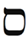
Harfin Kabalistik Anlamı: Güven ve destek
Yaşam Ağacındaki İzlek: İzlek 14, Güzelliği ve Temeli birleştirir
Tarot Kart: Ilımlılık
Filmler: Kutsal Hazine Avcıları, Indiana Jones ve Kamçılı Adam, Indiana Jones ve Son Macera ve diğer serüven filmleri ve belgeseller
Olumlama: “Şanslıyım ve iyimserim, eş-zamanlılıklar ile birlikte akıyorum. Vermek ile almak arasında simya yaratıyorum. Tanrının bana ihtiyacım olan her şeyi vereceğine inanıyorum.”
Genel Bakış
Yay, zodyakın en iyimser ve gamsız burcudur. Seyahati, yüksek eğitimi, doğruyu, öğretmeyi, felsefeyi, dini, bilgeliği, yabancı kültürleri ve serüveni yönetir. Okçunun göğe doğru attığı ok ile nitelendirilen (bu burç gökleri hedefler) Yay burcu, evrenin döngülerinin ötesindeki doğruyu anlamayı arzular. (Mark Twain, Ludwig van Beethoven ve Walt Disney’in burcu olan) Yay bizi, yaşam yolculuğunu pürüzsüz götürmemiz için gerekli iyimserlik duyumuzla ve olumlu tutumla buluşturur. Yay haftasında iyimserliğin şifacı niteliklerini ve kendi şansınızı nasıl yaratacağınızı öğreneceksiniz. Yaşamın anlamı ile ilgili kişisel doğrunuzu bulma ve sonra bunu öğretme hakkında bilgi toplayacaksınız.

Cennet ve Cehennemin Evliliği eserinin yazarı şair William Blake ve evinden hiç çıkmayan, doğrular için kendi içine derinlemesine seyahat eden şair Emily Dickinson birer Yaydı. Emily Dickinson’un şu ünlü şiirini anımsarsınız: “Tüm doğruyu söyleyin ama biraz eğerek anlatın.” Yay burcu, bilgeliği ve doğruyu bulup paylaştığınız yaşam alanını vurgular. Tüm dünya için bir spiritüel öğretmen olan Sai Baba ve Musanın Tev-ratı yazmadığını söylemeye cesaret eden Filozof Baruch Spinoza birer Yaydı.

Yay Burcunun Sahası
Yay burcu, zodyakın en kötü enerji bölgesindedir. Yılın en karanlık günlerini, gün ışığının en alt düzeye düştüğü süreyi yönetir. Ek olarak Yay burcu, ölüm burcu Akrepin ve Tarot’da Şeytan kardı ile simgelenen Oğlağın arasındadır. En güçlü ve uğurlu burçlardan biri olan Yay nasıl oldu da bu kaba yörede kendini buldu? Yoksa Tanrı ile mi tartışmıştı? Hakkı olduğu hayırlı mirasından yoksun mu edilmişti?
Hayır. Aslında bu yeri Yay kendisi seçti. Yay ateş burcudur ve ateş, karanlığı otomatik olarak yok eden tek elementtir. Alevli meşalenin ve doğrunun taşıyıcısı Yay burcu (değişken ateş burcu) karanlığa, bilmezliğe ve bilinmeyene cüretle adım atan serüvenci kâhinleri, bilgelik ve ışık dağıtmaları için taşır. Bu tehlikeli görevin üstesinden gelebilmeleri için Tanrı bu cesur gezginleri şans ve iyimserlik ile donattı. Yay burcu seyahat eden ateşi, binlerce yıldır şehirden şehire taşınan Olimpik meşaleyi simgeler. (Özgün Olimpik Oyunları, Yay burcunu yöneten ana Tanrı Jupitere adanmıştı.) Yay burcu Doğruyu, her zaman Doğruyu ve tam Doğruyu iletir. Gördüğü her ejderhayı öldüren beyaz atlı şövalye olarak tüm dünyayı dolaşır.
Yay burcu, bilgeliği ve doğruyu bulup paylaşacağınız yaşam alanını vurgular. Örneğin, Yay burcu iş evinde olan bir kadın, pazarlama yöneticisi olarak başarılı olmasına rağmen işteki sıkıntısının nedenini anlamak için bu arketipi kullandı. Para için sattığı ayaküstü-yiyecek ürünlerini kişisel olarak onaylamıyordu. Bu yiyecekleri kendisi asla kullanmıyor ve çocuklarına da dokundurtmuyordu. Yay haftasında, işini bırakmaya karar verdi ve ürünlerini satarken yalan söylemek zorunda kalmayacağı bir şirkete geçti.
Ölümün Katili
Tüm değişken burçlar gibi Yay burcu da değişim ve ilerleme getirmek için, kendinden önce gelen inatçı sabit burçtan sıyrılmalıdır. İkizler burcu Boğadan kurtulmak için kurnazlığını kullandı ve Başak, Aslanı tahtından indirmek için titizlikle hazırlanmış ayrıntılı bir plan izledi. Yay burcu, Akrebin gücünü nasıl elinden alacak? Ölümü yöneten Akrebi nasıl öldürecek? Zaten ölü olan bir şeyi öldürmek mümkün olmasa gerek.
Görkemli okçu Yay, özel bir ölümcül fikirden yapılmış bir ok ile ölümü vurur. Doğrunun içine batırılmış oku ile (bu arketip aynı zamanda felsefe ve din gibi çeşitli doğruluk alt kümelerini yönetir) Yay, neşe içinde bize ölümün son olmadığını öğretir. Yeniden doğma (reinkarnasyon) gerçeğini yayarak ölümü defeder ve böylelikle Akrep burcunun üzerimizdeki korkunç etkisini, ölüm korkumuzu, halletmiş olur. Yay burcu döngülerin, göçün ve bir kültürden diğerine, varolmanın bir halinden diğerine seyahat etmenin iyimser mesajını taşır. Yay burcunun doğruluğu ölümü öldürür. Ölümün ölümü ise yaşamdır.
Ama Akrep ve Yaya veya herhangi iki burca, karşılıklı düşman olarak bakmamalıyız. Sonuç olarak hepsi kardeştirler. Akrep burcu bize ölüm ve dirilişi öğretirken Yay burcu, yeniden doğmanın bilgeliğini ve felsefesini (her ikisi de Yay özelliği) ve ruhun göçünü (seyahat etmek) sunar. Yay burcu bize, yeryüzündeki yaşamın öğreteceklerini öğreninceye kadar (Yay yüksek eğitimi) buraya sürekli geri geleceğimizi (Yay döngüleri) söyler. Yay kâhinlerinin ileri sürdüğüne göre ancak o zaman aydınlanacak ve Bir ile buluşacağız.
Çok yakın arkadaş olduğum üst düzey bir bağış toplayıcısı gerçek bir Yay. Sadece inandığı adaylar ve şirketler için para toplamayı kabul ediyor. Erken yaşlardan beri yılanlar onun sürüp giden bir uğraşısı olmuş. Bir keresinde gökten (aslında yüksek bir ağaçtan) kafasına bir yılan düşmüş. Ona, yılanları ve ejderhaları öldüren bir spiritüel kabile olan Yay burcunun üyesi olduğunu söylediğim zaman durumu anladı. Bu yüzden bu hayvanlarla yüzleşmek zorunda ama tabii ki onlarla arkadaş olmak zorunda değil.
Sert ve cesur Yay Indiana Jones’u korkutan tek şey ne idi? Naziler değil, onlarla başedebiliyordu. Hayır. En kötü kâbusu, sürekli karşılaşmak zorunda kaldığı yılanlardı. Belki de yılan, Yayların samimi yakınlık (Akrep) korkusunu simgeliyor ve belki de Indiana Jones’un her filmde değişik bir kız arkadaşının olma nedeni bu!
Yay eviniz ve gezegenleriniz doğruya ve dürüstlüğe olan ilişkinizi vurgular. Bu hafta yalnızca doğruyu ve tam doğruyu konuşmayı deneyin. Tüm yalanlardan, o çok sevdiğimiz beyaz yalanlardan bile kaçınağınıza söz verin.
Ölümsüz Yaralı İyileştirici
Centaur (sentor)- yarı at, yarı insan- Yay burcunu simgeler. Harry Potter dizisinde bir centaur, karanlık koruluktaki genç büyücüyü kötü kalpli Lord Voldemort’tan kurtarır. Centaurlar her zaman yılın en karanlık döneminde bizi düşmanlarımızdan- bunalımdan, kuşkudan, umutsuzluk- tan ve çeşitli korkularımızdan- kurtarmak için gelirler. Mitolojide hem tanrılar hem de ölümlüler, centauru her şeyin üstünde tuttular. Chiron adındaki çok sevilen bir centaur, Herkülün, Aşilin ve daha bir sürü tanrının ve yarı-tanrının muhteşem şifacısı ve öğretmeni oldu. Efsanenin bir sürümüne göre Herkül, zehirli bir canavarı (Akrep burcu) öldürmekten dönmüştü ve zehirli kana bulanmış kılıcı Chironun ayak bileğini kaza ile kesti. Görkemli centaur bu sakarlıktan ölmüş olmalıydı ama tanrılar, bu müthiş bilgelik deposunu kaybedemezlerdi. Dolayısıyla onu ölümsüz kıldılar. Ve hepsinin en akıllısı, uzman doktor Chiron, yaralı şifacı olarak tanındı. Herkesi iyileştire-biliyordu ama kendi acısını dindiremiyordu.

Yay eviniz ve gezegenleriniz doğru- ya ve dürüstlüğe olan ilişkinizi vurgular. Bu hafta yalnızca doğruyu ve tam doğruyu konuşmayı deneyin. Tüm yalanlardan, o çok sevdiğimiz beyaz yalanlardan bile kaçınağınıza söz verin.

1977’de gökbilimciler güneş sistemimizde bir asteroid keşfettiler ve ona Chiron adını verdiler. Haritanızda Chironun bulunduğu yer, onulmaz bir yaradan acı çektiğiniz yaşam alanını vurgular. Bu yer aynı zamanda, başkalarını olağanüstü bir şekilde iyileştirebileceğiniz, onları eğitebileceğiniz ve böylece ölümsüz olabileceğiniz alandır. Bu güzel bir Yay kavramıdır: Ölümsüzlüğünüzün gizilliğini elinde bulunduran yer sizin kendi yaranız, en çok incindiğiniz yerdir.
Haritanızda Chironu bulun. Burada derin bir kişisel yara taşıyorsunuz. Ama Yay centaurun bilgeliğini öğretmek ve bu yaşamda ölümsüzlüğe erişmek yetiniz de aynı yerdedir. Chiron birinci evde olduğu zaman, örneğin, ölümsüzlüğünüzü kişiliğinizi ve liderlik becerilerinizi geliştirerek kazanacaksınız. İkinci evdeki Chiron, yetenekleriniz ile ölümsüzlük sağlayacak. Üçüncü evde ölümsüzlük işiniz veya yazılarınızla gelecek, vb.
Sizi Ölümsüz Yapacak Yara Nerede?
Haritanıza bakın ve ölümsüzlüğünüze dönüşebilecek yaranın veya kusurun olduğu evidiğer bir deyişle yaşam alanınızıbulun,
Chiron Birinci Evde: Yaranız kişiliğiniz. Veya geçmiş bir yaşamdan fiziksel bedeninizi etkileyen bir yara taşıyorsunuz. Siz yaralı bir şifacısınız. Siz çekip gittikten sonra bile değerleriniz kalacak.
Chiron İkinci Evde: Yaranız öz-saygı veya finans ile ilgili. Kendi öz aileniz veya iyileştirme yeteneğiniz sizin ölümsüzlüğünüzü oluşturabilir ve nasıl anımsanacağınızı saptayabilir.
Chiron Üçüncü Evde: Yaralı ve yardımınıza ihtiyacı olan bir akrabanız veya kardeşiniz olabilir. Sözcüklerden, mektuplardan, e-postalardan veya yanlış anlaşılmadan ve iletişim bozukluğundan yara alabilirsiniz. Sözleriniz, işiniz ve iletişiminiz insanlık üzerinde iz bırakacak.
Chiron Dördüncü Evde: Aileniz tarafından reddedilme duygusuna sahip olabilirsiniz. Aile üyelerinizden biri veya anneniz yaralı olabilir. Kendi aileniz, toplumda güçlü bir etki bırakabilir.
Chiron Beşinci Evde: Yaratıcılığınız bir şekilde engellenmiş ve iç çocuğunuz yaralanmış. Çocuklarınız da yaralı şifacı olabilirler. Yaratıcı yeteneklerinizle bir iz bırakabilirsiniz.
Chiron Altıncı Evde: Fiziksel olarak yaralanmış olabilirsiniz veya beslemeniz veya işiniz ile ilgili bir yaranız olabilir. Başkalarına hizmet ederek toplumda kalıcı bir izlenim bırakabilirsiniz.
Chiron Yedinci Evde: Yaşamınıza yaralı insanları çekiyorsunuz ve geçmiş bir ilişkiden dolayı zaten acı içindesiniz. Geçmiş ortaklarınız/eşleriniz sizi güçlü bir şekilde anımsıyor. Sizin mirasınızı sonsuza dek taşıyacaklar.
Chiron Sekizinci Evde: Cinselliğiniz yaralı veya geçmiş bir terkedilmeden dolayı yaralanmışsınız. Başkalarının yeteneklerini destekleyen bir insan olarak anımsanacaksınız. Siz bir şifacısınız.
Chiron Dokuzuncu Evde: Siz, en çok öğrenmeniz gereken şeyi başka insanlara öğreten yaralı bir öğretmensiniz. Fiziksel bedeninizden daha uzun süre yaşayacak güçlü bir izlenim bırakabilirsiniz.
Chiron Onuncu Evde: Kariyer yaşamınızda yaralısınız veya profesyonel yaşamınızda yeteri kadar farkına varılmadığınızı hissediyorsunuz. Kariyerinizdeki çabalarla anımsanacaksınız.
Chiron On birinci Evde: Birçok yaralı arkadaşınız var veya bir gruptan veya kuruluştan yara aldınız. Sizden etkilenen arkadaşlarınız sizi ve çalışmalarınızı, siz öldükten sonra uzun süre anımsayacaklar.
Chiron On ikinci Evde: Zor bir geçmiş yaşamınız oldu ve onu bırakmamakta direniyorsunuz. Hapise girmiş veya bir yere kapatılmış olabilirsiniz. Bu yaşamda şefkat yolu ile, mazlumlara ve kıt imkânları olanlara yardım ederek ölümsüzleşeceksiniz. Bir gizemci olarak anımsanabilirsiniz.

Haritanızda Chironu bulun. Burada derin bir kişisel yara taşıyorsunuz. Ama centaurun bilgeliğini öğretmek ve bu yaşamda ölümsüzlüğe erişmek yetiniz de aynı yerdedir.

Özel Yay Burcunuz
Yay eviniz, müthiş bir doğruluk ve anlam yaşayacağınız alana işaret eder. Bu alanda aynı zamanda bir öğretmen olarak da parlayabilirsiniz. İyimserlik ve inanca bağlı kaldığınız sürece Yay burcu istediğiniz her şeyi açığa çıkarmanıza yardım edebilir.
Yay Birinci Evde (Yükselen Burcunuz): Siz yabancı kültürlerden, bilgelikten ve felsefeden büyülenircesine etkilenen bir gezginsiniz. İdealist ve şevklisiniz, serüvenci özgür bir ruha sahipsiniz. Yay haftasında görünüşünüze, bedeninize ve sağlığınıza odaklanın. Evrenin sizi nerede arayışa veya serüvene çağırdığını saptayın.
Yay İkinci Evde: Para açısından şanslısınız. Kendinizle veya başkaları ile aşırı cömert olmamaya dikkat edin. Büyük miktarda para kazanıp sonra onu harcayabilir veya kaybedebilirsiniz. Öğretmek ve yüksek eğitim için yeteneğiniz var. Yabancı bir kültürde başarılı olabilir ve seyahat ederek para kazanabilirsiniz. Bu hafta finansınız, yetenekleriniz ve öz-de-ğeriniz ile ilgilenin.
Yay Üçüncü Evde: Akıllısınız ve felsefe alanında beceriklisiniz. Akıcı ve eğitici tarzda yazıyor ve konuşuyorsunuz. Lisan yeteneğiniz de olabilir. Kardeşlerinize ve komşularınıza karşı cömertsiniz. Bu hafta kardeşlerinizi, komşularınızı, iletişiminizi, yazılarınızı ve iş girişimlerini vurgulayın.
Yay Dördüncü Evde: Eviniz yabancı fikirlerden ve kültürlerden etkileniyor. Evinizde, dünyanın her yerinden süs eşyası veya eser olması mümkün. Bir süre yabancı bir kültürde yaşamanız iyi bir fikir olabilir. Büyürken bir olasılıkla sık sık ev değiştirdiniz. Bu hafta ev yaşamınıza, ailenize ve duygusal esenliğinize ilgi gösterin.
Yay Beşinci Evde: Egzotik insanlar ilginizi çekiyor. Seyahat etme tutkusu ile kutsanmışsınız ve dünya üzerindeki egzotik yerleri gezmek yararınıza olacak. Sporda çok iyisiniz ve aktif olmaya ihtiyacınız var. Kumarda ve risk almakta şanslı olabilirsiniz ama sadece bilinçli tahminle oynarsanız. Yay haftasında daha çok eğlenmeye, daha yaratıcı olmaya ve sevgiliniz ile çocuklarınıza ilgi göstermeye çalışın.
Yay Altıncı Evde: İşiniz seyahat etmek, öğretmek veya yabancılarla ilgili olabilir. Bir çalışan olarak zorlanıyorsunuz, bu yüzden kendi kendinizin patronu olmanız daha hayırlı olabilir. Yiyecek ve içki konusunda aşırılıktan kaçının. Karaciğeriniz, uyluklarınız ve kalçalarınız sorunlara açık. Bu hafta sağlığınızı, beslenmenizi, egzersizi ve işi vurgulayın.
Yay Yedinci Evde: Serüvenci bir ortağa ihtiyacınız var. Bu yaşamda iki ana aşkınız veya evliliğiniz olabilir. Ortağınıza/ eşinize seyahat ederken rastlayabilirsiniz veya ortağınız/eşiniz değişik bir kültürden olabilir. Bu hafta ortaklarınıza, eşinize ve müşterilerinize odaklanın.
Yay Sekizinci Evde: İş veya yaşam ortağınızın finansal durumu ile ilgilenin. Bir olasılıkla çok para harcıyorlar. Cinsel olarak egzotik insanlar ilginizi çekiyor. Seyahat ederken yüksek seviyede tutku veya samimi yakınlık yaşayabilirsiniz. Yay haftasında samimi yakınlığı, cinselliği ve yapıştığınız fikirleri, tavırları ve insanları bırakmayı vurgulayın.
Yay Dokuzuncu Evde: Doğuştan felsefe ve doğruluk öğretmenisiniz. Bir süre yabancı bir kültürde yaşayabilirsiniz. Yay haftasında yabancılardan, seyahatten ve yüksek öğretimden gelen fırsatlara dikkat edin.
Yay Onuncu Evde: Yabancı kültürlerde başarı ve tanınma elde edebilirsiniz. Kariyeriniz bir olasılıkla felsefe, öğretme ve kitle iletişimi ile ilgili. İyimser oldukça itibar ve başarı şansınız artacak. Ahlâk duyunuz yüksek. Bu ideallerin kariyerinizi yönlendirmesine izin verin. Bu hafta profesyonel yaşamınıza ve toplum ile olan ilişkilerinize odaklanın.
Yay On birinci Evde: Çok sayıda yabancı arkadaşınız var ve değişik kültürlerden insanlarla kolayca arkadaşlık kurabiliyorsunuz. Sizi serüvenlere götürecek şevkli ve iyimser arkadaş istiyorsunuz. Bu hafta arkadaşlarınıza, gruplara ve kuruluşlara özel ilgi gösterin.
Yay On ikinci Evde: Bir olasılıkla yabancı kültürlerle ilgili çözümlenmemiş karmanız var. Başka bir yaşamda inançlarınızdan dolayı zulüm gördünüz. Aşırı iyimser olma ve şansa aşırı güvenme konularına dikkat edin. Yay haftasında spiritüelliğinize, gizemciliğinize ve çevrenizdeki insanların acısına odaklanın.
Döngü Analizi
Yıllarca insanlar bana, yaşamımı nasıl kazandığımı sormuşlardır ve ben de kendimi astrolog olarak tanıtmaktan rahatsız olmuşumdur. Ne yazık ki bilgiyi kötüye kullanan ve kötü yönlendiren birçok astrolog tanıyorum. Bir gün kendi doğum haritamı çalışırken bir vahiy geldi. Yay burcu kariyer evimi yönetir. Bir psikolog, belki de bir psikoanalist olmak üzere yola çıkmış olduğumu anımsadım. Böylece kendime “siklus-analist” (döngü-analisti) demeye karar verdim çünkü Yay burcu, yaşam ve ölüm döngüsünü sürekli kılar. Yay burcu, astrolojinin özünde döngüleri incelediğini farketmeme neden oldu. Astroloji, geçmişin döngüsel olaylarını çözüm-leyerek geleceği anlamaya çalışır. Bu, kâhinin basit sırrıdır. Tarihin olaylarına dikkat ederek ve benzer olayların hangi sıklıkla ortaya çıktığına işaret ederek Yay kâhini geleceği tahmin eder. Örnek olarak bir Yay, yaz mevsiminin yeşil ağaçlarının yarım yıl sonra çıplak kalacağını ileri sürer. Bu komik bir kehanettir ama kâhinlerin döngüsel mantığını gösterir. Onlar döngüleri incelerler, bilgilerini ve deneyim bilgeliklerini geleceğe yansıtırlar.
Yay burcunun gezegeni Jupiter, güneşin çevresinde on iki yılda döner. Jupiter genişleme, açılım ve bereket getirir. Bu yıl hangi yaşam alanınızda şansınızın iyi olacağını bulmak istiyorsanız on iki yıl geriye gidin ve en geliştiğiniz alanı saptayın. Eğer, örneğin, on iki yıl önce maaşınıza zam geldiyse bu yıl da benzer bir ilerleme kaydedeceksiniz demektir.
“Her Şey Yolunda”: Yay Burcunun Mantrası
Yay burcunun kehaneti, iyimserliği ve doğruluğu yönetmesi beni, insanlığın geleceği ile ilgili umutlu olmaya itiyor. Kehaneti (dolayısıyla geleceği) gözeten burç aynı zamanda özgür iyimserliği yaydığı için gelecek iyi olmalı. Eğer zodyakın kâhinleri, yılın en karanlık döneminde gelen bu bilge centaurlar, geleceğe bakıp hâlâ umutlarını ve neşelerini koruyorlarsa hiç kuşkusuz (Bob Marley’in dediği gibi) “her şey yoluna girecek.” Yay burcu doğruluğu ve iyimserliği evlendirir. Umutlu olduğunuz zaman doğruyu daha kolaylıkla gördüğünüzü öğretir. Öğretmek de Yay burcunun sahasındadır. İyi öğretmek istiyorsanız, bu arketipe göre iyimser olmalısınız. Gezgin Yay, doğruluk arayışındadır; o yaşamın anlamını araştırmaktadır. Yaylar her yere girerler- her kültüre, felsefeye, dine ve öğretiye. Doğruyu bulmak ve sonra hepimize öğretmek için dışarda, sonra kendi içlerinde seyahat ederler.
Yay burcunun yönettiği yaşam alanınızda gelecek için iyimser bir tavır takınmak yararlı olacaktır. Bu alan- örneğin, iletişim, aile, ilişki, kariyer- size aynı zamanda yaşamın gerçek anlamını tanıtacak. Bu hafta iyimser olmayı deneyin. Yay burcunun “Her şey yolunda” mantrasını sık sık söyleyin.
Zodyakın Indiana Jones’u
Karizmatik arkeoloji profesörü Indiana Jones, Yay burcunu temsil eder. Son derece kültürlü, atletik ve iyimser bir insan olarak birçok dini doğruya inanır ve saygı duyar. İlk film Kutsal Hazine Avcıları’nda, On Emir için Musa tarafından yapılmış kutsal kabı, Yahudi emanetini arar. İkinci film Indiana Jones, Kutsal Hazine Avcıları’nda Hindu geleneğinin kutsal taşlarını ele geçirir ve üçüncü film Indiana Jones, Kutsal Kâse’de Hristiyan inancının Kutsal Kâsesinin yerini bulur. Yay burcu bizi daha yüksek bilgeliğe taşır. Bu müthiş arayışı, Indiana Jones gibi bir serüven peşinde dünyaya açılarak yapar. Bizi başka kültür ve geleneklerdeki doğrulara götürür. Yahudi irfanı “kendi köyünde peygamber olamazsın” der. Doğruyu yaymak için kişi kendi toplumunun rahatlığını bırakmalıdır. İsa, Muhammed ve Musa hepsi, vaaz etmek ve doğruları öğretmek için evlerinden ayrıldılar. İsa’nın Nasıra’daki pazara gidip kendi kasabasının yetişkinlerine nasıl düşünmeleri ve ne yapmaları gerektiğini söylediğini varsayın. Onu hemen kürsüden indirirlerdi ve “Meryem’in küçük oğlu mu bana neyin ne olduğunu söyleyecek! Ben onun sayı sayamadığı zamanlarını bilirim” diyerek onunla alay ederlerdi. Yay burcu bize, insanlığa ait armağanları ele geçirmek için bilinmeyene adım atan kahraman gibi seyahat etmemiz gerektiğini söyler.
Yay evi, seyahat ederek ve yabancılarla tanışarak geliştirebileceğiniz yaşam alanına işaret eder. Gizilliğinizi gerçekleştirmek için arayışa çıkmak durumunda kalabilirsiniz. Risk alın, serüven arayın ve her şeyden öte iyimser olun. Bu hafta değişik bir kültür ile ilgili yabancı bir film veya belgesel izleyin.

Yay burcunun gezegeni Jupiter güneşin çevresinde on iki yılda döner. Jupiter genişleme, açılım ve bereket getirir. Bu yıl hangi yaşam alanınızda şansınızın iyi olacağını bulmak istiyorsanız on iki yıl geriye gidin ve en geliştiğiniz alanı saptayın.

Yay İle Geçinmek
- Yay’ı mücadeleye çağırın. Ona bir misyon verin, onu serüvene çağırın. Sivrilmesi ve ateşini yayması için onu dürtün.
- İyimser olun ve şansa saygı gösterin. Yay kısmetin büyüsünü anlar. İyimserliğiniz arttıkça yaşamınızdaki olumlu olaylara daha çok odaklanabileceksiniz ve şansınız açılacak. Basit başlayın: Kalabalık bir yolda, örneğin, uygun bir park yeri bulacağınızı hayal edin. İyimserlik gerçekten şans getirir. Deneyin. Ve şanslı Yay arkadaşlarınız ile birlikte olduğunuzda bu tarz bir oyun oynayın.
- Yaylarla seyahat edin. En azından, onlarla konferanslara, sanat sergilerine veya yabancı ülkelerle ilgili filmlere gidin.
- Yaylarla ahlâk, felsefe veya din hakkında tartışmayın.
- Onlara mümkün olduğu kadar çok özgürlük tanıyın. Onlar, centaur gibi herkes tarafından sevilen sosyal varlıklardır. İstedikleri gibi kulüplere, etkinliklere gitmelerine, değişik günlük serüvenlere çıkmalarına izin verin. Yarı at, yarı insan oldukları için koşuşturacak alana ihtiyaçları vardır.
Gücün Karanlık Yönü: Yay
Bu kâhinler ve hatipler, doğruyu bilmemelerine rağmen bildiklerini sanarlarsa ne olur? Benlikleri, çalışmalarını zehirlerse ne olur? Tevrat bu kararlı ahlâkçıları “sahte peygamber” olarak betimler. Ne yazık ki sahte peygamberler kendilerini sahte olarak tanımlamazlar. Kendi doğrularını diğerlerinin üstünde tuttuklarında Yaylar aşırı hevesli, vaaz verme meraklısı ve kendini ahlâk yönünden haklı gören bir insan olurlar. Bunun sonunda misyonerler, “kutsal” Engizisyon, soykırım, cadı yakma ve tüm diğer dini zorbalıklar gelir. Tüm gelenekler ve doğrular için ılımlılık ve saygı olmadıkça (Ilımlılık, Yay burcunun Tarot kardıdır) Yay, meşale taşıyıcısından kâfirlerin yakıldığı öfkeli ateşin destekçisine dönüşür.
Yay burcunun yöneticisi Jupiter, bereket ve şans getirir ama çok açıldığında aşırıya kaçar. Yunan mitolojisinde Zeus olarak da bilinen Jupiter, kısıtlama tanımadan her şeyi ve herkesi arzuladı: Kadınlar, tanrıçalar, güzel erkek çocukları ve hatta hayvanlar. Eğer nasıl yapıldığını çıkarabilseydi herhalde bir bitki ile bile seks yapabilirdi. Yaylar da aşırılığa karşı pek dirençli değillerdir. Uzun vadeli ilişkilerde bazen bir tek kişiye bağlı kalmakta zorlanırlar. Yaylar yiyecek ve içecek konusunda da açgözlü ve obur olabilirler.

Yay evi, seyahat ederek ve yabancılarla tanışarak geliştirebileceğiniz yaşam alanına işaret eder. Gizilliğinizi gerçekleştirmek için arayışa çıkmak durumunda kalabilirsiniz. Risk alın, serüven arayın ve her şeyden öte iyimser olun. Bu hafta değişik bir kültür ile ilgili yabancı bir film veya belgesel izleyin.

İbranice Harf Samek
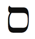
Kabala Yay burcuna Samek harfini atadı. Samek “güvenmek” veya “desteklemek” anlamına gelir. Yaşama güvendiğimizde, karşılaştığımız eş-zamanlılıklarla birlikte aktığımızda Doğruyu buluruz. Güven iyimserlik getirir. Yay burcu güvenmemizi talep eder.
Samek “yanında” veya “yakınında” anlamına da gelir. Yay burcunun doğruluk ve iyimserlik öğretisini izleyerek yüksek nefsimize yakınlaşır, Tanrının yanına gideriz.
Samek harfinin şekli, aynı adı taşıyan Tarot kardında gösterilen ve Jupiter ile ilişkilendirilen kısmet çemberine benzer. Yuvarlak harf, döngü analizi kavramını vurgular. Çember sürekli döner. Her şey değişir. Ve Yay burcunun etkisi ile her şeye iyiye doğru değişir.
Yaşamınıza iyimserlik ve şans çekmek istiyorsanız Samek harfi ile meditasyon yapın. Bu harf aynı zamanda Tanrıdan destek isteyen duanızı güçlendirir. Seyahat ederken de bu harfi kullanın. Yeni bir ülkeye varmadan önce, örneğin, Samek harfinin sizi sarmaladığını hayal edin, eş-zamanlılıklar ve serüven için dua edin.
Bedenin Bölümleri
Yay burcu karaciğeri, uylukları ve kalçaları yönetir. Mitolojide birçok öğretmen ve kâhin, mesajlarını iletmek için karaciğerlerini kurban etmek zorunda kaldılar. Karaciğer, içsel doğrumuzu içerir. Bazı antik medeniyetlerde rahipler kehanet için karaciğeri kullandılar. Kurban edilmiş bir hayvanın karaciğerini inceleyerek- hepatom sanatı- tanrıların isteklerini açıkladılar. Jupiterin yükselişini destekleyen Titanlardan biri olan Prometheus, insanlığa ateşi sundu. (Ateşli Yayın lisanında, bize doğruyu gösterdi.) Ateşi güneşin iki tekerlekli savaş arabasından (Aslan burcundan) çaldı ve insanlığı Tanrıya yaklaştıran bu armağan için ceza olarak bir kayaya zincirlendi. Her gün bir kartal (bir önceki burç Akrebin simgelerinden biri) savunmasız kahramanın karaciğerini yemek için geldi. Ve her gece karaciğer yenilendi (karaciğerimiz ameliyattan sonra tazelenir) ama ertesi gün kartal ziyafet için yine gelecekti. Norse (Norveç) mitolojisinin en yüksek tanrısı Odin kendini Yaşam Ağacından baş aşağı astığında karaciğerini bir mızrak ile deldi. Bu Yay ritüelinden sonra, bugün de kehanet için kullanılmakta olan Runik yazıyı keşfetti. Ve İsa çarmıha gerildikten sonra bir Romalı asker, onun ölüp ölmediğini anlamak için karaciğerini deldi. Bu mitolojiler, karaciğerin açılmasının içsel Yay doğruluğunun tüm insanlığa doğrudan aktığını ima eder.
İçsel doğruyu taşıyan karaciğerinize iyi bakın. Alkol, uyuşturucu ve çoğu reçete ilaçları karaciğere zarar verir. Bu hafta biraz ara verin.
Yay burcunun enerjisini harekete geçirmek için uyluk kaslarınızı güçlendirebilirsiniz. Herhangi bir çömelme hareketi geçerlidir. İsterseniz yoga iskemle hareketini deneyin. Hayali bir iskemleye oturur gibi çömelin. Sırtınız dik olsun. Bu pozisyonda üç dakika kalın. Eğer zorlanıyorsanız sırtınızı ve omurganızı duvara bastırarak uygulama yapabilirsiniz.

Yaşamınıza iyimserlik ve şans çekmek istiyorsanız Samek harfi ile meditasyon yapın. Bu harf aynı zamanda Tanrıdan destek isteyen duanızı güçlendirir. Seyahat ederken de bu harfi kullanın.

Yay Burcunun Rengi: Mavi
Herkesin sevdiği ve diğerleri ile kusursuz bir şekilde karışabilen mavi renk, Yay burcunun rengidir. Mavi, hemen her Yayın sahip olduğu popülerliği, aynı zamanda enginliği ve sınırsız olasılığı- “okyanus kadar engin” ve “yıldızları hedeflemek” gibi- simgeler.
İyimserlik, doğruluk, bilgelik ve güven niteliklerini kendinize çekmek için mavi giyinin.

Yay burcunun yönettiği yaşam alanınızda gelecek için iyimser bir tavır takınmak yararlı olacaktır. Bu alan size aynı zamanda yaşamın gerçek anlamını tanıtacak. Bu hafta iyimser olmayı deneyin. Yay burcunun “Her şey yolunda” mantrasını sık sık söyleyin.

Yay Haftasında Neye Odaklanmalıyım?
Yay haftasında doğrunuza odaklanın.Yaşamınızın anlamı ne? İnanç sisteminiz ne? Çevrenizdeki insanlara ne öğretmek durumunda olduğunuzu evrenin size açıklamasını isteyin.
Yaşama iyimser bakmaya çalışın. Mümkünse seyahat edin. Hiç olmazsa, kendi şehrinizde gezin ve diğer kültürleri, gelenekleri araştırın.
Her zamanki gibi Işığa yolculuğunuzda size yardımcı olacak eş-zamanlılıkları kollayın. Yay burcunun simgeleri: Ateş, meşale, yüksek eğitim, din, felsefe, bilgi, seyahat, yabancılar, serüven, arayış, evlilik ile gelen akrabalar, mavi, Jupiter, karaciğer, uyluklar, at, centaur, kâhinler, bilgeler, öğretmenler, yaralar, doğruluk, ahlâk, döngüler, dini bağnazlık, açgözlülük, şans, iyimserlik, kısmet çemberi, ılımlılık, güven, bilgelik.
Yay Haftası Kontrol Listesi
• Doğrunuzu bulun ve bir hafta yalan söylemeyin. İnsanlara yardım edeceğini düşündüğünüz ufak yalanlardan bile kaçının.
• Yay olumlamasını söyleyin: “Şanslıyım ve iyimserim, eşzamanlılıklar ile birlikte akıyorum. Vermek ile almak arasında simya yaratıyorum. Tanrının bana ihtiyacım olan her şeyi vereceğine inanıyorum.”
• Samek harfi ile meditasyon yapın.
• Mavi giyinin.
• Ölümsüzlük alanınızı tanımlayın.
• Bu yıl olabilecek açılım ve gelişmeyi öngörmek için on iki yıl geri gidin.
• İyimser olun. “Her şey yolunda” deyin ve öyle olduğunu görün.
• Uzak bir ülke ile ilgili bir belgesel veya yabancı bir film kiralayıp izleyin.
• Bu hafta kitap okuyun, konferanslara ve kitap imzalama günlerine gidin (Yay bilgelik ve eğitim burcudur). Eğer uzun yol araba sürüyorsanız veya uçuyorsanız teyp kitapları alın. Bu, kitap okumak kadar iyi olmasa bile hiç okumamaktan daha iyidir.
Yay Ritüeli: Kabala Haçı
Kabala, bedeninizi ve yaşamınızı dengeleyecek eski bir Yahudi duası öğretir: Atah Malchut VeGevurah VeGedulah LeOlam Amen (“Sonsuza Dek Krallık, Güç ve İhtişam Senin Olsun, Amin”). Bu dua Taç, Krallık, Merhamet ve Haşinlik küreleri ile simgelenen Yaşam Ağacının dört köşesini birleştirdiği için Kabala Haçı’nı çağrıştırır. Bu haç, evrensel spiri-tüel güç alanının dört bileşenini simgeler: İlahi ve sıradan, erkeksi ve kadınsı. Yarı hayvan, yarı insan bir burç olan Yay, dünyevi yaşam, veya sıradan olan (centaurun alttaki hayvan kısmı) ile ilahi güç (centaurun üstteki insan kısmı) arasındaki dengeyi somutlaştırır. Kavisli yayı (kadınsı) ve çizgisel oku (erkeksi) tutan okçu olarak Yay burcu, spiritüel haçın diğer noktalarını da harekete geçirir. Bu arketipte yer alan dört köşenin bağdaştırılması, Doğruyu getirir.
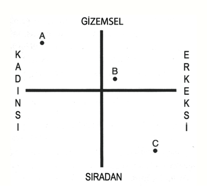
Şekil 6: Kabala Haçında örnek konumlar
Şekil 6’daki grafikte kendinizi yerleştirin. Eğer etkin, dışa-dönük ve iş bitirici enerjik bir insansanız sağ tarafta, erkeksi kısımda olacaksınız. Eğer alıcı ve yaşamla akan daha edilgen bir insansanız solda kadınsı taraftasınız demektir. Şimdi ne denli dünyevi veya gizemsel olduğunuzu belirleyin. Eğer bu kitabı okuyorsanız, meditasyon ve yüksek doğrularla ilgileniyorsanız grafiğin üst kısmındasınız. Öte yandan, eğer sadece dokunduğunuza, işittiğinize ve gördüğünüze inanıyorsanız ve kuşkucu iseniz grafiğin alttaki sıradan bölümündesiniz. Burada amaç, erkeksi ile kadınsıyı, ilahi güçle sıradanı dengeleyip haçın tam ortasına oturmaktır.
Yukarıdaki örnekte, A insanı grafiğin kadınsı, gizemsel bölümündedir. Haçın çatkısındaki denge noktasına geçmek için bu kişi, biraz daha dünyevi (sıradan), ayakları yere basan ve güvenli girişken (erkeksi) olmalı. C insanı, bir abur cubur yiyecek şirketinin CEOsu, tam tersini yapmalı. Buyurgan, tartışmacı (erkeksi) ve çok para kazanmanın (dünyevi) dışında hiçbir şeye aldırmayan bu kişi, kalp krizi geçirmeye eğilimlidir. Haçın merkezine yaklaşmak için biraz güven, gizemcilik ve şefkat geliştirmeli. Bu arada B insanı, sıradan hayvani doğasını evrenin gizemleri ile oldukça dengelemiştir. Dövüş sporlarının spiritüel bir biçimini (gizemsel) öğretirken Brezilya jujitsu turnuvaları (sıradan) düzenler. Öte yandan, erkeksi yönü ağır basmaktadır. Sürekli plan yapmaktan ve herkes için her şeyle ilgilenmekten biraz vazgeçip almayı öğrenmesi gerekmektedir.
Kendinizi haç üzerine yerleştirin ve denge ve uyum noktasına yakınlaşmak için ne gibi değişimler yapmanız gerektiğini saptayın. Aile üyelerini, ortaklarınızı ve arkadaşlarınızı da grafiğe koyabilirsiniz. Büyük bir olasılıkla çoğu sizin yakınızda olacaktır. Sufilerin dediği gibi “Bana arkadaşlarınızı gösterin ve size kim olduğunuzu göstereyim.” Haçın merkezine doğru olan yolculuğunuzu birlikte yapıyor olabilirsiniz. Onlara yardım edin. Onlara, doğruya nasıl yakınlaşacakları ile ilgili Yay doğrunuzu öğretin.
Ünlü Yaylar
Sai Baba, Baruch Spinoza, Billy the Kid, Scott Japlin, Joe DiMaggio, Jimi Hendrix, Bruce Lee, William Blake, Winston Chuchill, Mark Twain, Bette Midler, Woody Allen, Jean-Luc Godard, Walt Disney, Emily Dickinson, Frank Sinatra, Ludwig van Beethoven, Steven Spielberg, Edith Piaf, Frank Zappa.

Indiana Jones filmleri, Yay burcundan Steven Spielberg tarafından yönetildi.

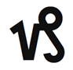
Oğlak: Başaran
22 Aralık-19 Ocak
Anahtar İfade: “Kullanıyorum”- elimdeki ile kazanıyorum
Genel Nitelikler: Israrlı, hırslı, başarılı, kariyere yönelik, disiplinli, sorumlu, güvenilir, komik, olgun
Karanlık Yön: Kötümser, fırsatçı, açgözlü, aşırı kuşkucu, ince alaycı, korku dolu, amaca erişmek için önüne geleni devirmeye hazır, sonucun süreci gerekçelediğine inanan
Element: Öncü toprak
Gezegen: Karmayı ve anlayışı yöneten Satürn
Gün: Cumartesi
Tema: İş planı
Beden Bölümleri: Deri, dişler, iskelet, dizler
Renk: Çivit mavisi
Değerli Taş: Garnet (lal taşı), siyah akik, hematit (kan taşı)
Müzik Notu: La
İbranice Harf: Ayın 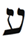
Harfin Kabalistik Anlamı: Her şeyi gören göz
Yaşam Ağacındaki İzlek: İzlek 15, Güzelliği ve İhtişamı birleştirir
Tarot Kart: Şeytan
Filmler: Şeytan Marka Giyer, Şeytanın Avukatı, Damdaki Kemancı
Olumlama: “Tüm hırslarımı gerçekleştirebilirim; başarı avucumun içindedir. Disiplin, azim ve dayanıklılık ile hayallerime erişebilirim.”
Genel Bakış
Oğlak burcu bizi, dünyevi hedeflerimize erişmek için gerekli olan yapı, disiplin ve planla donatır. Kara kışın başlangıcında, burçların en pragmatiği (yararcı) ve bizi doğru yola yönlendirecek, gizilliğimizi açığa çıkaracak bir arketip olarak gelir. Oğlak burcu (Elvis Presley’in, Richard Nixon’un ve Martin Luther King Jr.ın burcu) kariyer ve sosyal konum alanlarını yönetir. Geleneğin ve geçmişin burcudur. Bize ısrarı, dayanıklılığı ve azmi öğretir. Oğlak haftasında kariyerinizi nasıl geliştireceğinize ve yaşamdaki amacınızı tanımlamaya odaklanacaksınız. Korkularınızı ve engellenme/bozulma hislerini aşmak, karşılaştığınız tüm engellerdeki yararı görmeyi öğrenmek için çalışacaksınız.
Oğlak Burcunun Sahası
Oğlak burcu yılın en kısa günü olan kış gündönümünde, gündüz en az ışık ile karşılaştığımız zamanda başlar. Öncü toprak burcu Oğlak kışı başlattığı gibi, yapısal, güç, politik, parasal, sağlık ve fiziksel, disiplin ve planlama süreçleri gibi toprak elementi tarafından yönetilen tüm süreçleri başlatır. Kış gündönümü Kuzey Yarımkürede birçok kültür için sarsıcı (travmatik) olmuştur. Kış gündönümüne yaklaştıkça günler ışıktan giderek daha çok yoksun olmaya başlar. Her şey karanlık ve kasvetli olur. İlk yıldız gözlemcileri ve şamanlar bu görüngüyü ve onun insan ruh hali ile davranışı üzerindeki zararlı etkisini anladılar. Örnek olarak, pre-Columbian Meksika’da bazı kültürler, güneş tanrısını yatıştırmak için insan kurban ederlerdi. Kış gündönümü sırasında daha az gözüken güneşin, yeniden güçlenmek için kurban edilmiş insan kanına ihtiyaç duyduğuna inanıyorlardı.
Çağdaş psikologlar kış bunalımlarını, S.A.D (seasonal affective disorder=mevsime bağlı duygusal rahatsızlık) olarak adlandırmakta. Psikologlar insanların, hayvanların ve bitkilerin değişen mevsimlere tepkide bulunduklarını anladılar ki bu sonuca, dünyanın her yerindeki astrologlar binlerce yıl önce varmışlardı. S.A.D.nin belirtileri aşırı uyuma, öğleden sonra kısa uyku çekme ihtiyacı (siestada olduğu gibi), kilo almaya neden olan karbohidratlara aşırı arzu duyma, huysuzluk, melankoli ve antisosyal davranışlardır. Ayıların kış bunalımına buldukları pratik çare uyumaktır. Psikologların çaresi ise hastayı ışığa maruz bırakmak. Buna ışık terapisi deniyor.
Tüm dünyada bilge yaşlılar, masal anlatıcıları, dini öğretmenler ve astrologlar başka bir çözüm buldular. Sizin ve ailenizin bu önleyici ilacı birçok kez kullanmış olduğunuza eminim. Buna bayram mevsimi veya örnek vermek gerekirse, Noel, Hanuka, Kwanza, Saturnalia, Yule diyoruz. Açıkgöz atalarımız, bugünün psikologları gibi, günler kısaldıkça insanların ruh hallerinin bozulduğunu farkettiler. “Yukarıda olduğu gibi aşağıda da” olarak ifade edilen antik simya önermesinin pratik uygulamasını yapan atalarımız, yukarıdaki ışığın azalması ile aşağıdaki insanların enerji seviyelerinin düştüğünü gördüler. Toplumları canlandırmak ve kış gündö-nümüne özellik kazandırmak için bayram festivalleri düzenlediler. Yılın en karanlık günlerinde ışık bayramları yarattılar. Bayramların gerçek ışık terapisi olduğunu düşünebiliriz. Işık Festivali olarak da bilinen Hanuka, hem dışardaki hem de içerdeki karanlığın büyümesini dengelemek için yapılır. Bu bayram sırasında dünyanın her yerindeki Yahudiler sekiz gün boyunca mum yakarlar. Hanuka, ışığın büyümesini teşvik etmek için tasarlanmış sevimli bir sihiri harekete geçirir. Sekiz mum yakarız (sekiz sonsuzluğun simgesidir) ve sekizinci günde sekiz mumu bulunca ışık sanki, artık kendi başına yanabileceği kritik kütleye erişmiştir. Keltler, Yule sırasında dağ tepelerinde aynı amaçla ateş yakarak ışığı, kararmakta olan dünyaya çağırdılar. Noelde ağaçları, parıldayan ışıklarla donatırız. Noel sırasında herhangi bir alışveriş merkezine veya şehir merkezine gidin, ışık terapisine girmiş gibi olursunuz. Dükkanlar ve ev önleri öyle aydınlanmıştır ki gecenin ilerleyen karanlığını farkedemezsiniz.
Son zamanlarda insanoğlu, kış hüznünü dağıtmak için yeni bir yöntem buldu. Buna alışveriş terapisi deniyor ama etkisi kısa süreli. Alışverişin güçlendirici etkisi, Ocak ayında gelen kredi kardı ekstresine kadar sürer. Alışveriş terapisi Kabalanın spiritüel ilkelerinden kaynaklanıyor ama bunun son iki yüzyıl içinde biraz çığırından çıktığını söyleyebilirim. Kabala vermek ve almak ilkesini vurgular ve bizler karanlık günlerde hediye verip alarak sevgi ve mutluluk yaratmak üzere teşvik ediliyoruz. Odamızda yeşil bir ağaç kurup (Yaşam Ağacı) onu hediyelerle çevreliyoruz. Yahudi geleneğine göre çocuklara, Hanuka gelt denilen çikolata altın dağıtırız. Çikolatadaki şeker miktarı çocukların neşelenip kışın kasvetinden kurtulmalarını sağlar.
Oğlak haftasında iyimserlik ve umut duyularınızın azalmakta olduğunu hissedebilirsiniz. Bu normaldir. Bazı astrologlar Oğlak burcuna acı çekme burcu derler. Yönlendirilmesi kolay bir burç değildir. Bu ruh halinin gitmesi için iki üç gün geçmesine izin verin ve dibe vurmaktan korkmayın.
Tanrıların Giriş Kapısı
Kış gündönümü yılın en karanlık günüdür. Ama aynı zamanda bir mucizenin habercisidir. İsa, Apollo ve sevimli ikizi Artemis, (Mezopotamyalı Jupiter) Marduk, (boynuzlu Gall tanrısı) Cernnunos, (Babil güneş tanrısı) Mitras, (Canaanite tanrısı) Baal, (Kelt güneş tanrısı) Bel, (Norveç tanrısı) Balder, (Frikyalı kurtarıcı) Attis ve (Mısır güneş tanrısı) Horus arasındaki ortak nokta nedir? Hepsi aynı günde doğdular. Doğum günleri kış gündönümüne rastlar; bu da onların Oğlak burcu olduklarını gösterir. (Koç burcu bölümünde belirttiğimiz gibi bir Koç olan İsa, vekaleten Oğlaktır.)
Bu paylaşılan doğum günü bize derin bir spiritüel gerçeği öğretir: En kasvetli karanlıkta ve umutsuzlukta, her şeyin kaybolduğunu sandığımız bir zamanda yüksek nefsimiz, içimizdeki tanrı ve tanrıça kıvılcımı doğar. Dibe vurduğumuzda kurtarıcımız- gerçek ilahi doğamız- bizi kurtarmaya gelir.
Astroloji yılın en uzun gecesini, o gün Işık tanrısını doğuran Ana Tanrıçanın rahmi olarak görür. İspanyollar, doğumu anlatmak için “ışık vermek” anlamına gelen dar luz deyimini kullanırlar. Bu astrolojik doğumun arefesinde tanrıçanın rahmi- gecenin her şeyi kapsayan karanlığını anlatan kod-daralmaya başlar. O geceden sonraki geceler gibi giderek küçülür ve bu arada Işık denen bebek büyür ve gelişir. Ve ezoterik astrolojiye göre, kış gündö-nümü tanrıların giriş kapısıdır.

Oğlak haftasında iyimserlik ve umut duyularınızın azalmakta olduğunu hissedebilirsiniz. Bu normaldir. Bazı astrologlar Oğlak burcuna acı çekme burcu derler. Yönlendirilmesi kolay bir burç değildir. Bu ruh halinin gitmesi için iki üç gün geçmesine izin verin ve dibe vurmaktan korkmayın.

Bir Oğlak olmayı denerken başarıya ve elde etmeye giden yolun genelde, karanlık ve umutsuzluk yanyolundan geçtiğini anlayın. Oğlak burcu, başarıyı tadan herkesin ilkönce yenilgiden geçtiğini öğretir. Yenilgi normaldir ama bir terslikten dolayı umutsuzluğa kapılmak veya vazgeçmek değil. İnsan gelişimi, deneme ve yanılma tahterevallisinde oturur. Ve bu hatalar bizi zafere götürür. Keçinin simgelediği Oğlaklar, dağ tırmanıcılarıdır. Bu hafta tırmanacaksınız. Ama daha önce, tırmanacağınız dağı belirlemelisiniz. Eğer başarı arzuluyorsanız Oğlak şu soruyu kuşku duymadan yanıtlamanızı ister: Ne istiyorsunuz?
Bu hafta önünüzdeki yıl için hedefinize karar vereceksiniz. Karşılaştığınız eş-zamanlılıklara, gerçekten istediğiniz şeyi saptamanıza yardım etmeleri için olanak tanıyın. Haritanızdaki Oğlak burcu, acı çekeceğiniz ve bir miktar zorluklarla karşılaşacağınız yaşam alanını gösterir. Bu deneyimleri kötü karma veya ceza olarak değil, engellenme ve bozulma hislerini atlatmayı ve yenilgi ile başetmeyi öğrenme yolu olarak görün. Sonuç olarak bir bahçıvan bahçede kötü kokan gübre kullanarak mis kokulu ve bol meyveli bitkiler yetiştirir. Oğlak burcunuz, mis kokulu ve bol meyveli başarı tadabileceğiniz alanı vurgulamakta.
Kışın Soğuğu
Oğlak burcu yılın en soğuk dönemini başlatır. Zodyakın buzdolabıdır ve dolayısıyla, tüm burçlar arasında en saklamaya yönelik olanıdır. Oğlak yiyecek ve geçim malzemesi, fikir ve düşünce tarzı toplar ve saklar. Geçmişte buzdolabı bulunmadan önce, eğer Oğlak burcunun uyarısını dikkate almayıp yiyecek stoğunuzu dikkatli kullanmadı iseniz ilkbaharda yeni hasat gelmeden siz ve aileniz açlıktan ölmüş olurdunuz. Oğlaklar bu yüzden cimridirler ve kaynaklarının hesabını iyi yaparlar. Bu onların görevidir. Böylelikle kendilerini ve bizleri hayatta tutarlar. Oğlak burcu bize, elimizde olanların uzun süre dayanması için disiplinli ve dikkatli olmamız gerektiğini söyler. Bu binlerce yıllık yaşamı sürdürme işleyişini hayata geçirir. Oğlak ortaklarınızın/eşinizin ve tanıdıklarınızın bu saklama (bazıları için cimri) doğasına saygı duyarak onları anlayabilirsiniz. Bundan sonra bir Oğlak size “Buna para harcamayalım. Parayı emeklilik hesabımıza yatıralım” derse tartışmayın. “Tamam” deyin.
Bir gün Tel Aviv’de bir jimnastik salonunda aletlerde çalışma yaparken yanımdaki İsrailli Arap bana değerli bir ders verdi. Cebimde bir şekel (İsrail parası) vardı ve ağırlık kaldırma rutinindeydim. Şekel cebimden fırladı ve yerde yuvarlandı gitti. Para yere düştüyse demek ki bir yolculuğa çıkmış, bırakayım gitsin diye düşündüm, bu arada tempomu da kaybetmek istemiyordum. Yanımdaki alette çalışan adam ağırlıklarını yere koydu ve parayı yerden aldı. Bana baktı ve “Babam her zaman, düşürdüğün şekeli yerden almazsan bir şekel (25 sent) değerin bile yok, derdi” dedi. Adam bir Oğlaktı ve ben dersimi almıştım.
Bu hafta para, kaynak, zaman ve enerji tasarrufuna odaklanın. Fiyatları karşılaştırmadan alışveriş yapmayın. Giderlerinizin ayrıntılı bir hesabını tutun. Her ay ne kazanıyorsunuz? Ne harcıyorsunuz? Örnek olarak, her sabah köşedeki kafede beş dolara içtiğiniz kahveden vazgeçerseniz yılda 1800$ tasarruf etmiş olursunuz. Oğlak gezegenleriniz ve eviniz, disiplinli bir şekilde ele almanız gereken cömert kaynaklarla kutsandığınız yerleri vurgular. Oğlak burcu, biraz daha tasarruf sahibi ve sorumlu olmanız gereken yaşam alanını belirtir.
Zaman Burcu
Oğlak yapı ve düzen burcudur. O, tüm diğer enerjileri içeren kabı simgeler. Karşıt burç Yengeç kutsal suyu simgelerken Oğlak, bu suyu içinde tutan Kutsal Kabın simgesidir. Yengeç okyanus ise Oğlak, onun tabanı ana kayadır. Oğlak burcu üç boyutlu fiziksel dünyanın ve zamanın yapısını oluşturur. Antik Yunanlıların zaman beyi Chronos dedikleri Satürn, Oğlak burcunu yönetir. Oğlak burcu neden bize zamanı verdi? Neden bu karmaşık arketip yaşlılığı, olgunluşmayı ve diğer gençlik dışı şeyleri getirdi? İlerlememizi zaman içinde değerlendiririz. Zaman olmadan gelişmemizi ölçemeyiz. Öğrendiklerimizi özümseyip özümsemediğimizi bilemeyiz. İçinizdeki Oğlak enerjisini harekete geçirmek, zamanla uzlaşmak demektir. Zamanın bu dünyada en büyük şifacı ve öğretmen olduğu olgusunu takdir etmeye başlamalısınız.

Bu hafta para, kaynak, zaman ve enerji tasarrufuna odaklanın. Fiyatları karşılaştırmadan alışveriş yapmayın. Giderlerinizin ayrıntılı bir hesabını tutun. Oğlak gezegenleriniz ve eviniz, disiplinli bir şekilde ele almanız gereken cömert kaynaklarla kutsandığınız yerleri vurgular. Oğlak burcu, biraz daha tasarruf sahibi ve sorumlu olmanız gereken yaşam alanını belirtir.

Batı toplumu genelde zamana savaş ilan etmiştir. Daha hızlı uçaklar, ışık hızında internet bağlantıları, hızlı egzersizler, hızlı arabalar ve hızlı yemek için para ve kaynak harcıyoruz. Zamanı hükümsüz kılma çabası içinde daha uzun saatler çalışıyoruz. Ve boş zamanımız azalıyor. Görünen o ki zamanı altedemeyiz. Öyleyse neden teslim olmuyoruz? Oğlak burcu bizi yavaşlatmak için ortaya çıkar. Yahudilik ve Sufi geleneği “Acele işe şeytan karışır” der. Oğlak burcu bize, spiritüel gelişmenin kısa yolu olmadığını anımsatır.
Maddenin önemi vardır. Maddi dünyanın öğretilerine egemen olmak için yeryüzünde zaman geçirmemiz gerekiyor. Yaşamı neden hızlandırıyoruz? Bazen geri baktığımızda belirli bir anı- ilk aşkı, ilk öpücüğü, okulu, hamileliği, yeni bir eve taşınmayı- tam anlamıyla değerlendirmek için daha çok zaman harcamış olmayı isteriz. Deneyime hakkını vermeden ve onu özümsemeden montaj bandındaki araba şasisi gibi bir işten diğerine koşuyoruz. Oğlak haftasında yavaşlayıp her deneyimi iyice değerlendirdiğinize emin olun. Daha yavaş yürüyün, düşünün, konuşun ve yiyin.
Oğlak burcu, zamanın değerini vermemiz ve gizilliğimizi gerçekleştirmemiz için bize gerekli araçları verir. Oğlak donatıları disiplin, ısrar, azim ve dayanıklılıktır. Tüm bu nitelikler zamanla ilgilidir ve akıllı kullanıldığında hepsi başarının ve elde etmenin yolunu açar. Erişmek istediğiniz bir hedef varsa (hedefler ve erişimler Oğlak tarafından yönetilir) bir plan yapmalısınız (planlar Oğlak tarafından yönetilir) ve sebatla, özenle ona odaklanmalısınız (odaklanma Oğlak tarafından yönetilir). Yolda bazı deneme ve yanılmalardan, engellerden ve bozulmalardan geçeceksiniz (hepsi Oğlak tarafından yönetilir) ama kararlılığınızı korumalı, disiplin ve azimle, ne denli uzun zaman alırsa alsın hedefe doğru yürümelisiniz (yine Oğlak). Oğlak kariyerimizi yönetir. Ve seçtiğimiz kariyerde bir şeyler yapabilmek için tüm bu nitelikleri edinmeliyiz.
Bir dahaki sefer bakkala veya işe doğru yaptığınız küçük yolculukta hedefe varmanın ne kadar süreceğini kestirmeye çalışın. Varış zamanınızı saptadıktan sonra oraya gidinceye kadar saatinize bakmayın. Bu kural, tahmininizi tutturmak için acele etmenizi veya yavaşlamanızı engelleyecektir. Zaman ile olan ilişkime ince ayar yapmak ihtiyacını hissettiğimde bu küçük oyunu oynarım. Amaç, tahminize mümkün olduğu kadar çok yakınlaşmaktır. Örnek olarak, bir adam bu oyunu, aynı gün içinde Dallas’tan Hollywood’a bir toplantı için giderken uyguladı. Ve tahmininden iki dakika önce gideceği yere vardı. Onu yavaşlatabilecek tüm aksiliklere rağmen bu oyundaki başarısı onu o kadar mutlu yapmıştı ki toplantısı hayal edebileceğinden çok daha iyi geçti. Sonunda bu serüven ona, zaman ve uzaya egemen olduğu hissini verdi.
Ana Caddedeki Küçük Kız
Bazı insanlar dağın tepesine erişmeye çalışırken çektikleri sıkıntılardan dolayı geri çekilir ve sızlanırlar. Oğlak omuz silker ve ekler: “Önemli değil! Bu yöntem her zaman yararlı olmuştur. Ve süreç içinde size yardımcı olacaktır.”
On yaşlarında mutlu, canlı ve yaşama sevinçle bağlı bir kız çocuğu düşünün. Bu çocuk her Cumartesi sabahı babası ile Ana Caddede yürümeyi dört gözle bekler. Baba kız elele tutuşurlar, konuşarak ve vitrinlerdeki oyuncaklara bakarak gezerler. Bir Cumartesi günü bir müzik dükkanın önünden geçerken kız çocuğu vitrini göstererek “Baba, baba, şu gitara bak! Lütfen baba, bana onu alır mısın?” der.
Sabırlı baba, son bir saat içinde pembe bir elbise, kırmızı bir bisiklet ve üç katlı bir peynir tatlısı için aynı yalvarışları duymuştur. “Haydi, anne evde bizi bekliyor” diye yanıt verir.
Bir hafta sonra aynı dükkanın önünden geçerken bu sefer kız çocuğu gözyaşları içinde aynı gitar için babasına yalvarır.
“Haydi, canım. Küçük kardeşin evde bizi bekliyor.”
Küçük kız bozulma hislerini saklayarak eve doğru ağır ağır yürür. Yıllarca aynı senaryo yinelenir. Bazı zamanlar kız babasından kurtulur ve dükkana girip gitarı dener ama babası gitarı satın almayı reddeder.
On üçüncü doğum gününde kız çocuk babasına, o Cumartesi sabahı Ana Caddede yalnız başına gezeceğini söyler. Babası zaten ona istediğini almamaktadır. Baba kabul eder ama kızının güvenliğinden endişe ettiği için onu gizlice izler. Kız çocuk doğrudan müzik dükkanına gitar çalmaya gider. Dükkan sahibi onu adıyla tanımaktadır ve dükkandaki herkes onun şirin gülümsemesini ve güzel sesini sevmektedir. Hatta her Cumartesi öğle sırası orada gitarla şarkı söyleyeceğini bilen bir hayran grubu onu dinlemeye gelmiştir. Bu durumu gören babanın gözleri parlar. O cimri veya zalim bir insan değildir. Sadece yıllar boyunca kızı için satın almış olduğu oyuncaklar, bisikletler ve diğer şeylerden evde yer kalmamıştır. Ama kızının neşesini ve azmini görünce on üçüncü doğum gününde ona gitarı hediye eder. Kız çocuk sevinçten havalara uçar. Bu onun yaşamının en mutlu günüdür. Gitarla yatar kalkar, onunla dans eder ve tüm boş zamanını gitarını çalarak geçirir. Yedi yıl içinde başarılı ve tanınmış bir şarkıcı/şarkı yazarı olur. Ve hâlâ Ana Caddedeki dükkandan aldığı gitarını saklamakta ve kullanmaktadır.
Kıssadan hisse: Siz küçük kız çocuğusunuz ve baba Tanrı.
Kendimize ve Tanrıya adanmışlığımızı kanıtlamak için, yaşam bize istediğimiz şeyi (veya istediğimizi sandığımız şeyi) hemen vermese bile ve özellikle bu anda kararlığımızı göstermeliyiz. Oğlak, geç büyüyenin burcudur. Çiçek açmadan önce odaklanması ve olgunlaşması gereken yönünüzü simgeler. Ama en sonunda çiçek açtığında bu muhteşem çiçek uzun süre dayanır. Bazen evren, bir şeyi ne kadar çok istediğimizi kanıtlamamız için bizi test eder. Azim ve dayanıklılık gösterdiğimizde genelde arzuladığımızı ve daha fazlasını elde ederiz. Ne yazık ki çoğumuz, Tanrı bize istediğimizi tam vermeden önce vazgeçeriz. Bu küçük insan kusurunu düzeltmek için Tanrı, ısrarlı ve kararlı burç Oğlağı yarattı. Bu arketip, bizi hayallerimize yapıştıran süper yapışkanı sunar.
Haritanızdaki Oğlak burcu, geç büyüyüp olgunlaştığınız yaşam alanını, zamana saygı göstereceğiniz ve sabrın öğretilerini takdir edeceğiniz yeri gösterir. Bozulmalar, engellenmeler, acı çekmeler ve kısıtlanmalardan geçebilirsiniz. Ama o küçük kız gibi azimle, odaklanma ile ve kararlılıkla zafere ulaşabilir ve tanınabilirsiniz. Bir parça kömürü elmasa dönüştürmek için milyonlarca yıl geçmesi gerekir. Oğlak evi, sizin de kömürü elmasa dönüştürebileceğiniz yaşam alanıdır. Birçok astrolog Oğlak burcunu İsrail ile ilişkilendirir. İki bin yıl boyunca dünyanın her yerindeki Yahudiler antik başkentlerini yeniden inşa etmeyi düşünerek, Hamursuz bayramı dualarını şu cümle ile bitirdiler: “Gelecek yıl Kudüste.” İki bin yıl sonra duaları kabul edildi.

Bir dahaki sefer bakkala veya işe doğru yaptığınız küçük yolculukta hedefe varmanın ne kadar süreceğini kestirmeye çalışın. Varış zamanınızı saptadıktan sonra oraya gidinceye kadar saatinize bakmayın. Bu kural, tahmininizi tutturmak için acele etmenizi veya yavaşlamanızı engelleyecektir.

Şeytan
Zodyakın son üç burcu- Oğlak, Kova ve Balık- en karışık ve anlaşılması en zor olanlardır. Kabalistik astrolojiye göre her burç kendinden önce gelen tüm burçların birikmiş enerjilerini simgeler. İlk burç Koç, kendisinden başka hiçbir şeyi içermediği için en saf enerjiyi taşır. Boğa burcu, Koç ve Boğa enerjilerinin bileşiğidir. İkizler burcu, Koçun, Boğanın ve İkizlerin toplamıdır. Ve bu böyle devam eder. Son üç burca gelince, o zamana kadar toplanan enerjiler durumu belirsiz ve karışık yapar. Bu üç burcun gerçek doğasını tam olarak kavrayamamaktan dolayı tüm korkularımızı onlara yanısı-tırız. Oğlaklara şeytan, Kovalara tuhaf tip der, Balıkları deli olmakla suçlarız. Yansıtmalar, psikolojiden bildiğimiz gibi, suçlanandan daha çok suçlayan hakkında bilgi verir.
Buna rağmen, Tarot’nun Oğlak burcuna neden Şeytanı atadığı üzerine uzun süre kafa yordum. Tarot’nun yaratıcıları, Oğlak en kuşkulu burç olduğuna göre bu lakaba da aldırmaz diye düşünmüş olabilirler. Bu burç Tarot’yu veya astrolojiyi genelde pek ciddiye almaz. Ama Oğlağın yararcı toprak doğası (Oğlak öncü toprak burcudur) onu otomatik olarak inançsız yapmaz. Engin zekâsını dünyevi dünyanın kanunlarını çözmeğe yönlendirmiş olan Sir İsaac Newton bir Oğlaktı ve aynı zamanda simya ve astroloji ile ilgileniyordu.
Tarot’nun yaratıcılarının, Oğlak burcunun korku açısından Şeytana eşit olduğunu söylemek istediklerine inanıyorum. Oğlak, en zor zamanlarda hayatta kalma burcudur, dolayısıyla korku enerjisini yönlendirir. Vahşi hayvanlardan, kışın ortasında yiyeceksiz kalmaktan doğan korku, hayatta kalmamızı sağlar. Oğlak burcunun sorumluluğu, planlaması ve temkinli davranması, sert kış ikliminde yaşamı sürdürmemize olanak tanır. Tarot’nun geleneksel Şeytan kardında, Şeytana zincirlenmiş bir adam (Adem) ve bir kadın (Havva) imgesi vardır. Onlar korkularının kölesi olmuşlardır. Korkularımıza kelepçelendiğimizde içimizdeki ilahi güce olan ilişkimizden koparız. Kabalistik astrolojiye göre kötülük yoktur. Şeytan da yoktur. Ama Şeytan korkusu vardır.
Batı geleneğindeki Şeytan imgesi, en çok korktuğumuz şeyi simgeler. Şeytanla ilişkilendirilen hayvan, Oğlağın simgesi keçidir. Keçi aynı zamanda, iyi bir müzisyen ve sonuç olarak hoş biri olan Greko-Romen tanrı Pan’ı çağrıştırır. Pan’ın bedeninin alt tarafı keçi, üst tarafı insandı. Hristiyan topluma karşı tek suçu, aşırı etkin cinsel dürtüsü idi. Batının toplu cinsellik korkusu tanrı Pan’ı Şeytana dönüştürdü. Korkunun çılgın belirtisi anlamına gelen panik sözcüğü, Pan’dan türemiştir.
Haritanızdaki Oğlak burcu, birçok korku ve tutuklulukları barındıran yaşam alanını gösterir. Bu doğuştan gelen engeller, bu alanda başarının neden geç geldiğini açıklar. Bu hafta korkularınız ile yüzleşin. Büyük olasılıkla, başarı ve yenilgi korkuları sizi ziyaret edecektir. Bu iki korku paranın iki yüzünü simgeler. Korku geldiği zaman lütfen paniklemeyin. Eğer korku sizi bunaltıyorsa bilin ki Oğlağı başarılı bir şekilde yönlendiriyorsunuz. Korkuyu kenara itmeyin. Onu hoş karşılayın. Bu haftaki göreviniz korkuyu benimsemek ve onu anlamaktır. Mizah korkunun panzehiridir. Kendinize veya korkunuza gülün. Korkunun en büyük korkusunun, sizi artık korkutamayacağı olduğunu unutmayın. Kahkaha korkunuzu dengeleyecektir. Biraz korkunun yararlı olduğunu anımsayın ama takılı kalmamaya dikkat edin.

Haritanızdaki Oğlak burcu, birçok korku ve tutuklulukları barındıran yaşam alanını gösterir. Bu doğuştan gelen engeller, bu alanda başarının neden geç geldiğini açıklar. Bu hafta korkularınız ile yüzleşin.

Özel Oğlak Burcunuz
Oğlak burcu, korkularınızı cesaretle karşılamanız gereken yeri vurgular. İç Şeytanınız bu yerde pusuya yatmıştır. Daha iyimser bir açıdan bakarsak, odaklandığınız, kendinizi disiplin altına aldığınız ve ısrarcı olduğunuz sürece müthiş başarı ve tanınma elde edeceğiniz yaşam alanına işaret eder. Bozulma ve engellenme yaşayabilirsiniz ama bu ev, en büyük zaferinize giden yolu vurgular.
Oğlak Birinci Evde (Yükselen Burcunuz): Titiz, disiplinli ve düzenli bir insansınız. Yaşamınızın ilk kırk yılı kolay değil ama siz geç gelişen bir kişisiniz ve gelecekte sizi başarı bekliyor. Bir politikacı veya büyük bir amaç için başkalarını kullanmasını bilen bir insan olma yeteneğiniz var. Sadece iyi hazırlanmış bir plana ve yoğun azme ihtiyacınız var. Oğlak haftasında bedeninize, yaşamdaki yönünüze ve sağlığınıza ilgi gösterin.
Oğlak İkinci Evde: Finans, yetenek ve öz-değer konularında geç gelişen bir insansınız. Belki de büyürken, öz-saygınız ile uğraştınız veya sizin gerçek yeteneklerinizi bastıran bir kimsenin altında yaşadınız. Para konusunda tutucusunuz ve özenli bir finansal plan, sizin için çok daha iyi olabilir. Bu hafta yetenekleriniz ve finans durumunuz ile ilgilenin ve evrenin, gelirinizi nasıl desteklediğini izleyin.
Oğlak Üçüncü Evde: Tutucu bir yaşam bakış açınız var. Aynı zamanda, olağanüstü yoğunlaşma ve odaklanma gücüne sahipsiniz. Kardeşleriniz, akrabalarınız ve komşularınız ile ilgili geçmiş yaşamlardan kalma bazı konularda sıkıntı çekiyorsunuz ama akrabalarınız bir olasılıkla sizin profesyonel yolunuzu etkiliyor veya yönlendiriyor. Bu hafta düşünme, konuşma ve yazma tarzınız ile ilgilenin. Komşularınızla ve kardeşlerinizle yeniden ilişki kurmaya çalışın.
Oğlak Dördüncü Evde: Bir olasılıkla çetin bir çocukluk veya ev hayatı geçirdiniz. Aileniz tarafından kısıtlanmış veya engellenmiş hissetmiş olabilirsiniz. Bu anki evinizde düzene ve disipline ihtiyacınız var. Gerçekten arzu ettiğiniz evi bulmanız veya kendi ailenizi kurmanız zaman alabilir. Bu hafta aile üyeleriniz ve eviniz ile ilişki kurun. Evinizde veya ofisinizde bazı onarımlar veya değişimler için bu hafta uygun olabilir.
Oğlak Beşinci Evde: Yaşamda geç zamanda çocuk sahibi olabilirsiniz. Gerçek bir sevgi anlayışı sizi mutlu ediyor ve aşk konusunda bayağı ciddisiniz. Çocuklar, ayaklarınızın yere basması için yardımcı olabilir. Seçmiş olduğunuz kariyerde yaratıcılığı besleyin ve genelde daha oyunsever olun. Oğlak haftasında aşk yaşamınıza, çocuklarınıza ve yaratıcılığınıza odaklanın.
Oğlak Altıncı Evde: Sağlığınız, beslenmeniz ve işiniz ile ilgili karma yaşıyorsunuz. Kariyer yolunuzu saptamak zaman alacak. Gerçek işinizi ve hizmetinizi kırk yaşına doğru veya olgunlaştığınızı hissetiğiniz zaman bulabilirsiniz. Kronik hastalıklar için risk altında olabilirsiniz. Derinizi, kemiklerinizi, dizlerinizi ve dişlerinizi yakından izleyin. Oğlak haftasında sağlığınız, işiniz ve hizmetiniz ile ilgilenin.
Oğlak Yedinci Evde: Ayakları güçlü bir şekilde yere basan daha yaşlı veya daha olgun ortaklarla/eşlerle ilgileniyorsunuz. Eşinizi/ortağınızı bulmanız uzun zaman alabilir. Daha geleneksel bir ortak veya ilişki ile rahat ediyorsunuz. Bu hafta ortaklıklarınıza odaklanın. İlişkilerde yinelenen örüntüleri bulmak için biraz zaman ayırın, böylelikle bu geçmiş hatalardan öğrenebilirsiniz.
Oğlak Sekizinci Evde: Ortağınız/eşiniz para konusunda biraz eli sıkı olabilir ama finans konusunu iyi kavramış durumda. Cinsellikte biraz tutucusunuz ve cinsellik ile samimi yakınlık hakkında korkularınız olabilir. Bu hafta cinselliğinizi ve samimi yakınlık ihtiyaçlarınızı iletmeye çalışın.
Oğlak Dokuzuncu Evde: Evlilik ile gelen akrabalarınız aşırı geleneksel, tutucu veya ilgisiz gözükebilir ve onlarla bazı şeyler yaşayabilirsiniz. Ayrıca, yabancı bir kültür ile ilgili geçmiş yaşam karmanız var. Kariyeriniz yabancılarla ilişkili olabilir. Bu hafta bir yolculuk planlayın ve kariyerinizi ilerletmek için yüksek eğitime odaklanın.
Oğlak Onuncu Evde: Kariyerinizde geç gelişen bir insansınız ama belirli bir yola odaklandığınızda epey başarı elde edeceksiniz. Toplumdaki itibarınız ve konumunuz sizin için çok önemli. Bu hafta, dünyevi arayışlarınızı çarpıcı bir şekilde ilerletme zamanıdır.
Oğlak On birinci Evde: Arkadaşlarınızla, gruplarla ve şirketlerle çözümlenmemiş konularınız var. Arkadaşlarınızdan kaynaklanan acı yaşayabilirsiniz ama yaşınız ilerledikçe grup ve arkadaşlarla olan sorunlarınız azalacak. Şirketleri, grupları veya kulüpleri içeren bir kariyer izlemelisiniz. Oğlak haftasında, uzun zamandır konuşmadığınız arkadaşlarla veya gruplarla iletişimi yeniden başlatın.
Oğlak On ikinci Evde: Geçmiş bir yaşamda belki de bir politikacı veya ünlü bir kişiydiniz ama gücünüzü kötüye kullandınız ve başkalarını incittiniz. Bu yaşamda, aynı hataları yapmamanız için başarı yavaş geliyor. spiritüel yolunuzu bulmak için kuşkuyu ve septisizmi yenmelisiniz. Mutluluğu bulmak için korkularınızı ve fobilerinizi halletmek durumunda kalabilirsiniz. Bu hafta, bulunduğunuz yerden uzaklaşma, spiritüel etkinlikler ve sizi tutan korkuları ve eğilimleri yenme konularına odaklaşın.
Satürn Dönüşü
Kabala Oğlak burcunu yöneten Satürnü, Yaşam Ağacının üçüncü küresi Anlayış ile ilişkilendirir. Astroloji ve Kabala, On Emirin Tanrıya adamamız gerektiğini söylediği kutsal günün adı olan Sebt sözcüğüne sesbilgisel (fonetik) olarak ilişkili olan Satürne çok değer verir. İbranicede Satürn, Sab-tai olarak geçer. Sabtai ve Sebt sözcüklerinin kökü aynıdır ve “huzur içinde oturmak veya dinlenmek” anlamına gelir. Kabala, Sebt gününde yukarısı ile aşağısı arasındaki bağın her günden daha sağlam olduğunu söyler. Dolayısıyla Satürn, ilahi gücümüz ile temas etmemizi sağlar.
Bu bağlantıyı saptamak kolay değildir. Yukarısı ile aşağısı arasındaki bu bağın doruk noktası yaklaşık her yirmi dokuz yılda bir gerçekleşmektedir çünkü Satürnün güneşin çevresindeki (ve haritanızdaki) bir turu yirmi dokuz ile otuz yıl arasındadır. Her yirmi dokuz yılda bir hepimiz Satürn Dönüşünü yaşarız. Zaten büyük zorluklar demek olan Satürnden haritamızda bir adet olacağına iki adet vardır. Satürnün dönüşü bizi, olgunlaşmaya, eylemlerimiz için sorumluluk almaya, kimliğimizi bulmaya ve disiplin uygulamaya zorlar. Eğer reddederseniz Satürnün darbesi ağır olacaktır.
Geleneksel astroloji Satürne muzır gezegen der. Bunun nedeni kısmen, ilki yirmi yedi-otuz bir yaşları, ikincisi elli altı altmış yaşları arasında vuran Satürn Dönüşünün etkileridir. Ne yazık ki bazıları bu astrolojik depremi atlatamaz. Disiplinden kaçan veya Oğlak “olma” uygulaması yapmayanlar tehlike içindedirler. Satürn katı bir öğretmendir. O, öğrencilerini ideal savaşçılara dönüştürmek için hiçbir şeyden sakınmayan bir Shaulin ustası gibidir. Efsane şair ve gitarcı Jimmy Hendrix yirmi dokuzuncu doğum gününden iki ay önce, bir diğer rock ikonu Jim Morrison yirmi sekiz yaşında ve müthiş şarkıcı Janice Joplin yirmi sekizinci doğum gününden üç ay önce öldüler.
Satürn dönüşü her zaman o kadar ölümcül değildir. Satür-nün ve Oğlağın kariyeri, odaklanmayı ve başarıyı yönettiğini unutmayın. Nasıralı İsa doğduğu yeri terkettiği ve spiritüel arayışa geçtiği zaman yirmi dokuz yaşındaydı. Sonradan Buda adı ile anılan Siddharta, krallığının ve evinin rahatlığını benzer bir yolculuk için kendi Satürn dönüşü sırasında bıraktı.
Yirmi yedi ve otuz yaşlarınıza bir göz atın, yaşamınızda önemli miktarda çalkantı olduğunu (veya olacağını) göreceksiniz. Kişinin güneş burcu ne olursa olsun, herkes yirmi yedi ile otuz bir ve elli yedi ile altmış bir yaşları arasında birkaç yıllığına Oğlak olur ve Satürnün enerjilerini yönlendirmeye zorlanır. Eğer Satürn Dönüşünden geçmekte olan birini tanıyorsanız ona şefkatle yaklaşın çünkü bir gün siz de bu zorlayıcı enerjilere maruz kalacaksınız. Zodyakta şefkat burcu Yengeç, Oğlağın karşısındadır. Şefkat, bizim bu çalkantılı günlerden geçmemizi kolaylaştırmak için bulundu.
Bu astrolojik döngüler işe, ilişkilere ve ülkelere de uygulanır. Örnek olarak, İsrail devleti 1948 ilkbaharında, kan, savaş ve zorluklar arasında doğdu. Genç devlet, komşu ülkelerin sürekli saldırılarına rağmen yaşamını sürdürebileceğini ve gelişeceğini dost ve düşmanlarına kanıtlamak durumundaydı. En güçlü ve en büyük Arap ülkesi Mısır, yeni devleti güneyden tehdit ediyordu. Hatta Arap dünyasına, İsrail ile savaşmak için çağrı yapmıştı. Ama İsrailin kaderi, ilk Satürn Dönüşünde değişti. 7 Kasım, 1977’de İsrail devleti yirmi dokuz yaşında iken bir mucize oldu. Bir Oğlak olan Mısır başkanı Enver Sedat elli dokuz yaşında (kendi ikinci Satürn Dönüşünde) barış misyonu ile Kudüse geldi. O zaman bu ziyaret intihar demekti. O zamana kadar Orta Doğunun hiçbir lideri bu cesareti gösterememişti. Ve karşılığında İsrail, olgunluk gösterdi, insanlarını disipline soktu ve 1967’de Mısırdan alınan ve İsrailin toplam arazisinin üçte ikisini oluşturan Sinai’den çıktı. Satürn Dönüşü İsrailden, bu barış anlaşmasını kabul etmesi için kararlılık, odaklanma, azim ve dayanıklılık göstermesini istemişti. Küçük bir çocuk olarak askerlerin, kardeşlerini Sinai’deki köylerden zorla çıkarışını haberlerde izlediğimi anımsıyorum.
Sedat 1978’de cesareti ve açık fikirliliği için Nobel Ödülünü aldı. 1981’de Mısır İslamik Cihat örgütünden biri tarafından öldürülerek bu barışın karşılığını hayatı ile ödedi. 2005’te İsrail ikinci Satürn Dönüşüne girdi, politik hava değişmişti. Başlıca tehdit artık Mısır değildi. İsrailin güvenliği, Filistinliler tarafından gerçekleştirilen terör saldırıları ile tehdit ediliyordu. İkinci Satürn Dönüşüne kadar İsrail, Filistinlilerin giderek artan acısı karşısında ahlâki bir ikileme düşmüştü. İsraillilerin çoğu, işgal edilmiş topraklarda bir Filistin devleti kurulmasını arzu etmelerine rağmen Gazze’de ve Batı Şeri-a’daki İsrail yerleşenleri, böyle bir barış uzlaşısının gerektirdiği arazi ödününü reddediyorlardı. Zamanın İsrail başbakanı Ariel Sharon, eşi görülmemiş bir adım attı. Tek yanlı olarak Gazze’den ayrılmaya karar verdi. Tıpkı ilk Satürn Dönüşünde olduğu gibi İsrail insanlarına, iki bin yıl hayalini kurdukları arazinin bir kısmını terketmeleri, evlerini boşaltmaları için çağrıda bulundu. Bu ödün, İsraillilerin karmasını, toplu Tik-kun’unu simgeler. Ve her Satürn Dönüşünde İsrail devletinin barış adına bir miktar araziden vazgeçmesini açıklar. Orta Doğudaki tüm insanlar gibi ben de bizi savaş yerine barışa götürecek yeni bir cesur Sedat için dua etmekteyim.
Bu dünya olayları, her birimizin başına gelenleri yansıtmakta. Yirmi dokuz yılda bir Tikkun gezegeni Satürn gelir ve bize misyonumuzu anımsatır. Eğer buraya neyi düzeltmek için geldiğinizi bilmek istiyorsanız yirmi yedi ile otuz bir ve elli yedi ile altmış bir yaşları arasında yaşadığınız en zorlayıcı ve sabır gerektiren dersleri inceleyin. Bu dersler sizin karmanızdır.
İsrail, arazisinden yüreği parçalanarak vazgeçebilen sabit toprak Boğa burcunda doğdu. Satürnün eğitimi katıdır. Anlayış getirir, karmayı yakar, Tikkun’u vurgular ve sonunda Satürn iyileştirir. İsrailin ilk Satürn Dönüşünde Enver Sedat barış anlaşmasını müzakere ettikten kısa süre sonra öldü. Ülkenin ikinci Satürn Dönüşünde, Gazze çıkışını tasarlayan Ariel Sharon felç geçirdi ve araziyi Filistinlilere teslim ettikten birkaç ay sonra komaya girdi. İsrailin Satürn Dönüşünün kesin zamanı, Ağustos 2006’da Hizbullah ile çatışma için Lübnan’a girdiği andır. Ben, Hizbullah roketlerinin çoğunun düştüğü Hayfa şehrinde doğdum ve büyüdüm. İsrailde yetmiş yıldır yaşamakta olan büyük annem, bu çatışma sırasında sokaklarda bu kadar korku ve dehşeti şimdiye kadar görmediğini söylemişti. Satürnün, rahatsız edici dersler ve duygular ile değişimi zorladığının belli olduğunu kabul etmişti.
Aynı anda İran, 1979’daki dini devrimden sonraki ilk Satürn Dönüşünden geçti. Birçok analist ve politikacı, Hiz-bullahın ve Libnan’daki savaşın arkasında İranın olduğuna inanır. Astroloji, Orta Doğudaki krizlerin Satürnden ve Oğlak burcundan kaynaklandığını belirtir. (Sinikler ve devlet adamları, Orta Doğudaki çatışmaların bir Oğlak malı olan petrolden doğduğunu söylerler.) Bu astrolojik etki, kestirme çözümlerin ve dürtüsel tepkilerin sorunu çözmeyeceğini ileri sürer. Ve gerçekten, İsrailin Hizbullahın peşinden Lübnana girmesi pahalıya mal olmuş ve verimsiz olmuştur. Satürn ve Oğlak burcu zaman, sabır ve disiplin isteyen uzun süreli çözümleri zorlar.
Yirmi sekiz yaşımda neredeyse Pasifik Okyanusunda boğuluyordum. Aslında, öldüm. Teslim olduğumda ve ölümü kabul ettiğimde dalgalarla boğuşmaktan vazgeçtim ve bir süre sonra kendimi sahilde buldum. Bu yoğun başlangıçtan birkaç ay sonra yoga, Kabala ve astroloji ile tanıştım. Yirmi dokuz yaşımda, Satürn Dönüşünün doruğunda, cebimde 600$ ve koca ABD’den bir tek kişinin kartviziti ile Los Angeles’a taşındım. Zorlu bir atılım yapmıştım ama bu Satürn dürtülü geçiş, zengin bir yaşam oluşturmama yardım etti. Satürn dönüşü, hedefimizi ayarlamamıza ve yaşamımızı gözden geçirmemize olanak tanır. Bazen öyle bir tekme yeriz ki sıkı bir çalışmaya girer ve yolumuzu yenileriz. Bazen biz girişimde bulunur, biraz disiplin uygular ve yenilenmeyi biraz daha az çalkantı içinde gerçekleştiririz.
Ve bazen Satürn Dönüşü böyle kasvetli ve külfetli olmaz. Örnek olarak Sean Connery, People dergisi tarafından “yaşayan en seksi erkek” ilan edilmeden önce elli dokuz yıl, yani ikinci Satürn Dönüşünü beklemek zorunda kaldı. Al Gore ilk Satürn Dönüşünde Kongreye seçilmişti ve küresel ısınma konusunda konuşmaya başlamıştı. İkinci Satürn Dönüşünde, elli dokuz yaşında Uygunsuz Gerçek filmi ile Oskar ödülü aldı. Zaman ile kavga etmek yerine aşk yaparsak Satürnün, kariyerimizde ve toplum konumumuzda zenginlik yaratma eğiliminden yararlanırız.
Bu hafta kendinizin oluşturduğu bir mini Satürn Dönüşü yaşayacaksınız. Oğlak burcunun enerjilerini üstlenerek ve elde etmek istediğinize odaklanarak yaşamınızı yeniden yönlendireceksiniz. Oğlak burcu ve Satürn haritanızda, geçmiş yaşamlarda üstesinden gelemediğiniz zorlu işlerin yarattığı gömülü konularla uğraşacağınız yerleri vurgular. Satürn ve Oğlak evinde, yavaş ve katı öğrenme yer alır. Ama bu dersler sonsuza dek kalır. Haritanızdaki Oğlak evini, en önemli uzun vadeli yatırımlarınızı sakladığınız yer olarak düşünün.

Oğlak burcu ve Satürn haritanızda, geçmiş yaşamlarda üstesinden gelemediğiniz zorlu işlerin yarattığı gömülü konularla uğraşacağınız yerleri vurgular. Satürn ve Oğlak evinde, yavaş ve katı öğrenme yer alır. Ama bu dersler sonsuza dek kalır.

Oğlak İle Geçinmek
- Oğlaklar ile olan randevularınıza zamanında gidin. Toplantı ile ilgili beklentilerinizi çok iyi bilin. Sözü döndürüp dolaştırmayın. İşinizi yapın.
- Oğlak değerinizin farkında olsun. Eğer sizi tanımıyorsa ona tavsiye mektubu veya benzeri belgeler getirin.
- Oğlaklar sonuç severler; dolayısıyla onlara mümkün olduğu kadar çok sonuç sunun. Oğlaklar aynı zamanda, sizin yeteneklerinizi, varlıklarınızı veya fikirlerinizi kullanmayı severler. Sizi ne kadar yararlı bulurlarsa ilişkileriniz o kadar iyi olur.
- Söz verdiğiniz şeyi yapın ve söylediklerinizi uygulayın. Sözlerinizi eylemle, önerilerinizi parayla, planlarınızı adanma ile destekleyin.
- Oğlaklar temkinlidir, bu yüzden onları aceleye getirmeyin. Gözü peklikle onları etkileyemezsiniz.
- Varolan duruma saygı gösterin ve yeni kavramları yavaş sunun. Bu yeni fikirlerin, örnek olaylara veya kanıtlanmış stratejilere dayandığına emin olun.
- Oğlaklara şefkatle yaklaşın. Onların diğer burçlardan daha fazla duygusal desteğe ihtiyaçları vardır. Bazen soğuk veya ilgisiz gözükebilirler. Bu bir maskedir. Aslında dokunulmak isterler.
Gücün Karanlık Yönü: Oğlak
Oğlak burcu, tüm zodyakın toplu korkularını kontrol altına almak gibi istenmeyen bir angaryayı yüklenmiştir. Başarı korkusu gibi bireysel ve homofobi gibi toplumsal fobilerimizin tümü Oğlak burcunun gölgesini oluşturur. Bütün önyargı ve ırkçılık (Oğlak burcu deriyi yönetir) biçimleri bu arketipin içindedir. Onurlu bir Oğlak olan Martin Luther King Jr. yaşamını, deri renginin ötesine geçmemizi sağlamaya adadı ve bu uğurda canını verdi. Oğlak burcu aynı zamanda, dehşet hissinin tatlı çaresi mizahı yönetir. Korkumuza gülmek, genelde onu yenmemize yardım eder. Eski bir özdeyişe göre kutsal suyun işe yaramadığı yerde kahkaha, iblisleri kovalar.
Tutucu doğalarından dolayı Oğlaklar, hedefe eriştiklerinde durgunlaşır ve hissizleşirler. Değişim ve yeniliklere kuşku ile bakarlar. Onların inancına göre “en iyi haber, habersizliktir.” Uzun vadede ne kadar zayıflatıcı olursa olsun, o anda her şey yolunda gibi gözüküyorsa varolan duruma hemen alışır ve bırakmaz istemezler. Son derece hırslı olan Oğlaklar, “sonuç süreci gerekçeler” fırsatçılığı içinde kişisel arzularına erişmek için insanları çiğner geçerler. Ve sık sık korkular, engellenmeler ve bozulmalar ile karşılaştıkları için bazen kötümser olurlar. Çoğu Oğlağın yaşama biraz daha inanması gerekiyor.
İbranice Harf Ayın
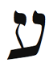
Kabala Oğlak burcuna İbranice harf Ayın’ı atadı. Ayın “göz” anlamına gelir ve Oğlak burcunun kuşkuculuğunu ve gözü ile görmediği hiçbir şeye inanmadığını anlatır. Öte yandan, harf derin bir spiritüel sır saklar. Yahudiliğin antik efsanesinde göz, tüm evreni simgeler: Gözün beyazı denizi, iris karayı ve gözbebeği Tanrının tapınağını. Hahamlar bize, kutsalların kutsalını, Tanrının o tapınakta kaldığı yeri görmek istiyorsak gözbebeğinde yansıyan imgeye bakmamızı söylerler. O imge- diğer bir deyişle, baktığınız şey- Tanrıyı simgelemekte. Bir aynaya gidin ve gözlerinize bakın. Gözbebeği denilen o Tanrı tapınağında kendinizin yansımasını göreceksiniz. Bu güzel benzetme, birbirimizde Tanrıyı gördüğümüz zaman ancak Tanrıyı görebildiğimizi söyler. Tanrı adına öldüren insanlar, Ayın’ın yüksek gerçeğini anlamak için çalışmalıdırlar. Belki o zaman düşmanı değil, Tanrıyı öldürdüklerinin farkına varırlar. Bu hafta insanların gözünün içine bakın. Onların gözbebeklerinde kendi yansımanızı görmeye çalışın.
Bilgeler gözün ruhun aynası olduğunu söylerler. Oğlak burcu ve Ayın, ruhunuza bir anlık bakabileceğiniz yaşam alanını belirler. Tanrının yaşamınızda nasıl yansıdığını gösterir.
Disiplin veya hırs geliştirmek, kariyerinizdeki sorunları çözmek veya profesyonel yaşamınızda yön saptamak için Ayın ile meditasyon yapın.

Disiplin veya hırs geliştirmek, kariyerinizdeki sorunları çözmek veya profesyonel yaşamınızda yön saptamak için Ayın ile meditasyon yapın.

Bedenin Bölümleri
Oğlak karma burcudur. Dolayısıyla, Oğlak burcunun beden bölümleri geçmiş yaşamlardan karmanızı ve mesajları tanımlamak için kullanılabilir. Oğlak burcu deriyi, kemikleri, dizleri ve dişleri, aynı zamanda kronik hastalıkları yönetir. Kronik, hastalığın ancak zaman, sabır, azim, disiplin ve kararlılık ile iyileşebileceği anlamına gelir.
Bedenimizin en büyük bölümü deri, iç organlarımızın yerinde durmasını sağlar. Yaratılış Kitabı 3:21’de Tanrının, Adem ile Havvayı yeryüzünde ölümlü yaşama gönderdikten hemen sonra, giymeleri için deri verdiğini yazar: “Tanrı Adem ve karısı için işlenmiş deriden giysiler yaptı ve onları giydirdi.” Gelenekçiler bu ayeti, Tanrının onlara ısınmaları için hayvan kürkü verdiği şeklinde yorumlar. Ama Kabala, Adem ile Havvanın yeryüzüne düşmeden önce Tanrı ile bir ve ruh olarak varolduklarını belirtir. Onların önceden, ölümlü bedenleri yoktu. Cezaları ölümlü olmaktı ve bunun için deri ile kaplı bedene ihtiyaçları vardı. (İbranicede işlenmiş deri ve insan derisi aynı sözcüktür.) Diğer bir deyişle Tanrı, Adem ile Havvaya Oğlak burcunun enerjisini verdi, onları biçimlendirdi ve yeryüzüne yolladı.
Deri geçmiş yaşamlarımız hakkında çok şey ortaya çıkarır. Doğum izleri, benler veya renk farklılıkları, geçmiş bir yaşamda yaşadığınız bir travmanın veya karmanın bedendeki yerini gösterir. Dövmeler de hem imge hem de yer olarak geçmiş bir yaşamın öyküsünü anlatır. Bu hafta deri bakımı yapın. Bir dermatologa kontrol için gidin. Derideki enerji noktaları yolu ile iyileştirme yapan akupunktur için de randevu alabilirsiniz.

Bu hafta deri bakımı yapın. Bir dermatologa kontrol için gidin. Derideki enerji noktaları yolu ile iyileştirme yapan akupunktur için de randevu alabilirsiniz.

Yapı ve korku burcu olan Oğlak, kemiklerinizi ve iskeletinizi de yönetir. Cadılar Günü, eğlenceli bir korku tepkisi yaratmak için iskeleti kullanır. Öldükten sonra yer yüzünde geride kalan tek şey iskeletimizdir. Arkeologlar milyonlarca yıl öncesinden kalma kemikleri kazıp çıkarmaktalar; bu da Oğlak burcunun dayanıklılık, azim ve zaman enerjisine uygundur. Arkeologlar buldukları dişlerle iskeletin yaşını saptıyorlar. Büyüdükçe çıkan akıl dişlerinin verdiği sıkıntı, yaşlılığın büyüyen acısını, zaman ve deneyim ile gelen bilgeliği simgeler.
Oğlak Burcunun Rengi: İndigo (Mavi-Mor)
Oğlak burcunun rengi, mavi ve morun karışımı indigo-dur. Daha sorumlu, güvenilir, ciddi veya disiplinli görünmek istediğinizde koyu mavi veya indigo giyinin. İş takımlarının genelde bu renk olduğuna şaşırmamak gerekir.
Oğlak Haftasında Neye Odaklanmalıyım?
Odaklanmaya odaklanın. Batıda biz yıla Oğlak burcu ile başlarız ve Yeni Yıl kararlarımızı oluşturmaya başlarız. Oğlak burcu sizden gizilliğinizi ortaya çıkarma sözünüzü, kariyerinizi ve toplumdaki konumunuzu vurgulamanızı ister. Disiplin ve azim sergileyin. Ortaya çıkan karma konularının farkına varın ve onları çözmeye başlayın. Bu zorlu durumlar genelde yaşamınızın belirli bir alanında yinelenen örüntüler olarak gözükür.
Eş-zamanlılıkları kollayın. Oğlak burcunun simgeleri: Keçiler, zaman, saatler, disiplin, Satürn, şeytan, kurtarıcılar veya güneş tanrıları, Cumartesi, kariyer, hırs, odaklanma, deri, kemikler, dişler, dizler, indigo, kötümserlik, kuşkuculuk, kararlılık, hedefler, iş planları, dağlar, mağaralar, petrol ve yeraltından çıkan tüm şeyler, korku, panik, engellenme ve bozulma hissi, politika, mizah, kış tatilleri, Yılbaşı gecesi ve ertesi gün, gelenekler, geç gelişenler, yapı ve düzen, sabır, itibar, hiyerarşi, daha yaşlı veya daha olgun insanlar, fırsatçılık.
Oğlak Haftası Kontrol Listesi
• Hafta boyunca bir şey için söz verin. Örneğin, tatlı yememe ye, içki içmemeye, dolaplarınızı düzeltmeye veya gün aşırı yoga derslerine gitmeye söz verin.
• Bu hafta gerçekleştirmek istediğiniz bir hedef seçin ve bunun için ayrıntılı bir plan yapın.
• Oğlak burcunun olumlamasını söyleyin: “Tüm hırslarımı gerçekleştirebilirim; başarı avucumun içindedir. Disiplin, azim ve dayanıklılık ile hayallerime erişebilirim.”
• Ayın harfi ile meditasyon yapın.
• Mavimor veya indigo giyinin.
• Zaman ile arkadaş olun.Yavaş yürüyün, yavaş yiyin ve yavaş konuşun. Acele etmeyin.
• Tüm gider ve gelirlerinizin listesini yapın.
• Gidilececek yere varış saatini saptama oyununu oynayın.
• Beliren korkulara gülmeye çalışın.
Oğlak Burcunun Ritüeli: Satürn Döngüsü
Bu alıştırma, şimdiki yaşamınıza sızan geçmiş yaşamların zorlu işlerini ve çeşitli konularını açığa çıkarmanıza yardım edecek. Karma ve anlayışın beyi olan Satürn, yirmi dokuz yıllık döngüler içinde çalışır. Eğer yirmi dokuz yaşından genç-seniz bu alıştırma dikkatinizi çekmeyecek ama bilgiyi geleceğe uygulayabilirsiniz. Veya bilgiyi, onu değerlendirebilecek birisi ile paylaşabilirsiniz. Her yirmi dokuz yılda bir Satürn bize aynı dersi öğretir ama ders tıpatıp aynı değildir. Bu sanki gençken okuduğunuz bir kitabı yeniden okumak gibidir. Kitap aynıdır ama onu her okuyuşunuzda değişik şeyler öğrenirsiniz.
Satürnün yirmi sekiz-otuz yıllık döngüsünün güzel bir örneği, New Jersey valisi McGreevy’nin yaşamıdır. McGre-evy, yirmi sekiz yıllık evlilikten sonra karısının yanında ve tüm ülkenin karşısında eşcinsel olduğunu ilan etti. Bir dizi olayı harekete geçiren Satürn onu, cinsel kimliğini açıklamaya zorladı.
Bugünkü yaşamınızdaki ana zorlukları tanımlayın. Engellenme ve bozulma hislerini bir paragrafta anlatın. Mümkün olduğu kadar çok öykü ve örnek ekleyin. Bu zorluklar en çok hangi yaşam alanınızda ortaya çıkıyor? Olaylara dahil olanlar kimler? Sonra yirmi dokuz yıl geriye gidin ve aynı engelleri yansıtan bir olay veya durum saptayın. Örnek olarak, on beş yıllık kocasını boşamayı düşünen bir kadın, yirmi dokuz yıl önce kendi anne babasının boşandığını ve böylelikle güvence duyusunun sarsıldığını keşfetti. Bu farkındalık içinde kocası ile aile danışmanlığına gitti ve sıkı bir çalışma sonucunda kocasına duyduğu güveni güçlendirdi. Her ikisi de sorunları üzerinde çalıştılar ve evliliklerini yürütmeyi başardılar.
Satürnün dersleri her zaman böyle çetin ve olumsuz değildir. Bazen bu dersler sizi daha yüksek bir başarı seviyesine iter ve gizilliğinizi ortaya çıkarmanız için sizi yüreklendirir.
Ünlü Oğlaklar
Martin Luther King Jr., Muhammed Ali, Joseph Smith, Nostradamus, Mao Ze-dong, Josef Stalin, Isaac Newton, J. R. R. Tolkien, Richard Nixon, Henry Miller, Rudyard Kipling, Anthony Perkins, Henri Matisse, Isaac Asimov, Mel Gibson, Sir Isaac Newton, Johannes Kepler, Stephen Hawking, Elvis Presley, David Bowie, Albert Schweitzer, Joan of Arc, Edgar Allen Poe, Federico Fellini, Jim Carrey, Moliere.
Kova: Şakacı
21 Ocak-18 Şubat
Anahtar İfade: “Biliyorum”- farkındalık
Genel Nitelikler: Zeki, yaratıcı zekâ sahibi, özgün, buluşçu, yenilikçi, isyankâr, reformcu, insancıl, arkadaş, fedakâr, sosyal
Karanlık Yön: Kişidışı, aşırı özgürlük isteği, nedensiz isyan, dağınık zihin, sorumsuz, duygusal uzaklık
Element: Sabit hava
Gezegen: Uranüs
Gün: Cumartesi
Tema: Arkadaşlık
Beden Bölümleri: Bilekler, kaval kemikleri ve dolaşım sistemi
Renk: Mor
Değerli Taş: Safir
Müzik Notu: La diyez
İbranice Harf: Tzadik 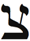
Harfin Kabalistik Anlamı: Doğrucu ve aziz, balık oltası kancası
Yaşam Ağacındaki İzlek: İzlek 17, Temel ve Sonsuzluğu birleştirir
Tarot Kart: Yıldız
Filmler: Yıldız Savaşları, Uzay Yolu, tüm bilim kurgu filmleri, Harika Çocuk, Hair, Asi Gençlik
Olumlama: “Yaşamımda yararlı arkadaşlar ve kuruluşlar var. Ben, farkındalık ve tüm insanlık için bir umut feneriyim.”
Genel Bakış
Oğlak burcu geleneği ve geçmişi kapsarken Kova gelecek ve reform burcudur. Simgesi bir insandır (su taşıyıcısı, saka). Dolayısıyla cemiyeti, eşitliği, demokrasiyi, grupları, şirketleri, kâr amaçsız kuruluşları, kulüpleri ve arkadaşları simgeler. Oprah Winfrey’in, Franklin Delano Roosevelt’in ve James
Dean’in burcu olan Kova, bireysel ve bazen tuhaf ama tüm insanlarla arkadaşça etkileşime odaklanmış bir enerji üretir. Kova aynı zamanda uzayı, uzay yaratıklarını, teknolojiyi, aletleri, telsizi, umudu ve özgürlüğü yönetir. Kova arketipine bağlanarak arkadaşlıklarınızı ve tüm topluma olan ilişkinizi geliştireceksiniz. Diğer insanlara yardım etmenin önemini benimseyeceksiniz.
Kova Burcunun Sahası
Bu Kova çağının doğuşudur.
-Gerome Ragni ve James Rado, Hair müzikalinden “Kova (Aquarius)”
Su taşıyıcısı Kovanın gelecekçi (fütüristik) sanal dünyasına indik. Binlerce yıl Kova burcunu simgeleyen şekil, iki yatay dalgalı çizgi idi. Birçok insan bu şekli yanlış anladı ve bunun, bir kovadan dökülen su olduğunu düşünüp Kovayı bir su burcu olarak algıladı. spiritüel astrologlar ve Kabalistler, bu dalgaların havada seyahat eden görünmez frekanslar olduğunu iddia etti. Binlerce yıl bu konu çözülmeden kaldı. Bu durum, tuhaf burcun başka bir tuhaflığı olarak kabul edildi. Sonra 1900’da Max Planck ışığın havada dalgalar halinde seyahat ettiğini buldu. Bu ışık dalgaları kuramına elektromanyetizm adını verdi. O andan itibaren, Kova burcu “elektromanye-tizm taşıyıcısı” olarak anılmalıydı. Bu önemli bilimsel atılım, Kova Çağının doğuşunun birçok işaretinden biridir ve Kovanın, havayı kateden bilgiyi yöneten burç olduğunu kanıtlar. Elektromanyetizm radyonun, TV’nin, uyduların, mikrodalga çanakların, telsiz teknolojinin ve daha birçok bilgi iletişim biçimlerinin doğmasına neden oldu. (Zaten bilimsel gelişmeler Kova burcu tarafından yönetilir.) Bu büyük buluş, bilgi çağını başlattı ve küresel köy denilen görüngüyü oluşturdu.
Oğlak burcu, daha önceki burçların getirdiği fazla enerji birikimini yapılanmayı vurgulayarak yönetirken Kova burcu aynı sersemletici yükü, yeni bir fikir olan demokrasiyi bularak halletti. Kova için tüm burçlar eşittir, hepsinin medeni hakları olması gerekir. Kova, ABD Anayasasının, ABD Bağımsızlık ilanının “tüm [insanlar] eşit yaratılmıştır” ifadesinin (ABD’nin ay burcu Kovadır) ve her burcun konuşma ve özgür enerji yayma haklarının kaynağı oldu. Kova, tüm burçların Birleşik Federasyonunu- Kova Birleşik Devletlerini- sunar. Oğlak, tüm burçları hizada tutmak için katı bir sıradüzen (hiyerarşi) oluşturmuştu. Devrim burcu olan Kova, bu sıradü-zene isyan etti ve yepyeni ve inanılmaz bir bakış açısı (paradigma) yarattı. Viva la revolution! (Yaşasın devrim!)
Haritanızdaki Kova, kutunun dışında düşünmeniz gereken yaşam alanını içerir. Bu alanda aynı zamanda, arkadaş fikirlerine ve önerilerine de yer vererek yarar sağlayabilirsiniz. Burada demokrasinin çalışmasına izin verin.
Güç Halkın
Kral Aslan monarşiyi tanımlarken tam karşısındaki Kova eşitlik ve demokrasi burcudur. Saltanatın “Çok yaşa kralım!” mantrasını, güçlendirici ve eşitlikçi mantra “Güç halkındır!” ile değiştiriyoruz. Kova tüm arketipler arasında en gelişmiş olanıdır. Ezekiel’in savaş arabasının dört yaratığı ile ilgili gördüğü hayalde, Kova diğer sabit burçların yanında- Boğa (boğa), Aslan (aslan) ve Akrep (kartal)- kanatlı bir melek olarak yer alır (Ezekiel 1:10). Bu sunum, Kovanın bizim yüksek nefsimizi veya Freud’un üstbenliğini simgelediğini anlatır ve Kovanın tüm insanlarla, insancıl çalışmalarla ve fedakârlıkla ilgilendiğini gösterir.
Siz hiç köpeklere gönlünü kaptırmış insanlarla tanıştınız mı? Köpeklerle yaşayan, köpek gösterilerine giden ve köpek haklarını koru- yan insanlar? Bu bireyler bir arzuyu diğerlerinin üstünde tutarlar: Bir köpek olmak. Bu insanlar tüylü arkadaşlarını ne kadar şımartır ve severlerse sevsinler asla bir köpek ailesinin üyesi olamayacaklardır. Kovalar da benzer bir kompleks taşırlar ama onlar köpekler yerine insanlarla uğraşmaktadırlar. Onlar bizi severler, peşimizi bırakmazlar ve bize yardım etmek için birçok kâr amaçsız işlere girerler. Bu özverili dürtüye sahiptirler çünkü- lütfen, bu gariplikler ve tuhaflıklar burcu hakkındaki bu garip kuramımı hoşgörün- onlar insan değillerdir. Onlar uzay yaratıklarıdır. Bir Kova ile yaşayanlarınız tersini düşünüyor olabilir ama ben onların başka bir gezegenden geldiklerini söylemiyorum. Onlar da sizin ve benim gibi birer dünyalı ama bir uzay yaratığı ruhu- birçok kez başka gezegenlerde yeniden dünyaya gelmiş bir ruhu- taşıyorlar. Kova burcuna atfedilen ve dünyadışı enerjileri betimleyen Tarot kardı, Yıldız, bu “uzay yaratığı” varsayımını desteklemekte.

Haritanızdaki Kova, kutunun dışın- da düşünmeniz gereken yaşam alanını içerir. Bu alanda aynı zamanda, arkadaş fikirlerine ve önerilerine de yer vererek yarar sağlayabilirsiniz. Burada demokrasinin çalışmasına izin verin.

Diğer bir deyişle, Kovalar genelde tuhaf ve kendine özgü insanlardır. Sanki, bizi incelemek ve, daha önemlisi, bizi daha üstün spiritüel seviyelere taşımak için ana gemiden dünyamıza gönderilmiş varlıklar gibi davranırlar. Bilimde (Thomas Edison), toplumsal sorumlulukta (Abraham Lincoln, Franklin D. Roosevelt ve Oprah Winfrey) ve sanatta (W. A. Mozart ve Virginia Wolf) bizi sürekli ileriye götürürler. Kova deha burcudur. Kovalar kavga etmeyi ve birbirimizi öldürmeyi durdurmamızı ve kardeşlik fikirlerini benimsememizi arzu eden devrimcilerdir.
Kova burcu, geleceğe atlayacağınız ve yalnız kendinizi değil çevrenizdeki insanları da güncelleştirip geliştireceğiniz yaşam alanını gösterir. Bu alanda gruplardan, arkadaşlardan ve birçok insandan müthiş yararlanacaksınız. Bu yaşam alanınızda siz de bir deha olabilirsiniz.
Şakacının Özgürlük Şarkısı
Meleklerin korktuğu yerlere aptallar koşarak girer,
Her ikisinin de geleceği korku dolu.
-Bob Dylan, “Jokerman” (Şakacı)
Kovalar harika bir mizah anlayışına sahiptirler ve yaşama değişik açıdan bakarlar. Oğlak, şeytan ve korku ile başetmek için mizahı buldu ama Kova, kral Aslan ile çarpışmak için soytarı arketipini kusursuzlaştırdı. En güçlü burç Aslanın karşısında yaşamak, karmaşık ve çetrefilli bir iştir. Kralın iradesini nasıl aşabilirsin? Kova bunu, şakacıyı ve aptalı oynayarak yapar. Aptal (fool) sözcüğü “hava torbası” anlamına gelen Latince sözcük Follis’ten gelir. Biz genelde “hava torbası” ifadesini saçmalık olarak anlarız. Bu düşünüş aslında bir küçümsemedir. Bu güçlü arketip, imparatora ve diğer herkese imparatorun çıplak olduğunu söyleyebilir ama kafası uçurulmaz. Her kral, saray soytarısını hoşgörür ve onu korur. Her Kral Lear’in bir aptalı vardır. Ve her Aslan bir Kova taşır ve besler. Aptal, dalga geçerek, sözcüklerle ve fikirlerle oynayarak hükümdarın zayıf taraflarını vurgular ve daha doğru ve iyi davranması için ona öğüt verir.

Kova burcu, geleceğe atlayacağınız ve yalnız kendinizi değil çevrenizdeki insanları da güncelleştirip geliştireceğiniz yaşam alanını gösterir. Burada gruplardan, arkadaşlardan ve birçok insandan müthiş yararlanacaksınız. Bu yaşam alanınızda siz de bir deha olabilirsiniz.

Aptalın dayanıklı gücünün kanıtı oyun kartlarında görülebilir. Destedeki en güçlü kart Maça Ası, Sinek Papazı veya Kupa Damı değil, Jokerdir. Jokerin etkililiği özgürlükte, diğer bir deyişle istediği kardı olmakta ve karşı suçlama olmaksızın eleştirme özgürlüğünde yatar. Aptalın konuşma özgürlüğü vardır; istediği her şeyi pervasızca söyleyebilir çünkü herkes onun deli olduğunu düşünmektedir. Kova özgürlüğünü yırtıcı bir şekilde korur ve bu doğrultuda, deliyi veya aptalı oynamakta bir sakınca görmez. Böylelikle alışılmışın dışında düşünebilir ve toplumu (kralı) ilerletir. Çılgın profesör, deli bilim adamı ve hatta Kral George’a karşı bağımsızlık ilanını sunan Thomas Jefferson gibi insanların başlattığı bilim ve teknoloji, yenilikçi ve Kova tarzı düşünce gerektirir.
Son zamanların popüler şarkılarından En Vogue’un “Fre-e Your Mind” şarkısının sözleri gibi, “zihninizi özgürleştirin, gerisi gelecek.” Kova burcunun yönettiği yaşam alanında çekinmeden komik yönünüzü gösterin. Dünya sizin aptalı oynamanızı bekliyor. Bu alanda gelişmek için engellemelerden, yasaklardan ve gelenekten kurtulmanız gerekiyor. Esinlenmek için bu hafta, bir stand-up komediye gidin veya bildiğiniz en komik filmi izleyin.
Özel Kova Burcunuz
Haritanızdaki Kova burcu, biricikliğinizi ve en tuhaf fikirlerinizi ifade etmeniz gereken yaşam alanını vurgular. Burada kendinizi yenilemeli ve geliştirmelisiniz. Geleceği şimdiye getirmeyi düşünün. Kova arketipi aynı zamanda, arkadaşları, kuruluşları ve şirketleri yönetir. Kova evinizde başarılı olmak için gruplara katılmalı veya arkadaşlarınızın katılımını sağlamalısınız.
Kova Birinci Evde (Yükselen Burcunuz): Sürekli yeni fikirler üreten ve yenilikler getiren değişik bir insansınız. Siz geleceğe aitsiniz ve bu yaşamdaki yolculuğunuz, hepimizi yenilemek ve geliştirmek ile ilgili. Büyük oranda özgürlüğe ihtiyacınız var. Kova haftasında bedeniniz, görünüşünüz ve yaşam izleğiniz ile ilgilenin. Sizin için yeni ufuklar açılıyor.
Kova İkinci Evde: Yenilikçi ve değişik proje ve fikirlerden para kazanabilirsiniz. Teknoloji ve bilgisayarlar konusunda yeteneğiniz var. İnterneti ve diğer uzay çağı araçlarını para kazanma planlarınıza dahil ederek başarılı olacaksınız. Paraya karşı özgün bir tutumunuz var; insanlarla birlikte olduğunuzda para kazanmanız kolaylaşıyor. Bu hafta finansınıza odaklanın ve yeteneklerinize yatırım yapın.

Kova burcunun yönettiği yaşam alanında çekinmeden komik yönünüzü gösterin. Bu alanda gelişmek için engellemelerden, yasaklardan ve gelenekten kurtulmanız gerekiyor. Esinlenmek için bu hafta, bir stand-up komediye gidin veya bildiğiniz en komik filmi izleyin.

Kova Üçüncü Evde: Yaratıcı bir zihniniz var ve parlak bir zekâya sahipsiniz. Bunu başkası ile paylaşınız. Kendinizi zamanın ötesinde ve bazen anlaşılmamış hissediyorsunuz. Kardeşleriniz ve komşularınız en iyi arkadaşlarınız. Bu hafta iletişimi, iş planlarını ve kardeşleri vurgulayın.
Kova Dördüncü Evde: Ailenizde çok değişik veya eksantrik (ayrıksı) birisi var. Ev yaşamınız dengesiz veya değişken olabilir. Evinizi bir kulübe veya herkesin toplandığı bir yere dönüştürmelisiniz. Eğer bir apartımanda yaşıyorsanız üst katlarda kalmaya çalışın. Bu hafta, ailenizdeki ilişkilerle ve evinizle ilgilenin.
Kova Beşinci Evde: Çocuklarınız biricik, komik ve kendine özgü insanlar. Onlar sizin en iyi arkadaşlarınız olabilir. Siz arkadaşlarınızla birlikte zaman geçirmeyi seven komik ve eğlendirici bir insansınız. Aşkta kahkahadan yararlanacaksınız. Kova haftasında, çocuklarınızı, eğlenceyi, yaratıcılığı ve mutluluğu vurgulayın.
Kova Altıncı Evde: işyeriniz ani değişikliklere maruz kalabilir. işyerinde daha çok gülmeye ihtiyacınız var. Bilgisayarla, teknoloji ve elektronik ile, büyük insan grupları ile çalışmaktan yararlanacaksınız. işyerindeki insanlarla arkadaşlık kurmanız mükemmel sonuçlar getirecek. Bileklerinize, kaval kemiklerinize ve kan akışına özellikle dikkat edin. Bu hafta beslenmenize, sağlığınıza, işe ve hizmete odaklanın.
Kova Yedinci Evde: Ortağınız/eşiniz en iyi arkadaşınız olmalı çünkü uyumlu bir ilişkiye giden yolunuz, coşkulu destek ve dostluktan geçiyor. Özgürlüğü seven ve sizin özgürlüğünüze de izin veren komik bir ortak/eş size hayat veriyor. Bu hafta eşiniz, ortaklarınız ve ilişkileriniz ile ilgilenin.
Kova Sekizinci Evde: Tutkunuz, cinselliğiniz ve samimi yakınlığınız için her şeyden önce bir arkadaş olacak bir ortağa/eşe ihtiyacınız var. Cinselliğiniz ile deneyim yapmalısınız. Arkadaşlarla ortaklaşa girdiğiniz sanatsal ve finansal işlerden yararlanacaksınız. Bu hafta cinselliğinizi, samimi yakınlığı ve ortağınızın/eşinizin bereketini vurgulayın.
Kova Dokuzuncu Evde: Birçok yabancı arkadaşınız var. Bilimde, bilgisayarda veya insanlığa yararı olacak herhangi bir konuda yüksek eğitim yapın. Yüksek idealleriniz var ve evlilikle gelen akrabalarınız iyi arkadaşlarınız olabilir. Bu hafta yabancı bir ülkeye seyahat edin veya yüksek eğitiminiz ve evlilikle gelen akrabalarınız ile ilgilenin.
Kova Onuncu Evde: Kariyeriniz ne kadar sıradışı ve fütü-ristik olursa o kadar başarılı olacaksınız. Büyük insan grupları veya arkadaşlarınız ile çalışmalısınız. Değişen geleceğe ayak uydurmak için kariyerinizi sürekli yeniliyor ve geliştiriyorsunuz. Kova haftasında itibarınıza, kaderinize ve kariyer hedeflerinize odaklanın.
Kova On birinci Evde: Sayısız arkadaşınız var ama en azından birkaçı ile yakınlık kurmak için çalışmalısınız. Birçok gruba, kulübe ve kuruluşa üyesiniz. Kâr amaçsız ve insancıl kurumlara eğiliminiz var. Bu hafta arkadaşlarınızı ve grup ilişkilerinizi vurgulayın.
Kova On ikinci Evde: Arkadaşlarınız veya toplumunuz geçmiş bir yaşamınızda sizi yarı yolda bırakmış; bu karma sizi temkinli ve insanlarla çekingen yapıyor. Arkadaşlarınız düşmanınız olabilir veya gruplarınız aleyhinize dönebilir. Özgürlüğünüz ve bireyselliğiniz konusunda aşırı hevesli olabilirsiniz. Bu yaşamda spiritüelliğinizi ve gizemciliğinizi yenilemeli ve geliştirmelisiniz. Kova haftasında ihtiyacınız olmayan şeylerden vazgeçin, her şeyden biraz uzaklaşın ve spiritüel ritüeller uygulayın.
Günümüzün Sakaları
Bir Kova ile yaşamaya başlamadan önce bir sakanın, yani bir su taşıyıcısının gerçek anlamını bilmiyordum. Kova arkadaşım ile iyi geçiniyorduk ama bir konuda sürekli anlaşmazlık çıkıyordu- su. Bir Koç (ateş burcu) olarak su ile akıl dışı bir şekilde savaşıyordum. Kurak Orta Doğuda yetişmiş olmama rağmen su tasarrufunu bir türlü öğrenememiştim. Kova ise suyu dikkatli kullanma konusunda takıntılı idi. Tuvaletin üzerine asmak istediği mantra “Eğer sarı ise bırak kalsın, eğer kahverengi ise sifonu çek gitsin” idi. Onun deli olduğunu düşünüyordum. Ama o bunun üzerinde düşünmem için ısrar etti. Ve sonunda su taşıyıcı Kovaların neden su hakkında tasalandıklarını anladım. Kovanın bir su burcu olmadığı doğrudur ama Kovalar her zaman su taşıyıcıları idiler ve hâlâ öyleler.
Anlatayım. Geçmişe, modern pompaların, boruların ve tuzdan arındırma tesislerinin olmadığı zamanlara gidecek olursak su taşıyıcılarının uzak nehirlerden kovalarca su taşıdıklarını görürüz. Sonunda bu taşıyıcılar yoruldular, bıktılar ve suyu taşımak için teknoloji geliştirdiler, yeni buluşlar yaptılar.
Gür tropikal bahçemi sevmeme rağmen ortağımı dinledim ve daha az su gerektiren sulu bitkiler yetiştirmeye başladım. Bu bitkileri ektikten bir hafta sonra başka bir Kovaya rastladım. Arabasını tamir ettirmeye gücü yetmemesine rağmen birkaç damla daha az su harcadığını duyduğu için yeni bir bulaşık makinesi almıştı. Bu Kovalar modern sakalar gibidirler ve biz onları, su tasarrufu konusunda dinlemeliyiz. Bu hafta daha az su harcamaya çalışın ve su faturanızda herhangi bir düşüş olup olmadığını not edin.
Kova Çağı
Kova geleceğin burcudur. Geleceği öngörme ve kestirme konusunda yaşadığımız zorluğu, Kova insanlarını sınıflandırma ve anlamada da yaşıyoruz. Kova en öngörülemez ve dalgalı arketiptir. Onların sınıfı, hiçbir sınıfa girmemeleridir. inanılmaz derecede yetenekli bir Kova olan ve stand-up komedyen olarak çalışan Igor Orlovsky bana tarihten nefret ettiğini söylemiş ve şöyle demişti:
“Savaşların ve olayların tarihlerini bir türlü anımsaya-mıyordum. Her şey o kadar sıkıcı idi ki! Her tarih dersinde uyuya kalırdım; öğretmen horlamamdan rahatsız olur ve beni uyandırırdı. Geçmiş ile bu kadar ilgilenenleri anlayamıyorum.”
Sorunu hemen anladım. Geleceğin insanı olan Kovalar, geçmişi bizi bağlayan bir zincir olarak görürler. Geçmiş onlar için gereksizdir, bitmiş ve gitmiştir. Bunun yerine önümüzdekine odaklanalım, geleceği nasıl daha iyi yapabiliriz, onu düşünelim derler. Kova eviniz de bu şekilde çalışır. Gelecek için büyük umut bağladığınız yaşam alanına işaret eder.
Kovalara biraz ters gelecek ama geleceği- Hair müzikalinde hipilerin neşeyle kutladıkları Kova Çağını- aydınlatmak için biraz geçmişten söz etmek istiyorum. Astroloji, tarihi iki bin yıllık çağlara böler. Her çağ bir burcun adını almıştır ama çağların gidişi, burçların takvim yılı içindeki gidişinin ters yönündedir. Örnek olarak, Koç Çağı M.Ö. 2000 yılında başladı. Balık Çağı 0 yılı ile M.S. 2000 yılı arasında idi vb. Biz şimdi, inanç ve din çağı olan Balık Çağı ile bilgi ve bilim çağı olan Kova Çağının kesiştiği noktadayız. Yaklaşık son dört yüz yıldır sürmekte olan bu geçiş, kargaşa dolu. Bunu çevrenizde görebilirsiniz. Dünyanın bazı bölgeleri daha Kova-laşmış- daha bilgisayar donanımlı, daha bilimsel ve modern-olmalarına rağmen diğer bölgeler, ölmekte olan dini bağnazlık ve dar görüşlülük çağına saplanmış durumdalar. ABD gibi en ileri, eşitlikçi ve fütüristik toplumlarda bile köktendincilik, evrim kuramı ve kök-hücre teknolojisi gibi bilimsel gelişmelerle savaşmakta. Samuel Huntington gibi bilginler yerküredeki savaşların medeniyetler çatışmasından doğduğunu söylese bile ben bu savaşların, Kova ile Balığı ayıran fay hattından-Balık temelli dini felsefeler ile Kovanın yönettiği bilim ve eşitliği kutsayan felsefeler arasındaki çatlaktan- kaynakladığını düşünüyorum. Binlerce yıldır astrologlar Kova Çağının, cinsimizin daha üstün bir spiritüel seviyeye evrimleşeceği bir çağ olan İnsanoğlu Çağının habercisi olduğunu öngörmektedirler. Kabala bu çağı Sebt Çağı olarak adlandırmıştır. Ve Maya kehanetleri, 2012’de yeni bir zamansızlık çağının başlayacağını ileri sürmektedir. Dünya Kovanın öngörülemez enerjilerini bağrına bastıkça savaşlar, bilimsel ve tıbbi devrimler gibi büyük değişimler müthiş bir hızla ortaya çıkmaktadır.
Kova burcunu yöneten Uranüs gezegeninin 1781’de keşfedilmesi ile Kova çağına daha derinlemesine daldık. Fransız devriminin özgürlük, eşitlik, kardeşlik (liberte, egalite, fra-ternite) kavramı, Amerikan Devrimi, Sanayi Devrimi, bilgi ve siber devrimler, bu yeni devrin radar ekranında gözüken birkaç sinyalden bazılarıdır. Simyada Kova simgesi maddelerin özümlenmesi demektir. Benzer bir özümleme sürecini, küreselleşmede, Avrupa Birliği ve Kuzey Amerika Serbest Ticaret Anlaşması (NAFTA) gibi serbest-ticaret bölgelerinde ve değişik ırklardan ve kültürlerden insanların kaynaşmasında- genelde şirket genişlemeleri (McDonald’s, American Idol, Nintendo) veya spiritüel ritüellerin Doğudan Batıya (Iowa’da yoga) ve Batıdan Doğuya (Korede İsa) taşınması olarak- görmekteyiz. Cep telefonları, bilgisayarlar, internet, uydular ve diğer birçok Kova buluşu, Yerkürenin her santiminde insanları birleştirmiştir. Uzak Doğuda Tokyo, Şangay ve Singapor-da batı tarzı gökdelenler yapılmış, finans kuruluşları, kumarhaneler ve Starbucks kafeler açılmış, Avrupa ve ABD’de Doğuda doğmuş olan yoga, Zen ve savaş sanatları yayılmıştır.
Bu filizlenmekte olan arketipin simgesi elektromanyetik dalgalar, Kovanın birlik, eşitlik ve kardeşlik mesajını telsiz teknoloji ile taşır. Bugün mobil telefonlar milyonlarca insanı, grubu ve ideolojiyi birleştirmekte. Tüm dünyada yaklaşık 2,8 milyar cep telefonu kullanılmakta ve bu sayıya her gün 1,6 milyon eklenmekte. 2011 yılına kadar yaklaşık 4 milyar insanın mobil telefonu olacak. Yakın geçmişe kadar teknoloji zengin, güçlü ve seçkin insanlara hizmet ediyordu. Ama demokrasi aşığı Kovalar, maliyetleri büyük miktarda düşürerek teknolojiyi demokratikleştirdiler. Birkaç yıl öncesine kadar müzisyenler, pahalı analog stüdyolarda kayıt yapmak için şirket desteği arayışı içindeydiler. Şimdi ise dünyanın her yerinden müzisyenler, bugünün göreceli ekonomik dijital cihazları ile kendi evlerinde müzik kaydı yapabiliyor ve sonra bunu pazarlayabiliyorlar. Amatör video ve film yapımcıları sanat ürünlerini You Tube gibi bedava internet siteleri üzerinden dinleyicilerle paylaşıyorlar. Ve borsacılar, Maui plajında dizüstü bilgisayarlarından Londra veya Hong Kong’da servet alıp satabiliyorlar.
Tüm bu fütüristik teknolojiyi yöneten Kova burcu, aynı zamanda makineler arasında da kardeşlik yaratmıştır. Bir iPod, örneğin, koşma ayakkabılarınıza iliştirilebilir ve koşmanız ile uyumlu olarak müziğin temposunu ayarlayabilir. Siber korsanlar, dijital mafya ve bilgisayar virüslerinden oluşan elektromanyetik suçun, bu Kova eğilimlerini izleyeceğini öngörmek için kâhin olmak gerekmez. Ve bir sonraki büyük terörist saldırı bir olasılıkla telsiz göklerden belirecek ve onun içinde ortaya çıkacak.
National Public Radio (Milli Halk Radyosu) son olarak, Gazze’deki evinden çıkmak zorunda kalan bir İsrailli kadınla yapılan bir röportaj yayımladı (Bakın, Satürnün dönüşü hakkında Oğlak tartışması). Bir zamanlar Avrupa pazarlarına satmak için Noel ağaçları yetiştirdiği arazisinin elinden alındığını ve para durumunun çok kötü olduğunu söylüyordu. Bir Yahudinin Müslümanlara ait bir arazide Hıristiyanlara satmak için ağaç yetiştirmesi ne kadar komik ve Kova-vari! İki Amerikalı kovboy arasındaki yasak aşk ilişkisini anlatan Oskar ödüllü Brokeback Dağı filmi, Kanada’da çevrildi, bir Asyalı olan Ang Lee tarafından yönetildi, Annie Proulx adında bir kadın tarafından senaryosu yazıldı ve iki eşcincel kovboyu heteroseksüel aktörler oynadı. Bu ülke, cinsiyet ve konu karışımı, Kovanın yıllardır öne çıkardığı özümleme enerjisini yansıtmakta. Dünyaya ahengi ve barışı, bu karşılıklı işbirliği ve saygı getirecek, M-16 makineli tüfekler ve Bradley savaş araçları değil. Yerkürenin her yerinden fikirlerin, kaynakların ve insanların birleşmesi Kova Çağını yaratacak.
Haritanızdaki Kova burcu, Balık Çağından Kova Çağına sancılı geçişi kolaylaştıracağınız yeri göstermektedir. “İnandığınızı” “bildiğiniz” ile değiştirmelisiniz. İnancınızı akıl, bulgular ve bilgi ile destekleyin. Ve bunu hepimiz ile paylaşın.
Kova İle Geçinmek
- Doğal ve kendiliğinden davranın. Önceden çok şey planlamayın. Eş-zamanlılıklara izin verin ve onları değerlendirin.
- Kovalara özgürlük tanıyın. Onların çok insana ve tanıdığa ihtiyaçları vardır. Onlarla çıkmayı kabul edin; onları grup toplantılarına ve kulüplere davet edin.
- Kutunun dışında düşünün ve sıradışı fikirlere, yeni bakış açılarına açık olun.
- Her şeyden önce, onların arkadaşı olun. Kovanın eşiniz, çocuğunuz veya öğrenciniz olması önemli değildir. Onlar için arkadaşlık çok önde gelir.
- Anın eğilimlerini ve hareketliliğini izleyin. Kovalar nelerin popüler ve revaçta olduğunun farkında olan insanlarla takılmayı severler.
- Kovaları mümkün olduğu kadar çok insanla tanıştırın. Ve onların arkadaşları ile geçinmeye çalışın.
- Kovaların gruplarına veya kulüplerine üye olun, katılın.
- Kovaları tetikte tutun. Onlar için ara sıra delice şeyler yapın. Onları şaşırtın.
- Kovaların şakalarına gülün ve onları güldürmeye çalışın. Onların kalbine giden yol gülmektir.
- Asla onları bencillikle suçlamayın. Kovalar herkese bir şeyler vermeye çalışırlar ve siz onların fedakârlığını sorgulamaya kalkarsanız bozulabilirler.
Gücün Karanlık Yönü: Kova
Başka burçlar genelde Kovaların kişidışı doğasından ve hislerinden kopuk olmalarından yakınırlar. Kovalar genelde hislerini ifade etmekte zorlanırlar. Güçlü bir grup mentali-tesine sahiptirler. Becerikli bir evsahibi gibi herkesin kendini iyi hissetmesini ve iyi vakit geçirmesini isterler. Bir insandan diğerine koşarak durumu kontrol ederler. Bir tek kişiye derin veya yakın bir şekilde odaklanmazlar. Bu görünür yüzeysellik, yoğun bire bir deneyimden yoksun kalan Kovada ve aynı zamanda, kendini ihmal edilmiş hisseden bir Kova yakınında hayal kırıklığına neden olur.
Kovalar genelde yaşamın çeşitli seviyelerinden birçok insan tanırlar. Ve bir tek kişiye ve onun hislerine yatırım yapmaktan sakınırlar. Bu da başkalarının onları tuhaf, sıradışı ve hatta soğuk olarak algılamalarına neden olur. Aslında onların elinden bir şey gelmez. Eşitlikçi Kovaya göre herkes eşittir. Birisinin öbürüne üstünlüğü yoktur. Grubun refahı, yakının refahından daha önemlidir. Ve bu da yakını sinirlendirir.
Bu görüngü, son elli yıldır büyük bir yükselişte olan ve Kova burcu tarafından yönetilen şirketlerin arkasındaki güçtür. Yüksek telefon faturasından dolayı telefon kurumunu aradığınızda, örneğin, hattın öbür ucunda gerçekten yakınacağınız birisini bulamazsınız. Bir kere karşınızda bir insan bile yoktur. Sizi ve sorununuzu defedecek şekilde tasarlanmış bir mesaj kayıt sisteminden geçerek bir insan sesine ulaştığınızda aniden, çok büyük bir makinenin bir vidasına konuştuğunuzu farkedersi-niz. O insan belki de asgari ücretle çalışan, geçinmekte zorlanan, sizin öfke ve karın ağrınızla uğraşmadan da kendi öz yaşamında yeteri sıkıntıya sahip bir insandır. Hatta belki de sizinle Hindistandan konuşuyordur. Şirketler şirkete hizmet etmek için kurulmuştur, bireye değil. Onlar bir yüze sahip değildir. Nike ayakkabılarının bir üçüncü dünya ülkesinde köleye yakın insanlar tarafından üretilmesi emrini veren şirket çalışanının adını söyleyebilir misiniz? Onun bir adı var mı? Parmağımızı şirkete, yönetim kuruluna, ortaklara veya Nike ürünü almış olan size doğru uzatabiliriz. Kişidışı Kova, yanlış giden her şey için kralın suçlandığı Aslan ülkesinden çok değişiktir.

Haritanızdaki Kova burcu, Balık Çağından Kova Çağına sancılı geçişi kolaylaştıracağınız yeri göstermektedir. “İnandığınızı” “bildiğiniz” ile değiştirmelisiniz. İnancınızı akıl, bulgular ve bilgi ile destekleyin. Ve bunu hepimiz ile paylaşın.

İsyana düşkün Kovalar bazen nedensiz başkaldıran isyankâr gibi davranırlar. Bir zorbayı başka bir zorbayla değiştirdiklerinin farkına varmadan devrimlerini zorla kabul ettirmeye çalışırlar. Fransız devriminde kralın kafasını uçuran asiler, daha sonra birbirlerinin aleyhine döndüler ve kısa süreli bir terör devrinde, önlerine gelenin kafalarını uçurdular. Birkaç yıl sonra Napoleon adında başka bir zorba Aslan, boşluğa adımını attı ve yepyeni bir kargaşa dönemi başlattı.
Kova, elektrik şoklu devrimler yerine reforma veya yavaş e-vrimlere saygı duymayı öğrenmeli. Bu ya-hep-ya-hiç eğilimi genelde, su taşıyıcısının susuz kalmasına neden oluyor. 1990’ların başlarında Negev Çölünde müthiş bir aleme katılmıştım. Katılanların çoğu ecstasy, LSD ve başka uyuşturucular alıyorlardı ve herkes kendi yolculuğuna çıkmış, dansedi-yor, dönüyordu. Bu iyi niyetli bireysellik arasında Kova burcundan bir arkadaşımı gördüm. Uçuşunu kendi Kova tarzında yaparak, elinde bir su şişesi, bir dansçıdan diğerine koşuyor ve herkesi su içmesi için dürtüyordu. Aldığı uyuşturucunun enerjisi ile saatlerce su dağıttı. İsteyen istemeyen her insana, tanıdığı tanımadığı her kişiye su verdi. Ama kendisini unuttu. Bu, tüm Kovaların ve iyilik peşinde koşanların sorunudur. Başkalarının iyiliği ile o kadar meşgullerdir ki kendilerini yenilemeyi unuturlar. Bu nefis ihmali sağlık sorunlarına neden olduğu gibi su taşıma hizmetinin de sonunu getirir.
Haritanızdaki Kova burcu, çok verirken almayı unuttuğunuz yeri gösterir. Durmayı, nefes almayı ve deponuzu doldurmayı ihmal etmeyin.
İbranice Harf Tzadik (Sadi)
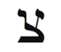
Kabala Kova burcuna, Dli veya “kova” olarak da bilinen, İbranice harf Tzadik’i atadı. Antik İbranicede Tzadik, balıkçının balık tutarken kullandığı “kanca” anlamına gelir. Bu işaret, nehir kenarında sakin ve hareketsiz bir şekilde oturan balıkçının bilinçaltında içgörü ve aydınlanma için avlanışını belirtir. Tzadik’in meditasyon pozu Kovanın, geçen yüzyılda başlayan ve yogayı, organik yaşam biçimlerini, deneyüstü ritüelleri ve ezoterik spiritüelliği yaygınlaştıran bir spiritüel akım olan Yeni Çağ ile olan ilişkisini anlatır. Modern İbranicede Tzadik, “doğrucu insan veya aziz” anlamına gelir ve Kovanın verici ve fedakâr özünü yansıtır.
Arkadaş edinmek, insancıl çalışmalarınızı güçlendirmek, geleceğe göz atmak veya beklenmedik yerlerden yardım ve umut almak için Tzadik ile meditasyon yapın.
Bedenin Bölümleri
Kova burcu, bileği, kaval kemiklerini ve dolaşım sistemini yönetir. Eğer haritanızdaki Kova enerjisi fazla ise gün içinde uzun süre ayakta kalmamaya dikkat edin.
Kova her şeyden önce arkadaşları yönettiği için size rahatsızlık veren her şeyi, onların iyileştirmelerine izin verin. Bu hafta bedeninizi unutun ve arkadaşlarınızla gülerek vakit geçirin.

Haritanızdaki Kova burcu, çok verirken almayı unuttuğunuz yeri gösterir. Durmayı, nefes almayı ve deponuzu doldurmayı ihmal etmeyin.

Kova Burcunun Rengi: Mor
Kova burcunun rengi mordur. Mor, çıplak gözle görebileceğimiz en yüksek ışık frekansıdır. Dolayısıyla bir hava burcu olan Kova, enerji tayfının en yüksek noktasına erişmeye çalışır. Arkadaşlarının, insanlığın, kuruluşların, şirketlerin, teknolojinin, geleceğin ve kendi biricikliğinizin enerjilerini artırmak için mor giyinin veya mor kullanın.

Arkadaş edinmek, insancıl çalışmalarınızı güçlendirmek, geleceğe göz atmak veya beklenmedik yerlerden yardım ve umut almak için Tzadik ile meditasyon yapın.

Kova morunun üstünde, DNA’yı bozarak dokuyu hasara uğratan morötesi (UV) ışınlar vardır. Bu radyasyon hücre ölümüne, mutasyona, deri kanserine ve başka hastalıklara neden olabilir. Kova Çağı Sanayi Devrimini, çevre kirlenmesini ve dünya kaynaklarının hor kullanımını tetiklediği için UV radyasyonu son onyıllarda çok arttı. Bu da milyonlarca yıldır bizi morötesi ışınlardan koruyan ozon tabakasının delinmesine yol açtı. Görülen o ki Kova burcu, teknoloji ile gelen çevre kirlenmesi sonucunda gezegenimizin daha mor, daha Kova olmasına neden oldu. Morötesi ışınların mutasyonlara ve dolayısıyla kansere neden olduğu kanıtlanmıştır. Ama bu mutasyonların bir kısmının ilerde neye dönüşeceğini kim bilebilir? Belki de Kova insan genomunu, geleceğin kirli havası ve suyu ile daha iyi başetmesi için değiştirmekte. Kovayı kim bilebilir? Geleceği kim bilebilir?
Kova Haftasında Neye Odaklanmalıyım?
Arkadaşlarınıza, insancıllığa ve kuruluşlara odaklanın. Bir jimnastik salonuna, bir kulübe veya bir spiritüel gruba katılın, sonra arkadaşlık kurun ve bu arkadaşlıkları besleyin. İkinci ve üçüncü arkadaş çevrenizdeki insanlara yakınlaşmak için çaba gösterin.
Sevgililer Günü Kova ayı içindedir. Sevgililer Günü olmasa bile bu hafta arkadaşlarınıza kart gönderin. Uzun süredir düşündüğünüz o insancıl işi yapın. Kâr amaçsız bir kuruluşa yardım edin. Ve bilgisayarınızı yedeklemek, programlarınızı güncelleştirmek ve yükseltmek, yeni bir cihaz almak veya kendi web sitenizi oluşturmak için bu hafta uygun olabilir.
Kova eş-zamanlılıkları sever. Bu hafta bunları özenle kullanın. Bu burcun simgeleri: Arkadaşlar, şirketler, gruplar, kulüpler, saka, uzay yaratıkları, uzay, teknoloji, gelecek, insancıl hizmetler, azizler, mor ve morötesi, meditasyon, Yeni Çağ, devrimler, aptallar, deha, delilik, tuhaflık, kişidışılık, kaval kemikleri, bilekler, demokrasi, özgürlük, buluşlar, asiler, kahkaha, Uranüs, Yıldız Savaşları, Uzay Yolu ve elektro-manyetizm.
Kova Haftası Kontrol Listesi
• Kutunun dışında düşünün. Kendinize veya başkalarına zarar vermedikçe biraz çılgın ve deli olmaktan korkmayın.
• Kova olumlamasını okuyun: “Yaşamımda yararlı arkadaşlar ve kuruluşlar var. Ben, farkındalık ve tüm insanlık için bir umut feneriyim.”
• Tzadik harfi ile meditasyon yapın.
• Mor veya eflatun giyin.
• Bir standup komedi gösterisine gidin.
• Arkadaşlarınızla zaman geçirin. Evinize bir grup çağırın veya dört kişiden fazla katılımlı bir etkinlik başlatın.
• Suyu dikkatli kullanın.
• Bir gruba katılın ve insancıl bir konuda çalışın.
• Bulutsuz bir gecede sırtüstü yatın ve en az yirmi dakika yıldızları izleyin. Yıldızları çizgilerle birleştirerek gökyüzündeki imgeleri tanımlamaya çalışın.
Kova Ritüeli: Bana Arkadaşlarını Göster, Sana Kim Olduğunu Göstereyim
En yakın beş arkadaşınızın veya yakınınızın (aile üyesi olmayacak) listesini yapın. Her birinin yanına, o kişinin sevdiğiniz yönlerini ve sonra o kişi ile olan ilişkinizdeki sorunları, kişinin zorlayıcı niteliklerini birer paragraf olarak yazın. Dürüst olun ve yargılarınızı desteklemek için örnekler verin. Şimdi, beş olumlu paragrafı birleştirin. En yakın arkadaşlarınızın en güzel niteliklerine sahip hayali bir arkadaşı tanımladığınızı düşünün. Sonra aynı şeyi olumsuz paragraflarla da yapın.
İşin ilginç yanı şöyle: Siz şu anda kendinizi anlattınız. Arkadaşlarınızın olumlu özellikler listesi aslında, size ait. Bu arkadaşlarla ilgilenmenizin nedeni, onların sizin kişiliğinizdeki güzel yönleri yansıtmaları. Olumsuz liste ise arkadaşlarınızın size öğretmek istedikleri. Bu zorluklar sizin zorluklarınız. Bu olumsuz yönleri arkadaşlarınızda izlediğinize göre şimdi onları gözetlemeye ve aşmaya başlayabilirsiniz.
Hepimiz zamanla değişiyoruz. Arkadaşlarımız da zamanla değişiyor. Ve genelde arkadaşlarımız bizi yansıtmayı bıraktıkça onlardan uzaklaşıyoruz. Belki de siz büyük ölçüde geliştiniz ve arkadaşınız artık size bir şey öğretemiyor. Veya belki de onlar değiştiler ve sizi gereği kadar yansıtmıyorlar. Yaşam boyu arkadaşlarınız, sizinle büyüyen, gelişen ve sizi yansıtmayı sürdüren insanlardır.
Ünlü Kovalar
Oprah Winfrey, Paul Newman, Franklin Delano Roosevelt, John Belushi, Lord Byron, Wolfgang Amadeus Mozart, Thomas Edison, Abraham Lincoln, David Lynch, Charles Dickens, James Dean, Virginia Woolf.
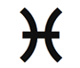
Balık: Gizemci
19 Şubat-20 Mart
Anahtar İfade: “İnanıyorum”- inanç atılımı
Genel Nitelikler: Gizemsel, şiirsel, duyarlı, şefkatli, çok yönlü yetenek sahibi, psişik (medyum), duygusal, gözlemci, sezgisel, kibar, hayal gücü kuvvetli, yaratıcı
Karanlık Yön: Kafası karışık, alışkanlığa/düşkünlüğe eğilimli, sıklıkla aşağılık kompleksi yaşayan, bağımlı ve karşılıklı bağımlı, gerçeklerden kaçan, kendine acıyan, sınır çizemeyen, uyuşuk, tembel, uysal, gerçekçi olmayan
Element: Değişken su
Gezegen: Okyanusların yöneticisi Neptün
Gün: Perşembe
Tema: Gizemcilik
Beden Bölümleri: Ayaklar, bağışıklık sistemi, lemf sistemi
Renk: Kırmızı-mor
Değerli Taş: Ametist
Müzik Notu: Si, müzik skalasında en son nota
İbranice Harf: Kuf 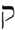
Harfin Kabalistik Anlamı: Kafanın arkası
Yaşam Ağacındaki İzlek: İzlek 18, Zafer ve Krallığı birleştirir
Tarot Kart: Ay
Filmler: Küçük Deniz Kızı, Harry Potter, Altın Pusula, Kayıp Balık, Karanlıkta Dans, Bollywood filmleri ve tüm hayal gücü filmleri
Olumlama: “Evrenin akışı ile uyum içindeyim; tüm ihtiyaçlarımı çabasız elde ediyorum.”
Genel Bakış
Balık burcu insan evriminin son aşamasını simgeler: Aydınlanma ve ötedeki dünya ile kaynaşma. Albert Einstein’ın ve Dr. Seuss’un burcu olan Balık, gizemciliğin, şiirin, kutsal dansın, ilahi söylemenin, şamanizmin, düşlerin ve psişik yeteneklerin burcudur. En duyarlı ve nazik arketip olan Balık bize, maddi dünyanın yanılsamasını aşmayı ve ilahi güçle birleşmeyi öğretir. Balık aynı zamanda hayal gücü burcudur. İhtiyaçlarımızı burada ve şimdi gerçekleştirmek için görselleştirme gücünü nasıl kullanacağımızı gösterir. Balık haftasında, hayallerinizin hayata geçmesini çabuklaştıracak yaratıcı görselleştirmeler yaparak içinizdeki gizemci ile ilişki kuracaksınız.
Balık Burcunun Sahası
Sonunda, Balık burcunun gizemsel sahasına giriyoruz. Balık zodyakın en son burcudur ama onun astrolojik yıldaki konumuna bakarak vardığımız mantıklı sonuçların hiçbiri, bu arketipin öz niteliklerine uymaz. Balık burcu en doğrusal olmayan arketiptir.
Bu burç ile ilişkilendirilen Ay, Balığın sürekli akan enerjilerini vurgular- Yeni Ay, Dolunay, yeniden Yeni Ay, vb. Bu durumda başlangıç ve son diye bir kavram yok olur. Haritanıza bakın. Hangi şekli görüyorsunuz? Astrolojinin ana simgesi çemberdir- başı ve sonu olmayan bir daire. Kuyruğunu ısıran yılan- spiritüel yaşamın sonsuzluğunu betimleyen spiritüel simge- gibi Balık burcu, başa, ortaya ve sona işaret eder. Balık, bizi kışın donundan ilkbaharda buzların erimesine taşıyan değişken su burcudur. Onu sulu akışı, donmuş nehirlerin buzlarının çatlamasına neden olur ve böylece ikbaharın yakınlaştığı müjdesini verir.
Balık burcunun simgesi, arketipin sıvı niteliğini vurgular. Simgede iki balık vardır, biri yukarıya doğru Tanrı ile birleşmek için zıplar, diğeri nefsi yok etmeyi anlatmak için denize dalar. Öykünün trajik kısmı (Balık burcu trajediyi yönetir) bu ikilinin gümüş bir kordon ile bağlı olmasıdır. Balığın- ve Balık burcunun- misyonu mutlu bir denge talep eder. Eğer biz bu dengeyi yakalayamazsak iki balık sonsuza dek birbirini çekiştirmeyi ve sinirlendirmeyi sürdürecek. Bazen yunus olarak betimlenen bu balıklar, burcun ikili doğasına gönderme yapar. Balık ilk ve son olduğu kadar, moral yükselten ve batıran arketiptir. Diğer bir deyişle, Balık olmak kolay değildir.
Kargaşa
Yükselen burcumun Balık olduğunu keşfettiğim zaman çok bozulmuştum. Benim yükselenim, sancak gemim bu tembel, düşkün, kaçan, kuruntulu, kendine acıyan, yerinden kımıldamayan burç muydu? İlk bakışta Balık burcu zodyakın çöp kutusunu andırır. Diğer burçların istemedikleri Balık burcuna bırakılmıştır. Bu ben olamazdım. Yaşamımı diğer burçların kirli çamaşırlarını yıkayarak geçirmek istemiyordum.
Hemen Meksika’dan annemi aradım. İsrailde saat kaçmış, aldırmıyordum.
“Benim sabah doğduğuma emin misin?” diye yalvardım. “Lütfen anımsamaya çalış.”
Annem uykulu bir şekilde mırıldandı: “Tabii anımsıyorum. Herkes senin sabah tam dörtte fırlamanı çok tuhaf bulmuştu. Bak şimdi de beni hep aynı saatte uyandırıyorsun.”
Annem haklıydı; İsrailde sabahın dördüydü. Ve ben mahvolmuştum. Rahimde on dakika daha geçirmiş olsaydım Koç yükselen olacaktım; bu da benim gibi acemi bir astrolog için çok daha etkin, kararlı ve şanslı olmak demekti. Ama şimdi, burçları ve onların etkileşimini öğrendikçe dünyaya Balık yükselen olarak gelmeyi akıl ettiğim için şükrediyorum. Hem Koç yükselen hem de Koç güneş olsaydım kimbilir şimdi ne olurdum? Paralı asker? Boksör? Kesinlikle Kabalaya, gizemciliğe veya astrolojiye girmemiş olacaktım ve iyi mi kötü mü bilemem ama bu kitap da yazılmamış olacaktı.
Peki, Balık burcu neden bu denli istenmeyen ve karmaşık bir burç? Birincisi, Balık burcu önceki arketiplerin enerjik karışımıdır. Balık burcu aslında, biraz Koç, bir miktar Boğa ve birer nebze Yengeç, Aslan, Başak, Terazi, Akrep, Yay, Oğlak, Kova ve tabii ki Balık içerir. Balıktaki Koç, savaş açar ama içteki Terazi diplomasi talep eder. Aslan kral olmayı arzularken Kova demokrasi savaşımı verir. Bir Balık olmak kafa karıştırıcıdır. Balık niteliği olan atalet ve uyuklama, enerji eksikliğinden değil, olasılıkların çokluğundandır. Balık çok sayıda yetenek sahibidir. Aslında tüm yetenekler onlardadır. Ama arketiplerin her biri, Balıkta çarpışma içindedir ve onu her yöne iter ve çeker.
Seçim zenginliği Balıkların takılı kalmasına neden olur. Ve bazen bu enerji selinden kaçmak için içerler, uyuşturucu alırlar (alışkanlıklar Balık burcu tarafından yönetilir) ve en yaygın tepki olarak olarak, uyuyuverirler. Avustralya yerlileri aborijinlerin düş zamanı dedikleri uyuklama halinde Balıklar bir projeden diğerine uçarlar, hepsinin üstesinden gelirler, tüm arzularını gerçekleştirirler. Nasıl ki Akrepler sokarak incitmekten kendilerini alamazlar, Balıklar da düş görmekten vazgeçemezler. Bu durum, DNA’larına kadar girmiştir. Diğer burçlar bu denli zihin karıştırıcı ağır yük altında olmadıkları için bu- alarma rağmen uyanamamak veya hayal kurmak gibi- davranışları hemen gözlemlerler ve Balığı tembel ve kuruntulu olmak veya gerçekçi olmamakla suçlarlar. Balığı küçümserler, bu yüzden de birçok Balık aşağılık kompleksine kapılır. Ama bunların hiçbiri adil değildir. Balıkların sadece, onları yapılandıracak ve sınırsız ama etkisizleştirici gizillikle-rine düzen getirecek bir yaşam kılavuzuna ihtiyaçları vardır.
Bazı astrologlar Balığı tembellikle suçlarlar ama onlar her gün diğer burçlardan daha fazla çalışırlar. Düş yaşamlarında o kadar etkindirler ki uyandıklarında uzun gecenin yorgunluğunu kısa bir uyku ile atmaları gerektiğine inanırlar. Yüzyıllar boyunca hahamlar düşleri kehanet için kullanmışlardır. Bu tarz kehaneti, düş arayışı olarak adlandırmışlardır. Bir Balık olmayı denerken düşlerinizden başlayın.
Uykuya dalarken nefesinize odaklanın. Uzun derin nefesler alın ve havanın, Balık burcu tarafından yönetilen ayaklarınıza kadar gittiğini hayal edin. Bu nefes alma egzersizini rahatlayın-caya kadar sürdürün. Sonra yaşamınızdaki bir sorunu düşünmeye başlayın ve uykuya dalın. Uyanır uyanmaz düşlerinizden anımsadığınız her şeyi yazın. Eğer düşünüzü anımsamıyorsanız hislerinizi, düşüncelerinizi, duyumlarınızı, algılarınızı veya eş-za-manlılıkları kaydedin. Düşünüzden arta kalanlar genelde ikileminiz için içgörü kazandıracaktır. Bazı imgelere veya yanıtlara erişinceye kadar bu egzersizi her gece uygulayın.
Balık burcunun gerçek simgesinin balık değil, yeryüzünün en akıllı yaratığı olan yunus olduğunu kabul etmeliyiz. Eins-tein bir Balıktı; demek ki bu arketipin zayıf yönlerinin zekâ eksikliği ile ilgisi yok. Balıkların görevi açıkça çoğumuzunkin-den değişiktir. Onlar hepimiz için daha iyi bir geleceği düşlemek ve hayal etmekle görevlendirilmişlerdir. Onların misyonu, John Lennon’un “yaşamı barış içinde sürdüren tüm insanları hayal et” diye geçen Imagine şarkı parçasını uygulamaktır. Onların gündemi burada ve şimdi değil, yıldızlar (astral) seviyesindedir. Bizim görevimiz, büyüklük taslamak yerine onlara yardım etmektir.
Dünya üzerindeki birçok gizemsel ve dini gelenek (din ve gizemcilik Balık burcu tarafından yönetilir) Balığın, günün sınırlarının ötesini görme ve onu yaşama ihtiyacı ile aynı fikirdedir. Çoğu öğreti, bir maya veya yanılsama matrisi içinde yaşadığımızı ileri sürer. Bu durumda, eğer bizim gerçek dediğimiz aslında bir yanılsama ise Balıkların yanılsama içinde yaşadıklarını nasıl iddia edebiliriz? Mantıksal yaklaşırsak, eğer gerçek olmayan gerçekliğin doğasını tam olarak anlayan tek kabile Balıklar ise, onlara kuruntulu etiketini yapıştırarak müthiş bir iltifatta bulunmuş olmuyor muyuz? Biraz karışık mı oldu? İyi işte, şimdi bir Balık olmak ne demektir, anlayabilirsiniz.
Balık bize önemli bir akış dersi öğretir- gevşemek ve yaşam ile akmak. Şu eski çocuk şiirini bilirsiniz: “Sandalı nehirde aheste ve neşeyle, neşeyle, neşeyle sür, yaşam sadece bir düş.” Bu Balık burcunun ilahisidir. Balıklar kendilerini akıntıya bırakırlar ve bu çabasız akış onlara, düş görme/hayal etme özgürlüğünü verir.
Siz Kimsiniz? Balığın Kimlik Arayışı
Lewis Carroll’un Alice Harikalar Diyarında kitabı, Balık burcuna çok şey borçludur. Alice’in Balık eğilimleri vardır. Neyle kaplı olduğu bilinmeyen acayip bir şey yer (büyülü mantar). Bir ağacın (Yaşam Ağacı) altında uyuyakalır ve gerçekte kendi bilinçaltına bir benzetme olan Harikalar Diyarına gider (düş/ilaç etkisi). Harikalar Diyarında nargile içen bir tırtıla (Balık burcunun karşıt burcu Başağın küçük ve tüysüz tırtılının bir cinsi) rastlar. Tırtılın ilk sorduğu şey şudur: “Sen kimsin?” İlk tip (prototip) Balık kargaşası içinde Alice, bilmiyorum der. Kim olduğunu bir ara bildiğini ama o zamandan beri çok değişiklik geçirdiğini ekler. Tırtıl daha iyi bir yanıt talep eder ama Alice’in yapabileceği bir şey yoktur.

Bir Balık olmayı denerken düşlerinizden başlayın.Uykuya dalarken nefesinize odaklanın. Uzun derin nefesler alın ve havanın, Balık burcu tarafından yönetilen ayaklarınıza kadar gittiğini hayal edin. Bu nefes alma egzersizini rahatlayıncaya kadar sürdürün. Sonra yaşamınızdaki bir sorunu düşünmeye başlayın ve uykuya dalın. Uyanır uyanmaz düşlerinizden anımsadığınız her şeyi yazın. Eğer düşünüzü anımsamıyorsanız hislerinizi, düşüncelerinizi, duyumlarınızı, algılarınızı veya eş-zamanlılıkları kaydedin. Düşünüzden arta kalanlar genelde ikileminiz için içgörü kazandıracaktır.

Alice, “Efendim, korkarım kendimi anlatamıyorum çünkü kendim değilim” der. “Bir gün içinde sürekli boy değiştirmek, biraz karışıklık yaratıyor.”
İrileşmek, sonra minikleşmek, yukarıya doğru seyahat etmek, sonra kendini kötü hissetmek gibi çılgın deneyimlerden geçen Alice (Balık) kim olduğunu bilmez. Siz kimsiniz? sorusu, bir Balık için en zor sorudur. Birinci burç olan Koç, kimlik burcudur ve şu işe bakın ki biz on bir burç sonra kim olduğumuzu unutuyoruz. Bulutlarda mı dipte mi? Mutlu mu üzgün mü? Küçük mü büyük mü? Koç, Terazi, Boğa mı yoksa Akrep mi? Balıklar bukalemun sendromunu taşırlar, diğer bir deyişle çevreye göre kimlik değiştirirler. Bir yazara rastladıklarında aniden dünyayı gezen bir gazeteci olurlar. Bir iş adamı karşılarına çıktığında birdenbire CEO kişiliği üstlenirler. Bu şekil değiştirme yüzünden Balıklar, neye odaklanacakları ve ne yapacakları konusunda karar vermekte zorlanırlar. Yanıtlar çok sık değiştiği için Balıkların kararlılıkla veya öz-güven-le davranma yetenekleri sınırlanır. Neyse ki Balıklar tırtılın sorusunu yanıtlamak zorunda değiller. Ben kimim? sorusu bir Balığı kaygılandırmaz. Karışık kimlik Balığın işine gelir çünkü bu sayede deneyüstü algılamaya geçebilir.
Haritanızdaki Balık burcu, gerçekliğin yanılsamasının ötesini görebildiğiniz yaşam alanını vurgular. Bu ev aynı zamanda, Tanrıyla ve tüm yaratının altında yatan birlik ile en güçlü bağı kurduğunuz yerdir. Balık burcu, birçok yeteneğe sahip olduğunuz ve farklı yönlere çekiştirildiğiniz alana işaret eder.
Gizemsel Takılın!
Hemen her spiritüel gelenek, öz ilke olarak birlik veya bir olma kavramını destekler. Bir gizemci, çeşitli ve görünürde farklı şeylerde birliği görebilir. Balığın tek bir kimliği yoktur. Tersine, Balık her kimliği içerir; bütün kimliklerin aslında aynı, yani bir olduğunu ve kendi arketipinde birleştiğini ileri sürer. Çok yetenekli ve aklı karışık Balık, bir gizemci olarak ve çeşitlilikte birliğin farkına vararak huzuru bulur. Balıkların görevi, bir gizemcininki gibi, bütün tekil burçların arkasındaki birliğe odaklanmak ve ayrılma yanılsamasını yıkmaktır. Bu son derece zor işi başardıklarında akıl karışıklığının üstesinden gelirler. Koçun benliği ile Terazinin bağımlılığı arasında herhangi bir çatışma, yüksek ile alçak ve şair ile borsacı arasında hiçbir zıtlık görmezler. Bireylerin ve karşıt öğretilerin arasındaki çatlağı onarmak, zodyakın en hırslı ve en güzel misyonlarından biridir. Einstein “Gerçek sadece bir yanılsama, hem de çok ısrarcı bir yanılsama” demişti. Bölünme yanılsaması da aynı derecede ısrarcı bir olgu. Bilim ve din bakış açıları arasındaki ayrılık bile gizemsel bir yaklaşım ile onarılabilir. Fritjof Capra’nın Fiziğin Taosu kitabı, ikili fikirlerin bu tarz karışımı hakkında güzel bir örnektir.

Haritanızdaki Balık burcu, gerçekliğin yanılsamasının ötesini görebildiğiniz yaşam alanını vurgular. Bu ev aynı zamanda, Tanrıyla ve tüm yaratının altında yatan birlik ile en güçlü bağı kurduğunuz yerdir. Balık burcu, birçok yeteneğe sahip oldu- ğunuz ve farklı yönlere çekiştirildiğiniz alana işaret eder.

Şu önemli Balık dersini mümkün olduğu kadar çok kendinize yineleyin: Hiçbir burcun, insanın, bitkinin, nesnenin, geleneğin, dinin veya fikrin belirli bir ayırıcı özelliği yok. Balığın karışık kimliği birliğe doğru evrimleşmemiz, Tanrı ile bir olmamız için içimizdeki Balığı yüreklendirir. Balık, çok değerli addediğimiz ben/benim nefislerimizi temiz ve berrak suları ile Bir içinde eritir. Balık bizi aydınlanmaya doğru iter. Diğer burçlar arasındaki farklılıkları bulanıklaştırır, tümünün renksiz ve tatsız su gibi olduğunu söyler. Dolayısıyla her şey boş, benliksiz ve içeriksizdir. Bu, Buda tarafından tanımlanan aydınlanma halidir.
Şekil yok. Benlik yok. Kolay değil mi? Genelde hayır ve bu yüzden zodyak döngüsü sürer. Buda haline erişememişsek on iki burcun çemberi yeniden başlar ve bize bir şans daha tanır. Balık burcu, ilk burç Koç taze olarak doğsun ve yeniden kimliğini araştırmaya başlasın diye bütün kimlikleri Bir, yani hiçlik içinde harmanlar.
Bu hafta bir gizemci olacaksınız. Kusursuz erkeği/kadını cisimleştirin. Ratsgeldiğiniz her insanı gülümseme ve sevgi dolu enerji ile selamlayın. Karşılaştığınız her bireyin, Tanrı tarafından size bir hediye, önemli bir mesaj veya meydan okuyucu bir durum sunmak için gönderildiğini varsayın. Her gün yirmi dakika meditasyon yapın ve en az üç yoga dersine katılın. Bir kiliseye, tapınağa veya camiye gidin veya herhangi bir inanca bağlı olmak istemiyorsanız parka, bahçeye gidin ve ağaçlar arasında dolaşın. Huzur ve dinginlik içinde bir yer bulun. Diğer bir deyişle, kendinizi değil Bir’i araştırın.
Yansımalar
Balıklar yakındakilere göre kimlik değiştirdikçe çevresini yansıtan göl sularına benzemeye başlarlar. Woody Allen’ın Zelig filmi bu görüngüyü muhteşem bir şekilde sergiler ama çevrenin bu yansıması, komedinin de ötesinde bir amacı destekler. Balıklar tüm burçları içlerinde barındırdıkları için doğal olarak, burcu veya sorunu ne olursa olsun herkese anlayış gösterme yetisine sahiptirler. Başkalarının ayakkabıları ile yürüyebilme konusunda diğer arketiplerden çok daha yeteneklidirler; Balık burcu ayakları yönetir. Başkalarının acı ve kederini hissedebilme yetisi Balıkları uzman şifacı yapar. Başkaları ile bu şekilde ilgilenebilmek, bireyler arasındaki farklılıkları buğulandırır ve hepimizin aslında Bir olduğu algısını vurgular.

Bu hafta bir gizemci olacaksınız. Kusursuz erkeği/kadını cisimleştirin. Ratsgeldiğiniz her insanı gülümseme ve sevgi dolu enerji ile selamlayın. Karşılaştığınız her bireyin, Tanrı tarafından size bir hediye, önemli bir mesaj veya meydan okuyucu bir durum sunmak için gönderildiğini varsayın. Her gün yirmi dakika meditasyon yapın ve en az üç yoga dersine katılın. Bir kiliseye, tapınağa veya camiye gidin veya herhangi bir inanca bağlı olmak istemiyorsanız parka, bahçeye gidin ve ağaçlar arasında dolaşın. Huzur ve dinginlik içinde bir yer bulun. Diğer bir deyişle, kendinizi değil Bir’i araştırın. Ünlü Amerikalı medyum Edgar Cayce bir Balıktı.

Bu duygusal yetenek sonunda Balığı, başkalarının yükünü taşımaya kadar sürükler. Çifte Balık olan bir kadın müşterim vardı (hem ay hem de güneş bu şefkatli burçtaydı). Nereye giderse gitsin başka insanların sorunlarını yükleniyor ve kendisi ile hiçbir ilgisi olmayan şeyler için sorumluluk alıyordu. Patronu bundan çok hoşlanıyor ve saatlerce dertlerini ona sıralıyordu. Müşterimin gösterdiği engin eşduyum (empati) nedeni ile patron gece yarısında bile onu aramakta beis görmüyor ve ara sıra kendisi kısa süre ortadan kaybolduğunda, müşterim tarafından yerinin doldurulmasını istiyordu. Müşterim, patronuna duyduğu şefkat yüzünden bir türlü kendisine hayır diyemiyordu. Ona sınırlarını çizmesini salık verdim. Patronun haçını taşımayı bırakmalıydı. Ona iyi davranmayı sürdürebilir ve gerektiğinde bir bardak su verebilirdi ama çarmıha gerilme yolunda patron kendisi yürümeliydi. Müşterim iki ay boyunca sınır çizme fikri ile boğuştu. Ve tuhaf bir şey oldu: Patrondan artık, kendi işini kendisi yapması, yardımcısına işleri yüklememesi istenmişti ve sonunda patron kovuldu. Müşterim terfi etti ve şimdi şirket merdivenlerini hızla çıkıyor. Başkalarının yükünü üstlenmek yerine onlara su vermeyi öneriyor.
Yaşamınızda, eşduyumunuzdan ve şefkatinizden yararlanacak üç kişi belirleyin. Onlara, kendi enerjilerini yansıtarak süreci başlatabilirsiniz. Böylelikle onların ayakkabılarını giyebilir ve onlara şefkat gösterebilirsiniz. Örnek olarak, arkadaşınız mutlu ve şevkli görünüyorsa siz kendinizi kötü hissetseniz bile onun canlılığına uyum sağlamaya çalışın. Bu egzersizi uygularken sınır çizmeniz gereken durumları saptayın. Bu şefkat ve ayrılma dansı size, içteki yukarı zıplayan ve aşağı dalan balık hakkında bilgi toplamanız için mükemmel bir fırsat sunacak.
Özel Balık Burcunuz
Haritanızdaki Balık burcu, kendinizi baltaladığınız (aşağı dalan balık) ve Tanrı ile bir olma fırsatını yakalayacağınız (yukarı zıplayan balık) yaşam alanını gösterir. Balık burcu, çeşitli yeteneklerinizin olduğu ama aynı zamanda yoğun kargaşa ve düş kırıklığı yaşayacağınız alanı vurgular. Bu, yoga, meditasyon, yaratıcı görselleştirme, hayal gücü, dans ve ilahi söyleme gibi gizemsel yöntemlerle düzeltebileceğiniz zorlayıcı bir alandır. Balık eviniz genelde, kaçmayı veya sıyrılmayı arzuladığınız bir konu içerir. Bu kaçma dürtüsü ile savaşın ve şaşırtıcı sonuçlar elde edeceksiniz. Balık burcunun getirdiği zorluklarla başetmede başkalarının size yardım etmelerini isteyin. Korunmasız gözükmekten korkmayın ve hislerinizi paylaşın.
Balık Birinci Evde (Yükselen Burcunuz): Başka insanların acısını hissetmede olağanüstü bir yetiye sahip doğuştan gizemci bir insansınız. Bu enerji bazen sizi bunaltabilir; sınırlarınızı akıllıca çizip kendinizi korumayı öğrenmelisiniz. Başkaları sizi çekici ve sevimli buluyor ama pek azı sizi gerçekten tanıyor. Kaygan bir balık gibi ellerinden kayıp gidiyorsunuz. Balık haftasında bedeninize, görünüşünüze ve başkalarının sizi nasıl gördüğüne odaklanın.
Balık İkinci Evde: Çok yetenek sahibisiniz ama belirli bir beceriye odaklanmakta zorluk çekiyorsunuz. Parayı çok çabuk harcama eğiliminiz var. Paranın parmaklarınızın arasından akıp gitmesine izin vermeyin. Muazzam bir hayal gücünüz var, psişik veya gizemsel yeteneklerinizi para kazanmak için kullanabilirsiniz. Bu hafta, evrenin sizi nasıl desteklediğini öğrenmek için yetenekleriniz ve finansınız ile ilgilenin.
Balık Üçüncü Evde: Canlı bir hayal gücünüz var. Şiir veya düşlem (fantezi) öyküleri yazmak sizin için yararlı bir ifade yolu olabilir. Genelde, başkalarının sizinle telepati yolu ile iletişim kurmasını beklediğiniz için anlaşılması zor bir insan olarak algılanabilirsiniz. Ne düşündüğünüzü ve hissettiğinizi açıkça belirttiğinizden emin olun. Bu hafta düşünme, konuşma ve yazma tarzınız ile ilgilenin; komşularınız ve kardeşleriniz ile yeniden ilişki kurmaya çalışın.
Balık Dördüncü Evde: Ailenizden biri (büyük olasılıkla anneniz tarafından biri) medyum veya gerçek bir gizemci. Suya yakın bir yerde yaşamanız gerekiyor. Evinizin bir tapınağı, kutsal ve özel bir yeri andırmasını istiyorsunuz. Ailenizdeki bağımlılık veya karşılıklı bağımlılık yüzünden zor bir çocukluk geçirmiş olabilirsiniz. Bu hafta aile üyelerinize ve evinize odaklanın. Evde onarım veya ev alıp satma için iyi bir zaman olabilir.
Balık Beşinci Evde: Kaçış için gizli aşk maceraları yaşama eğilimindesiniz. Çocuklarla iyi bir ilişkiniz var ama onları yetiştirirken sınırlarınızı iyi çizdiğinizden emin olun. Çocuklarınızın uyuşturucuya veya başka bir düşkünlüğe saplanmamasına dikkat edin. Balık haftasında aşk yaşamınızı, çocuklarınızı ve yaratıcılığınızı vurgulayın.
Balık Altıncı Evde: Iş yerinize ve iş arkadaşlarınıza karşı son derece duyarlısınız. spiritüel ve fiziksel olarak temiz bir ortamda çalıştığınıza emin olmak istiyorsunuz. Yaratıcılığınızı ve hayal gücünüzü işinizde gösterebildiğiniz zaman parlı-yorsunuz. Bağışıklık ve lemf sisteminizi yakından kontrol edin çünkü başkalarının olumsuzluklarını üzerinize çekmekten dolayı sağlık sorunları yaşayabilirsiniz. Bu hafta işinizi, evcil hayvanlarınızı, beslenmenizi ve toplum için yaptığınız hizmeti vurgulayın.
Balık Yedinci Evde: Iki evliliğiniz veya iki ana aşkınız olabilir. Bağımlılık ve karşılıklı bağımlılık konularında dikkatli olun. Ortaklarınızla/eşinizle hiç olmazsa biraz sınır koymaya ihtiyacınız var. Güçlü bir telepatik ilişki paylaştığınız birisi ile gizemselliğe dönük bir ilişkide canlanıyorsunuz. Balık haftasında ortaklarınıza/eşinize, anlaşmalara ve eşiniz ile olan ilişkinize odaklanın.
Balık Sekizinci Evde: Yaşamdaki veya işteki ortağınızın para veya ortak varlıklar ile nasıl ilgilendiğine bakın. Cinsellik ile gizemcilik arasında güçlü bir bağ kuruyorsunuz; Tantric yoga bu eğilimi destekleyebilir. Doğaüstü üzerine çalışma ve uygulamalarda başarılı olabilirsiniz. Balık haftasında cinselliğinizi ve samimi yakınlık ihtiyacınızı belirtin.
Balık Dokuzuncu Evde: Yabancı kültürlere ve geleneklere gizemsel bağlantınız var. Deniz kenarındaki ülkelere veya şehirlere seyahat edin. Gizemsel veya gizemli dinler ilginizi çekiyor. Bu hafta, özellikle iş için mümkün olduğu kadar çok seyahat edin.
Balık Onuncu Evde: Kariyeriniz, yetenek ve olasılık bolluğundan sekteye uğrayabilir. Iki apayrı kariyeriniz olabilir. Odağınızı daraltmanız gerekir; seçtiğiniz kariyer gizemcilik, hareket veya çok derin hisler beslediğiniz bir şey ile ilgili olmalı. Bu hafta dünyevi arayışlarınızı çarpıcı bir şekilde ilerletebilirsiniz.
Balık On birinci Evde: Arkadaşlarınız veya gruplarınız sizi düş kırıklığına uğratabilir. Yaşama gizemsel açıdan bakan arkadaşlar arasında rahat ediyorsunuz. Yeni insanlar tanımak için bir yoga dersine katılmak isteyebilirsiniz.
Balık On ikinci Evde: Son derece gizemselsiniz; uyuşturucu düşkünlüğüne veya kendinize zarar verici etkinliklere eğiliminiz olabilir. Geçmiş bir yaşamda gizemsel veya dini bir bağlantı yüzünden yakılmış veya suda boğulmuş olabilirsiniz. Bu hafta, her şeyden uzaklaşmaya ve spiritüel etkinliklere odaklanın; ihtiyacınız olmayan şeylerden vazgeçmeye çalışın.
Balık Çağı: Bırakın, Olan Olsun!
Kova Çağına girerken çalkantılı Balık dönemini geride bırakıyoruz. Balık Çağı inanç ve din merkezliydi. Bu iki bin yıllık sürede, Kabala, Sufilik, Müslümanlık, Bilinircilik (Gnos-tisizm), Mahayana, Hıristiyanlık, Afro-Amerikan inançlar ve bir Balık tarafından kurulan Scientology gibi sayısız gelenek ve öğreti ortaya çıktı. Balık Çağında aynı zamanda, dine karşı hevesli ve bazen çığrından çıkan bir tutum yaşandı. Birçok grup ve birey, politik çıkarları için Tanrının adını kullandılar. Cihat, haçlı seferleri, cadı avı, dini soykırım ve engizisyon, yağmurdan sonra fışkıran mantarlar gibi tüm dünyayı sardı. Her şeyin buyrukla aniden kutsal olduğu bir dönem yaşandı. Yüzyıllar boyu her yerde konuşulan bir dil olan Ibranice Balık Çağında, Kutsal Dile dönüştü. Romalıların günlük yaşamda kullandıkları Latince, aniden kutsal Romada Papalığın kutsal dili oldu. Romalıların Filistin dedikleri bölge birdenbire üç tektanrılı dinin Kutsal Toprakları oldu. Balık çağından önce sıradan bir kavram olan savaş, kutsal cihat veya haçlı seferi olarak tanımlandı.

Yaşamınızda, eşduyumunuzdan ve şefkatinizden yararlanacak üç kişi belirleyin. Onlara, kendi enerjilerini yansıtarak süreci başlatabilirsiniz. Böylelikle onların ayakkabılarını giyebilir ve onlara şefkat gösterebilirsiniz. Bu egzersizi uygularken sınır çizmeniz gereken durumları saptayın. Bu şefkat ve ayrılma dansı size, içteki yukarı zıplayan ve aşağı dalan balık hakkında bilgi toplamanız için mükemmel bir fırsat sunacak.

Bilinçli, sevgi dolu, spiritüel insanlar olarak görevimiz, organize dinin bağnaz ve dogmatik öğretilerini bırakıp kalbimizi değişik spiritüel geleneklere açmaktır. Kendisi için hangi adı kullanırsak kullanalım Tanrının bizi sevdiğini farketme zamanı geldi. Hiçbir insan topluluğunun, kitabın veya öğretinin Tanrı üzerinde bir tekeli yoktur ve hiçbir din, cennetin arsalarını dağıtma konusunda özlük hakkı veya ayrıcalık taşımaz. Dindar olmanın yanlış bir tarafı yok ama değişik bir öğretiye veya yaşam biçimine inanan insanlardan nefret etmenin dine aykırı olduğunu söyleyebiliriz. Ingilizcede din demek olan religion sözcüğü, Latince religare (re: geri, ligare: bağlamak) sözcüğünden gelir. Bu sözcük, Balık burcunun her şeyi Bir’in içinde toparlamak misyonunu yansıtıyor.
Filozofun Taşı
Filozofun taşı büyülü bir kaya değildir. O sadece bize Balık arketipi tarafından bahşedilen hazinenin, hayal gücünün simgesidir. Einstein “Hayal gücü bilgiden önemlidir” dedi. Hayal gücü ve yaratıcı görselleştirme ile dağları devirebilir, hastalıkları iyileştirebilir, Olimpiyat altın madalyaları kazanabilir (büyük sporcular on yıllardır, yarıştan önce kusursuz dalışı veya jimnastik hareketini kafalarında canlandırmışlardır) ve belki de eğer John Lennon haklı ise dünya barışını yerleştirebiliriz. Bir koreograf, dansçı ve akrobat olan Balık burcundan bir arkadaşım, Cirque de Soleil’in (Güneş Sirki) Quidam’ında yer aldı. Her sunumdan önce sessiz bir yerde oturup tehlikeli ve güzel dizisinin her hareketini hayal ediyordu. Bu görselleş-tirme, ısınma süresinin en önemli anıydı ve çok kez yaşamını kurtarmıştı.
Balıklar “yukarıda olduğu gibi aşağıda da” belitini (aksiyom) harfiyen algılarlar. Çoğumuz gerekli düzeltmeleri aşağıda yaparken- örneğin, araba arıza yapmışsa onu tamirciye götürürüz- Balıklar yukarısı ile uğraşırlar. “Eğer ‘yukarıda olduğu gibi aşağıda da’ ifadesi geçerli ise gizemsel hayal gücümüz ile yukarı doğru süzülelim ve gerekli onarımları orada yapalım. Tanrı ile birleşelim ve sorunu yıldız (astral) dünyasında çözelim; böylece aşağıdaki iş de yoluna girer” derler. Bu, biraz zorlama gibi gelebilir ama şamanlar, gizemciler ve şifacılar binlerce yıldır bu şekilde çalışmakta. The Secret’ın (Sır) arkasındaki gerçek sır da budur. Onların yöntemi hayal gücüdür. Eğer sağlığınızın düzelmesini hayal ederseniz- gerçekten ama gerçekten her gün sarsılmaz bir inançla dinç ve zinde olmayı kafanızda canlandırırsanız- sağlığınız iyileşecektir. Ama eğer kendinize acıyarak ve olumsuzluk içinde oturursanız yaşamınız çok zorlanır.
Academy for Guided Imagery’den (Yönlendirici Görüntü Akademisi) Dr. Martin L. Rossman “Insanın en az kullandığı sağlık kaynağı belki de hayal gücüdür” der. Rossman, hayal gücünün duyguların dilini simgelediğini ve zihin ile beden arasında bir arayüz görevi yaptığını söylüyor. Academy for Guided Imagery, görselleştirmenin alerjili, artritli, astımlı ve hatta kanserli hastaların acılarını dindirdiğini gösteren birçok durumu belgelendirmiştir. Örnek olarak, Burton Goldberg’in kitabı Alternative Medicine’de (Alternatif Tıp) Patricia Norris’in, ameliyat edilemez beyin tümörü olan dokuz yaşındaki bir erkek çocuk ile olan çalışması belgelendirilmiş. Norris, çocuğun en sevdiği TV programı Uzay Yolu’nu kullanarak bir yıl boyunca onu, hastalığı yok etme amacı ile yaratıcı gör-selleştirmeden ve yönlendirici görüntüden geçirdi. Sonunda tümör kaybolmuştu.
Bu hafta, yaşamınızda değiştirmek istediğiniz bir şeyi belirleyin ve her gün uyandığınızda ve uyumadan önce, arzu ettiğiniz kusursuz sonucu hayal edin. Beş dakika süre ile, sorunu çözdüğünüzde yaşamınızın nasıl olacağını, nasıl görüneceğinizi ve ne hissedeceğinizi gözünüzde canlandırın. Tüm ayrıntıları mümkün olduğu kadar belirgin bir şekilde hayal edin. Ve bunu bir kez yapmakla kalmayın. Kusursuz Olimpik dalışınızı, kusursuz işinizi, kusursuz eşinizi yineleyerek canlandırın. Ve Balık burcunun anahtar ifadesini anımsayın- “Inanıyorum.” Inanmalısınız. Isa, hastayı iyileştirmeden önce her seferinde ona “inanıyor musun?” diye soruyordu. Eğer kişi inanmışsa mucize gerçekleşiyordu. Iyileştirme Isadan kaynaklanmıyordu. Onu sağlayan, Kişinin inancı ve hayal gücü idi.
Balık İle Geçinmek
- Balığa düşlerinizi anlatın. Ona düşçü olduğunuzu kanıtlayın.
- Sabah erken saatler için etkinlik planlamayın. Ve sabah kendilerine gelmeden önce onlarla konuşmayın. Kahve, gazete ve başka herhangi bir şeyle düşten uyanmalarına izin verin.
- Kafaları karışırsa veya yaşamdan bunalırlarsa açık bir çıkış yolu bulmalarına yardım edin. Disiplin ve sınır koyma konularında yol gösterin.
- Kırılgan ve incinebilir olabileceğinizi gösterin. Hisleriniz olduğunu ve başkalarının acılarını hissedebileceğinizi kanıtlayın.
- Balıklar su gibi ileri geri ve bazen soğuk bazen sıcak akarlar. Eğer ara sıra geri çekilirlerse bunu kişisel almayın. Bir gelgit gibi geri döneceklerdir.
- Ecclesiastes “Bütün nehirler denize akar ama deniz asla dolmaz” der. Balıklara duygularınızı ne kadar gösterirseniz gösterin onlar her zaman daha fazlasına ihtiyaç duyacaklardır.
- Kahkaha, şaka ve saçmalık Balıkların aşırı duygusal enerjilerini bir miktar dağıtabilir. Bu taktikleri deneyin. Veya birlikte kısa bir uyku önerisinde bulunun.
Gücün Karanlık Yönü: Balık
Bağımlılık ve karşılıklı bağımlılık Balıklar için ağır sorun yaratır. Bu ıstırap, Balık burcu tarafından yönetilen evinizde de önemli bir konudur. California sahillerinin güneyinden Meksikaya yüzmek isteyen bir yunus balığı düşünün. Yunus sınırda sıra beklemez. Pasaport kontrola girmez. Sınır veya deniz sahası kavramını tanımaz. Balık burcu böyledir. Duygusal yetisi o kadar zengindir ki ortağının enerjisinde kolaylıkla boğulabilir veya ortağının kendi enerjisinde boğulmasına olanak tanır. Bu sorun sadece ilişkiler değil, herhangi bir alışkanlık için de geçerlidir. Balıklar kaçmak için yaşarlar. Sıklıkla, sıvışma arzusu içindedirler. Dünya üzerindeki zorluklarla veya insanlarla başetmek için içgörü kazanmak ve eylem planı hazırlamak için düş yoluyla veya hayal kurarak kaçmak bazen yararlıdır. Sıkıntı, kaçışa veya kaçış yaratmak için kullandığımız yollara düşkün olduğumuz zaman ortaya çıkar. Balıkların sınırlarla olan çilesi sıklıkla, sağlığı ve esenliği baltalayan düşkünlüklere yol açar.
Birçok kültürde gizemciler binlerce yıl uyuşturucu kullanmıştır. Şamanlar ve şifacılar, peyote (bir tür kaktüs) ve ayahuska gibi güçlü bitkileri değişik zihin hali oluşturmak için içlerine çektiler. Böylece, maddi dünyanın sınırlarını aşıp yüksek farkındalık haline erişebiliyorlardı. Sorun sadece halü-sinojenik bitki veya uyuşturucuda değildir, onu alan kişi de önemlidir. Uyuşturucu, yıllarca gizemciliği ve ilaçları araştırmış deneyimli bir şaman veya tıp adamı tarafından yüksek bir amaç için kullanıldığı zaman, Tevrat veya Kuran kadar güçlü olabilir. Ama eğlence veya günlük yaşamın zorluklarından kaçmak için sık sık kullanıldığında tehlikelidir.

Bir Balık olan Mikelanj, Sistine Şapelde Tanrının imgesini çizecek kadar cüretliydi. Uyuşturucu alışkanlığı ile savaşan ve California’da Folsom hapishanesinde verdiği konser ile ünlü olan Johnny Cash bir Balıktı.

İlişkili bir nedenle, Balık burcu hapishaneleri de yönetir. Balıklara kalsaydı yaşamdan tümüyle kaçmayı seçerlerdi. Dolayısıyla, onlar için beden bir hapishane gibidir ve yeryüzünün maddi dünyasında yaşamak, hapiste yatmak ile eşdeğerdir. Herhangi bir düşkünlük, bizi acımasızca tuzağına düşürmüş bir hapishaneyi andırabilir. Ama hapishane- veya en azından hapsedilme benzetmesi- aynı zamanda spiritüel gelişmemiz için bir lütuf olabilir. Her şeyden uzak bir yere çekildiğimizde veya vipassana yapmaya gittiğimizde (vipassana sözcüğü “her şeyi olduğu gibi görmek” anlamındadır ve Hindistanın en eski meditasyon biçimlerinden biridir) birçok sıradan rahatlıklarımızdan vazgeçmemiz istenir. Konuşmayız. Oruç tutarız. Yerde uyuruz. Erkekler kadınlardan ayrı yerdedir. Çoğu insana göre bu bir hapishaneyi, bir sürü eziyetli kuralı olan dar bir alanı andırmaktadır. Ama bu yoksunluğun sonucu genelde olağanüstüdür. Normal ve günlük olandan kurtulduğumuz zaman gerçekten önemli olanın içine derinliğine dalarız ve bu kısıtlanma, her şeyin aslında ne olduğu konusuna açıklık getirir.
Balıklarda doğuştan varolan eşduyum, onların acıyı ve olumsuzluğu özümseyerek başkalarına yardım etmelerine olanak tanır. Bu iyileştirme yöntemi, yüksek rahibenin hastasının derdini üstlendiği Santeria gibi Afro-Kübalı dinler arasında yaygındır. Psişik tıbbın gizemlerine tanıdık olan rahibe, böyle tehlikeli bir süreci deneyebilir. Rahibe olumsuzluğu kabul edip sonra onu, kendisi dahil hiç kimseyi incitmeden atabilecek bir yöntemin uzmanı olmuştur. Çoğu Balık, böyle bir ustalık sahibi değildir. Yardım etme güdüsü hayran olunacak bir niteliktir ama içselleştirilen olumsuzluk, içmek veya uyuşturucu almak veya kendinden geçinceye kadar yemek için bir neden oluşturabilir.
Ve Balıklar sıklıkla spiritüel vampirlerin kurbanı olurlar. Drakulanın gerçek olduğunu düşünmüyor muydunuz? Enerji vampirleri yaygındır. Onlar boynumuzdan kanımızı emmezler ama enerjimizi boşaltırlar ve bizi, kendi olumsuzlukları içine çekerler. Haritanızdaki Balık burcu, kendinizi kurban etme ve/veya kendinizi yok etme konusunda dikkatli olmanız gereken yaşam alanını vurgular. Sizi güçsüzleştirecek insanlara veya durumlara rastlayacağınız alana işaret eder. Kendinizi koruyun. Siyah giyinmeyin çünkü bu renk enerjiyi emer. Tuzlu suda uzun süre banyo yapın. Bilimsel kuruluşlar, radyoaktif malzemeyi depolamak için tuz kaplanmış özel kaplar kullanırlar çünkü tuz radyasyonu emer. Tuz aynı zamanda çevrenizdeki olumsuz radyasyonu da emer. Evinizde veya ofisinizde haftada bir kez arıtıcı adaçayı bitkisi yakın. Küpe veya kolye olarak ametist taş takın; bu kristal, olumsuz enerjileri dağıtmak ve olumlu enerji yaymakla ünlüdür.
Balıklar acı çekmeye eğilimli oldukları için kaçma arzusu içindedirler. Ve Breslov’lu Haham Bachman’ın “bu dünya, sonraki yaşama geçiş için dar bir köprüdür” demesine rağmen yeryüzündeki zamanımızı en iyi şekilde kullanmamız gerektiğinin bilinci, Balıkların karşı karşıya oldukları en zorlu durumdur. Buda gerçekliğin yanıltıcı doğasının kabul etmişti ama bize “dünyanın ıstırabına neşeyle katılmamızı” önerdi. Yaşam o kadar da kötü değil. Bu dünya bize inanılmaz doğal hazineler, sevimli hayvanlar, arkadaş, sohbet, kahkaha ve seks vermiş. Ve haftasonunu beklemek de ayrı bir zevk.

Bu hafta, yaşamınızda değiştirmek istediğiniz bir şeyi belirleyin ve her gün uyandığınızda ve uyumadan önce, arzu ettiğiniz kusursuz sonucu hayal edin. Tüm ayrıntıları mümkün olduğu kadar belirgin bir şekilde hayal edin ve sonra kusursuz Olimpik dalışınızı, kusursuz işinizi, kusursuz eşinizi yineleyerek canlandırın. Ve Balık burcunun anahtar ifadesini anımsayın- “İnanıyorum.” İnanmalısınız.

Balık burcunun karanlık yönü ile, bir gün için bile olsa, kendinize ait özel bir inziva yöntemi oluşturarak savaşın. Konuşmayın. Gün ortasından sonra yemeyin. En az iki saat meditasyon yapın. Bu spiritüel uygulama ile ne kadar yükseklere süzüldüğünüzü görün. Yaşamın zorluklarına nasıl bir açıklık geldiğini gözlemleyin.
İbranice Harf Kuf
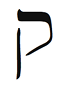
Kabala Balık burcuna ibranice harf Kuf’u atadı. Harfin yuvarlak kısmı başın arka kısmına, veya hayal gücünü ve hayal kurmayı yöneten insan korteksine benzer. Dik çizgi ise buradan çıkan mesajları bedenin geri kalan kısımlarına gönderen omuriliği simgeler. PET (pozitron emisyon tomografi) taramaları ile yapılan araştırma bize, bir insan görselleme yaptığı veya hayal ettiği zaman başın arka tarafında yer alan optik korteksin parladığını gösteriyor.
Balıktan önceki burç olan Kova, su taşıyıcısı olarak adlandırılır. Balık burcu, bilinçaltı olarak bilinen veya C. G. Jung’un toplu bilinçdışı olarak adlandırdığı suyu sağlar. Jung, tüm arketiplerin toplu bilinçdışında biraraya geldiğini söyler. Balık burcu da tüm astrolojik arketipleri kendinde toplamıştır. Kova burcunun ibranice harfi Tzadik, “balık kancası” anlamına gelir. Balıkçı kancayı nereye atar? Balık burcunun okyanusuna. Bizi son iki bin yıldır yöneten Balık Çağı, ilk simgelerinden biri balık olan Hristiyanlığın doğması ile başladı. Isa suda yürüdü ve “Sizi insanların balıkçısı yapacağım” dedi (Matta 4:18).
Psişik yeteneklerinizi ve gizemsel içgörülerinizi güçlendirmek için Kuf harfi ile meditasyon yapın. Kuf aynı zamanda düşlerinizi yorumlamanıza ve bilinçaltına erişmenize yardım edecek.
Bedenin Bölümleri
Balık burcu ayakları, lemf ve bağışıklık sistemlerini yönetir. Tıp uzmanları, bağışıklık sistemimizin gücü ile düşüncelerimiz ve hislerimiz arasında bir bağlantı keşfetmişlerdir. Balıklar her şeyi çok kişisel alırlar ve başkalarının olumsuz enerjilerini benimserler. Bu gerilimler bağışıklık sistemini ve dolayısıyla bedeni güçsüzleştirir. Çoğu Balık, düşünme veya hissetme tarzından dolayı psikosomatik (ruhsal-beden-el) hastalıklara veya sağlık sorunlarına maruz kalır.
İyileştirme sanatı refleksoloji, bedenin tüm organlarının ayaklardaki bazı noktalarla ilişkili olduğunu ileri sürer. Ayağın belirli bölgelerine masaj yaparak bedenin ilişkili bölgesi iyileştirilebilir. Bu mantıklı. Balık burcu (ayaklar) tüm diğer burçları (organları) içerir. Bu burç ayakları yönettiği için Balıklar zarif dansçıdırlar. Çoğunun, dans ederken veya hareket ederken derin meditasyona veya trans (mest) haline geçme yetenekleri vardır.

Balık burcunun karanlık yönü ile, bir gün için bile olsa, kendinize ait özel bir inziva yöntemi oluşturarak savaşın. Konuşmayın. Gün ortasından sonra yemeyin. En az iki saat meditasyon yapın. Bu spiritüel uygulama ile ne kadar yükseklere süzüldüğünüzü görün. Yaşamın zorluklarına nasıl bir açıklık geldiğini gözlemleyin.

Bu hafta dansa gidin. Bu neşeli etkinliğin neden olacağı dönüşüm sizi şaşırtacaktır. Örnek olarak, Balık burcu sağlık ve beslenme evinde olan bir kadın yıllardır kilo sorunu yaşıyordu. Ne yaptıysa- ki her şeyi denemişti- kilolarını atamıyordu. Artık vazgeçecekti ama Balık haftasında göbek dansı derslerine gitti. Başta, göbeğini göstermek zorunda kaldığı için olaydan nefret etmişti ama zamanla tuhaf bir şey oldu. Arap dünyasında balık etindeki kadınların güzel addedildiğini öğrendi. Bu gezegende anoreksik (çok zayıf) kadın beğenmeyen erkeklerin de olduğunu keşfetti. Sonunda beslenmesini değiştirdi. Yediği miktar yerine yediğinin niteliğine dikkat etmeye başladı. Ve iki yıl göbek dansına gittikten sonra on kiloya yakın kaybetti. Şimdi 34 beden değil tabii ama düzenli olarak iyi bir Orta Doğu lokantasında dans ediyor ve göbeğinden para kazanıyor.

Psişik yeteneklerinizi ve gizemsel içgörülerinizi güçlendirmek için Kuf harfi ile meditasyon yapın. Kuf aynı zamanda düşlerinizi yorumlamanıza ve bilinçaltına erişmenize yardım edecek.

Balık Burcunun Rengi: Mor-kırmızı
Balık burcunun rengi mor-kırmızıdır. Simya bu titreşimi, kendi kuyruğunu ısıran ve sonsuz bir daire yaratarak en düşük frekans kırmızıyı, en yüksek frekans mor ile buluşturan ve böylece yükseğin ve düşüğün birleştirilmiş bütününü yaratan bir yılan ile ilişkilendirir. Bu kavram, tüm gizemsel öğretilerin önermesi olan “Yukarıda olduğu gibi aşağıda da” formülünü yansıtır. Balık burcu, son ile başlangıcı kaynaştırır ve renk çemberini, kısmet çemberini, yaşam çemberini- Astrolojiyi- yaratır.
Balık Haftasında Neye Odaklanmalıyım?
Bu haftaki misyonunuz gizemcilik, spiritüellik ve hemcinslerinize, tüm duyumsal varlıklara eşduyum göstermektir. Yoga, ilahiler söylemek veya meditasyon gibi yeni spiritüel veya gizemsel etkinliklere başlamanın tam zamanıdır. Dans etmeye veya yüzmeye gidin. Sizi transa (mest haline) taşıyacak herhangi bir etkinliği deneyin. Bir hafta, veya daha kısa bir süre, zihninizi, koşuşturan düşüncelerinizi ve endişelerinizi terkedin. Değişik dinler veya spiritüel gelenekler hakkında bir derse katılabilir veya kitap okuyabilir ve böylece tüm gizemsel öğretilerin temelde aynı olduğunu görebilirsiniz. Hepsi bir tek yere, Tanrıya işaret etmektedir.
Balık burcunun simgeleri: Balık, yunus, denizkızı, okyanus, akıntı, şefkat, eşduyum, daire, son ve başlangıç, spiritüellik, din, inanç, gizemcilik, uyuşturucu, düşkünlük, hayal kurma, görselleştirme, düşler, uyku, tembellik, dans etme, ayaklar, bağışıklık sistemi, lemf bezleri, inziva, hapishane, acı çekme, psişik iyileştirme, kutsallık, yanılsama, şiir, aydınlanma.
Balık Haftası Kontrol Listesi
- Günde iki kez meditasyon yapın.
- Meditasyon sırasında ihtiyacınız olan şey için yaratıcı görsel leştirme yapın.
- Bir düş günlüğü tutun.
- Balık burcunun olumlamasını söyleyin: “Evrenin akışı ile uyum içindeyim; tüm ihtiyaçlarımı çabasız elde ediyorum.”
- Arkadaşlarınız ve aileniz ile şu psişik oyunu oynayın: Gözlerinizi kapatın ve birden ona kadar bir sayıya odaklanın. Hayal gücünüzü kullanarak bu sayıyı karşınızdakine gönderin. Bir dakika sonra ona sayıyı tahmin etmesini söyleyin. Psişik bilgiyi almakta mı yoksa göndermekte mi daha iyi olduğunuzu saptayın. Eğer almakta daha iyi iseniz vermeyi çalışın veya tersini yapın. Bu içgörü, yaşamı genelde nasıl götürdüğünüzün bir göstergesidir. Siz aşırı veren ve almayan bir insan mısınız, yoksa aşırı alan ve daha çok vermeye ihtiyacı olan bir insan mısınız?
- Dans derslerine katılın veya dans etmeye gidin.
- Dini figürler veya dini öyküler hakkında fantezi veya özyaşam öykülü filmler, müzikaller (örneğin, Günaha Son Çağrı) veya animasyon filmler kiralayın, izleyin.
- Karşılaştığınız her insanda Tanrıyı görmeye çalışın.
- Su kenarında takılın. Bu bir okyanus, nehir, göl veya çeşme olabilir.
- Tuzlu suda uzun süre banyo yapın.
- Dinin olumlu enerjileri üzerinde düşünebileceğiniz bir tapınağa veya parka gidin.
- Evinizde bir Tevrat veya bir Kuran veya daha başka bir dini metin bulundurun. Aslında hepsini bulundurmanız iyi olur. Değişik dini metinlerden en az on ikişer sayfa okuyun ve böylece değişik geleneklerin spiritüelliğini benimseyin.
- Sınır yaratma üzerinde çalışın. Düşkünlüklerinizi tanımlayın ve kontrol edin.
Balık Burcunun Ritüeli: Otomatik Yazma
Balık burcunun gizemsel niteliği, yüksek nefsimize veya Tanrıya erişmemize yardım edebilir. Yönlendirmek/yol açmak yüksek bilgeliğe varma yoludur. Bu spiritüel uygulama, benliğinizden vazgeçmenizi ve daha büyük bir şeyin içinizden belirmesine olanak tanımanızı talep eder. Aslında, siz yüksek bilgeliğe ulaşan bir hortumsunuz. Balık burcu Runik yazı, I Ching, Tarot ve deniz kabuğu, çay yaprakları veya kahve tortusu okumak gibi tüm kehanet biçimlerini yönetir. Kehanet anlamına gelen ingilizce divination sözcüğü, ilahi gücü görmek demek olan “to divine”dan gelmiştir.

Bu hafta dans etmeye gidin. Bu neşeli etkinliğin neden olduğu nuz ve zihniniz kurşun gibi dönüşüme şaşıracaksınız.

Gece geç vakit yorulduğunuz ve zihniniz kurşun gibi ağırlaştığı zaman rahat bir yerde oturun ve beyaz bir mum yakın. Boş bir kâğıt ve bir kalem bulundurun. Mumun alevine birkaç dakika süre ile bakarken gözünüzü kırpmamaya dikkat edin. Açıklığa kavuş- turmanız gereken bir konuyu düşünün. Gözleriniz yarı kapalı iken aklınıza ne gelirse yazmaya başlayın. Yazdığınızı yargılamayın veya eleştirmeyin. Bırakın yazı aksın. Kalemi kâğıdın üzerinden kaldırmayın. Ne olursa yazın. Beş dakika sonra durun ve uyumaya gidin.
Sabah kalktığınızda kâğıdı ters çevirin ve düşlerinizden anımsadıklarınızı veya o anki hislerinizi yazın. Bir gece önce yazdığınızı okumayın. izleyen kırk gece bu uygulamayı yapın. Kırkıncı gece yazdığınız her şeyi okuyun. Yazdığınızı anımsamadığınız veya bilgelik içerdiğini hissettiğiniz cümleleri veya paragrafları daire içine alın. Keşfedeceğiniz bilgi sizi şaşırtacaktır. Gece yazdıklarınızı düşleriniz ile karşılaştırın. Herhangi bir konuya açıklık getirmek istediğinizde bu uygulamayı yineleyin.
Ünlü Balıklar
Sidney Poitier, Nina Simone, Frederic Chopin, Auguste Renoir, Victor Hugo, Elizabeth Taylor, Bugsy Siegel, Mikha-il Gorbachev, Dr. Seuss (Theodore Seuss Geisel), Alexander Graham Bell, Antonio Vivaldi, Michelangelo, Gabriel Garcia Marquez, George Washington, Ralph Nader, Johnny Cash, Spike Lee, Albert Einstein, Rudolf Nureyev, Vaslav Nijinsky, Edgar Cayce.